Aidan Hogan, Eva Blomqvist, Michael Cochez, Claudia d’Amato, Gerard de Melo, Claudio Gutierrez, Sabrina Kirrane, José Emilio Labra Gayo, Roberto Navigli, Sebastian Neumaier, Axel-Cyrille Ngonga Ngomo, Axel Polleres, Sabbir M. Rashid, Anisa Rula, Lukas Schmelzeisen, Juan Sequeda, Steffen Staab, Antoine Zimmermann (2021) Knowledge Graphs, Synthesis Lectures on the Semantic Web: Theory and Technology, Vol. X, No. Y, 1-252, DOI: 10.2200/XXXXXXXXXXXXXXXXXXXXXXXXX, Morgan & Claypool
In this paper we provide a comprehensive introduction to knowledge graphs, which have recently garnered significant attention from both industry and academia in scenarios that require exploiting diverse, dynamic, large-scale collections of data. After some opening remarks, we motivate and contrast various graph-based data models and query languages that are used for knowledge graphs. We discuss the roles of schema, identity, and context in knowledge graphs. We explain how knowledge can be represented and extracted using a combination of deductive and inductive techniques. We summarise methods for the creation, enrichment, quality assessment, refinement, and publication of knowledge graphs. We provide an overview of prominent open knowledge graphs and enterprise knowledge graphs, their applications, and how they use the aforementioned techniques. We conclude with high-level future research directions for knowledge graphs.
Aidan Hogan, Eva Blomqvist, Michael Cochez, Claudia d’Amato, Gerard de Melo, Claudio Gutierrez, Sabrina Kirrane, José Emilio Labra Gayo, Roberto Navigli, Sebastian Neumaier, Axel-Cyrille Ngonga Ngomo, Axel Polleres, Sabbir M. Rashid, Anisa Rula, Lukas Schmelzeisen, Juan Sequeda, Steffen Staab, Antoine Zimmermann
June 2021
Acknowledgements
We thank the organisers and attendees of the Dagstuhl Seminar on “Knowledge Graphs”. We also thank those who provided feedback on this content. Hogan was supported by Fondecyt Grant No. 1181896. Hogan and Gutierrez were funded by ANID – Millennium Science Initiative Program – Code ICN17_002. Cochez did part of the work while employed at Fraunhofer FIT, Germany and was later partially funded by Elsevier’s Discovery Lab. Kirrane, Ngonga Ngomo, Polleres and Staab received funding through the project “KnowGraphs” from the European Union’s Horizon programme under the Marie Skłodowska-Curie grant agreement No. 860801. Kirrane and Polleres were supported by the European Union’s Horizon 2020 research and innovation programme under grant 731601. Labra was supported by the Spanish Ministry of Economy and Competitiveness (Society challenges: TIN2017-88877-R). Navigli was supported by the MOUSSE ERC Grant No. 726487 under the European Union’s Horizon 2020 research and innovation programme. Rashid was supported by IBM Research AI through the AI Horizons Network. Schmelzeisen was supported by the German Research Foundation (DFG) grant STA 572/18-1.
Introduction
Though the phrase “knowledge graph” has been used in the literature since at least 1972 [1], the modern incarnation of the phrase stems from the 2012 announcement of the Google Knowledge Graph [2], followed by further announcements of knowledge graphs by Airbnb [3], Amazon [4], eBay [5], Facebook [6], IBM [7], LinkedIn [8], Microsoft [9], Uber [10], and more besides. The growing industrial uptake of the concept proved difficult for academia to ignore: more and more scientific literature is being published on knowledge graphs, which includes books (e.g., [11, 12, 13, 14]), as well as papers outlining definitions (e.g., [15]), novel techniques (e.g., [16, 17, 18]), and surveys of specific aspects of knowledge graphs (e.g., [19, 20]).
Underlying all such developments is the core idea of using graphs to represent data, often enhanced with some way to explicitly represent knowledge [6]. The result is most often used in application scenarios that involve integrating, managing and extracting value from diverse sources of data at large scale [6]. Employing a graph-based abstraction of knowledge has numerous benefits in such settings when compared with, for example, a relational model or NoSQL alternatives. Graphs provide a concise and intuitive abstraction for a variety of domains, where edges capture the (potentially cyclical) relations between the entities inherent in social data, biological interactions, bibliographical citations and co-authorships, transport networks, and so forth [21]. Graphs allow maintainers to postpone the definition of a schema, allowing the data – and its scope – to evolve in a more flexible manner than typically possible in a relational setting, particularly for capturing incomplete knowledge [22]. Unlike (other) NoSQL models, specialised graph query languages support not only standard relational operators (joins, unions, projections, etc.), but also navigational operators for recursively finding entities connected through arbitrary-length paths [23]. Standard knowledge representation formalisms – such as ontologies [24, 25, 26] and rules [27, 28] – can be employed to define and reason about the semantics of the terms used to label and describe the nodes and edges in the graph. Scalable frameworks for graph analytics [29, 30, 31] can be leveraged for computing centrality, clustering, summarisation, etc., in order to gain insights about the domain being described. Various representations have also been developed that support applying machine learning techniques both directly and indirectly over graphs [20, 32].
In summary, the decision to build and use a knowledge graph opens up a range of techniques that can be brought to bear for integrating and extracting value from diverse sources of data et large scale. The goal of this book is to motivate and give a comprehensive introduction to knowledge graphs: to describe their foundational data models and how they can be queried; to discuss representations relating to schema, identity, and context; to discuss deductive and inductive ways to make knowledge explicit; to present a variety of techniques that can be used for the creation and enrichment of graph-structured data; to describe how the quality of knowledge graphs can be discerned and how they can be refined; to discuss standards and best practices by which knowledge graphs can be published; and to provide an overview of existing knowledge graphs found in practice. Our intended audience includes researchers and practitioners who are new to knowledge graphs. As such, we do not assume that readers have specific expertise on knowledge graphs.
Knowledge graph. The definition of a “knowledge graph” remains contentious [15, 33, 34], where a number of (sometimes conflicting) definitions have emerged, varying from specific technical proposals to more inclusive general proposals; we address these prior definitions in Appendix A. Herein we adopt an inclusive definition, where we view a knowledge graph as a graph of data intended to accumulate and convey knowledge of the real world, whose nodes represent entities of interest and whose edges represent relations between these entities. The graph of data (aka data graph) conforms to a graph-based data model, which may be a directed edge-labelled graph, a property graph, etc. (we discuss concrete alternatives in Section 2. By knowledge, we refer to something that is known. Such knowledge may be accumulated from external sources, or extracted from the knowledge graph itself. Knowledge may be composed of simple statements, such as “Santiago is the capital of Chile”, or quantified statements, such as “all capitals are cities”. Simple statements can be accumulated as edges in the data graph. If the knowledge graph intends to accumulate quantified statements, a more expressive way to represent knowledge – such as ontologies or rules – is required. Deductive methods can then be used to entail and accumulate further knowledge (e.g., “Santiago is a city”). Additional knowledge – based on simple or quantified statements – can also be extracted from and accumulated by the knowledge graph using inductive methods.
Knowledge graphs are often assembled from numerous sources, and as a result, can be highly diverse in terms of structure and granularity. To address this diversity, representations of schema, identity, and context often play a key role, where a schema defines a high-level structure for the knowledge graph, identity denotes which nodes in the graph (or in external sources) refer to the same real-world entity, while context may indicate a specific setting in which some unit of knowledge is held true. As aforementioned, effective methods for extraction, enrichment, quality assessment, and refinement are required for a knowledge graph to grow and improve over time.
In practice. Knowledge graphs aim to serve as an ever-evolving shared substrate of knowledge within an organisation or community [6]. We distinguish two types of knowledge graphs in practice: open knowledge graphs and enterprise knowledge graphs. Open knowledge graphs are published online, making their content accessible for the public good. The most prominent examples – DBpedia [35], Freebase [36], Wikidata [37], YAGO [38], etc. – cover many domains and are either extracted from Wikipedia [35, 38], or built by communities of volunteers [36, 37]. Open knowledge graphs have also been published within specific domains, such as media [39], government [40, 41], geography [42], tourism [43, 44, 45, 46], life sciences [47], and more besides. Enterprise knowledge graphs are typically internal to a company and applied for commercial use-cases [6]. Prominent industries using enterprise knowledge graphs include Web search (e.g., Bing [9], Google [2]), commerce (e.g., Airbnb [3], Amazon [4, 48], eBay [5], Uber [10]), social networks (e.g., Facebook [6], LinkedIn [8]), finance (e.g., Accenture [49], Banca d’Italia [50], Bloomberg [51], Capital One [52], Wells Fargo [53]), among others. Applications include search [9, 2], recommendations [3, 10, 8, 6], personal agents [5], advertising [8], business analytics [8], risk assessment [54, 55], automation [56], and more besides. We will provide more details on the use of knowledge graphs in practice in Section 10.
Running example. To keep the discussion accessible, throughout the book, we present concrete examples in the context of a hypothetical knowledge graph relating to tourism in Chile (loosely inspired by, e.g., [44, 43]). The knowledge graph is managed by a tourism board that aims to increase tourism in the country and promote new attractions in strategic areas. The knowledge graph itself will eventually describe tourist attractions, cultural events, services, businesses, travel routes, etc. Some applications the organisation envisages are to:
create a tourism portal that allows visitors to search for attractions, upcoming events, and other related services (in multiple languages);
gain insights into tourism demographics in terms of season, nationalities, etc.;
analyse sentiment about tourist attractions, including positive reviews, summaries of complaints about events and services, crime reports, etc.;
understand tourism trajectories: the sequence of attractions, events, etc., that tourists often visit;
cross-reference these tourism trajectories with currently available flights, buses, etc., to suggest new strategic routes for public transport;
offer personalised recommendations of places to visit;
and so forth.
Structure. The remainder of the book is structured as follows:
outlines the historical background for knowledge graphs.
Data Graphs
At the foundation of any knowledge graph is the principle of first applying a graph abstraction to data, resulting in an initial data graph. We now discuss a selection of graph-structured data models that are commonly used in practice to represent data graphs. We then discuss the primitives that form the basis of graph query languages used to interrogate such data graphs.
Models
Leaving aside graphs, let us assume that the tourism board from our running example has not yet decided how to model relevant data about attractions, events, services, etc. The board first considers using a tabular structure – in particular, relational databases – to represent the required data, and though they do not know precisely what data they will need to capture, they start to design an initial relational schema. They begin with an Event table with five columns:
Event(name, venue, type, start, end)
where name and start together form the primary key of the table in order to uniquely identify recurring events. But as they start to populate the data, they encounter various issues: events may have multiple names (e.g., in different languages), events may have multiple venues, they may not yet know the start and end date-times for future events, events may have multiple types, and so forth. Incrementally addressing these modelling issues as the data become more diverse, they generate internal identifiers for events and adapt their relational schema until they have:
With the above schema, the organisation can now model events with \(0{-}n\) names, venues, and types, and \(0{-}1\) start dates and end dates (without needing relational nulls/blank cells in tables).
Along the way, the board has to incrementally change the schema several times in order to support new sources of data. Each such change requires a costly remodelling, reloading, and reindexing of data; here we only considered one table. The tourism board struggles with the relational model because they do not know, a priori, what data will need to be modelled or what sources they will use. But once they reach the latter relational schema, the board finds that they can integrate further sources without more changes: with minimal assumptions on multiplicities (\(1{-}1\), \(1{-}n\), etc.) this schema offers a lot of flexibility for integrating incomplete and diverse data.
In fact, the refined, flexible schema that the board ends up with – shown in (2.1) – is modelling a set of binary relations between entities, which indeed can be viewed as modelling a graph. By instead adopting a graph data model from the outset, the board could forgo the need for an upfront schema, and could define any (binary) relation between any pair of entities at any time.
We now introduce graph data models popular in practice [23].
Directed edge-labelled graphs
A directed edge-labelled graph (which we will refer to as a del graph for short, and which is also known as a multi-relational graph [57, 58, 59]) is defined as a set of nodes – like Santiago, Arica, EID16, 2018-03-22 12:00 – and a set of directed labelled edges between those nodes, like Santa LucíacitySantiago. In the case of knowledge graphs, nodes are used to represent entities and edges are used to represent (binary) relations between those entities. Figure 2.1 provides an example of how the tourism board could model some relevant event data as a del graph. The graph includes data about the names, types, start and end date-times, and venues for events.1note 1 We represent bidirectional edges as Viña del MarbusArica, which more concisely depicts two directed edges: Viña del MarbusArica and Viña del MarbusArica. Also while some naming conventions recommend more complete edge labels that include a verb, such as has venue or is valid from, in this paper, for presentation purposes, we will omit the “has” and “is” verbs from such labels, using simply venue or valid from. Adding information to such a graph typically involves adding new nodes and edges (with some exceptions discussed later). Representing incomplete information requires simply omitting a particular edge; for example, the graph does not yet define a start/end date-time for the Food Truck festival.
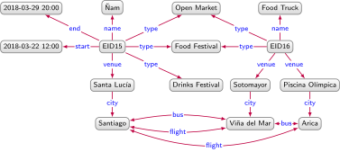
Directed edge-labelled graph describing events and their venues
Modelling data as a graph in this way offers more flexibility for integrating new sources of data, compared to the standard relational model, where a schema must be defined upfront and followed at each step. While other structured data models such as trees (XML, JSON, etc.) would offer similar flexibility, graphs do not require organising the data hierarchically (should venue be a parent, child, or sibling of type for example?). They also allow cycles to be represented and queried (e.g., note the directed cycle in the routes between Santiago, Arica, and Viña del Mar).
A standardised data model based on del graphs is the Resource Description Framework (RDF) [60], which has been recommended by the W3C. The RDF model defines different types of nodes, including Internationalized Resource Identifiers (IRIs) [61] which allow for global identification of entities on the Web; literals, which allow for representing strings (with or without language tags) and other datatype values (integers, dates, etc.); and blank nodes, which are anonymous nodes that are not assigned an identifier (for example, rather than create internal identifiers like EID15, EID16, in RDF, we have the option to use blank nodes). We will discuss these different types of nodes further in Section ? when we speak about issues relating to identity.
We formally define a directed-edge labelled (del) graph.
Directed edge-labelled graph
A directed edge-labelled graph is a tuple \(G \coloneqq (V,E,L)\), where \(V \subseteq \con\) is a set of nodes, \(L \subseteq \con\) is a set of edge labels, and \(E \subseteq V \times L \times V\) is a set of edges.
In reference to Figure 2.1, the set of nodes \(V\) has 15 elements, including Arica, EID16, etc. The set of edges \(E\) has 23 triples, including (Arica, flight, Santiago). Bidirectional edges are represented with two edges. The set of edge labels \(L\) has 8 elements, including start, flight, etc.
Definition 2.1 does not state that \(V\) and \(L\) are disjoint: though not present in the example, a node can also serve as an edge-label. The definition also permits that nodes and edge labels can be present without any associated edge. Either restriction could be explicitly stated – if necessary – in a particular application while still conforming to a directed edge-labelled graph.
In some of the definitions that follow, for ease of presentation, we may treat a set of (directed labelled) edges \(E \subseteq V \times L \times V\) as a dl graph \((V,E,L)\), in which case we refer to the graph induced by \(E\) assuming that \(V\) and \(L\) contain all and only those nodes and edge labels, respectively, used in \(E\). We may similarly apply set operators on del graphs, which should be interpreted as applying to their sets of edges; for example, given \(G_1 = (V_1,E_1,L_1)\) and \(G_2 = (V_2,E_2,L_2)\), by \(G_1 \cup G_2\) we refer to the del graph induced by \(E_1 \cup E_2\).
Heterogeneous graphs
A heterogeneous graph [62, 63, 64] (or heterogeneous information network [65, 66]) is a graph where each node and edge is assigned one type. Heterogeneous graphs are thus akin to del graphs – with edge labels corresponding to edge types – but where the type of node forms part of the graph model itself, rather than being expressed as a special relation, as shown in Figure 2.2. An edge is called homogeneous if it is between two nodes of the same type (e.g., borders); otherwise it is called heterogeneous (e.g., capital). Heterogeneous graphs allow for partitioning nodes according to their type, for example, for the purposes of machine learning tasks [62, 63, 64]. Conversely, they typically only support a one-to-one relation between nodes and types, which is not the case for del graphs (see, for example, the node Santiago with zero types and EID15 with multiple types in Figure 2.1.
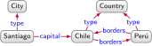
Del graphHeterogenous graphData about capitals and countries in a directed edge-labelled graph and a heterogeneous graph
We next define the notion of a heterogeneous graph.
Heterogeneous graph
A heterogeneous graph is a tuple \(G \coloneqq (V,E,L,l)\), where \(V \subseteq \con\) is a set of nodes, \(L \subseteq \con\) is a set of edge and node labels, \(E \subseteq V \times L \times V\) is a set of edges, and \(l : V \cup L\) maps each node to a label.
In reference to Figure 2.2b, the set of nodes \(V\) has three elements: Santiago, Chile, and Perú. The set of edges \(E\) has 3 triples, including (Santiago, capital, Chile). The set of edge labels \(L\) has 4 elements: capital, borders, City, Country. Finally, with respect to the node labels, \(l(\)Santiago\() =\) City, \(l(\)Chile\() =\) Country, and \(l(\)Perú\() =\) Country.
In heterogeneous graphs, edge and node labels are most commonly called types. We remark that by defining edges with labels per directed-edge labelled graphs – rather than labelling edges with \(l\) – we allow two nodes to be related by \(n\) edges with \(n\) different labels; e.g., we can represent both \((\)Santiago, capital, Chile\()\) and \((\)Santiago, country, Chile\()\) as edges in the heterogeneous graph.
Property graphs
Property graphs provide additional flexibility when modelling more complex relations. Consider integrating incoming data that provides information on which companies offer fares on which flights, allowing the board to better understand available routes between cities (for example, on national airlines). In the case of del graphs, we cannot directly annotate an edge like SantiagoflightArica with the company (or companies) offering that route. But we could add a new node denoting a flight, connect it with the source, destination, companies, and mode, as shown in Figure 2.3. Applying this modelling to all routes in Figure 2.1 would, however, involve significant changes.
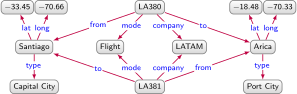
Del graph for flights between Santiago and Arica with companies
The property graph model was thus proposed to offer additional flexibility when modelling data as a graph [67, 23]. A property graph allows a set of property–value pairs and a label to be associated with both nodes and edges. Figure 2.4 depicts an example of a property graph with data analogous to Figure 2.3. We use property–value pairs on edges to model the companies2note 2 In practical implementations of property graphs, properties with multiple values may be expressed, for example, as a single array value. Such issues do not, however, affect expressivity, nor our discussion.. The type of relation is captured by the label flight}. We further use node labels to indicate the types of the two nodes, and property–value pairs for their latitude and longitude.
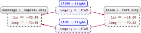
Property graph for flights between Santiago and Arica with companies
Property graphs are most prominently used in popular graph databases, such as Neo4j [67, 23]. In choosing between graph models, it is important to note that property graphs can be translated to/from directed edge-labelled graphs without loss of information [68, 69] (per, e.g., Figure 2.4). In summary, directed-edge labelled graphs offer a more minimal model, while property graphs offer a more flexible one. Often the choice of model will be secondary to other practical factors, such as the implementations available for different models, etc.
We define a property graph more formally.
Property graph
A property graph is a tuple \(G \coloneqq (V,E,L,P,U,e,l,p)\), where \(V \subseteq \con\) is a set of node ids, \(E \subseteq \con\) is a set of edge ids, \(L \subseteq \con\) is a set of labels, \(P \subseteq \con\) is a set of properties, \(U \subseteq \con\) is a set of values, \(e : E \rightarrow V \times V\) maps an edge id to a pair of node ids, \(l : V \cup E \rightarrow 2^L\) maps a node or edge id to a set of labels, and \(p : V \cup E \rightarrow 2^{P \times U}\) maps a node or edge id to a set of property–value pairs.
the set \(L\) contains Capital City, Port City, and flight;
the set \(P\) contains lat, long, and company;
the set \(U\) contains –33.45, –70.66, LATAM, –18.48, and –70.33;
the mapping \(e\) gives, e.g., \(e(\)LA380\() = (\)Santiago, Arica\()\);
the mapping \(l\) gives, e.g., \(l(\)Santiago\() =\{ \)Capital City\(\}\) and \(l(\)LA380\() =\{ \)flight\(\}\);
the mapping \(p\) gives, e.g., \(p(\)Santiago\() =\{ (\)lat, –33.45\(), (\)long, –70.66\() \}\) and \(p(\)LA380\() =\{ (\)company, LATAM\() \}\).
Definition 2.3 does not require that the sets \(V\), \(E\), \(L\), \(P\) or \(U\) be (pairwise) disjoint: we allow, for example, that values are also nodes. Unlike some previous definitions [23], here we allow a node or edge to have several values for a given property. In practice, systems like Neo4j [67] may rather support this by allowing an array of values. We view such variations as syntactic.
Graph dataset
Although multiple directed edge-labelled graphs can be merged by taking their union, it is often desirable to manage several graphs rather than one monolithic graph; for example, it may be beneficial to manage multiple graphs from different sources, making it possible to update or refine data from one source, to distinguish untrustworthy sources from more trustworthy ones, and so forth. A graph dataset then consists of a set of named graphs and a default graph. Each named graph is a pair of a graph ID and a graph. The default graph is a graph without an ID, and is referenced “by default” if a graph ID is not specified. Figure 2.5 provides an example where events and routes are stored in two named graphs, and the default graph manages meta-data about the named graphs. Graph names can also be used as nodes in a graph. Furthermore, nodes and edges can be repeated across graphs, where the same node in different graphs will typically refer to the same entity, allowing data on that entity to be integrated when merging graphs. Though the example depicts a dataset of del graphs, the concept generalises straightforwardly to datasets of other types of graphs.
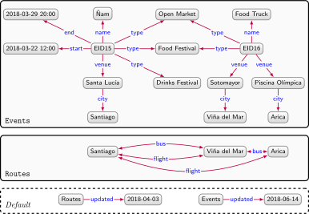
Graph dataset based on del graphs with two named graphs and a default graph describing events and routes
An RDF dataset is a graph dataset model standardised by the W3C [60] where each graph is an RDF graph, and graph names can be blank nodes or IRIs. A prominent use-case for RDF datasets is to manage and query Linked Data composed of interlinked documents of RDF graphs spanning the Web. When dealing with Web data, tracking the source of data becomes of key importance [70, 71, 72]. We will discuss Linked Data later in Section 3.2 and further discuss provenance in Section 3.3.
We more formally define a graph dataset, where one can consider del graph datasets, heterogeneous graph datasets, property graph datasets, etc.
Graph dataset
A named graph is a pair \((n,G)\) where \(G\) is a data graph, and \(n \in \con\) is a graph name. A graph dataset is a pair \(D \coloneqq (G_D,N)\) where \(G_D\) is a data graph called the default graph and \(N\) is either the empty set, or a set of named graphs \(\{ (n_1,G_1), \ldots (n_k,G_k) \}\) (\(k > 0\)) such that \(n_i = n_j\) if and only if \(i = j\) (for all \(1 \leq i \leq k\), \(1 \leq j \leq k\)). We assume that all data graphs in a graph dataset follow the same model (del graph, heterogeneous graph, property graph, etc).
Figure 2.5 provides an example of a del graph dataset \(D\) consisting of two named graphs and a default graph. The default graph does not have a name associated with it. The two graph names are Events and Routes; these are also used as nodes in the default graph.
Other graph data models
The previous models are popular examples of graph representations. Other graph data models exist with complex nodes that may contain individual edges [21, 73] or nested graphs [21, 74] (sometimes called hypernodes [75]. Likewise the mathematical notion of a hypergraph defines complex edges that connect sets rather than pairs of nodes. In our view, a knowledge graph can adopt any such graph data model based on nodes and edges: often data can be converted from one model to another (see Figure 2.3 vs. Figure 2.4). In the rest of the paper, we prefer discussing directed-edge labelled graphs given their relative succinctness, but most discussion extends naturally to other models.
Graph stores
A variety of techniques have been proposed for storing and indexing graphs, facilitating the efficient evaluation of queries (as discussed next). Del graphs can be stored in relational databases either as a single relation of arity three (triple table), as a binary relation for each property (vertical partitioning), or as \(n\)-ary relations for entities of a given type (property tables) [76]. Custom (so-called native) storage techniques have also been developed for a variety of graph models, providing efficient access for finding nodes, edges and their adjacent elements [21, 67, 76]. A number of systems further allow for distributing graphs over multiple machines based on popular NoSQL stores or custom partitioning schemes [76, 77]. For further details we refer to the book chapter by Daniel Janke, et al. [77] and the survey by Marcin Wylot, et al. [76] dedicated to this topic.
Querying
A number of practical languages have been proposed for querying graphs [23], including the SPARQL query language for RDF graphs [78]; and Cypher [79], Gremlin [80], and G-CORE [81] for querying property graphs.3note 3 The popularity of these languages is investigated by Philipp Seifer, et al. [82].. Underlying these query languages are some common primitives, including (basic) graph patterns, relational operators, path expressions, and more besides [23]. We now describe these core features for querying graphs in turn, starting with basic graph patterns.
Graph patterns
At the core of every structured query language for graphs are basic graph patterns [83, 23], which follow the same model as the data graph being queried (see Section 2.1), additionally allowing variables as terms.4note 4 The terms of a del graph are its nodes and edge-labels. The terms of a property graph are its ids, labels, properties, and values (as used on either edges or nodes). Terms in basic graph patterns are thus divided into constants, such as Arica or venue, and variables, which we prefix with question marks, such as ?event or ?rel. A basic graph pattern is then evaluated against the data graph by generating mappings from the variables of the graph pattern to constants in the data graph such that the image of the graph pattern under the mapping (replacing variables with the assigned constants) is contained within the data graph.
Figure 2.6 provide an example of a basic graph pattern looking for the venues of Food Festivals, along with the possible mappings generated by the graph pattern against the data graph of Figure 2.1. In some of the presented mappings (the last two listed), multiple variables are mapped to the same term, which may or may not be desirable depending on the application. Hence a number of semantics have been proposed for evaluating basic graph patterns [23], amongst which the most important are: homomorphism-based semantics, which allows multiple variables to be mapped to the same term such that all mappings shown in Figure 2.6 would be considered results; and isomorphism-based semantics, which requires variables on nodes and/or edges to be mapped to unique terms, thus excluding the latter three mappings of Figure 2.6 from the results. Different languages may adopt different semantics for evaluating basic graph patterns; for example, SPARQL adopts a homomorphism-based semantics, while Cypher adopts an isomorphism-based semantics specifically on edges (while allowing multiple variables to map to one node).
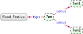
?ev
?vn1
?vn2
EID16
Piscina Olímpica
Sotomayor
EID16
Sotomayor
Piscina Olímpica
EID16
Piscina Olímpica
Piscina Olímpica
EID16
Sotomayor
Sotomayor
EID15
Santa Lucía
Santa Lucía
basic del graph pattern (left) with mappings generated over the del graph of Figure 2.1 (right)
As we will see in later examples (particularly Figure 2.8, basic graph patterns may also form cycles (be they directed or undirected), and may replace edge labels with variables. Basic graph patterns in the context of other models – such as property graphs – can be defined analogously by allowing variables to replace constants in any position of the model.
We formalise basic graph patterns first for del graphs, and subsequently for property graphs [23]. For these definitions, we introduce a countably infinite set of variables \(\var\) ranging over (but disjoint from: \(\con \cap \var = \emptyset\)) the set of constants. We refer generically to constants and variables as terms, denoted and defined as \(\term = \con \cup \var\). We can define a basic graph pattern for a given model simply by replacing constants with terms (that may be variables). Though we focus on del graphs and property graphs, basic graph patterns for other graph models can be defined analogously.
Basic directed edge-labelled graph pattern
We define a basic directed edge-labelled graph pattern (or basic del graph pattern for short) as a tuple \(Q = (V',E',L')\), where \(V' \subseteq \term\) is a set of node terms, \(L' \subseteq \term\) is a set of edge terms, and \(E' \subseteq V' \times L' \times V'\) is a set of edges (triple patterns).
Returning to the basic del graph pattern of Figure 2.6:
the set \(V'\) contains the constant Food Festival and variables ?event, ?ven1 and ?ven2;
the set \(E'\) contains four edges, including \((\)?event, type, Food Festival\()\);
the set \(L'\) contains the constants type and venue.
A basic property graph pattern is also defined by introducing variables.
Basic property graph pattern
We define a basic property graph pattern as a tuple \(Q = (V',E',L',P',U',e',l',p')\), where \(V' \subseteq \term\) is a set of node id terms, \(E' \subseteq \term\) is a set of edge id terms, \(L' \subseteq \term\) is a set of label terms, \(P' \subseteq \term\) is a set of property terms, \(U' \subseteq \term\) is a set of value terms, \(e' : E' \rightarrow V' \times V'\) maps an edge id term to a pair of node id terms, \(l' : V' \cup E' \rightarrow 2^{L'}\) maps a node or edge id term to a set of label terms, and \(p' : V' \cup E' \rightarrow 2^{P' \times U'}\) maps a node or edge id term to a set of pairs of property–value terms.
Towards defining the results of evaluating a basic graph pattern over a data graph (following the same model), we first define a partial mapping \(\mu : \var \rightarrow \con\) from variables to constants, whose domain (the set of variables for which it is defined) is denoted by \(\dom(\mu)\). Given a basic graph pattern \(Q\), let \(\var(Q)\) denote the set of all variables appearing in (some recursively nested element of) \(Q\). We further denote by \(\mu(Q)\) the image of \(Q\) under \(\mu\), meaning that any variable \(v \in \var(Q) \cap \dom(\mu)\) is replaced in \(Q\) by \(\mu(v)\). Observe that when \(\var(Q) \subseteq \dom(\mu)\), then \(\mu(Q)\) is a data graph (in the corresponding model of \(Q\)).
Next, we define the notion of containment between data graphs. For two del graphs \(G_1 = (V_1,E_1,L_1)\) and \(G_2 = (V_2,E_2,L_2)\), we say that \(G_1\) is a sub-graph of \(G_2\), denoted \(G_1 \subseteq G_2\), if and only if \(V_1 \subseteq V_2\), \(E_1 \subseteq E_2\), and \(L_1 \subseteq L_2\).5note 5 Given, for example, \(G_1 = (\{a\},\{(a,b,a)\},\{b,c\})\) and \(G_2 = (\{a,c\},\{(a,b,a)\},\{b\})\), we remark that \(G_1 \not\subseteq G_2\) and \(G_2 \not\subseteq G_1\): the former has a label not used on an edge while the latter has a node without an incident edge. In concrete data models like RDF where such cases of nodes or labels without edges cannot occur, the sub-graph relation \(G_1 \subseteq G_2\) holds if and only if \(E_1 \subseteq E_2\) holds. Conversely, in property graphs, nodes can often be defined without edges. For two property graphs \(G_1 = (V_1,E_1,L_1,P_1,U_1,e_1,l_1,p_1)\) and \(G_2 = (V_2,E_2,L_2,P_2,U_2,e_2,l_2,p_2)\), we say that \(G_1\) is a sub-graph of \(G_2\), denoted \(G_1 \subseteq G_2\), if and only if \(V_1 \subseteq V_2\), \(E_1 \subseteq E_2\), \(L_1 \subseteq L_2\), \(P_1 \subseteq P_2\), \(U_1 \subseteq U_2\), for all \(x \in E_1\) it holds that \(e_1(x) = e_2(x)\), and for all \(y \in E_1 \cup V_1\) it holds that \(l_1(y) \subseteq l_2(y)\) and \(p_1(y) \subseteq p_2(y)\).
We are now ready to define the evaluation of a basic graph pattern.
Evaluation of a basic graph pattern
Let \(Q\) be a basic graph pattern and let \(G\) be a data graph (in the same model). We then define the evaluation of the basic graph pattern \(Q\) over the data graph \(G\), denoted \(Q(G)\), to be the set of mappings \(Q(G) = \{ \mu \mid \mu(Q) \subseteq G \text{ and } \dom(\mu) = \var(Q) \}\).
Figure 2.6 enumerates all of the mappings given by the evaluation of the depicted basic graph pattern over the data graph of Figure 2.1. Each non-header row indicates a mapping \(\mu\).
The final results of evaluating a basic graph pattern may vary depending on the choice of semantics: the results under homomorphism-based semantics are defined as \(Q(G)\). Conversely, under isomorphism-based semantics, mappings that send two edge variables to the same constant and/or mappings that send two node variables to the same constant may be excluded from the results. Henceforth we assume the more general homomorphism-based semantics.
Complex graph patterns
A (basic) graph pattern transforms an input graph into a table of results (as shown in Figure 2.6). We may then consider using the relational algebra to combine and/or transform such tables, thus forming more complex queries from one or more graph patterns. Recall that the relational algebra consists of unary operators that accept one input table, and binary operators that accept two input tables. Unary operators include projection (\(\pi\)) to output a subset of columns, selection (\(\sigma\)) to output a subset of rows matching a given condition, and renaming of columns (\(\rho\)). Binary operators include union (\(\cup\)) to merge the rows of two tables into one table, difference (\(-\)) to remove the rows from the first table present in the second table, and joins (\(\Join\)) to extend the rows of one table with rows from the other table that satisfy a join condition. Selection and join conditions typically include equalities (\(=\)), inequalities (\(\leq\)), negation (\(\neg\)), disjunction (\(\vee\)), etc. From these operators, we can further define other (syntactic) operators, such as intersection (\(\cap\)) to output rows in both tables, anti-join (\(\rhd\), aka not exists) to output rows from the first table for which there are no join-compatible rows in the second table, left-join (\(\mathbin{\rule[0ex]{0.3em}{.5pt}\llap{\rule[1ex]{0.3em}{.5pt}}\mkern-6mu\Join}\)), aka optional) to perform a join but keeping rows from the first table without a compatible row in the second table, etc.
Basic graph patterns can then be expressed in a subset of relational algebra (namely \(\pi\), \(\sigma\), \(\rho\), \(\Join\)). Assuming, for example, a single ternary relation \(G(s,p,o)\) representing a graph – i.e., a table \(G\) with three columns \(s\), \(p\), \(o\) – the query of Figure 2.6 can be expressed in relational algebra as:
where \(\Join\) denotes a natural join, meaning that equality is checked across pairs of columns with the same name in both tables (here, the join is thus performed on the subject column \(s\)). The result of this query is a table with a column for each variable: \(ev,vn1,vn2\). However, not all queries using \(\pi, \sigma, \rho\) and \(\Join\) on \(G\) can be expressed as basic graph patterns; for example, we cannot choose which variables to project in a basic graph pattern, but rather must project all variables not fixed to a constant.
Graph query languages such as SPARQL [78] and Cypher [79] allow the full use of relational operators over the results of graph patterns, giving rise to complex graph patterns [23]. Figure 2.7 presents an example of a complex graph pattern with projected variables in bold, choosing particular variables to appear in the final results. In terms of expressivity, graph patterns with (unrestricted) projection of this form equate to conjunctive queries on graphs. In Figure 2.8, we give another example of a complex graph pattern looking for food festivals or drinks festivals not held in Santiago, optionally returning their start date and name (where available). Such queries – allowing the full use of relational operators on top of graph patterns – equate to first-order queries on graphs.
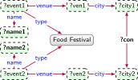
?name1
?con
?name2
Food Truck
bus
Food Truck
Food Truck
bus
Food Truck
Food Truck
bus
Ñam
Food Truck
flight
Ñam
Food Truck
flight
Ñam
Ñam
bus
Food Truck
Ñam
flight
Food Truck
Ñam
flight
Food Truck
Conjunctive query (left) with mappings generated over the graph of Figure 2.1 (right)
Complex graph patterns can give rise to duplicate results; for example, the first result in Figure 2.7 appears twice since ?city1 matches Arica and ?city2 matches Viña del Mar in one result, and vice-versa in the other. Query languages then offer two semantics: bag semantics preserves duplicates according to the multiplicity of the underlying mappings, while set semantics (typically invoked with a DISTINCT keyword) removes duplicates from the results.
We now more formally define complex graph patterns.
Complex graph pattern
Complex graph patterns are defined recursively, as follows:
If \(Q\) is a basic graph pattern, then \(Q\) is a complex graph pattern.
If \(Q\) is a complex graph pattern, and \(\mathcal{V} \subseteq \var(Q)\), then \(\pi_\mathcal{V}(Q)\) is a complex graph pattern.
If \(Q\) is a complex graph pattern, and \(R\) is a selection condition with boolean and equality connectives (\(\wedge\), \(\vee\), \(\neg\), \(=\)) , then \(\sigma_R(Q)\) is a complex graph pattern.
If both \(Q_1\) and \(Q_2\) are complex graph patterns, then \(Q_1 \Join Q_2\), \(Q_1 \cup Q_2\) and \(Q_1 - Q_2\) are also complex graph patterns.
We now define the evaluation of complex graph patterns. Given a mapping \(\mu\), for a set of variables \(\mathcal{V} \subseteq \var\) let \(\mu[\mathcal{V}]\) denote the mapping \(\mu'\) such that \(\dom(\mu') = \dom(\mu) \cap \mathcal{V}\) and \(\mu(v) = \mu'(v)\) for all \(v \in \dom(\mu')\) (in other words, \(\mu[\mathcal{V}]\) projects the variables \(\mathcal{V}\) from \(\mu\)). Letting \(R\) denote a boolean selection condition and \(\mu\) a mapping, we denote by \(R \models \mu\) that \(\mu\) satisfies the boolean condition. Finally, we define two mappings \(\mu_1\) and \(\mu_2\) to be compatible, denoted \(\mu_1 \sim \mu_2\), if and only if \(\mu_1(v) = \mu_2(v)\) for all \(v \in \dom(\mu_1) \cap \dom(\mu_2)\) (i.e., they map all common variables to the same constant). We are now ready to provide the definition.
Complex graph pattern evaluation
Given a complex graph pattern \(Q\), if \(Q\) is a basic graph pattern, then \(Q(G)\) is defined per Definition 2.7. Otherwise, \(Q(G)\) is defined as follows:
\begin{align*}
\pi_\mathcal{V}(Q)(G) \coloneqq & \,\{ \mu[\mathcal{V}] \mid \mu \in Q(G) \} \\
\sigma_R(Q)(G) \coloneqq & \, \{ \mu \mid \mu \in Q(G)\text{ and }R \models \mu\}\\
Q_1 \Join Q_2(G) \coloneqq & \,\{ \mu_1 \cup \mu_2 \mid \mu_1 \in Q_2(G), \mu_2 \in Q_1(G)\text{ and }\mu_1 \sim \mu_2 \} \\
Q_1 \cup Q_2(G) \coloneqq & \,\{ \mu \mid \mu \in Q_1(G)\text{ or } \mu \in Q_2(G) \} \\
Q_1 - Q_2(G) \coloneqq & \,\{ \mu \mid \mu \in Q_1(G)\text{ and } \mu \notin Q_2(G) \}
\end{align*}
Based on these operators, we can define some additional syntactic operators, such as the anti-join (\(\rhd\), aka not exists), or the left-join \(\mathbin{\rule[0ex]{0.3em}{.5pt}\llap{\rule[1ex]{0.3em}{.5pt}}\mkern-6mu\Join}\), aka optional):
Complex graph pattern (\(Q\)) with mappings generated (\(Q(G)\)) over the graph of Figure 2.1 (\(G\))
Navigational graph patterns
A key feature that distinguishes graph query languages is the ability to include path expressions in queries. A path expression \(r\) is a regular expression that allows for matching arbitrary-length paths between two nodes using a regular path query \((x,r,y)\), where \(x\) and \(y\) can be variables or constants (or even the same term). The base path expression is where \(r\) is a constant (an edge label). Furthermore if \(r\) is a path expression, then \(r^*\) (Kleene star: zero-or-more) is also a path expressions. Finally, if \(r_1\) and \(r_2\) are path expressions, then \(r_1 \mid r_2\) (disjunction) and \(r_1 \cdot r_2\) (concatenation) are also path expressions. A related notion is that of 2-way regular path queries, which also allow for querying inverse paths; specifically, if \(r\) is path expression, then it is a 2-way path expression, and if \(r\) is a 2-way path expression, then \(r^-\) (inverse) is a 2-way path expression. Henceforth we will refer generically to both the 1-way and 2-way variants as path expressions and regular path queries.
Regular path queries can be evaluated under a number of different semantics. For example, \((\)Arica, bus*, ?city\()\) evaluated against the graph of Figure 2.1 may match the paths shown in Figure 2.9. In fact, since a cycle is present, an infinite number of paths are potentially matched. For this reason, restricted semantics are often applied, returning only the shortest paths, or paths without repeated nodes or edges (as in the case of Cypher).6note 6 Mapping variables to paths requires special treatment [23]. Cypher [79] returns a string that encodes a path, upon which certain functions such as length(·) can be applied. G-CORE [81], on the other hand, allows for returning paths, and supports additional operators on them, including projecting them as graphs, applying cost functions, and more besides. Rather than returning paths, another option is to instead return the (finite) set of pairs of nodes connected by a matching path (as in the case of SPARQL 1.1).
⋯Example paths matching \((\)Arica, bus*, ?city\()\) over the graph of Figure 2.1
Regular path queries can then be used in basic graph patterns to express navigational graph patterns [23], as shown in Figure 2.10, which illustrates a query searching for food festivals in cities reachable (recursively) from Arica by bus or flight. Furthermore, when regular path queries and graph patterns are combined with operators such as projection, selection, union, difference, and optional, the result is known as complex navigational graph patterns [23].
We will define navigational graph patterns over del and property graphs, but first we define path expressions and regular path queries.
Path expression
A constant (edge label) \(c\) is a path expression. Furthermore, if \(r\), \(r_1\) and \(r_2\) are path expressions, then:
\(r^-\) (inverse) and \(r^*\) (Kleene star) are path expressions.
\(r_1 \cdot r_2\) (concatenation) and \(r_1 \mid r_2\) (disjunction) are path expressions.
We now define the evaluation of a path expression under the SPARQL 1.1-style semantics whereby the endpoints (pairs of start and end nodes) of the path are returned [78].
Given a del graph \(G = (V,E,L)\) and a path expression \(r\), we define the evaluation of \(r\) over \(G\), denoted \(r[G]\), as follows:
\begin{align*}
r[G] \coloneqq &\, \{ (u,v) \mid (u,r,v) \in E \} \,(\text{for }r \in \con) \\
r^-[G] \coloneqq &\, \{ (u,v) \mid (v,u) \in r[G] \} \\
r_1 \mid r_2[G] \coloneqq &\, r_1[G] \cup r_2[G] \\
r_1 \cdot r_2[G] \coloneqq &\, \{ (u,v) \mid \exists w \in V : (u,w) \in r_1[G]\text{ and }(w,v) \in r_2[G]\}\\
r^*[G] \coloneqq &\, V \cup \bigcup_{n \in \mathbb{N^+}} r^n[G]
\end{align*}
where by \(r^n\) we denote the \(n\)th-concatenation of \(r\) (e.g., \(r^3 = r \cdot r \cdot r\)).
The evaluation of a path expression on a property graph \(G = (V,E,L,P,U,e,l,p)\) can be defined analogously by adapting the first definition (in the case that \(r \in \con\)) as follows:
\[ r[G] \coloneqq \{(u,v) \mid \exists x \in E : e(x) = (u,v)\text{ and }l(e) = r \} \,.\]
The rest of the definitions then remain unchanged.
Query languages may support additional operators, some of which are syntactic (e.g., \(r^+\) is sometimes used for one-or-more, but can be rewritten as \(r \cdot r^*\)), while others may add expressivity such as the case of SPARQL [78], which allows a limited form of negation in expressions (e.g., \(!r\), with \(r\) being a constant or the inverse of a constant, matching any path not labelled \(r\)).
Next we define a regular path query and its evaluation.
Regular path query
A regular path query is a triple \((x,r,y)\) where \(x,y \in \con \cup \var\) and \(r\) is a path expression.
Regular path query evaluation
Let \(G\) denote a directed edge-labelled graph, \(c\), \(c_1\), \(c_2 \in \con\) denote constants and \(z\), \(z_1\), \(z_2 \in \var\) denote variables. Then the evaluation of a regular path query is defined as follows:
\begin{align*}
(c_1,r,c_2)(G) \coloneqq & \{ \mu_\emptyset \mid (c_1,c_2) \in r[G] \} \\
(c,r,z)(G) \coloneqq & \{ \mu \mid \dom(\mu) = \{ z \}\text{ and }(c,\mu(z)) \in r[G] \} \\
(z,r,c)(G) \coloneqq & \{ \mu \mid \dom(\mu) = \{ z \}\text{ and }(\mu(z),c) \in r[G] \} \\
(z_1,r,z_2)(G) \coloneqq & \{ \mu \mid \dom(\mu) = \{ z_1, z_2 \}\text{ and }(\mu(z_1),\mu(z_2)) \in r[G] \}
\end{align*}
where \(\mu_\emptyset\) denotes the empty mapping such that \(\dom(\mu) = \emptyset\) (the join identity).
Navigational graph pattern
If \(Q\) is a basic graph pattern, then \(Q\) is a navigational graph pattern. If \(Q\) is a navigational graph pattern and \((x,r,y)\) is a regular path query, then \(Q \Join (x,r,y)\) is a navigational graph pattern.
The definition of the evaluation of a navigational graph pattern then follows from the previous definition of a join and the definition of the evaluation of a regular path query (for a directed edge-labelled graph or a property graph, respectively). Likewise, complex navigational graph patterns – and their evaluation – are defined by extending this definition in the natural way with the same operators from Definition 2.8 following the same semantics seen in Definition 2.9.
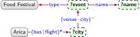
?event
?name
?city
EID15
Ñam
Santiago
EID16
Food Truck
Arica
EID16
Food Truck
Viña del Mar
Navigational graph pattern (left) with mappings generated over the graph of Figure 2.1 (right)
Other features
Thus far we have discussed features that form the practical and theoretical foundation of any query language for graphs [23]. However, specific query languages for graphs may support other features, such as aggregation (GROUP BY, COUNT, etc.), more complex filters and datatype operators (e.g., range queries on years extracted from a date), federation for querying remotely hosted graphs over the Web, languages for updating graphs, support for entailment, etc. For more information, we refer to the documentation of the respective query languages (e.g., [78, 81]) and to the survey by Renzo Angles, et al. [23].
Schema, Identity, Context
In thischapter we describe various enhancements and extensions of the data graph – relating to schema, identity and context – that provide additional structures for accumulating knowledge. Henceforth, we refer to a data graph as a collection of data represented as nodes and edges using one of the models discussed in Chapter 2. We refer to a knowledge graph as a data graph potentially enhanced with representations of schema, identity, context, ontologies and/or rules. These additional representations may be embedded in the data graph, or layered above it. Representations for schema, identity and context are discussed in the current chapter, while ontologies and rules will be discussed in Chapter 4.
Schema
One of the benefits of modelling data as graphs – versus, for example, the relational model – is the option to forgo or postpone the definition of a schema. However, when modelling data as graphs, schemata can be used to prescribe a high-level structure and/or semantics that the graph follows or should follow. We discuss three types of graph schemata: semantic, validating, and emergent.
Semantic schema
A semantic schema allows for defining the meaning of high-level terms (aka vocabulary or terminology) used in the graph, which facilitates reasoning over graphs using those terms. Looking at Figure 2.1, for example, we may notice some natural groupings of nodes based on the types of entities to which they refer. We may thus decide to define classes, such as Event, City, etc., to denote these groupings. In fact, Figure 2.1 already illustrates three low-level classes – Open Market, Food Market, Drinks Festival – grouping similar entities with an edge labelled type. We may subsequently wish to capture some relations between some of these classes. In Figure 3.1, we present a class hierarchy for events where children are defined to be subclasses of their parents such that if we find an edge EID15typeFood Festival in our graph, we may also infer that EID15typeFestival and EID15typeEvent hold in the graph.
Example class hierarchy for Event
Aside from classes, we may also wish to define the semantics of edge labels, aka properties. Returning to Figure 2.1, we may consider that the properties city and venue are sub-properties of a more general property location, such that given an edge Santa LucíacitySantiago, for example, we may also infer that Santa LucíalocationSantiago. We may also consider, for example, that bus and flight are both sub-properties of a more general property connects to. Along these lines, properties may also form a hierarchy similar to what we exemplified for classes. We may further define the domain of properties, indicating the class(es) of entities for nodes from which edges with that property extend; for example, we may define that the domain of connects to is a class Place, such that given the previous sub-property relations, we could conclude that AricatypePlace. Conversely, we may define the range of properties, indicating the class(es) of entities for nodes to which edges with that property extend; for example, we may define that the range of city is a class City, inferring that AricatypeCity.
A prominent standard for defining a semantic schema for (RDF) graphs is the RDF Schema (RDFS) standard [25], which allows for defining subclasses, subproperties, domains, and ranges amongst the classes and properties used in an RDF graph, where such definitions can be serialised as a graph. We illustrate the semantics of these features in Table 3.1 and provide a concrete example of definitions in Figure 3.2 for a sample of terms used in the running example. These definitions can then be embedded into a data graph. More generally, the semantics of terms used in a graph can be defined in much more depth than seen here, as is supported by the Web Ontology Language (OWL) standard [24] for RDF graphs. We will return to such semantics later in Chapter 4.
Definitions for sub-class, sub-property, domain and range features in semantic schemata
Feature
Definition
Condition
Example
Subclass
\(c\)subc. of\(d\)
\(x\)type\(c\) implies \(x\)type\(d\)
Citysubc. ofPlace
Subproperty
\(p\)subp. of\(q\)
\(x\)\(p\)\(y\) implies \(x\)\(q\)\(y\)
venuesubp. oflocation
Domain
\(p\)domain\(c\)
\(x\)\(p\)\(y\) implies \(x\)type\(c\)
venuedomainEvent
Range
\(p\)range\(c\)
\(x\)\(p\)\(y\) implies \(y\)type\(c\)
venuerangeVenue
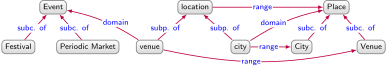
Example schema graph describing sub-classes, sub-properties, domains, and ranges
Semantic schema are typically defined for incomplete graph data, where the absence of an edge between two nodes, such as Viña del MarflightArica, does not mean that the relation does not hold in the real world. Therefore, from the graph of Figure 2.1, we cannot assume that there is no flight between Viña del Mar and Arica. In contrast, if the Closed World Assumption (CWA) were adopted – as is the case in many classical database systems – it would be assumed that the data graph is a complete description of the world, thus allowing to assert with certainty that no flight exists between the two cities. Systems that do not adopt the CWA are said to adopt the Open World Assumption (OWA). A consequence of CWA is that the addition of an edge to the data graph may contradict what was previously assumed to be false (due to missing information), whereas with OWA, a statement that is proven false continues to be false with the addition of more edges.
Considering our running example, it would be unreasonable to assume that the tourism organisation has complete knowledge of everything describable in its knowledge graph. However, it is inconvenient if a system is unable to definitely answer “yes” or “no” to questions such as “is there a flight between Arica and Viña del Mar?”, especially when the organisation is certain that it has complete knowledge of the flights. A compromise between OWA and CWA is the Local Closed World Assumption (LCWA), where portions of the data graph are assumed to be complete.
Validating schema
When graphs are used to represent diverse, incomplete data at large-scale, the OWA is the most appropriate choice for a default semantics. But in some scenarios, we may wish to guarantee that our data graph – or specific parts thereof – are in some sense “complete”. Returning to Figure 2.1, for example, we may wish to ensure that all events have at least a name, a venue, a start date, and an end date, such that applications using the data – e.g., one that sends event notifications to users – can ensure that they have the minimal information required. Furthermore, we may wish to ensure that the city of an event is stated to be a city (rather than inferring that it is a city). We can define such constraints in a validating schema and validate the data graph with respect to the resulting schema, listing constraint violations (if any). Thus while semantic schemata allow for inferring new graph data, validating schemata allow for validating a given data graph with respect to some constraints.
A standard way to define a validating schema for graphs is using shapes [84, 85, 86]. A shape targets a set of nodes in a data graph and specifies constraints on those nodes. The shape’s target can be defined in many ways, such as targetting all instances of a class, the domain or range of a property, the result of a query, nodes connected to the target of another shape by a given property, etc. Constraints can then be defined on the targetted nodes, such as to restrict the number or types of values taken on a given property, the shapes that such values must satisfy, etc
A shapes graph is formed from a set of interrelated shapes. Shapes graphs can be depicted as UML-like class diagrams, where Figure 3.3 illustrates an example of a shapes graph based on Figure 2.1, defining constraints on four interrelated shapes. Each shape – denoted with a box like Place, Event, etc. – is associated with a set of constraints. Nodes conform to a shape if and only if they satisfy all constraints defined on the shape. Inside each shape box are placed constraints on the number (e.g., [1..*] denotes one-to-many, [1..1] denotes precisely one, etc.) and types (e.g., string, dateTime, etc.) of nodes that conforming nodes can relate to with a property (e.g., name, start, etc.). Another option is to place constraints on the number of nodes conforming to a particular shape that the conforming node can relate to with a property (thus generating edges between shapes); for example, Eventvenue 1..*Venue denotes that conforming nodes for Event must relate to at least one node with the property venue that conforms to the Venue shape. Shapes can inherit the constraints of parent shapes – with inheritance denoted with an \(\triangle\) connector – as in the case of City and Venue, whose conforming nodes must also conform to the Place shape.
Example shapes graph depicted as a UML-like diagram
Given a shape and a targetted node, it is possible to check if the node conforms to that shape or not, which may require checking conformance of other nodes; for example, the node EID15 conforms to the Event shape not only based on its local properties, but also based on conformance of Santa Lucía to Venue and Santiago to City. Conformance dependencies may also be recursive, where the conformance of Santiago to City requires that it conforms to Place, which requires that Viña del Mar and Arica conform to Place, and so on. Conversely, EID16 does not conform to Event, as it does not have the start and end properties required by the example shapes graph.
When declaring shapes, the data modeller may not know in advance the entire set of properties that some nodes can have (now or in the future). An open shape allows the node to have additional properties not specified by the shape, while a closed shape does not. For example, if we add the edge SantiagofounderPedro de Valdivia to the graph represented in Figure 2.1, then Santiago only conforms to the City shape if the shape is defined as open (since the shape does not mention founder).
Practical languages for shapes often support additional boolean features, such as conjunction (and), disjunction (or), and negation (not) of shapes; for example, we may say that all the values of venue should conform to the shape Venueand (notCity), making explicit that venues in the data graph should not be directly given as cities. However, shapes languages that freely combine recursion and negation may lead to semantic problems, depending on how their semantics are defined. To illustrate, consider the following case inspired by the barber paradox [86], involving a shape Barber whose conforming nodes shave at least one node conforming to Personand (notBarber). Now, given (only) BobshaveBob with Bob conforming to Person, does Bob conform to Barber? If yes – if Bob conforms to Barber – then Bob violates the constraint by not shaving at least one node conforming to Personand (notBarber). If no – if Bob does not conform to Barber – then Bob satisfies the Barber constraint by shaving such a node. Semantics to avoid such paradoxical situations have been proposed based on stratification [87], partial assignments [88], and stable models [89].
Although validating schemata and semantic schemata serve different purposes, they can complement each other. In particular, a validating schema can take into consideration a semantic schema, such that, for example, validation is applied on the data graph including inferences. Taking the class hierarchy of Figure 3.1 and the shapes graph of Figure 3.3, for example, we may define the target of the Event shape as the nodes that are of type Event (the class). If we first apply inferencing with respect to the class hierarchy of the semantic schema, the Event shape would now target EID15 and EID16. The presence of a semantic schema may, however, require adapting the validating schema. Taking into account, for example, the aforementioned class hierarchy would require defining a relaxed cardinality on the type property. Open shapes may also be preferred in such cases rather than enumerating constraints on all possible properties that may be inferred on a node.
Two shapes languages have recently emerged for RDF graphs: Shape Expressions (ShEx), published as a W3C Community Group Report [85]; and SHACL (Shapes Constraint Language), published as a W3C Recommendation [84]. These languages support the discussed features (and more) and have been adopted for validating graphs in a number of domains relating to health-care [90], scientific literature [91], spatial data [92], amongst others. More details about ShEx and SHACL can be found in the book by Jose Emilio Labra Gayo, et al. [86]. A recently proposed language that can be used as a common basis for both ShEx and SHACL reveals their similarities and differences [93]. A similar notion of schema has been proposed by Renzo Angles [94] for property graphs.
We formally define shapes following the conventions of Jose Emilio Labra Gayo, et al. [93].
Shape
A shape \(\phi\) is defined as:
\(\phi\)
::=
\(\top\)
true
\( | \)
\(\datatype{N}\)
node belongs to the set of nodes \(N\)
\( | \)
\(\Psi_{\mathrm{cond}}\)
node satisfies the boolean condition \(\mathrm{cond}\)
\( | \)
\(\phi_1 \wedge \phi_2\)
conjunction of shape \(\phi_1\) and shape \(\phi_2\)
\( | \)
\(\lnot \phi \)
negation of shape \(\phi\)
\( | \)
\(@s\)
reference to shape with label \(s\)
\( | \)
\(\qualified{p}{\phi}{min}{max}\)
between \(min\) and \(max\) outward edges (inclusive) with label \(p\) to nodes satisfying shape \(\phi\)
where \(min \in \mathbb{N}_{(0)}\), \(max \in \mathbb{N}_{(0)} \cup \{ * \}\), with “\(*\)” indicating unbounded.
Shapes schema
A shapes schema is defined as a tuple \(\Sigma = (\Phi,S,\lambda)\) where \(\Phi\) is a set of shapes, \(S\) is a set of shape labels, and \(\lambda : S \rightarrow \Phi\) is a total function from labels to shapes.
The shapes schema from Figure 3.3 can be expressed as:
For example, Event is a shape label (an element of \(S\)) that maps to a shape (an element of \(\phi\)). This mapping is defined by \(\lambda\).
In a shapes schema, shapes may refer to other shapes, giving rise to a graph that is sometimes known as the shapes graph [84]. Figure 3.3 illustrates a shapes graph of this form.
The semantics of a shape is defined in terms of the evaluation of that shape over each node of a given data graph. The semantics of a shapes schema, in turn, is the result of evaluating each shape of the schema over each node of a given data graph; the result of this evaluation is a shapes map.
Shapes map
Given a del graph \(G = (V,E,L)\) and a shapes schema \(\Sigma = (\Phi,S,\lambda)\), a shapes map is a (partial) mapping \(\sigma: V \times S \rightarrow \{ 0, 1 \}\).
The shapes map \(\sigma\) is a way of labelling the nodes of \(G\) with the labels of shapes from \(S\). If \(\sigma(v,s) = 1\), then node \(v\) is labelled \(s\) (possibly amongst other labels); otherwise if \(\sigma(v,s) = 0\), then node \(v\) is not labelled \(s\). The precise semantics depends on whether or not \(\sigma\) is a total or partial mapping: whether or not it is defined for every pair in \(V \times S\). Herein we present the semantics for the more straightforward case wherein \(\sigma\) is assumed to be a total shapes map.
Shape evaluation
Given a shapes schema \(\Sigma \coloneqq (\Phi,S,\lambda)\), a del graph \(G = (V,E,L)\), a node \(v \in V\) and a total shapes map \(\sigma\), the shape evaluation function \(\semantics{\phi}{G}{v}{\sigma} \in \{ 0 , 1 \}\) is defined as follows:
If \(\semantics{\phi}{G}{v}{\sigma} = 1\), then \(v\) is said to satisfy \(\phi\) in \(G\) under \(\sigma\).
Typically for the purposes of validating a graph with respect to a shapes schema, a target is defined that requires certain nodes to satisfy certain shapes.
Shapes target
Given a del graph \(G = (V,E,L)\) and a shapes schema \(\Sigma = (\Phi,S,\lambda)\), a shapes target \(T \subseteq V \times S\) is a set of pairs of nodes and shape labelsfrom \(G\) and \(\Sigma\), respectively.
The nodes that a shape targets can be selected a manual selection, based on the type(s) of the nodes, based on the results of a graph query, etc. [88, 93].
Lastly, we define the notion of a valid graph under a given shapes schema and target based on the existence of a shapes map satisfying certain conditions.
Valid graph
Given a shapes schema \(\Sigma = (\Phi,S,\lambda)\), a del graph \(G = (V,E,L)\), and a shapes target \(T\), we say that \(G\) is valid under \(\Sigma\) and \(T\) if and only if there exists a shapes map \(\sigma\) such that, for all \(s \in S\) and \(v \in V\) it holds that \(\sigma(v,s) = \semantics{\lambda(s)}{G}{v}{\sigma}\), and \((v,s) \in T\) implies \(\sigma(v,s) = 1\).
Taking the graph \(G\) from Figure 2.1 and the shapes schema \(\Sigma\) from Figure 3.3, first assume an empty shapes target \(T = \{\}\). If we consider a shapes map where (e.g.) \(\sigma(\)EID15, Event\() = 1\), \(\sigma(\)Santa Lucía, Venue\() = 1\), \(\sigma(\)Santa Lucía, Place\() = 1\), etc., but where \(\sigma(\)EID16, Event\() = 0\) (as it does not have the required values for start and end), etc., then we see that \(G\) is valid under \(\Sigma\) and \(T\). However, if we were to define a shapes target \(T\) to ensure that the Event shape targets EID15 and EID16 – i.e., to define \(T\) such that \(\{ (\)EID15, Event\(), (\)EID16, Event\() \} \subseteq T\) – then the graph would no longer be valid under \(\Sigma\) and \(T\) since EID16 does not satisfy Event.
The semantics we present here assumes that each node in the graph either satisfies or does not satisfy each shape labelled by the schema. More complex semantics – for example, based on Kleene’s three-valued logic [88, 93] – have been proposed that support partial shapes maps, where the satisfaction of some nodes for some shapes can be left as undefined. Shapes languages in practice may support other more advanced forms of constraints, such as counting on paths [84]. In terms of implementing validation with respect to shapes, work has been done on translating constraints into sets of graph queries, whose results are input to a SAT solver for recursive cases [95].
Emergent schema
Both semantic and validating schemata require a domain expert to explicitly specify definitions and constraints. However, a data graph will often exhibit latent structures that can be automatically extracted as an emergent schema [96] (aka graph summary [97, 98, 99]).
A framework often used for defining emergent schema is that of quotient graphs, which partition groups of nodes in the data graph according to some equivalence relation while preserving some structural properties of the graph. Taking Figure 2.1, we can intuitively distinguish different types of nodes based on their context, such as event nodes, which link to venue nodes, which in turn link to city nodes, and so forth. In order to describe the structure of the graph, we could consider six partitions of nodes: event, name, venue, class, date-time, city. In practice, these partitions may be computed based on the class or shape of the node. Merging the nodes of each partition into one node while preserving edges leads to the quotient graph shown in Figure 3.4: the nodes of this quotient graph are the partitions of nodes from the data graph and the edge \(X\)\(y\)\(Z\) is in the quotient graph if and only if there exists \(x \in X\) and \(z \in Z\) such that \(x\)\(y\)\(z\) is in the data graph.
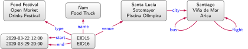
Example quotient graph simulating the data graph in Figure 2.1
There are many ways in which quotient graphs may be defined, depending not only on how nodes are partitioned, but also how the edges are defined. Different quotient graphs may provide different guarantees with respect to the structure they preserve. Formally, we can say that every quotient graph simulates its input graph (based on the simulation relation of set membership between data nodes and quotient nodes), meaning that for all \(x \in X\) with \(x\) an input node and \(X\) a quotient node, if \(x\)\(y\)\(z\) is an edge in the data graph, then there must exist an edge \(X\)\(y\)\(Z\) in the quotient graph such that \(z \in Z\); for example, the quotient graph of Figure 3.4 simulates the data graph of Figure 2.1. However, this quotient graph seems to suggest (for instance) that EID16 would have a start and end date in the data graph when this is not the case. A stronger notion of structural preservation is given by bisimilarity, which in this case would further require that if \(X\)\(y\)\(Z\) is an edge in the quotient graph, then for all \(x \in X\), there must exist a \(z \in Z\) such that \(x\)\(y\)\(z\) is in the data graph; this is not satisfied by EID16 in the quotient graph of Figure 3.4, which does not have an outgoing edge labelled start or end in the original data graph. Figure 3.5 illustrates a bisimilar version of the quotient graph, splitting the event partition into two nodes reflecting their different outgoing edges. An interesting property of bisimilarity is that it preserves forward-directed paths: given a path expression \(r\) without inverses and two bisimilar graphs, \(r\) will match a path in one graph if and only if it matches a corresponding path in the other bisimilar graph. One can verify, for example, that a path matches \(x\)city\(\cdot\)(flight|bus)*\(z\) in Figure 2.1 if and only if there is a path matching \(X\)city\(\cdot\)(flight|bus)*\(Z\) in Figure 3.5 such that \(x \in X\) and \(z \in Z\).
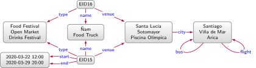
Example quotient graph bisimilar with the data graph in Figure 2.1
There are many ways in which quotient graphs may be defined, depending on the equivalence relation that partitions nodes. Furthermore, there are many ways in which other similar or bisimilar graphs can be defined, depending on the (bi)simulation relation that preserves the data graph’s structure [98]. We provide formal definitions for the notions of quotient graphs, simulation and bisimulation in Appendix B.3.3. Such techniques aim to summarise the data graph into a higher-level topology. In order to reduce the memory overhead of the quotient graph, in practice, nodes may rather be labelled with the cardinality of the partition and/or a high-level label (e.g., event, city) for the partition rather than storing the labels of all nodes in the partition.
Various other forms of emergent schema not based on a quotient graph framework have also been proposed; examples include emergent schemata based on relational tables [96], formal concept analysis [100], and so forth. Emergent schemata may be used to provide a human-understandable overview of the data graph, to aid with the definition of a semantic or validating schema, to optimise the indexing and querying of the graph, to guide the integration of data graphs, and so forth. We refer to the survey by Šejla Čebirić, et al. [98] for further details.
Emergent schemata are often based on the notion of a quotient graph.
Quotient graph
Given a directed-edge labelled graph \(G = (V,E,L)\), a graph \(\mathcal{G} = (\mathcal{V},\mathcal{E},L)\) is a quotient graph of \(G\) if and only if:
\(\mathcal{V}\) is a partition of \(V\) without the empty set, i.e., \(\mathcal{V} \subseteq (2^V - \emptyset)\), \(V = \bigcup_{U\in \mathcal{V}} U\), and for all \(U\in \mathcal{V}\), \(W\in \mathcal{V}\), it holds that \(U = W\) or \(U \cap W = \emptyset\); and
\(\mathcal{E} = \{ (U,l,W) \mid U \in \mathcal{V}, W \in \mathcal{V}\text{ and there exist } u \in U, w \in W\text{ such that }(u,l,w) \in E \} \).
Intuitively speaking, a quotient graph can merge multiple nodes into one node, where the merged node preserves the edges of its constituent nodes. For an input graph \(G = (V,E,L)\), there is an exponential number of potential quotient graphs: as many as there are partitions of the input graphs’ nodes. On one extreme, the input graph is a quotient graph of itself (turning nodes like u into singleton nodes like {u}). On the other extreme, a single node \(V\), with all input nodes, and loops \((V,l,V)\) for each edge-label \(l\) used in \(E\), the set of input edges, is also a quotient graph. Practical quotient graphs typically fall somewhere in between, where the partition \(\mathcal{V}\) of \(V\) is often defined in terms of an equivalence relation \(\sim\) on the set \(V\) such that \(\mathcal{V} \coloneqq {\sim}/V\); i.e., \(\mathcal{V}\) is defined as the quotient set of \(V\) with respect to \(\sim\); for example, we might define an equivalence relation on nodes such that \(u \sim v\) if and only if they have the same set of defined types, where \({\sim}/V\) is then a partition whose parts contain all nodes with the same types. Another way to induce a quotient graph is to define the partition in a way that preserves some of the topology of the input graph. One way to formally define this idea is through simulation and bisimulation.
Simulation
Given two directed-edge labelled graph \(G \coloneqq (V,E,L)\) and \(G' \coloneqq (G',E',L')\), let \(R \subseteq V \times V'\) be a relation between the nodes of \(G\) and \(G'\), respectively. We call \(R\) a simulation on \(G\) and \(G'\) if, for all \((v,v') \in R\), the following holds:
if \((v,p,w) \in E\) then there exists \(w'\) such that \((v',p,w') \in E'\) and \((w,w') \in R\).
If a simulation exists on \(G\) and \(G'\), we say that \(G'\) simulates \(G\), denoted \(G \rightsquigarrow G'\).
Bisimulation
If \(R\) is a simulation on \(G\) and \(G'\), we call it a bisimulation if, for all \((v,v') \in R\), the following condition holds:
if \((v'p,w') \in E'\) then there exists \(w\) such that \((v,p,w) \in E\) and \((w,w') \in R\).
If a bisimulation exists on \(G\) and \(G'\), we say that they are bisimilar, denoted \(G \approx G'\).
Bisimulation (\(\approx\)) is then an equivalence relation on graphs. By defining the (bi)simulation relation \(R\) in terms of set membership \(\in\), every quotient graph simulates its input graph, but does not necessarily bisimulate its input graph. This gives rise to the notion of bisimilar quotient graphs.
Figures 3.4 and 3.5 exemplify quotient graphs for the graph of Figure 2.1. Figure 3.4 simulates but is not bisimilar to the data graph. Figure 3.5 is bisimilar to the data graph. Often the goal will be to compute the most concise quotient graph that satisfies a given condition; for example, the nodes without outgoing edges in Figure 3.5 could be merged while preserving bisimilarity.
Identity
In Figure 2.1, we use nodes like Santiago, but to which Santiago does this node refer? Do we refer to Santiago de Chile, Santiago de Cuba, Santiago de Compostela, or do we perhaps refer to the indie rock band Santiago? Based on edges such as Santa LucíacitySantiago, we may deduce that it is one of the three cities mentioned (not the rock band), and based on the fact that the graph describes tourist attractions in Chile, we may further deduce that it refers to Santiago de Chile. Without further details, however, disambiguating nodes of this form may rely on heuristics prone to error in more difficult cases. To help avoid such ambiguity, first we may use globally-unique identifiers to avoid naming clashes when the knowledge graph is extended with external data, and second we may add external identity links to disambiguate a node with respect to an external source.
Persistent identifiers
Assume we wished to compare tourism in Chile and Cuba, and we have acquired an appropriate knowledge graph for Cuba. Part of the benefit of using graphs to model data is that we can merge two graphs by taking their union. However, as shown in Figure 3.6, using an ambiguous node like Santiago may result in a naming clash: the node is referring to two different real-world cities in both graphs, where the merged graph indicates that Santiago is a city in both Chile and Cuba (rather than two different cities).7note 7 Such a naming clash is not unique to graphs, but could also occur if merging tables, trees, etc. To avoid such clashes, long-lasting persistent identifiers (PIDs) [101] can be created in order to uniquely identify an entity. Prominent examples of PID schemes include Digital Object Identifiers (DOIs) for papers, ORCID iDs for authors, International Standard Book Numbers (ISBNs) for books, Alpha-2 codes for counties, and more besides.
Result of merging two graphs with ambiguous local identifiers
In the context of the Semantic Web, the RDF data model goes one step further and recommends that global Web identifiers be used for nodes and edge labels. However, rather than adopt the Uniform Resource Locators (URLs) used to identify the location of information resources such as webpages, RDF 1.1 proposes to use Internationalised Resource Identifiers (IRIs) to identify non-information resources such as cities or events.8note 8 Uniform Resource Identifiers (URIs) can be Uniform Resource Locators (URLs), used to locate information resources, and Uniform Resource Names (URNs), used to name non-information resources. Internationalised Resource Identifiers (IRIs) are URIs that allow Unicode. For example, http://example.com/Ñam is an IRI, but not a URI, due to the use of “Ñ”. Percentage encoding – http://example.com/%C3%91am – can encode an IRI as a URI (but reduces readability). Hence, for example, in the RDF representation of the Wikidata [37] – a knowledge graph proposed to complement Wikipedia, discussed in more detail in Section ? – while the URL https://www.wikidata.org/wiki/Q2887 refers to a webpage that can be loaded in a browser providing human-readable meta-data about Santiago, the IRI http://www.wikidata.org/entity/Q2887 refers to the city itself. Distinguishing the identifiers for both resources (the webpage and the city itself) avoids naming clashes; for example, if we use the URL to identify both the webpage and the city, we may end up with an edge in our graph, such as (with readable labels below the edge):
Such an edge leaves ambiguity: was Pedro de Valdivia the founder of the webpage, or the city? Using IRIs for entities distinct from the URLs for the webpages that describe them avoids such ambiguous cases, where Wikidata thus rather defines the previous edge as follows:
using IRIs for the city, person, and founder of, distinct from the webpages describing them. These Wikidata identifiers use the prefix http://www.wikidata.org/entity/ for entities and the prefix http://www.wikidata.org/prop/direct/ for relations. Such prefixes are known as namespaces, and are often abbreviated with prefix strings, such as wd: or wdt:, where the latter triple can then be written more concisely using such abbreviations as wd:Q2887wdt:P112wd:Q203534.
If HTTP IRIs are used to identify the graph’s entities, when the IRI is looked up (via HTTP), the web-server can return (or redirect to) a description of that entity in formats such as RDF. This further enables RDF graphs to link to related entities described in external RDF graphs over the Web, giving rise to Linked Data [102, 103] (discussed in Section ?). Though HTTP IRIs offer a flexible and powerful mechanism for issuing global identifiers on the Web, they are not necessarily persistent: websites may go offline, the resources described at a given location may change, etc. In order to enhance the persistence of such identifiers, Persistent URL (PURL) services offer redirects from a central server to a particular location, where the PURL can be redirected to a new location if necessary, changing the address of a document without changing its identifier. The persistence of HTTP IRIs can then be improved by using namespaces defined through PURL services.
External identity links
Assume that the tourist board opts to define the chile: namespace with an IRI such as http://turismo.cl/entity/ on a web-server that they control, allowing nodes such as chile:Santiago – a shortcut for the IRI http://turismo.cl/entity/Santiago – to be looked up over the Web. While using such a naming scheme helps to avoid naming clashes, the use of IRIs does not necessarily help ground the identity of a resource. For example, an external geographic knowledge graph may assign the same city the IRI geo:SantiagoDeChile in their own namespace, where we have no direct way of knowing that the two identifiers refer to the same city. If we merge the two knowledge graphs, we will end up with two distinct nodes for the same city.
There are a number of ways to ground the identity of an entity. The first is to associate the entity with uniquely-identifying information in the graph, such as its geo-coordinates, its postal code, the year it was founded, etc. Each additional piece of information removes ambiguity as to which city is being referred, providing (for example) more options for matching the city with its analogue in external sources. A second option is to use identity links to state that a local entity has the same identity as another coreferent entity found in an external source; an instantiation of this concept can be found in the OWL standard, which defines the owl:sameAs property relating coreferent entities. Using this property, we could state the edge chile:Santiagoowl:sameAsgeo:SantiagoDeChile in our RDF graph, thus establishing an identity link between the corresponding nodes in both graphs. The semantics of owl:sameAs defined by the OWL standard then allow us to combine the data for both nodes. Such semantics will be discussed later in Section ?. Ways in which identity links can be computed will also be discussed later in Section ?.
Datatypes
Consider the two date-times on the left of Figure 2.1: how should we assign these nodes persistent/global identifiers? Intuitively it would not make sense, for example, to assign IRIs to these nodes since their syntactic form tells us what they refer to: specific dates and times in March 2020. This syntactic form is further recognisable by machine, meaning that with appropriate software, we could order such values in ascending or descending order, extract the year, etc.
Most practical data models for graphs allow for defining nodes that are datatype values. RDF utilises XML Schema Datatypes (XSD) [104], amongst others, where a datatype node is given as a pair \((l,d)\) where \(l\) is a lexical string, such as "2020-03-29T20:00:00", and \(d\) is an IRI denoting the datatype, such as xsd:dateTime. The node is then denoted "2020-03-29T20:00:00"^^xsd:dateTime. Datatype nodes in RDF are called literals and are not allowed to have outgoing edges. Other datatypes commonly used in RDF data include xsd:string, xsd:integer, xsd:decimal, xsd:boolean, etc. In case that the datatype is omitted, the value is assumed to be of type xsd:string. Applications built on top of RDF can then recognise these datatypes, parse them into datatype objects, and apply equality checks, normalisation, ordering, transformations, casting, according to their standard definition. In the context of property graphs, Neo4j [67] also defines a set of internal datatypes on property values that includes numbers, strings, booleans, spatial points, and temporal values.
Lexicalisation
Global identifiers for entities will sometimes have a human-interpretable form, such as chile:Santiago, but the identifier strings themselves do not carry any formal semantic significance. In other cases, the identifiers used may not be human-interpretable by design. In Wikidata, for instance, Santiago de Chile is identified as wd:Q2887, where such a scheme has the advantage of providing better persistence and of not being biased to a particular human language. For example, the Wikidata identifier for Eswatini (wd:Q1050) was not affected when the country changed its name from Swaziland, and does not necessitate choosing between languages for creating (more readable) IRIs such as wd:Eswatini (English), wd:eSwatini (Swazi), wd:Esuatini (Spanish), etc.
Since identifiers can be arbitrary, it is common to add edges that provide a human-interpretable label for nodes, such as wd:Q2887rdfs:label“Santiago”, indicating how people may refer to the subject node linguistically. Linguistic information of this form plays an important role in grounding knowledge such that users can more clearly identify which real-world entity a particular node in a knowledge graph actually references [105]; it further permits cross-referencing entity labels with text corpora to find, for example, documents that potentially speak of a given entity [106]. Labels can be complemented with aliases (e.g., wd:Q2887skos:altLabel“Santiago de Chile”) or comments (e.g. wd:Q2887rdfs:comment“Santiago is the capital of Chile”) to further help ground the node’s identity.
Nodes such as “Santiago” denote string literals, rather than an identifier. Depending on the specific graph model, such literal nodes may also be defined as a pair \((s,l)\), where \(s\) denotes the string and \(l\) a language code; in RDF, for example we may state chile:Cityrdfs:label"City"@en, chile:Cityrdfs:label"Ciudad"@es, etc., indicating labels for the node in different languages. In other models, the pertinent language can rather be specified, e.g., via metadata on the edge. Knowledge graphs with human-interpretable labels, aliases, comments, etc., (in various languages) are sometimes called (multilingual) lexicalised knowledge graphs [33]".
Existential nodes
When modelling incomplete information, we may in some cases know that there must exist a particular node in the graph with particular relationships to other nodes, but without being able to identify the node in question. For example, we may have two co-located events chile:EID42 and chile:EID43 whose venue has yet to be announced. One option is to simply omit the venue edges, in which case we lose the information that these events have a venue and that both events have the same venue. Another option might be to create a fresh IRI representing the venue, but semantically this becomes indistinguishable from there being a known venue. Hence some graph models permit the use of existential nodes, represented here as a blank circle:
chile:EID42chile:venuechile:venuechile:EID43
These edges denote that there exists a common venue for chile:EID42 and chile:EID42 without identifying it. Existential nodes are supported in RDF as blank nodes [60], which are also commonly used to support modelling complex elements in graphs, such as RDF lists [60, 107]. Figure 3.7 exemplifies an RDF list, which uses blank nodes in a linked-list structure to encode order. Though existential nodes can be convenient, their presence can complicate operations on graphs, such as deciding if two data graphs have the same structure modulo existential nodes [60, 108]. Hence methods for skolemising existential nodes in graphs – replacing them with canonical labels – have been proposed [109, 108]. Other authors rather call to minimise the use of such nodes in graph data [103].
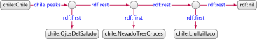
RDF list representing the three largest peaks of Chile, in order
Context
Many (arguably all) facts presented in the data graph of Figure 2.1 can be considered true with respect to a certain context. With respect to temporal context, Santiago has only existed as a city since 1541, flights from Arica to Santiago began in 1956, etc. With respect to geographic context, the graph describes events in Chile. With respect to provenance, data relating to EID15 were taken from – and are thus said to be true with respect to – the Ñam webpage on January 4th, 2020. Other forms of context may also be used. We may further combine contexts, such as to indicate that Arica is a Chilean city (geographic) since 1883 (temporal) according to the Treaty of Ancón (provenance).
By context we herein refer to the scope of truth, and thus talk about the context in which some data are held to be true [110, 111]. The graph of Figure 2.1 leaves much of its context implicit. However, making context explicit can allow for interpreting the data from different perspectives, such as to understand what held true in 2016, what holds true excluding webpages later found to have spurious data, etc. As seen in the previous examples, context for graph data may be considered at different levels: on individual nodes, individual edges, or sets of edges (sub-graphs). We now discuss various representations by which context can be made explicit at different levels.
Direct representation
The first way to represent context is to consider it as data no different from other data. For example, the dates for the event EID15 in Figure 2.1 can be seen as representing a form of temporal context, indicating the temporal scope within which edges such as EID15venueSanta Lucía are held true. Another option is to change a relation represented as an edge, such as SantiagoflightArica, into a node, such as seen in Figure 2.3, allowing to assign additional context to the relation. While in these examples context is represented in an ad hoc manner, a number of specifications have been proposed to represent context as data in a more standard way. One example is the Time Ontology [112], which specifies how temporal entities, intervals, time instants, etc. – and relations between them such as before, overlaps, etc. – can be described in RDF graphs in an interoperable manner. Another example is the PROV Data Model [113], which specifies how provenance can be described in RDF graphs, where entities (e.g., graphs, nodes, physical document) are derived from other entities, are generated and/or used by activities (e.g., extraction, authorship), and are attributed to agents (e.g., people, software, organisations).
Reification
Often we may wish to directly define the context of edges themselves; for example, we may wish to state that the edge SantiagoflightArica is valid from 1956. While we could use the pattern of turning the edge into a node – as illustrated in Figure 2.3 – to directly represent such context, another option is to use reification, which allows for making statements about statements in a generic manner (or in the case of a graph, for defining edges about edges). In Figure 3.8 we present three forms of reification that can be used for modelling temporal context on the aforementioned edge within a directed edge-labelled graph [68]. We use \(e\) to denote an arbitrary identifier representing the edge itself to which the contextual information can be associated. Unlike in a direct representation, \(e\) represents an edge, not a flight. RDF reification [60] (Figure 3.8a) defines a new node \(e\) to represent the edge and connects it to the source node (via subject), target node (via object), and edge label (via predicate) of the edge. In contrast, \(n\)-ary relations [60] (Figure 3.8b) connect the source node of the edge directly to the edge node \(e\) with the label of the edge; the target node of the edge is then connected to \(e\) (via value). Finally, singleton properties [114] (Figure 3.8c) rather use \(e\) as an edge label, connecting it to a node indicating the original edge label (via singleton). Other forms of reification have been proposed in the literature, including, for example, NdFluents [115]. In general, a reified edge does not assert the edge it reifies; for example, we may reify an edge to state that it is no longer valid. We refer to the work of Daniel Hernández, et al. [68] for further comparison of reification alternatives and their relative strengths and weaknesses.
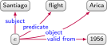
RDF Reification
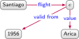
\(n\)-ary Relations
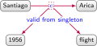
Singleton propertiesThree representations of temporal context on an edge in a directed-edge labelled graph
Higher-arity representation
As an alternative to reification, we can rather use higher-arity representations for modelling context. Taking again the edge SantiagoflightArica, Figure 3.9 illustrates three higher-arity representations of temporal context. First, we can use a named graph (Figure 3.9a) to contain the edge and then define the temporal context on the graph name. Second, we can use a property graph (Figure 3.9b) where the temporal context is defined as an attribute on the edge. Third, we can use RDF* [116] (Figure 3.9c): an extension of RDF that allows edges to be defined as nodes. Amongst these options, the most flexible is the named graph representation, where we can assign context to multiple edges at once by placing them in one named graph; for example, we can add more edges to the named graph of Figure 3.9a that are also valid from 1956. The least flexible option is RDF*, which, in the absence of an edge id, does not permit different groups of contextual values to be assigned to an edge; for example, considering the edge ChilepresidentM. Bachelet, if we add four contextual values to this edge to state that it was valid from 2006 until 2010 and valid from 2014 until 2018, we cannot pair the values, but may rather have to create a node to represent different presidencies (in the other models, we could have used two named graphs or edge ids).
Named graph
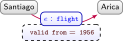
Property graph
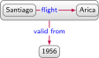
RDF*Three higher-arity representations of temporal context on an edge
Annotations
Thus far we have discussed representing context in a graph, but we have not spoken about automated mechanisms for reasoning about context; for example, if there are only seasonal summer flights from Santiago to Arica, we may wish to find other routes from Santiago for winter events taking place in Arica. While the dates for buses, flights, etc., can be represented directly in the graph, or using reification, writing a query to manually intersect the corresponding temporal contexts will be tedious – or may not even be possible at all. Another alternative is to consider annotations that provide mathematical definitions of a contextual domain and key operations possible within that domain that can then be applied automatically.
Some annotations model a particular contextual domain; for example, Temporal RDF [117] allows for annotating edges with time intervals, such as Chilepresident [2006,2010]M. Bachelet, while Fuzzy RDF [118] allows for annotating edges with a degree of truth such as Santiagoclimate 0.8Semi-Arid, indicating that it is more-or-less true – with a degree of \(0.8\) – that Santiago has a semi-arid climate.
Other forms of annotation are domain-independent; for example, Annotated RDF [70, 119, 72] allows for representing various forms of context modelled as semi-rings: algebraic structures consisting of domain values (e.g., temporal intervals, fuzzy values, etc.) and two main operators to combine domain values: meet and join.9note 9 The join operator for annotations is different from the join operator for relational algebra. We provide an example in Figure 3.10, where \(G\) is annotated with values from a simplified temporal domain consisting of sets of integers (\(1{-}365\) representing days of the year. For brevity we use an interval notation, where, for example, \(\{[150,152]\}\) indicates the set \(\{150,151,152\}\). Query \(Q\) then asks for flights from Santiago to cities with events; this query will check and return an annotation reflecting the temporal validity of each answer. To derive these answers, we first require applying a conjunction of annotations on compatible flight and city edges, applying the meet operator to compute the annotation for which both edges hold. The natural way to define meet in our scenario is as the intersection of sets of days, where, for example, applying meet on the event annotation \(\color{blue}\{[150,152]\}\) and the flight annotation \(\color{blue}\{[1,120],[220,365]\}\) for Punta Arenas leads to the empty time interval \(\color{blue}\{\}\), which may thus lead to the city being filtered from the results (depending on the query evaluation semantics). However, for Arica, we find two different non-empty intersections: \(\color{blue}\{[123,125]\}\) for EID16 and \(\color{blue}\{[276,279]\}\) for EID17. Given that we are interested in the city (a projected variable), rather than the event, we can thus combine these two annotations for Arica using the join operator, returning the annotation in which either result holds true. In our scenario, the natural way to define join is as the union of the sets of days, giving \(\color{blue}\{[123,125],[276,279]\}\).
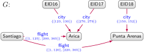
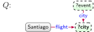
\(Q(G) :\)
?city
context
Arica
\(\color{blue}\{[123,125],[276,279]\}\)
Example query on a temporally annotated graph
We define an annotation domain per Antoine Zimmermann, et al. [72].
Annotation domain
Let \(A\) be a set of annotation values. An annotation domain is defined as an idempotent, commutative semi-ring \(D = \langle A,\oplus,\otimes,\bot,\top \rangle\).
This definition can be used to instantiate specific domains of context.
Letting \(D\) be a semi-ring imposes that, for any values \(a, a_1, a_2, a_3\) in \(A\), the following hold:
The requirement that it be a commutative semi-ring imposes the following constraint:
\((a_1 \otimes a_2) = (a_2 \otimes a_1)\)
Finally, the requirement that it be an idempotent semi-ring imposes the following constraint:
\((a \oplus a) = a\)
Idempotence induces a partial order: \(a_1 \leq a_2\) if and only if \(a_1 \oplus a_2 = a_2\). Imposing these conditions on the annotation domain allow for reasoning and querying to be conducted over the annotation domain in a well-defined manner. Annotated graphs can then be defined in the natural way:
Annotated directed-edge labelled graph
Letting \(D = \langle A,\oplus,\otimes,\bot,\top \rangle\) denote an idempotent, commutative semi-ring, we define an annotated directed-edge labelled graph \(G \coloneqq (V,E_A,L)\) where \(V \subset \con\) is a finite set of nodes, \(L \subset \con\) is a finite set of edge labels, and \(E \subseteq V \times L \times V \times A\) is a finite set of edges annotated with values from \(A\).
Figure 3.10 exemplifies query answering on a graph annotated with days of the year. Formally this domain can be defined as follows: \(L \coloneqq 2^{\mathbb{N}_{[1,365]}}\), \(\oplus \coloneqq \cup\), \(\otimes \coloneqq \cap\), \(\top \coloneqq \mathbb{N}_{[1,365]}\), \(\bot \coloneqq \emptyset\), where one may verify that \(D = \langle 2^{\mathbb{N}_{[1,365]}}, \cup, \cap, \mathbb{N}_{[1,365]}, \emptyset \rangle\) is indeed an idempotent, commutative semi-ring.
Other contextual frameworks
Other frameworks have been proposed for modelling and reasoning about context in graphs. A notable example is that of contextual knowledge repositories [120], which allow for assigning individual (sub-)graphs to their own context. Unlike in the case of named graphs, context is explicitly modelled along one or more dimensions, where each (sub-)graph must take a value for each dimension. Each dimension is further associated with a partial order over its values – e.g., 2020-03-22 \(\preceq\) 2020-03 \(\preceq\) 2020 – allowing to select and combine sub-graphs that are valid within contexts at different levels of granularity. Christoph Schuetz, et al. [121] similarly propose a form of contextual OnLine Analytic Processing (OLAP), based on a data cube formed by dimensions where individual cells contain knowledge graphs. Operations such as “slice-and-dice” (selecting knowledge according to given dimensions), as well as “roll-up” (aggregating knowledge at a higher level) can then be supported. We refer the reader to the respective papers for more details [120, 121].
Deductive Knowledge
As humans, we can deduce more from the data graph of Figure 2.1 than what the edges explicitly indicate. We may deduce, for example, that the Ñam festival (EID15) will be located in Santiago, even though the graph does not contain an edge EID15locationSantiago. We may further deduce that the cities connected by flights must have some airport nearby, even though the graph does not contain nodes referring to these airports. In these cases, given the data as premises, and some general rules about the world that we may know a priori, we can use a deductive process to derive new data, allowing us to know more than what is explicitly given by the data. These types of general premises and rules, when shared by many people, form part of “commonsense knowledge” [122]; conversely, when rather shared by a few experts in an area, they form part of “domain knowledge”, where, for example, an expert in biology may know that hemocyanin is a protein containing copper that carries oxygen in the blood of some species of Mollusca and Arthropoda.
Machines, in contrast, do not have a priori access to such deductive faculties; rather they need to be given formal instructions, in terms of premises and entailment regimes, in order to make similar deductions to what a human can make. These entailment regimes formalise the conclusions that logically follow as a consequence of a given set of premises. Once instructed in this manner, machines can (often) apply deductions with a precision, efficiency, and scale beyond human performance. These deductions may serve a range of applications, such as improving query answering, (deductive) classification, finding inconsistencies, etc. As a concrete example involving query answering, assume we are interested in knowing the festivals located in Santiago; we may straightforwardly express such a query as per the graph pattern shown in Figure 4.1. This query returns no results for the graph in Figure 2.1: there is no node named Festival, and nothing has (directly) the locationSantiago. However, an answer (Ñam) could be automatically entailed were we to state that \(x\) being a Food Festival entails that \(x\) is a Festival, or that \(x\) having venue \(y\) in city \(z\) entails that \(x\) has location \(z\). How, then, should such entailments be captured? In Section 3.1.1 we already discussed how the former entailment can be captured with sub-class relations in a semantic schema; the second entailment, however, requires a more expressive entailment regime than seen thus far.
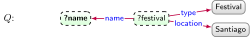
Graph pattern querying for names of festivals in Santiago
In this section, we discuss ways in which more complex entailments can be expressed and automated. Though we could leverage a number of logical frameworks for these purposes – such as First-Order Logic, Datalog, Prolog, Answer Set Programming, etc. – we focus on ontologies, which constitute a formal representation of knowledge that, importantly for us, can be represented as a graph. We then discuss how these ontologies can be formally defined, how they relate to existing logical frameworks, and how reasoning can be conducted with respect to such ontologies.
Ontologies
To enable entailment, we must be precise about what the terms we use mean. Returning to Figure 2.1, for example, and examining the node EID16 more closely, we may begin to question how it is modelled, particularly in comparison with EID15. Both nodes – according to the class hierarchy of Figure 3.1 – are considered to be events. But what if, for example, we wish to define two pairs of start and end dates for EID16 corresponding to the different venues? Should we rather consider what takes place in each venue as a different event? What then if an event has various start and end dates in a single venue: would these also be considered as one (recurring) event, or many events? These questions are facets of a more general question: what precisely do we mean by an “event”? Does it happen in one contiguous time interval or can it happen many times? Does it happen in one place or can it happen in multiple? There are no “correct” answers to such questions – we may understand the term “event” in a variety of ways, and thus the answers are a matter of convention.
In the context of computing, an ontology10note 10 The term stems from the philosophical study of ontology, concerned with the different kinds of entities that exist, the nature of their existence, what kinds of properties they have, and how they may be identified and categorised. is then a concrete, formal representation of what terms mean within the scope in which they are used (e.g., a given domain). For example, one event ontology may formally define that if an entity is an “event”, then it has precisely one venue and precisely one time instant in which it begins. Conversely, a different event ontology may define that an “event” can have multiple venues and multiple start times, etc. Each such ontology formally captures a particular perspective – a particular convention. Under the first ontology, for example, we could not call the Olympics an “event”, while under the second ontology we could. Likewise ontologies can guide how graph data are modelled. Under the first ontology we may split EID16 into two events. Under the second, we may elect to keep EID16 as one event with two venues. Ultimately, given that ontologies are formal representations, they can be used to automate entailment.
Like all conventions, the usefulness of an ontology depends on the level of agreement on what that ontology defines, how detailed it is, and how broadly and consistently it is adopted. Adoption of an ontology by the parties involved in one knowledge graph may lead to a consistent use of terms and consistent modelling in that knowledge graph. Agreement over multiple knowledge graphs will, in turn, enhance the interoperability of those knowledge graphs.
Amongst the most popular ontology languages used in practice are the Web Ontology Language (OWL) [24]11note 11 We could include RDF Schema (RDFS) in this list, but it is largely subsumed by OWL, which builds upon its core., recommended by the W3C and compatible with RDF graphs; and the Open Biomedical Ontologies Format (OBOF) [26], used mostly in the biomedical domain. Since OWL is the more widely adopted, we focus on its features, though many similar features are found in both [26]. Before introducing such features, however, we must discuss how graphs are to be interpreted.
Interpretations
We as humans may interpret the node Santiago in the data graph of Figure 2.1 as referring to the real-world city that is the capital of Chile. We may further interpret an edge AricaflightSantiago as stating that there are flights from the city of Arica to this city. We thus interpret the data graph as another graph – what we here call the domain graph – composed of real-world entities connected by real-world relations. The process of interpretation, here, involves mapping the nodes and edges in the data graph to nodes and edges of the domain graph.
Along these lines, we can abstractly define an interpretation of a data graph as being composed of two elements: a domain graph, and a mapping from the terms (nodes and edge-labels) of the data graph to those of the domain graph. The domain graph follows the same model as the data graph; for example, if the data graph is a directed edge-labelled graph, then so too will be the domain graph. For simplicity, we will speak of directed edge-labelled graphs and refer to the nodes of the domain graph as entities, and the edges of the domain graph as relations. Given a data graph and an interpretation, while we denote nodes in the data graph by Santiago, we will denote the entity it refers to in the domain graph by Santiago (per the mapping of the given interpretation). Likewise, while we denote an edge by AricaflightSantiago, we will denote the relation by AricaflightSantiago (again, per the mapping of the given interpretation). In this abstract notion of an interpretation, we do not require that Santiago nor Arica be the real-world cities, nor even that the domain graph contain real-world entities and relations: an interpretation can have any domain graph and mapping.
Why is such an abstract notion of interpretation useful? The distinction between nodes/edges and entities/relations becomes important when we define the meaning of ontology features and entailment. To illustrate this distinction, if we ask whether there is an edge labelled flight between Arica and Viña del Mar for the data graph in Figure 2.1, the answer is no. However, if we ask if the entities Arica and Viña del Mar are connected by the relation flight, then the answer depends on what assumptions we make when interpreting the graph. Under the Closed World Assumption (CWA), if we do not have additional knowledge, then the answer is a definite no – since what is not known is assumed to be false. Conversely, under the Open World Assumption (OWA), we cannot be certain that this relation does not exist as this could be part of some knowledge not (yet) described by the graph. Likewise under the Unique Name Assumption (UNA), the data graph describes at least two flights to Santiago (since Viña del Mar and Arica are assumed to be different entities and therefore, AricaflightSantiago and Viña del MarflightSantiago must be different edges). Conversely, under No Unique Name Assumption (NUNA), we can only say that there is at least one such flight since Viña del Mar and Arica may be the same entity with two “names”.
These assumptions (or lack thereof) define which interpretations are valid, and which interpretations satisfy which data graphs. The UNA forbids interpretations that map two data terms to the same domain term. The NUNA allows such interpretations. Under CWA, an interpretation that contains an edge xpy in its domain graph can only satisfy a data graph from which we can entail xpy. Under OWA, an interpretation containing the edge xpy can satisfy a data graph not entailing xpy so long it does not contradict that edge.12note 12 Variations of the CWA can provide a middle ground between a completely open world that makes no assumption about completeness, falsehood of unknown statements, or unicity of names. One example of such variation is Local Closed World Assumption, already mentioned in Section 3.1.1. In the case of OWL, the NUNA and OWA are adopted, thus representing the most general case, whereby multiple nodes/edge-labels in the graph may refer to the same entity/relation-type (NUNA), and where anything not entailed by the data graph is not assumed to be false as a consequence (OWA).
Beyond our base assumptions, we can associate certain patterns in the data graph with semantic conditions that define which interpretations satisfy it; for example, we can add a semantic condition to enforce that if our data graph contains the edge psubp. ofq, then any edge xpy in the domain graph of the interpretation must also have a corresponding edge xqy to satisfy the data graph. These semantic conditions then form the features of an ontology language. In what follows, to aid readability, we will introduce the features of OWL using an abstract graphical notation with abbreviated terms. For details of concrete syntaxes, we rather refer to the OWL and OBOF standards [24, 26]. Likewise we present semantic conditions for interpretations associated with each feature in the same graphical format;13note 13 We use “iff” as an abbreviation for “if and only if” whereby “\(\phi\) iff \(\psi\)” can be read as “if \(\phi\) then \(\psi\)” and “if \(\psi\) then \(\phi\)”. further details of these conditions will be described later in Section 4.2, with formal definitions rather provided in Appendix B.5.
A graph interpretation – or simply interpretation – captures the assumptions under which the semantics of a graph can be defined. We define interpretations for directed edge-labelled graphs, though the notion extends naturally to other graph models.
Graph interpretation
A (graph) interpretation \(I\) is defined as a pair \(I \coloneqq (\Gamma,\inp{\cdot})\) where \(\Gamma = (V_\Gamma,E_\Gamma,L_\Gamma)\) is a (directed edge-labelled) graph called the domain graph and \(\inp{\cdot} : \con \rightarrow V_\Gamma \cup L_\Gamma\) is a partial mapping from constants to terms in the domain graph.
We denote the domain of the mapping \(\inp{\cdot}\) by \(\textrm{dom}(\inp{\cdot})\). For interpretations under the UNA, the mapping \(\inp{\cdot}\) is required to be injective, while with no UNA (NUNA), no such requirement is necessary. Interpretations that satisfy a graph are then said to be models of that graph. We first define this notion for a base case that ignores ontological features.
Graph models
Let \(G \coloneqq (V,E,L)\) be a directed edge-labelled graph. An interpretation \(I \coloneqq (\Gamma,\inp{\cdot})\) satisfies \(G\) if and only if the following hold:
\(V \cup L \subseteq \textrm{dom}(\inp{\cdot})\);
for all \(v \in V\), it holds that \(\inp{v} \in V_\Gamma\);
for all \(l \in L\), it holds that \(\inp{l} \in L_\Gamma\); and
for all \((u,l,v) \in E\), it holds that \((\inp{u},\inp{l},\inp{v}) \in E_\Gamma\).
If \(I\) satisfies \(G\) we call \(I\) a (graph) model of \(G\).
Next we define models under semantics conditions (e.g., of ontology features).
Semantic condition
Let \(2^G\) denote the set of all (directed edge-labelled) graphs. A semantic condition is a mapping \(\phi : 2^{G} \rightarrow \{ \text{true}, \text{false} \}\). An interpretation \(I \coloneqq (\Gamma,\inp{\cdot})\) is a model of \(G\) under \(\phi\) if and only if \(I\) is a model of \(G\) and \(\phi(\Gamma)\). Given a set of semantic conditions \(\Phi\), we say that \(I\) is a model of \(G\) if and only if \(I\) is a model of \(G\) and for all \(\phi \in \Phi\), \(\phi(\Gamma)\) is true.
We do not restrict the language used to define semantic conditions, but, for example, we can define the Has Value semantic condition of Table 4.3 in FOL as follows:
\(\forall c, p, y \Big( \big( \Gamma(c,\)prop\(,p) \wedge \Gamma(c,\)value\(,y) \big) \leftrightarrow \forall x \big( \Gamma(x,\)type\(,c) \leftrightarrow \Gamma(x,p,y) \big) \Big)\)
Here we overload \(\Gamma\) as a ternary predicate to capture the edges of \(\Gamma\). The above FOL formula defines an if-and-only-if version of the semantic condition for Has Value. The other semantic conditions enumerated in Tables 4.1–4.3 can be defined in a similar way [123].14note 14 Note that although these tables consider axioms originating in the data graph, it suffices to check their image in the domain graph since \(I\) only satisfies \(G\) if the edges of \(G\) defining the axioms are reflected in \(I\).
Individuals
In Table 4.1, we list the main features supported by OWL for describing individuals (e.g., Santiago, EID16), sometimes distinguished from classes and properties. First, we can assert (binary) relations between individuals using edges such as Santa LucíacitySantiago. In the condition column, when we write \(x\)\(y\)\(z\), for example, we refer to the condition that the given relation holds in the interpretation; if so, the interpretation satisfies the axiom. OWL further allows for defining relations to explicitly state that two terms refer to the same entity, where, e.g., Región Vsame asRegión de Valparaíso states that both refer to the same region (per Section 3.2); or that two terms refer to different entities, where, e.g., Valparaísodiff. fromRegión de Valparaíso distinguishes the city from the region of the same name. We may also state that a relation does not hold using negation, which can be serialised as a graph using a form of reification (see Figure 3.8a).
Ontology features for individuals
Feature
Axiom
Condition
Example
Assertion
\(x\)\(y\)\(z\)
\(x\)\(y\)\(z\)
CitycapitalSantiago
Negation
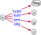
not \(x\)\(y\)\(z\)
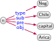
Same As
\(x_1\)same as\(x_2\)
\(x_1\) = \(x_2\)
Región Vsame asRegión de Valparaíso
Different From
\(x_1\)diff. from\(x_2\)
\(x_1\) ≠ \(x_2\)
Valparaísodiff. fromRegión de Valparaíso
Properties
In Section 3.1.1, we already discussed how subproperties, domains and ranges may be defined for properties. OWL allows such definitions, and further includes other features, as listed in Table 4.2. We may define a pair of properties to be equivalent, inverses, or disjoint. We can further define a particular property to denote a transitive, symmetric, asymmetric, reflexive, or irreflexive relation. We can also define the multiplicity of the relation denoted by properties, based on being functional (many-to-one) or inverse-functional (one-to-many). We may further define a key for a class, denoting the set of properties whose values uniquely identify the entities of that class. Without adopting a Unique Name Assumption (UNA), from these latter three features we may conclude that two or more terms refer to the same entity. Finally, we can relate a property to a chain (a path expression only allowing concatenation of properties) such that pairs of entities related by the chain are also related by the given property. Note that for the latter two features in Table 4.2 we require representing a list, denoted with a vertical notation ⋮; while such a list may be serialised as a graph in a number of concrete ways, OWL uses RDF lists (see Figure 3.7).
In Section 3.1.1, we discussed how class hierarchies can be modelled using a sub-class relation. OWL supports sub-classes, and many additional features, for defining and making claims about classes; these additional features are summarised in Table 4.3. Given a pair of classes, OWL allows for defining that they are equivalent, or disjoint. Thereafter, OWL provides a variety of features for defining novel classes by applying set operators on other classes, or based on conditions that the properties of its instances satisfy. First, using set operators, one can define a novel class as the complement of another class, the union or intersection of a list (of arbitrary length) of other classes, or as an enumeration of all of its instances. Second, by placing restrictions on a particular property \(p\), one can define classes whose instances are all of the entities that have: some value from a given class on \(p\); all values from a given class on \(p\);15note 15 While something like flightpropDomesticAirportallNationalFlight might appear to be a more natural example for All Values, this would be a modelling mistake, as the corresponding for all condition is satisfied when no such node exists. In other words, with this example definition, we could infer anything known not to have any flights to be a domestic airport. (We could, however, define the intersection of this class and airport as being a domestic airport.) have a specific individual as a value on \(p\) (has value); have themselves as a reflexive value on \(p\) (has self); have at least, at most or exactly some number of values on \(p\) (cardinality); and have at least, at most or exactly some number of values on \(p\) from a given class (qualified cardinality). For the latter two cases, in Table 4.3, we use the notation “\(\#\{\)a\(\mid \phi \}\)” to count distinct entities satisfying \(\phi\) in the interpretation. These features can then be combined to create more complex classes, where combining the examples for Intersection and Has Self in Table 4.3 gives the definition: self-driving taxis are taxis having themselves as a driver.
Ontology features for class axioms and definitions
Feature
Axiom
Condition (for all \(x_*\), \(y_*\), \(z_*\))
Example
Subclass
\(c\)subc. of\(d\)
\(x\)type\(c\) implies \(x\)type\(d\)
Citysubc. ofPlace
Equivalence
\(c\)equiv. c.\(d\)
\(x\)type\(c\) iff \(x\)type\(d\)
Humansuc. ofPerson
Disjoint
\(c\)disj. c.\(d\)
not \(c\)type\(x\)type\(d\)
Citydisj. c.Region
Complement
\(c\)comp.\(d\)
\(x\)type\(c\) iff not \(x\)type\(d\)
Deadcom.Alive
Union
\(c\)union\(d_1\) ⋮ \(d_n\)
\(x\)type\(c\) iff
\(x\)type\(d_1\) or \(x\)type… or \(x\)type\(d_n\)
OWL supports other language features not previously discussed, including: annotation properties, which provide metadata about ontologies, such as versioning info; datatype vs. object properties, which distinguish properties that take datatype values from those that do not; and datatype facets, which allow for defining new datatypes by applying restrictions to existing datatypes, such as to define that places in Chile must have a float between \(-66.0\) and \(-110.0\) as their value for the (datatype) property latitude. For more details we refer to the OWL 2 standard [24]. We will further discuss methodologies for the creation of ontologies in Section 6.5.
Semantics and Entailment
The conditions listed in the previous tables indicate how each feature should be interpreted. These conditions give rise to entailments, where, for example, in reference to the Symmetric feature of Table 4.2, the definition nearbytypeSymmetric and edge SantiagonearbySantiago Airport entail the edge Santiago AirportnearbySantiago according to the condition given for that feature. We now describe how these conditions lead to entailments.
Model-theoretic semantics
Each axiom described by the previous tables, when added to a graph, enforces some condition(s) on the interpretations that satisfy the graph. The interpretations that satisfy a graph are called models of the graph. Were we to consider only the base condition of the Assertion feature in Table 4.1, for example, then the models of a graph would be any interpretation such that for every edge xyz in the graph, there exists a relation xyz in the model. Given that there may be other relations in the model (under the OWA), the number of models of any such graph is infinite. Furthermore, given that we can map multiple nodes in the graph to one entity in the model (under the NUNA), any interpretation with (for example) the relation aaa is a model of any graph so long as for every edge xyz in the graph, it holds that x = y = z = a in the interpretation (in other words, the interpretation maps everything to a). As we add axioms with their associated conditions to the graph, we restrict models for the graph; for example, considering a graph with two edges – xyz and ytypeIrreflexive – the interpretation with aaa, x = y = … = a is no longer a model as it breaks the condition for the irreflexive axiom.
Entailment
We say that one graph entails another if and only if any model of the former graph is also a model of the latter graph. Intuitively this means that the latter graph says nothing new over the former graph and thus holds as a logical consequence of the former graph. For example, consider the graph SantiagotypeCitysubc. ofPlace and the graph SantiagotypePlace. All models of the latter must have that SantiagotypePlace, but so must all models of the former, which must have SantiagotypeCitysubc. ofPlace and further must satisfy the condition for Subclass, which requires that SantiagotypePlace also hold. Hence we conclude that any model of the former graph must be a model of the latter graph, or, in other words, the former graph entails the latter graph.
We now formally define entailment under semantic conditions.
Graph entailment
Letting \(G_1\) and \(G_2\) denote two (directed edge-labelled) graphs, and \(\Phi\) a set of semantic conditions, we say that \(G_1\) entails \(G_2\) under \(\Phi\) – denoted \(G_1 \models_\Phi G_2\) – if and only if any model of \(G_2\) under \(\Phi\) is also a model of \(G_1\) under \(\Phi\).
An example of entailment is discussed in Section 4.2. Note that in a slight abuse of notation, we may simply write \(G \models_\Phi (s,p,o)\) to denote that \(G\) entails the edge \((s,p,o)\) under \(\Phi\).
Under OWA, entailment is as defined as given in Definition 29. Under CWA, we make the additional assumption that if \(G \not\models_\Phi e\), where \(e\) is an edge (strictly speaking, a positive edge), then \(G \models_\Phi \neg e\); in other words, under CWA we assume that any (positive) edges that \(G\) does not entail under \(\Phi\) can be assumed false according to \(G\) and \(\Phi\).16note 16 In FOL, the CWA only applies to positive facts, whereas edges in a graph can be used to represent other FOL formulae. If one wished to maintain FOL-compatibility under CWA, additional restrictions on the types of edge \(e\) may be needed.
If–then vs. if-and-only-if semantics
Consider the graph nearbytypeSymmetric and the graph nearbyinv. ofnearby. They result in the same semantic conditions being applied in the domain graph, but does one entail the other? The answer depends on the semantics applied. Considering the axioms and conditions of Tables 4.1, we can consider two semantics. Under if–then semantics – ifAxiom matches data graph thenCondition holds in domain graph – the graphs do not entail each other: though both graphs give rise to the same condition, this condition is not translated back into the axioms that describe it.17note 17 Observe that nearbytypeSymmetric is a model of the first graph but not the second, while nearbyinv. ofnearby is a model of the second graph but not the first. Hence neither graph entails the other. Conversely, under if-and-only-if semantics – Axiom matches data graph if-and-only-ifCondition holds in domain graph – the graphs entail each other: both graphs give rise to the same condition, which is translated back into all possible axioms that describe it. Hence if-and-only-if semantics allows for entailing more axioms in the ontology language than if–then semantics. OWL generally applies an if-and-only-if semantics [24].
Reasoning
Unfortunately, given two graphs, deciding if the first entails the second – per the notion of entailment we have defined and for all of the ontological features listed in Tables 4.1–4.3 – is undecidable: no (finite) algorithm for such entailment can exist that halts on all inputs with the correct true/false answer [124]. However, we can provide practical reasoning algorithms for ontologies that (1) halt on any input ontology but may miss entailments, returning false instead of true, (2) always halt with the correct answer but only accept input ontologies with restricted features, or (3) only return correct answers for any input ontology but may never halt on certain inputs. Though option (3) has been explored using, e.g., theorem provers for First Order Logic [123], options (1) and (2) are more commonly pursued using rules and/or Description Logics. Option (1) generally allows for more efficient and scalable reasoning algorithms and is useful where data are incomplete and having some entailments is valuable. Option (2) may be a better choice in domains – such as medical ontologies – where missing entailments may have undesirable outcomes.
Rules
One of the most straightforward ways to provide automated access to deductive knowledge is through inference rules (or simply rules) encoding if–then-style consequences. A rule is composed of a body (if) and a head (then). Both the body and head are given as graph patterns. A rule indicates that if we can replace the variables of the body with terms from the data graph and form a subgraph of a given data graph, then using the same replacement of variables in the head will yield a valid entailment. The head must typically use a subset of the variables appearing in the body to ensure that the conclusion leaves no variables unreplaced. Rules of this form correspond to (positive) Datalog [125] in databases, Horn clauses [126] in logic programming, etc.
Rules can be used to capture entailments under ontological conditions. In Table 4.4, we list some example rules for sub-class, sub-property, domain and range features [127]; these rules may be considered incomplete, not capturing, for example, that every class is a sub-class of itself, that every property is a sub-property of itself, etc. A more comprehensive set of rules for the OWL features of Tables 4.1–4.3 have been defined as OWL 2 RL/RDF [128]; these rules are likewise incomplete as such rules cannot fully capture negation (e.g., Complement), existentials (e.g., Some Values), universals (e.g., All Values), or counting (e.g., Cardinality and Qualified Cardinality). Other rule languages have, however, been proposed to support additional such features, including existentials (see, e.g., Datalog\(^\pm\) [129]), disjunction (see, e.g., Disjunctive Datalog [130]), etc.
Example rules for sub-class, sub-property, domain, and range features
Feature
Body
\(\Rightarrow\)
Head
Subclass (I)
?xtype?csubc. of?d
\(\Rightarrow\)
?xtype?d
Subclass (II)
?dsubc. of?dsubc. of?e
\(\Rightarrow\)
?dsubc. of?e
Subproperty (I)
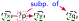
\(\Rightarrow\)
?x?q?y
Subproperty (II)
?psubp. of?qsubp. of?r
\(\Rightarrow\)
?psubp. of?r
Domain
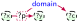
\(\Rightarrow\)
?xtype?c
Range
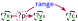
\(\Rightarrow\)
?ytype?c
Rules can be leveraged for reasoning in a number of ways. Materialisation refers to the idea of applying rules recursively to a graph, adding the conclusions generated back to the graph until a fixpoint is reached and nothing more can be added. The materialised graph can then be treated as any other graph. Although the efficiency and scalability of materialisation can be enhanced through optimisations like Rete networks [131], or using distributed frameworks like MapReduce [132], depending on the rules and the data, the materialised graph may become unfeasibly large to manage. Another strategy is to use rules for query rewriting, which given a query, will automatically extend the query in order to find solutions entailed by a set of rules; for example, taking the schema graph in Figure 3.2 and the rules in Table 4.4, the (sub-)pattern ?xtypeEvent in a given input query would be rewritten to the following disjunctive pattern evaluated on the original graph:
Figure 4.2 provides a more complete example of an ontology that is used to rewrite the query of Figure 4.1; if evaluated over the graph of Figure 2.1, Ñam will be returned as a solution. However, not all of the aforementioned features of OWL can be supported in this manner. The OWL 2 QL profile [128] is a subset of OWL designed specifically for query rewriting of this form [133].
\(O:\)
\(Q(O):\)
\((\) \(\cup\) \(\cup\) \()\)
\(\Join (\) \(\cup\) \()\)
\(\Join \)
Query rewriting example for the query \(Q\) of Figure 4.1
While rules can be used to (partially) capture ontological entailments, they can also be defined independently of an ontology language, capturing entailments for a given domain. In fact, some rules – such as the following – cannot be captured by the ontology features previously seen, as they do not support ways to infer relations from cyclical graph patterns (for computability reasons):
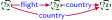 \(\Rightarrow\) ?xdomestic flight?y
Various languages allow for expressing rules over graphs – independently or alongside of an ontology language – including: Notation3 (N3) [74], Rule Interchange Format (RIF) [28], Semantic Web Rule Language (SWRL) [27], and SPARQL Inferencing Notation (SPIN) [134].
Given a graph pattern \(Q\) – be it a directed edge-labelled graph pattern per Definition 2.5 or a property graph pattern per Definition 2.6 – recall that \(\var(Q)\) denotes the variables appearing in \(Q\). We can now define the notion of a rule for graphs.
Rule
A rule is a pair \(R \coloneqq (B,H)\) such that \(B\) and \(H\) are graph patterns and \(\var(H) \subseteq B\). The graph pattern \(B\) is called the body of the rule while \(H\) is called the head of the rule.
This definition of a rule applies for directed edge-labelled graphs and property graphs by considering the corresponding type of graph pattern. The head is considered to be a conjunction of edges. Given a graph \(G\), a rule is applied by computing the mappings from the body to the graph and then using those mappings to substitute the variables in \(H\). The restriction \(\var(H) \subseteq B\) ensures that the results of this substitution is a graph, with no variables in \(H\) left unsubstituted.
Rule application
Given a rule \(R = (B,H)\) and a graph \(G\), we define the application of \(R\) over \(G\) as the graph \(R(G) \coloneqq \bigcup_{\mu \in B(G)} \mu(H)\).
Given a set of rules \(\mathcal{R} \coloneqq \{ R_1, \ldots R_n \}\) and a knowledge graph \(G\), towards defining the set of inferences given by the rules over the graph, we denote by \(\mathcal{R}(G) \coloneqq \bigcup_{R \in \mathcal{R}} R(G)\) the union of the application of all rules of \(\mathcal{R}\) over \(G\), and we denote by \(\mathcal{R}^+(G) \coloneqq \mathcal{R}(G) \cup G\) the extension of \(G\) with respect to the application of \(\mathcal{R}\). Finally, we denote by \(\mathcal{R}^k(G)\) (for \(k \in \mathbb{N^+}\)) the recursive application of \(\mathcal{R}^+(G)\), where \(\mathcal{R}^1(G) \coloneqq \mathcal{R}^+(G)\), and \(\mathcal{R}^{i+1}(G) \coloneqq \mathcal{R}^+(\mathcal{R}^{i}(G))\). We are now ready to define the least model, which captures the inferences possible for \(\mathcal{R}\) over \(G\).
Least model
The least model of \(\mathcal{R}\) over \(G\)} is defined as \(\mathcal{R}^*(G) \coloneqq \bigcup_{k\in \mathbb{N}}(R^k(G))\).
At some point \(R^{k'}(G) = R^{k'+1}(G)\): the rule applications reach a fixpoint and we have the least model. Once the least model \(\mathcal{R}^*(G)\) is computed, the entailed data can be treated as any other data.
Rules can be used to support graph entailments of the form \(G_1 \models_\Phi G_2\). We say that a set of rules \(\mathcal{R}\) is correct for \(\Phi\) if, for any graph \(G\), \(G \models_\Phi \mathcal{R}^*(G)\). We say that \(\mathcal{R}\) is complete for \(\Phi\) if, for any graph \(G\), there does not exist an edge \(e\) such that \(G \models_\Phi e\) and \(e \not\in \mathcal{R}^*(G)\). Table 4.4 exemplifies a correct (but incomplete) set of rules for the semantic conditions laid out by the RDFS standard [25].
Alternatively, rules can be directly specified in a rule language such as Notation3 (N3) [74], Rule Interchange Format (RIF) [28], Semantic Web Rule Language (SWRL) [27], or SPARQL Inferencing Notation (SPIN) [134]. Languages such as SPIN represent rules as graphs, allowing the rules of a knowledge graph to be embedded in the data graph. Taking advantage of this fact, we can then consider a form of graph entailment \(G_1 \cup \gamma(\mathcal{R}) \models_\Phi G_2\), where by \(\gamma(\mathcal{R})\) we denote the graph representation of rules \(\mathcal{R}\). If the set of rules \(\mathcal{R}\) is correct and complete for \(\Phi\), we may simply write \(G_1 \cup \gamma(\mathcal{R}) \models G_2\), indicating that \(\Phi\) captures the same semantics for \(\gamma(\mathcal{R})\) as applying the rules in \(\mathcal{R}\); formally, \(G_1 \cup \gamma(\mathcal{R}) \models \mathcal{R}(G_1 \cup \gamma(\mathcal{R}))\) and there does not exist an edge \(e\) such that \(G_1 \cup \gamma(\mathcal{R}) \models e\) but \(e \not\in \mathcal{R}^*(G_1 \cup \gamma(\mathcal{R}))\). This allows us to view rules as another form of graph entailment.
Description Logics
Description Logics (DLs) were initially introduced as a way to formalise the meaning of frames and semantic networks . Considering that semantic networks are an early version of knowledge graphs, and the fact that DLs have heavily influenced the Web Ontology Language, DLs thus hold an important place in the logical formalisation of knowledge graphs. DLs form a family of logics rather than a particular logic. Initially, DLs were restricted fragments of First Order Logic (FOL) that permit decidable reasoning tasks, such as entailment checking [137]. Different DLs strike different balances between expressive power and computational complexity of reasoning. DLs would later be extended with features that go beyond FOL but are useful in the context of modelling graph data, such as transitive closure, datatypes, etc.
Description Logics are based on three types of elements: individuals, such as Santiago; classes (aka concepts) such as City; and properties (aka roles) such as flight. DLs then allow for making claims, known as axioms, about these elements. Assertional axioms can be either unary class relations on individuals, such as City(Santiago), or binary property relations on individuals, such as flight(Santiago,Arica). Such axioms form the Assertional Box (A-Box). DLs further introduce logical symbols to allow for defining class axioms (forming the Terminology Box, or T-Box for short), and property axioms (forming the Role Box, R-Box); for example, the class axiom City \(\sqsubseteq\) Place states that the former class is a subclass of the latter one, while the property axiom flight \(\sqsubseteq\) connectsTo states that the former property is a subproperty of the latter one. DLs may then introduce a rich set of logical symbols, not only for defining class and property axioms, but also defining new classes based on existing terms; as an example of the latter, we can define a class \(\exists\)nearby.Airport as the class of individuals that have some airport nearby. Noting that the symbol \(\top\) is used in DLs to denote the class of all individuals, we can then add a class axiom \(\exists\)flight.\(\top \sqsubseteq \exists\)nearby.Airport to state that individuals with an outgoing flight must have some airport nearby. Noting that the symbol \(\sqcup\) can be used in DL to define that a class is the union of other classes, we can further define that Airport \(\sqsubseteq\) DomesticAirport \(\sqcup\) InternationalAirport, i.e., that an airport is either a domestic airport or an international airport (or both).
The similarities between these DL features and the OWL features previously outlined in Tables 4.1–4.3 are not coincidental: the OWL standard was heavily influenced by DLs, where, for example, the OWL 2 DL language is a fragment of OWL restricted so that entailment becomes decidable. As an example of a restriction, with DomesticAirport \(\sqsubseteq ~=1\) destination \(\circ\) country.\(\top\), we can define in DL syntax that domestic airports have flights destined to precisely one country (where p \(\circ\) q denotes a chain of properties). However, counting chains is often disallowed in DLs to ensure decidability. In Appendix B.5.3, we present formal definitions for DL syntax and semantics, as well as notions of entailment. For further reading, we also refer to the textbook by Franz Baader, et al. [137].
Expressive DLs support complex entailments involving existentials, universals, counting, etc. A common strategy for deciding such entailments is to reduce entailment to satisfiability, which decides if an ontology is consistent or not [138].18note 18 \(G\) entails \(G'\) if and only if \(G \cup \text{not}(G')\) is not satisfiable. Thereafter methods such as tableau can be used to check satisfiability, cautiously constructing models by completing them along similar lines to the materialisation strategy previously described, but additionally branching models in the case of disjunction, introducing new elements to represent existentials, etc. If any model is successfully “completed”, the process concludes that the original definitions are satisfiable (see, e.g., [139]). Due to their prohibitive computational complexity [128] – where for example, disjunction may lead to an exponential number of branching possibilities – such reasoning strategies are not typically applied in the case of large-scale data, though they may be useful when modelling complex domains.
Table 4.5 provides definitions for all of the constructs typically found in Description Logics. The syntax column denotes how the construct is expressed in DL. A DL knowledge base then consists of an A-Box, a T-Box, and an R-Box.
DL knowledge base
DL knowledge base \(\mathsf{K}\) is defined as a tuple \((\mathsf{A},\mathsf{T},\mathsf{R})\), where \(\mathsf{A}\) is the A-Box: a set of assertional axioms; \(\mathsf{T}\) is the T-Box: a set of class (aka concept/terminological) axioms; and \(\mathsf{R}\) is the R-Box: a set of relation (aka property/role) axioms.
The semantics column defines the meaning of axioms using interpretations. These interpretations are typically defined in a slightly different way to those previously defined for graphs, though the idea is roughly the same.
DL interpretation
A DL interpretation \(I\) is defined as a pair \((\inpdom,\inp{\cdot})\), where \(\inpdom\) is the interpretation domain, and \(\inp{\cdot}\) is the interpretation function. The interpretation domain is a set of individuals. The interpretation function accepts a definition of either an individual \(a\), a class \(C\), or a relation \(R\), mapping them, respectively, to an element of the domain (\(\inp{a} \in \inpdom\)), a subset of the domain (\(\inp{C} \subseteq \inpdom\)), or a set of pairs from the domain (\(\inp{R} \subseteq \inpdom \times \inpdom\)).
An interpretation \(I\) satisfies a knowledge-base \(\mathsf{K}\) if and only if, for all of the syntactic axioms in \(\mathsf{K}\), the corresponding semantic conditions in Table 4.5 hold for \(I\). In this case, we call \(I\) a model of \(\mathsf{K}\).
As an example, for \(\mathsf{K} \coloneqq (\mathsf{A},\mathsf{T},\mathsf{R})\), let:
The interpretation \(I\) is not a model of \(\mathsf{K}\) since it does not have that \(⚓\) is nearby some Airport, nor that \(⚓\) and \(🏔\) are in the class Place. However, if we extend \(I\) with the following:
Place\(I\) \(\coloneqq \{ ⚓,\,🏔 \}\);
nearby \(\coloneqq \{ (⚓,\,🛪) \}\).
Now \(I\) is a model of \(\mathsf{K}\). Note that although \(\mathsf{K}\) does not imply that sells(Arica,coffee) while \(I\) indicates that \(🛪\) sells \(☕\), \(I\) is still a model of \(\mathsf{K}\) since \(\mathsf{K}\) is not assumed to be a complete description of the world, as per the Open World Assumption.
Finally, the notion of a model gives rise to the key notion of entailment.
Entailment
Given two DL knowledge bases \(\mathsf{K}_1\) and \(\mathsf{K}_2\), we define that \(\mathsf{K}_1\) entails \(\mathsf{K}_2\), denoted \(\mathsf{K}_1 \models \mathsf{K}_2\), if and only if any model of \(\mathsf{K}_2\) is a model of \(\mathsf{K}_1\).
The entailment relation tells us which knowledge bases hold as a logical consequence of which others: if all models of \(\mathsf{K}_2\) are also models of \(\mathsf{K}_1\) then, intuitively speaking, \(\mathsf{K}_2\) says nothing new over \(\mathsf{K}_1.\) For example, let \(\mathsf{K}_1\) denote the knowledge base \(\mathsf{K}\) from the previous example, and define a second knowledge base with one assertion: \(\mathsf{K}_2 \coloneqq ( \{ \)connectsTo\((\)Arica, Santiago\() \}, \{\}, \{\} )\). Though \(\mathsf{K}_1\) does not assert this axiom, it does entail \(\mathsf{K}_2\): to be a model of \(\mathsf{K}_2\), an interpretation must have that \((\)Arica\(I\), Santiago\() \in\) connectsTo\(I\), but this must also be the case for any interpretation that satisfies \(\mathsf{K}_1\) since it must have that \((\)Arica\(I\), Santiago\(I\)\() \in \)flight and flight \(\subseteq\) connectsTo\(I\).
Unfortunately, the problem of deciding entailment for knowledge bases expressed in the DL composed of the unrestricted use of all of the axioms of Table 4.5 combined is undecidable. We could, for example, reduce instances of the Halting Problem to such entailment. Hence DLs in practice restrict use of the features listed in Table 4.5. Different DLs then apply different restrictions, implying different trade-offs for expressivity and the complexity of the entailment problem. Most DLs are founded on one of the following base DLs (we use indentation to denote derivation):
[\(\mathcal{ALC}\)] (\(\mathcal{A}\)ttributive \(\mathcal{L}\)anguage with \(\mathcal{C}\)omplement} [140]), supports atomic classes, the top and bottom classes, class intersection, class union, class negation, universal restrictions and existential restrictions. Relation and class assertions are also supported.
[\(\mathcal{S}\)] extends \(\mathcal{ALC}\) with transitive closure.
These base languages can be extended as follows:
[\(\mathcal{H}\)] adds relation inclusion.
[\(\mathcal{R}\)] adds (limited) complex relation inclusion, as well as relation reflexivity, relation irreflexivity, relation disjointness and the universal relation.
[\(\mathcal{N}\)] adds (limited) number restrictions (subsuming \(\mathcal{F}\) given \(\top\)).
[\(\mathcal{Q}\)] adds (limited) qualified number restrictions (subsuming \(\mathcal{N}\) given \(\top\)).
We use “(limited)” to indicate that such features are often only allowed under certain restrictions to ensure decidability; for example, complex relations (chains) typically cannot be combined with cardinality restrictions. DLs are then typically named per the following scheme, where \([a|b]\) denotes an alternative between \(a\) and \(b\) and \([c][d]\) denotes a concatenation \(cd\):
Examples include \(\mathcal{ALCO}\), \(\mathcal{ALCHI}\), \(\mathcal{SHIF}\), \(\mathcal{SROIQ}\), etc. These languages often apply additional restrictions on class and property axioms to ensure decidability, which we do not discuss here. For further details on Description Logics, we refer to the recent book by Franz Baader, et al. [137].
As mentioned in the body of the survey, DLs have been very influential in the definition of OWL, where the OWL 2 DL fragment (roughly) corresponds to the DL \(\mathcal{SROIQ}\). For example, the axiom venuedomainEvent in OWL can be translated to \(\exists\)venue\(.\top \sqsubseteq\) Event, meaning that the class of individuals with some value for venue (in any class) is a sub-class of the class Event. We leave other translations from the OWL axioms of Tables 4.1–4.3 to DL as an exercise.19note 19 Though not previously mentioned, OWL defines classes Thing and Nothing that corresponds to \(\top\) and \(\bot\), respectively. Note, however, that axioms like sub-taxon ofsubp. ofsubc. of – which given a graph such as FredtypeHomo sapienssub-taxon ofHominini entails the edge FredtypeHominini – cannot be expressed in DL: “subTaxonOf \(\sqsubseteq\ \sqsubseteq\)” is not syntactically valid. Hence only a subset of graphs can be translated into well-formed DL ontologies; we refer to the OWL standard for details [24].
Description Logic semantics
Name
Syntax
Semantics (\(\inp{\cdot}\))
Class Definitions
Atomic Class
\(A\)
\(\inp{A}\) (a subset of \(\inpdom)\)
Top Class
\(\top\)
\(\inpdom\)
Bottom Class
\(\bot\)
\(\emptyset\)
Class Negation
\(\neg C\)
\(\inpdom \setminus \inp{C}\)
Class Intersection
\(C \sqcap D\)
\(\inp{C} \cap \inp{D}\)
Class Union
\(C \sqcup D\)
\(\inp{C} \cup \inp{D}\)
Nominal
\(\{ a_1, ..., a_n \}\)
\(\{ \inp{a_1}, ..., \inp{a_n} \}\)
Existential Restriction
\(\exists R.C\)
\(\{ x \mid \exists y : (x,y) \in \inp{R}\text{ and }y \in \inp{C} \}\)
Universal Restriction
\(\forall R.C\)
\(\{ x \mid \forall y : (x,y) \in \inp{R}\text{ implies }y \in \inp{C} \}\)
While deductive knowledge is characterised by precise logical consequences, inductively acquiring knowledge involves generalising patterns from a given set of input observations, which can then be used to generate novel but potentially imprecise predictions. For example, from a large data graph with geographical and flight information, we may observe the pattern that almost all capital cities of countries have international airports serving them, and hence predict that if Santiago is a capital city, it likely has an international airport serving it; however, the predictions drawn from this pattern do not hold for certain, where (e.g.) Vaduz, the capital city of Liechtenstein, has no (international) airport serving it. Hence predictions will often be associated with a level of confidence; for example, we may say that a capital has an international airport in \(\frac{187}{195}\) of cases, offering a confidence of \(0.959\) for predictions made with that pattern. We then refer to knowledge acquired inductively as inductive knowledge, which includes both the models used to encode patterns, as well as the predictions made by those models. Though fallible, inductive knowledge can be highly valuable.
Conceptual overview of popular inductive techniques for knowledge graphs in terms of type of representation generated (Numeric/Symbolic) and type of paradigm used (Unsupervised/Self-supervised/Supervised)
In Figure 5.1 we provide an overview of the inductive techniques typically applied to knowledge graphs. In the case of unsupervised methods, there is a rich body of work on graph analytics, which uses well-known functions/algorithms to detect communities or clusters, find central nodes and edges, etc., in a graph. Alternatively, knowledge graph embeddings can use self-supervision to learn a low-dimensional numeric model of a knowledge graph that (typically) maps input edges to an output plausibility score indicating the likelihood of the edge being true. The structure of graphs can also be directly leveraged for supervised learning, as explored in the context of graph neural networks. Finally, while the aforementioned techniques learn numerical models, symbolic learning can learn symbolic models – i.e., logical formulae in the form of rules or axioms – from a graph in a self-supervised manner. We now discuss each of the aforementioned techniques in turn.
Graph Analytics
Analytics is the process of discovering, interpreting, and communicating meaningful patterns inherent to (typically large) data collections. Graph analytics is then the application of analytical processes to (typically large) graph data. The nature of graphs naturally lends itself to certain types of analytics that derive conclusions about nodes and edges based on the topology of the graph, i.e., how the nodes of the graph are connected. Graph analytics hence draws many of its techniques from related areas such as graph theory and network analysis, which have been used to study graphs that represent social networks, the Web, internet routing, transportation networks, ecosystems, protein–protein interactions, linguistic cooccurrences, and more besides [141].
Returning to the domain of our running example, the tourism board could use graph analytics to extract knowledge about, for instance: key transport hubs that serve many tourist attractions (centrality); groupings of attractions visited by the same tourists (community detection); attractions that may become unreachable in the event of strikes or other route failures (connectivity), or pairs of attractions that are similar to each other (node similarity). Given that such analytics will require a complex, large-scale graph, for the purposes of illustration, in Figure 5.2 we present a more concise example of some transportation connections in Chile directed towards popular touristic destinations. We first introduce a selection of key techniques that can be applied for graph analytics. We then discuss frameworks and languages that can be used to compute such analytics in practice. Given that many traditional graph algorithms are defined for unlabelled graphs, we then describe ways in which analytics can be applied over directed edge-labelled graphs. Finally we discuss the potential connections between graph analytics and querying and reasoning.
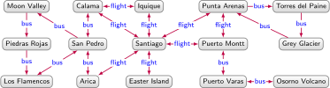
Data graph representing transport routes in Chile
Techniques
A wide variety of techniques can be applied for graph analytics. In the following we will enumerate some of the main techniques – as recognised, for example, by the survey of Alexandru Iosup, et al. [142] – that can be invoked in this setting.
Centrality: aims to identify the most important (aka central) nodes or edges of a graph. Specific node centrality measures include degree, betweenness, closeness, Eigenvector, PageRank, HITS, Katz, among others. Betweenness centrality can also be applied to edges. A node centrality measure would allow, e.g., to predict the transport hubs in Figure 5.2, while edge centrality would allow us to find the edges on which many shortest routes depend for predicting traffic.
Community detection: aims to identify communities in a graph, i.e., sub-graphs that are more densely connected internally than to the rest of the graph. Community detection algorithms, such as minimum-cut algorithms, label propagation, Louvain modularity, etc. enable discovering such communities. Community detection applied to Figure 5.2 may, for example, detect a community to the left (referring to the north of Chile), to the right (referring to the south of Chile), and perhaps also the centre (referring to cities with airports).
Connectivity: aims to estimate how well-connected the graph is, revealing, for instance, the resilience and (un)reachability of elements of the graph. Specific techniques include measuring graph density or \(k\)-connectivity, detecting strongly connected components and weakly connected components, computing spanning trees or minimum cuts, etc. In the context of Figure 5.2, such analysis may tell us that routes to Grey Glacier, Osorno Volcano and Piedras Rojas are the most “brittle”, becoming disconnected if one of two bus routes fail.
Node similarity: aims to find nodes that are similar to other nodes by virtue of how they are connected within their neighbourhood. Node similarity metrics may be computed using structural equivalence, random walks, diffusion kernels, etc. These methods provide an understanding of what connects nodes, and, thereafter, in what ways they are similar. In the context of Figure 5.2, such analysis may tell us that Calama and Arica are similar nodes based on both having return flights to Santiago and return buses to San Pedro.
While the previous techniques accept a graph alone as input,20note 20 Node similarity can be run over an entire graph to find the \(k\) most similar nodes for each node, or can also be run for a specific node to find its most similar nodes. There are also measures for graph similarity (based on, e.g., frequent itemsets [143]) that accept multiple graphs as input. other forms of graph analytics may further accept a node, a pair of nodes, etc., along with the graph.
Path finding: aims to find paths in a graph, typically between pairs of nodes given as input. Various technical definitions exist that restrict the set of valid paths between such nodes, including simple paths that do not visit the same node twice, shortest paths that visit the fewest number of edges, or – as previously discussed in Section 2.2 – regular path queries that restrict the labels of edges that can be traversed by the path [23]. We could use such algorithms to find, for example, the shortest path(s) in Figure 5.2 from Torres del Paine to Moon Valley.
Most such techniques have been proposed and studied for simple graphs or directed graphs without edge labels. We will discuss their application to more complex graph models – and how they can be combined with other techniques such as reasoning and querying – later in Section 5.1.3.
Frameworks
Various frameworks have been proposed for large-scale graph analytics, often in a distributed (cluster) setting. Amongst these we can mention Apache Spark (GraphX) [30, 144], GraphLab [145], Pregel [29], Signal–Collect [31], Shark [146], etc. These graph parallel frameworks apply a systolic abstraction [147] based on a directed graph, where nodes are processors that can send messages to other nodes along edges. Computation is then iterative, where in each iteration, each node reads messages received through inward edges (and possibly its own previous state), performs a computation, and then sends messages through outward edges based on the result. These frameworks then define the systolic computational abstraction on top of the data graph being processed: nodes and edges in the data graph become nodes and edges in the systolic graph. We refer to Appendix B.6.1 for more formal details on graph parallel frameworks.
To take an example, assume we wish to compute the places that are most (or least) easily reached by the routes shown in the graph of Figure 5.2. A good way to measure this is using centrality, where we choose PageRank [148], which computes the probability of a tourist randomly following the routes shown in the graph being at a particular place after a given number of “hops”. We can implement PageRank on large graphs using a graph parallel framework. In Figure 5.3, we provide an example of an iteration of PageRank for an illustrative sub-graph of Figure 5.2. The nodes are initialised with a score of \(\frac{1}{|V|} = \frac{1}{6}\), where we assume the tourist to have an equal chance of starting at any point. In the message phase (Msg), each node \(v\) passes a score of \(\frac{d \textrm{R}_i(v)}{|E(v)|}\) on each of its outgoing edges, where we denote by \(d\) a constant damping factor used to ensure convergence (typically \(d = 0.85\), indicating the probability that a tourist randomly “jumps” to any place), by \(\textrm{R}_i(v)\) the score of node \(v\) in iteration \(i\) (the probability of the tourist being at node \(v\) after \(i\) hops), and by \(|E(v)|\) the number of outgoing edges of \(v\). The aggregation phase (Agg) for \(v\) then sums all incoming messages received along with its constant share of the damping factor (\(\frac{1-d}{|V|}\)) to compute \(\textrm{R}_{i+1}(v)\). We then proceed to the message phase of the next iteration, continuing until some termination criterion is reached (e.g., iteration count or residual threshold, etc.) and final scores are output.
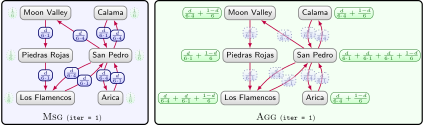
Example of a systolic iteration of PageRank for a sample sub-graph of Figure 5.2
While the given example is for PageRank, the systolic abstraction is general enough to support a wide variety of graph analytics, including those previously mentioned. An algorithm in this framework consists of the functions to compute message values in the message phase (Msg), and to accumulate the messages in the aggregation phase (Agg). The framework will take care of distribution, message passing, fault tolerance, etc. However, such frameworks – based on message passing between neighbours – have limitations: not all types of analytics can be expressed in such frameworks [149].21note 21 Formally, Keyulu Xu, et al. [149] have shown that such frameworks are as powerful as the (incomplete) Weisfeiler–Lehman (WL) graph isomorphism test – based on recursively hashing neighbouring hashes – for distinguishing graph structures. Hence frameworks may allow additional features, such as a global step that performs a global computation on all nodes, making the result available to each node [29]; or a mutation step that allows for adding or removing nodes and edges during processing [29].
Before defining a graph parallel framework, in the interest of generality, we first define a directed graph labelled with feature vectors, which captures the type of input that such a framework can accept, with vectors assigned to both nodes and edges.
Directed vector-labelled graph
We define a directed vector-labelled graph \(G = (V,E,F,\lambda)\), where \(V\) is a set of nodes, \(E \subseteq V \times V\) is a set of edges, \(F\) is a set of feature vectors, and \(\lambda : V \cup E \rightarrow F\) labels each node and edge with a feature vector.
A directed-edge labelled graph or a property graph may be encoded as a directed vector-labelled graph in a number of ways, depending on the application. The type of node and/or a selection of its attributes may be encoded in the node feature vectors, while the label of an edge and/or a selection of its attributes may be encoded in the edge feature vector (including, for example, weights applied to edges). Typically node feature vectors will all have the same dimensionality, as will edge feature vectors. The directed vector-labelled graph can thus be seen as defining the initial state and features that will be used as input for the graph parallel framework.
We define a directed vector-labelled graph in preparation for later computing PageRank using a graph parallel framework. Let \(G = (V,E,L)\) denote a directed edge-labelled graph. Let \(|E(u)|\) denote the outdegree of node \(u \in V\). We then initialise a directed vector-labelled graph \(G' = (V,E',F,\lambda)\) such that \(E' = \{ (x,z) \mid \exists y : (x,y,z)\in E \}\), and for all \(u \in V\), we define \(\lambda(u) \coloneqq \begin{bmatrix} \frac{1}{|V|} \\ |E'(u)| \\ |V| \end{bmatrix}\), and \(\lambda(u,v) \coloneqq \begin{bmatrix} \, \end{bmatrix}\), with \(F \coloneqq \{ \lambda(u) \mid u \in V \} \cup \{\lambda(u,v) \mid (u,v) \in E' \}\), assigning each node a vector containing its initial PageRank score, the outdegree of the node, and the number of nodes in the graph. Conversely, edge-vectors are not used in this case.
We are now ready to define a graph parallel framework operating over a directed vector-labelled graph. In the following we use \(\{\!\!\{ \cdot \}\!\!\}\) to denote a multiset (an unordered set preserving duplicates), \(2^{S \rightarrow \mathbb{N}}\) to denote the set of all multisets containing (only) elements from the set \(S\), and \(\mathbb{R}^a\) to denote the set of all vectors of dimension \(a\) (i.e., the set of all vectors containing \(a\) real-valued elements).
Graph parallel framework
A graph parallel framework (GPF) is a triple of functions \(\mathfrak{G} \coloneqq (\)Msg, Agg, End\()\) such that (with \(a, b, c \in \mathbb{N}\)):
The function Msg defines what message (i.e., vector) must be passed from a node to a neighbouring node along a particular edge, given the current feature vectors of the node and the edge; the function Agg is used to compute a new feature vector for a node, given its previous feature vector and incoming messages; the function End defines a condition for termination of vector computation. The integers \(a\), \(b\) and \(c\) denote the dimensions of node feature vectors, edge feature vectors, and message vectors, respectively; we assume that \(a\) and \(b\) correspond with the dimensions of input feature vectors for nodes and edges. Given a GPF \(\mathfrak{G} = (\)Msg, Agg, End\()\), a directed vector-labelled graph \(G = (V, E, F, \lambda)\), and a node \(u \in V\), we define the output vector assigned to node \(u\) in \(G\) by \(\mathfrak{G}\) (written \(\mathfrak{G}(G, u)\)) as follows. First let \(\mathbf{n}_u^{(0)} \coloneqq \lambda(u)\). For all \(i\geq 1\), let:
If \(j\) is the smallest integer for which End\((\{\!\!\{ \mathbf{n}_u^{(j)} \mid u \in V \}\!\!\})\) is true, then \(\mathfrak{G}(G, u) \coloneqq \mathbf{n}_u^{(j)}\).
This particular definition assumes that vectors are dynamically computed for nodes, and that messages are passed only to outgoing neighbours, but the definitions can be readily adapted to consider dynamic vectors for edges, or messages being passed to incoming neighbours, etc. We now provide an example instantiating a GPF to compute PageRank over a directed graph.
We take as input the directed vector labelled graph \(G' = (V,E,F,\lambda)\) from Example 11 for a PageRank GPF. First we define the messages passed from \(u\) to \(v\):
where \(d\) denotes PageRank’s constant dampening factor (typically \(d \coloneqq 0.85\)) and \((\mathbf{n}_{v})_k\) denotes the \(k\)th element of the \(\mathbf{n}_{v}\) vector. In other words, \(v\) will pass to \(u\) its PageRank score multiplied by the dampening factor and divided by its degree (we do not require \(\lambda(v,u)\) in this particular example). Next we define the function for \(u\) to aggregate the messages it receives from other nodes:
Here, we sum the scores received from other nodes along with its share of rank from the dampening factor, copying over the node’s degree and the total number of nodes for future use. Finally, there are a number of ways that we could define the termination condition; here we simply define:
End\((\{\!\!\{ \mathbf{n}_u^{(i)} \mid u \in V \}\!\!\}) \coloneqq (i \geq z) \)
where \(z\) is a fixed number of iterations, at which point the process stops.
We may note in this example that the total number of nodes is duplicated in the vector for each node of the graph. Part of the benefit of GPFs is that only local information in the neighbourhood of the node is required for each computation step. In practice, such frameworks may allow additional features, such as global computation steps whose results are made available to all nodes [29], operations that dynamically modify the graph [29], etc.
Analytics on data graphs
As aforementioned, most analytics presented thus far are, in their “native” form, applicable for undirected or directed graphs without the edge meta-data – i.e., edge labels or property–value pairs – typical of graph data models.22note 22 We remark that in the case of property graphs, property–value pairs on nodes can be converted by mapping values to nodes and properties to edges with the corresponding label. A number of strategies can be applied to make data graphs subject to analytics of this form:
Projection involves simply “projecting” an undirected or directed graph by optionally selecting a sub-graph from the data graph from which all edge meta-data are dropped; for example, Figure 5.2 may be the result of extracting the sub-graph induced by the edge labels bus and flight from a larger data graph, where the labels are then dropped to create a directed graph.
Weighting involves converting edge meta-data into numerical values according to some function. Many of the aforementioned techniques are easily adapted to the case of weighted (directed) graphs; for example, we could consider weights on the graph of Figure 5.2 denoting trip duration (or price, traffic, etc.), and then compute the shortest paths adding the duration of each leg.23note 23 Other forms of analytics are possible if we assume the graph is weighted; for example, if we annotated the graph of Figure 5.2 with probabilities of tourists moving from one place to the next, we could leverage Markov processes to understand features such as reducibility, periodicity, transience, recurrence, ergodicity, steady-states, etc., of the routes [150]. In the absence of external weights, we may rather map edge labels to weights, assigning the same weight to all flight edges, to all bus edges, etc., based on some criteria.
Transformation involves transforming the graph to a lower arity model. A transformation may be lossy, meaning that the original graph cannot be recovered; or lossless, meaning that the original graph can be recovered. Figure 5.4 provides an example of a lossy and lossless transformation from a directed edge-labelled graph to directed graphs. In the lossy transformation, we cannot tell, for example, if the original graph contained the edge IquiqueflightSantiago or IquiqueflightArica, etc. The lossless transformation must introduce new nodes (similar to reification) to maintain information about directed labelled edges. Both transformed graphs further attempt to preserve the directionality of the original graph.
Customisation involves changing the analytical procedure to incorporate edge meta-data, such as was the case for path finding based on path expressions. Other examples might include structural measures for node similarity that not only consider common neighbours, but also common neighbours connected by edges with the same label, or aggregate centrality measures that capture the importance of edges grouped by label, etc.
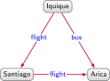
Original graph
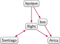
Lossy transformation
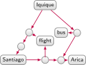
Lossless transformationTransformations from a directed edge-labelled graph to a directed graph
The results of an analytical process may change drastically depending on which of the previous strategies are chosen to prepare the data for analysis. This choice may be a non-trivial one to make a priori and may require empirical validation. More study is required to more generally understand the effects of such strategies on the results of different analytical techniques.
Analytics with queries
As discussed in Section 2.2, various languages for querying graphs have been proposed [23]. One may consider a variety of ways in which query languages and analytics can complement each other. First, we may consider using query languages to project or transform a graph suitable for a particular analytical task, such as to extract the graph of Figure 5.2 from a larger data graph. Query languages such as SPARQL [78], Cypher [79], and G-CORE [81] allow for outputting graphs, where such queries can be used to select sub-graphs for analysis. These languages can also express some limited (non-recursive) analytics, where aggregations can be used to compute degree centrality, for example; they may also have some built-in analytical support, where, for example, Cypher [79] allows for finding shortest paths. In the other direction, analytics can contribute to the querying process in terms of optimisations, where, for example, analysis of connectivity may suggest how to better distribute a large data graph over multiple machines for querying using, e.g., minimum cuts [151, 152]. Analytics have also been used to rank query results over large graphs [153, 154], selecting the most important results for presentation to the user.
In some use-cases we may further wish to interleave querying and analytical processes. For example, from the full data graph collected by the tourist board, consider an upcoming airline strike where the board wishes to find the events during the strike with venues in cities unreachable from Santiago by public transport due to the strike. Hypothetically, we could use a query to extract the transport network excluding the airline’s routes (assuming, per Figure 2.3 that the airline information is available), use analytics to extract the strongly connected component containing Santiago, and finally use a query to find events in cities not in the Santiago component on the given dates.24note 24 Such a task could not be solved in a single query using regular path queries as such expressions would not be capable of filtering edges representing flights of a particular airline. While one could solve this task using an imperative language such as Gremlin [80], GraphX [30], or R [155], more declarative languages are also being explored to more easily express such tasks, with proposals including the extension of graph query languages with recursive capabilities [156, 157],25note 25 Recursive query languages become Turing complete assuming one can also express operations on binary arrays. combining linear algebra with relational (query) algebra [158], and so forth.
Analytics with entailment
Knowledge graphs are often associated with a semantic schema or ontology that defines the semantics of domain terms, giving rise to entailments (per Section ?). Applying analytics with or without such entailments – e.g., before or after materialisation – may yield radically different results. For example, observe that an edge Santa LucíahostsEID15 is semantically equivalent to an edge EID15venueSanta Lucía once the inverse axiom hostsinv. ofvenue is invoked; however, these edges are far from equivalent from the perspective of analytical techniques that consider edge direction, for which including one type of edge, or the other, or both, may have a major bearing on the final results. To the best of our knowledge, the combination of analytics and entailment has not been well-explored, leaving open interesting research questions. Along these lines, it may be of interest to explore semantically-invariant analytics that yield the same results over semantically-equivalent graphs (i.e., graphs that entail one another), thus analysing the semantic content of the knowledge graph rather than simply the topological features of the data graph; for example, semantically-invariant analytics would yield the same results over a graph containing the inverse axiom hostsinv. ofvenue and a number of hosts edges, the same graph but where every hosts edge is replaced by an inverse venue edge, and the union of both graphs.
Knowledge Graph Embeddings
Methods for machine learning have gained significant attention in recent years. In the context of knowledge graphs, machine learning can either be used for directly refining a knowledge graph [19] (discussed further in Section ?); or for downstream tasks using the knowledge graph, such as recommendation [159], information extraction [160], question answering [161], query relaxation [162], query approximation [163], etc. (discussed further in Section ?). However, many traditional machine learning techniques assume dense numeric input representations in the form of vectors, which is quite distinct from how graphs are usually expressed. So how can graphs – or nodes, edges, etc., thereof – be encoded as numeric vectors?
A first attempt to represent a graph using vectors would be to use a one-hot encoding, generating a vector for each node of length \(|L| \cdot |V|\) – with \(|V|\) the number of nodes in the input graph and \(|L|\) the number of edge labels – placing a one at the corresponding index to indicate the existence of the respective edge in the graph, or zero otherwise. Such a representation will, however, typically result in large and sparse vectors, which will be detrimental for most machine learning models.
The main goal of knowledge graph embedding techniques is to create a dense representation of the graph (i.e., embed the graph) in a continuous, low-dimensional vector space that can then be used for machine learning tasks. The dimensionality \(d\) of the embedding is fixed and typically low (often, e.g., \(50 \geq d \geq 1000\)). Typically the graph embedding is composed of an entity embedding for each node: a vector with \(d\) dimensions that we denote by \(\mathbf{e}\); and a relation embedding for each edge label: (typically) a vector with \(d\) dimensions that we denote by \(\mathbf{r}\). The overall goal of these vectors is to abstract and preserve latent structures in the graph. There are many ways in which this notion of an embedding can be instantiated. Most commonly, given an edge spo, a specific embedding approach defines a scoring function that accepts \(\mathbf{e}\)s (the entity embedding of node s), \(\mathbf{r}\)p (the entity embedding of edge label p) and \(\mathbf{e}\)o (the entity embedding of node o) and computes the plausibility of the edge: how likely it is to be true. Given a data graph, the goal is then to compute the embeddings of dimension \(d\) that maximise the plausibility of positive edges (typically edges in the graph) and minimise the plausibility of negative examples (typically edges in the graph with a node or edge label changed such that they are no longer in the graph) according to the given scoring function. The resulting embeddings can then be seen as models learnt through self-supervision that encode (latent) features of the graph, mapping input edges to output plausibility scores.
Embeddings can then be used for a number of low-level tasks involving the nodes and edge-labels of the graph from which they were computed. First, we can use the plausibility scoring function to assign a confidence to edges that may, for example, have been extracted from an external source (discussed later in Section ?). Second, the plausibility scoring function can be used to complete edges with missing nodes/edge labels for the purposes of link prediction (discussed later in Section ?); for example, in Figure 5.2, we might ask which nodes in the graph are likely to complete the edge Grey Glacierbus?, where – aside from Punta Arenas, which is already given – we might intuitively expect Torres del Paine to be a plausible candidate. Third, embedding models will typically assign similar vectors to similar nodes and similar edge-labels, and thus they can be used as the basis of similarity measures, which may be useful for finding duplicate nodes that refer to the same entity, or for the purposes of providing recommendations (discussed later in Section ?).
A wide range of knowledge graph embedding techniques have been proposed [20], where our goal here is to provide a high-level introduction to some of the most popular techniques proposed thus far. First we discuss translational models that adopt a geometric perspective whereby relation embeddings translate subject entities to object entities in the low-dimensional space. We then describe tensor decomposition models that extract latent factors approximating the graph’s structure. Thereafter we discuss neural models that use neural networks to train embeddings that provide accurate plausibility scores. Finally, we discuss language models that leverage existing word embedding techniques, proposing ways of generating graph-like analogues for their expected (textual) inputs. A more formal treatment of these models is provided in Appendix B.6.2.
Translational models
Translational models interpret edge labels as transformations from subject nodes (aka the source or head) to object nodes (aka the target or tail); for example, in the edge San PedrobusMoon Valley, the edge label bus is seen as transforming San Pedro to Moon Valley, and likewise for other bus edges. The most elementary approach in this family is TransE [58]. Over all positive edges spo, TransE learns vectors \(\mathbf{e}\)s, \(\mathbf{r}\)p, and \(\mathbf{e}\)os aiming to make \(\mathbf{e}\)s + \(\mathbf{r}\)p as close as possible to \(\mathbf{e}\)o. Conversely, if the edge is a negative example, TransE attempts to learn a representation that keeps \(\mathbf{e}\)s + \(\mathbf{r}\)p away from \(\mathbf{e}\)o. To illustrate, Figure 5.5 provides a toy example of two-dimensional (\(d = 2\)) entity and relation embeddings computed by TransE. We keep the orientation of the vectors similar to the original graph for clarity. For any edge spo in the original graph, adding the vectors \(\mathbf{e}\)s + \(\mathbf{r}\)p should approximate \(\mathbf{e}\)o. In this toy example, the vectors correspond precisely where, for instance, adding the vectors for Licantén (\(\mathbf{e}\)L.) and west of (\(\mathbf{r}\)wo.) gives a vector corresponding to Curico (\(\mathbf{e}\)C.). We can use these embeddings to predict edges (among other tasks); for example, in order to predict which node in the graph is most likely to be west ofAntofagasta (A.), by computing \(\mathbf{e}\)A. + \(\mathbf{r}\)wo. we find that the resulting vector (dotted in Figure ?) is closest to \(\mathbf{e}\)T., thus predicting Toconao (T.) to be the most plausible such node.
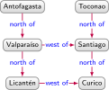
Original graph
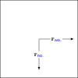
Relation embeddings
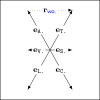
Lossless transformationToy example of two-dimensional relation and entity embeddings learnt by TransE; the entity embeddings use abbreviations and include an example of vector addition to predict what is west of Antofagasta
Aside from this toy example, TransE can be too simplistic; for example, in Figure 5.2, bus not only transforms San Pedro to Moon Valley, but also to Arica, Calama, and so forth. TransE will, in this case, aim to give similar vectors to all such target locations, which may not be feasible given other edges. TransE will also tend to assign cyclical relations a zero vector, as the directional components will tend to cancel each other out. To resolve such issues, many variants of TransE have been investigated. Amongst these, for example, TransH [17] represents different relations using distinct hyperplanes, where for the edge spo, s is first projected onto the hyperplane of p before the translation to o is learnt (uninfluenced by edges with other labels for s and for o). TransR [18] generalises this approach by projecting s and o into a vector space specific to p, which involves multiplying the entity embeddings for s and o by a projection matrix specific to p. TransD [164] simplifies TransR by associating entities and relations with a second vector, where these secondary vectors are used to project the entity into a relation-specific vector space. Recently, RotatE [165] proposes translational embeddings in complex space, which allows to capture more characteristics of relations, such as direction, symmetry, inversion, antisymmetry, and composition. Embeddings have also been proposed in non-Euclidean space, e.g., MuRP [59] uses relation embeddings that transform entity embeddings in the hyperbolic space of the Poincaré ball mode, whose curvature provides more “space” to separate entities with respect to the dimensionality. For discussion of other translational models, we refer to the survey by Quan Wang, et al. [20].
Tensor decomposition models
A second approach to derive graph embeddings is to apply methods based on tensor decomposition. A tensor is a multidimensional numeric field that generalises scalars (\(0\)-order tensors), vectors (\(1\)-order tensors) and matrices (\(2\)-order tensors) towards arbitrary dimension/order. Tensors have become a widely used abstraction for machine learning [166]. Tensor decomposition involves decomposing a tensor into more “elemental” tensors (e.g., of lower order) from which the original tensor can be recomposed (or approximated) by a fixed sequence of basic operations. These elemental tensors can be viewed as capturing latent factors underlying the information contained in the original tensor. There are many approaches to tensor decomposition, where we will now briefly introduce the main ideas behind rank decompositions [166].
Leaving aside graphs momentarily, consider an \((a,b)\)-matrix (i.e., a \(2\)-order tensor) \(\mathbf{C}\), where \(a\) is the number of cities in Chile, \(b\) is the number of months in a year, and each element \((\mathbf{C})_{ij}\) denotes the average temperature of the \(i\)th city in the \(j\)th month. Noting that Chile is a long, thin country – ranging from subpolar climates in the south, to a desert climate in the north – we may find a decomposition of \(\mathbf{C}\) into two vectors representing latent factors – specifically \(\mathbf{x}\) (with \(a\) elements) giving lower values for cities with lower latitude, and \(\mathbf{y}\) (with \(b\) elements), giving lower values for months with lower temperatures – such that computing the outer product26note 26 The outer product of two (column) vectors \(\mathbf{x}\) of length \(a\) and \(\mathbf{y}\) of length \(b\), denoted \(\mathbf{x} \otimes \mathbf{y}\), is defined as \(\mathbf{x}\mathbf{y}^{\mathrm{T}}\), yielding an \((a,b)\)-matrix \(\mathbf{M}\) such that \((\mathbf{M})_{ij} = (\mathbf{x})_i \cdot (\mathbf{y})_j\). Analogously, the outer product of \(k\) vectors is a \(k\)-order tensor. of the two vectors approximates \(\mathbf{C}\) reasonably well: \(\mathbf{x} \otimes \mathbf{y} \approx \mathbf{C}\). In the (unlikely) case that there exist vectors \(\mathbf{x}\) and \(\mathbf{y}\) such that \(\mathbf{C}\) is precisely the outer product of two vectors (\(\mathbf{x} \otimes \mathbf{y} = \mathbf{C}\)) we call \(\mathbf{C}\) a rank-\(1\) matrix; we can then precisely encode \(\mathbf{C}\) using \(a + b\) values rather than \(a \times b\) values. Most times, however, to get precisely \(\mathbf{C}\), we will need to sum multiple rank-\(1\) matrices, where the rank \(r\) of \(\mathbf{C}\) is the minimum number of rank-\(1\) matrices that need to be summed to derive precisely \(\mathbf{C}\), such that \(\mathbf{x}_1 \otimes \mathbf{y}_1 + \ldots \mathbf{x}_r \otimes \mathbf{y}_r = \mathbf{C}\). In the temperature example, \(\mathbf{x}_2 \otimes \mathbf{y}_2\) might correspond to a correction for altitude, \(\mathbf{x}_3 \otimes \mathbf{y}_3\) for higher temperature variance further south, etc. A (low) rank decomposition of a matrix then sets a limit \(d\) on the rank and computes the vectors \((\mathbf{x}_1,\mathbf{y}_1,\ldots,\mathbf{x}_{d},\mathbf{y}_{d})\) such that \(\mathbf{x}_1 \otimes \mathbf{y}_1 + \ldots + \mathbf{x}_{d} \otimes \mathbf{y}_{d}\) gives the best \(d\)-rank approximation of \(\mathbf{C}\). Noting that to generate \(n\)-order tensors we need to compute the outer product of \(n\) vectors, we can generalise this idea towards low rank decomposition of tensors; this method is called Canonical Polyadic (CP) decomposition [167]. For example, we might have a \(3\)-order tensor \(\mathcal{C}\) containing monthly temperatures for Chilean cities at four different times of day, which could be approximated with \(\mathbf{x}_1 \otimes \mathbf{y}_1 \otimes \mathbf{z}_1 + \ldots \mathbf{x}_{d} \otimes \mathbf{y}_{d} \otimes \mathbf{z}_{d}\) (e.g., \(\mathbf{x}_1\) might be a latitude factor, \(\mathbf{y}_1\) a monthly variation factor, and \(\mathbf{z}_1\) a daily variation factor, and so on). Various algorithms then exist to compute (approximate) CP decompositions, including Alternating Least Squares, Jennrich’s Algorithm, and the Tensor Power method [166].
Returning to graphs, similar principles can be used to decompose a graph into vectors, thus yielding embeddings. In particular, a graph can be encoded as a one-hot \(3\)-order tensor \(\mathcal{G}\) with \(|V| \times |L| \times |V|\) elements, where the element \((\mathcal{G})_{ijk}\) is set to one if the \(i\)th node links to the \(k\)th node with an edge having the \(j\)th label, or zero otherwise. As previously mentioned, such a tensor will typically be very large and sparse, where rank decompositions are thus applicable. A CP decomposition [167] would compute a sequence of vectors \((\mathbf{x}_1,\mathbf{y}_1,\mathbf{z}_1,\ldots,\mathbf{x}_d,\mathbf{y}_d,\mathbf{z}_d)\) such that \(\mathbf{x}_1 \otimes \mathbf{y}_1 \otimes \mathbf{z}_1 + \ldots + \mathbf{x}_d \otimes \mathbf{y}_d \otimes \mathbf{z}_d \approx \mathcal{G}\). We illustrate this scheme in Figure 5.6. Letting \(\mathbf{X}, \mathbf{Y}, \mathbf{Z}\) denote the matrices formed by \(\begin{bmatrix} \mathbf{x}_1\,\cdots\,\mathbf{x}_d \end{bmatrix}\), \(\begin{bmatrix} \mathbf{y}_1\,\cdots\,\mathbf{y}_d \end{bmatrix}\), \(\begin{bmatrix} \mathbf{z}_1\,\cdots\,\mathbf{z}_d \end{bmatrix}\), respectively, with each vector forming a column of the corresponding matrix, we could then extract the \(i\)th row of \(\mathbf{Y}\) as an embedding for the \(i\)th relation, and the \(j\)th rows of \(\mathbf{X}\) and \(\mathbf{Z}\) as two embeddings for the \(j\)th entity. However, knowledge graph embeddings typically aim to assign one vector to each entity.
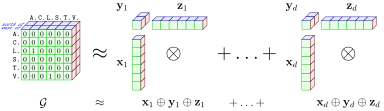
Abstract illustration of a CP \(d\)-rank decomposition of a tensor representing the graph of Figure 5.5a
DistMult [168] is a seminal method for computing knowledge graph embeddings based on rank decompositions, where each entity and relation is associated with a vector of dimension \(d\), such that for an edge spo, a plausibility scoring function \(\sum_{i=1}^d (\mathbf{e}\)s\()_i (\mathbf{r}\)p\()_i (\mathbf{e}\)o\()_i\) is defined, where \((\mathbf{e}\)s\()_i\), \((\mathbf{r}\)p\()_i\) and \((\mathbf{e}\)o\()_i\) denote the \(i\)th elements of vectors \(\mathbf{e}\)s, \(\mathbf{r}\)p, \(\mathbf{e}\)o, respectively. The goal, then, is to learn vectors for each node and edge label that maximise the plausibility of positive edges and minimise the plausibility of negative edges. This approach equates to a CP decomposition of the graph tensor \(\mathcal{G}\), but where entities have one vector that is used twice: \(\mathbf{x}_1 \otimes \mathbf{y}_1 \otimes \mathbf{x}_1 + \ldots + \mathbf{x}_d \otimes \mathbf{y}_d \otimes \mathbf{x}_d \approx \mathcal{G}\). A weakness of this approach is that per the scoring function, the plausibility of spo will always be equal to that of ops; in other words, DistMult does not consider edge direction.
Rather than use a vector as a relation embedding, RESCAL [57] uses a matrix, which allows for combining values from \(\mathbf{e}\)s and \(\mathbf{e}\)o across all dimensions, and thus can capture (e.g.) edge direction. However, RESCAL incurs a higher cost in terms of space and time than DistMult. HolE [169] uses vectors for relation and entity embeddings, but proposes to use the circular correlation operator – which takes sums along the diagonals of the outer product of two vectors – to combine them. This operator is not commutative, and can thus consider edge direction. ComplEx [170], on the other hand, uses a complex vector (i.e., a vector containing complex numbers) as a relational embedding, which similarly allows for breaking the aforementioned symmetry of DistMult’s scoring function while keeping the number of parameters low. SimplE [171] rather proposes to compute a standard CP decomposition computing two initial vectors for entities from \(\mathbf{X}\) and \(\mathbf{Z}\) and then averaging terms across \(\mathbf{X}\), \(\mathbf{Y}\), \(\mathbf{Z}\) to compute the final plausibility scores. TuckER [172] employs a different type of decomposition – called a Tucker Decomposition [173], which computes a smaller “core” tensor \(\mathcal{T}\) and a sequence of three matrices \(\mathbf{A}\), \(\mathbf{B}\) and \(\mathbf{C}\), such that \(\mathcal{G} \approx \mathcal{T} \otimes \mathbf{A} \otimes \mathbf{B} \otimes \mathbf{C}\) – where entity embeddings are taken from \(\mathbf{A}\) and \(\mathbf{C}\), while relation embeddings are taken from \(\mathbf{B}\). Of these approaches, TuckER [172] currently provides state-of-the-art results on standard benchmarks.
Neural models
A limitation of the previously discussed approaches is that they assume either linear (preserving addition and scalar multiplication) or bilinear (e.g., matrix multiplication) operations over embeddings to compute plausibility scores. A number of approaches rather use neural networks to learn embeddings with non-linear scoring functions for plausibility.
One of the earliest proposals of a neural model was Semantic Matching Energy (SME) [174], which learns parameters (aka weights: \(\mathbf{w}\), \(\mathbf{w}'\)) for two functions – \(f_{\mathbf{w}}(\mathbf{e}\)s\(,\mathbf{r}\)p\()\) and \(g_{\mathbf{w}'}(\mathbf{e}\)o\(,\mathbf{r}\)p\()\) – such that the dot product of the result of both functions – \(f_{\mathbf{w}}(\mathbf{e}\)s\(,\mathbf{r}\)p\() \cdot g_{\mathbf{w}'}(\mathbf{e}\)o\(,\mathbf{r}\)p\()\) – gives the plausibility score. Both linear and bilinear variants of \(f_{\mathbf{w}}\) and \(g_{\mathbf{w}'}\) are proposed. Another early proposal was Neural Tensor Networks (NTN) [175], which rather proposes to maintain a tensor \(\mathcal{W}\) of internal weights, such that the plausibility score is computed by a complex function that combines the outer product \(\mathbf{e}\)s\( \otimes \mathcal{W} \otimes \mathbf{e}\)o with a standard neural layer over \(\mathbf{e}\)s and \(\mathbf{e}\)o, which in turn is combined with \(\mathbf{r}\)p, to produce a plausibility score. The use of the tensor \(\mathcal{W}\) results in a high number of parameters, which limits scalability [20]. Multi Layer Perceptron (MLP) [176] is a simpler model, where \(\mathbf{e}\)s, \(\mathbf{r}\)p and \(\mathbf{e}\)o are concatenated and fed into a hidden layer to compute the plausibility score.
A number of more recent approaches have proposed using convolutional kernels in their models. ConvE [177] proposes to generate a matrix from \(\mathbf{e}\)s and \(\mathbf{r}\)p by “wrapping” each vector over several rows and concatenating both matrices. The concatenated matrix serves as the input for a set of (2D) convolutional layers, which returns a feature map tensor. The feature map tensor is vectorised and projected into \(d\) dimensions using a parametrised linear transformation. The plausibility score is then computed based on the dot product of this vector and \(\mathbf{e}\)o. A disadvantage of ConvE is that by wrapping vectors into matrices, it imposes an artificial two-dimensional structure on the embeddings. HypER [178] is a similar model using convolutions, but avoids the need to wrap vectors into matrices. Instead, a fully connected layer (called the “hypernetwork”) is applied to \(\mathbf{r}\)p and used to generate a matrix of relation-specific convolutional filters. These filters are applied directly to \(\mathbf{e}\)s to give a feature map, which is vectorised. The same process is then applied as in ConvE: the resulting vector is projected into \(d\) dimensions, and a dot product applied with \(\mathbf{e}\)o to produce the plausibility score. The resulting model is shown to outperform ConvE on standard benchmarks [178].
The presented approaches strike different balances in terms of expressivity and the number of parameters than need to be trained. While more expressive models, such as NTN, may better fit more complex plausibility functions over lower dimensional embeddings by using more hidden parameters, simpler models, such as that proposed by Dong et al. [176], and convolutional networks [177, 178] that enable parameter sharing by applying the same (typically small) kernels over different regions of a matrix, require handling fewer parameters overall and are more scalable.
Language models
Embedding techniques were first explored as a way to represent natural language within machine learning frameworks, with word2vec [179] and GloVe [180] being two seminal approaches. Both approaches compute embeddings for words based on large corpora of text such that words used in similar contexts (e.g., “frog”, “toad”) have similar vectors. Word2vec uses neural networks trained either to predict the current word from surrounding words (continuous bag of words), or to predict the surrounding words given the current word (continuous skip-gram). GloVe rather applies a regression model over a matrix of co-occurrence probabilities of word pairs. Embeddings generated by both approaches are widely used in natural language processing tasks.
Another approach for graph embeddings is thus to leverage proven approaches for language embeddings. However, while a graph consists of an unordered set of sequences of three terms (i.e., a set of edges), text in natural language consists of arbitrary-length sequences of terms (i.e., sentences of words). Along these lines, RDF2Vec [181] performs (biased [182]) random walks on the graph and records the paths (the sequence of nodes and edge labels traversed) as “sentences”, which are then fed as input into the word2vec [179] model. An example of such a path extracted from Figure 5.2 might be, for example, San PedrobusCalamaflightIquiqueflightSantiago, where the paper experiments with \(500\) paths of length \(8\) per entity. RDF2Vec also proposes a second mode where sequences are generated for nodes from canonically-labelled sub-trees of which they are a root node, where the paper experiments with sub-trees of depth \(1\) and \(2\). Conversely, KGloVe [183] is based on the GloVe model. Much like how the original GloVe model [180] considers words that co-occur frequently in windows of text to be more related, KGloVe uses personalised PageRank27note 27 Intuitively speaking, personalised PageRank starts at a given node and then determines the probability of a random walk being at a particular node after a given number of steps. A higher number of steps converges towards standard PageRank emphasising global node centrality, while a lower number emphasises proximity/relatedness to the starting node. to determine the most related nodes to a given node, whose results are then fed into the GloVe model.
Entailment-aware models
The embeddings thus far consider the data graph alone. But what if an ontology or set of rules is provided? Such deductive knowledge could be used to improve the embeddings. One approach is to use constraint rules to refine the predictions made by embeddings; for example, Quan Wang, et al. [184] use functional and inverse-functional definitions as constraints (under UNA) such that, for example, if we define that an event can have at most one value for venue, this is used to lower the plausibility of edges that would assign multiple venues to an event.
More recent approaches rather propose joint embeddings that consider both the data graph and rules when computing embeddings. KALE [185] computes entity and relation embeddings using a translational model (specifically TransE) that is adapted to further consider rules using t-norm fuzzy logics. With reference to Figure 5.2, consider a simple rule ?xbus?y \(\Rightarrow\) ?xconnects to?y. We can use embeddings to assign plausibility scores to new edges, such as \(e_1\): Piedras RojasbusMoon Valley. We can further apply the previous rule to generate a new edge \(e_2\): Piedras Rojasconnects toMoon Valley from the predicted edge \(e_1\). But what plausibility should we assign to this second edge? Letting \(p_1\) and \(p_2\) be the current plausibility scores of \(e_1\) and \(e_2\) (initialised using the standard embedding), then t-norm fuzzy logics suggests that the plausibility be updated as \(p_1p_2 - p_1 + 1\). Embeddings are then trained to jointly assign larger plausibility scores to positive examples versus negative examples of both edges and ground rules. An example of a positive ground rule based on Figure 5.2 would be AricabusSan Pedro \(\Rightarrow\) Aricaconnects toSan Pedro. Negative ground rules randomly replace the relation in the head of the rule; for example, AricabusSan Pedro \(\not\Rightarrow\) AricaflightSan Pedro. Shu Guo, et al. [186] later propose RUGE, which uses a joint model over ground rules (possibly soft rules with confidence scores) and plausibility scores to align both forms of scoring for unseen edges.
Generating ground rules can be costly. An alternative approach, called FSL [187], observes that in the case of a simple rule, such as ?xbus?y \(\Rightarrow\) ?xconnects to?y, the relation embedding bus should always return a lower plausibility than connects to. Thus, for all such rules, FSL proposes to train relation embeddings while avoiding violations of such inequalities. While relatively straightforward, FSL only supports simple rules, while KALE also supports more complex rules.
These works are interesting examples of how deductive and inductive forms of knowledge – in this case rules and embeddings – can interplay and complement each other.
As discussed in Section 5.2, knowledge graph embeddings represent graphs in a low-dimensional numeric space.28note 28 To the best of our knowledge, the term “knowledge graph embedding” was coined by Zhen Wang, et al. [17] in order to distinguish the case from a “graph embedding” that considers a single relation (i.e., an undirected or directed graph). Earlier papers rather used the phrase “multi-relational data” [57, 58, 174]. Before defining the key notions, we introduce mathematical objects related to tensor calculus, on which embeddings heavily rely.
Vector, matrix, tensor, order, mode
For any positive integer \(n\), a vector of dimension \(a\) is a family of real numbers indexed by integers in \(\{1, \ldots, a\}\). For \(a\) and \(b\) positive integers, an \((a,b)\)-matrix is a family of real numbers indexed by pairs of integers in \(\{1, \ldots, a\} \times \{1, \ldots, b\}\). A tensor is a family of real numbers indexed by a finite sequence of integers such that there exist positive numbers \(a_1, \ldots, a_n\) such that the indices are all the numbers in \(\{1, \ldots, a_1\} \times \ldots \times \{1, \ldots, a_n\}\). The number \(n\) is called the order of the tensor, the subindices \(i\in \{1, \ldots, n\}\) indicate the mode of a tensor, and each \(a_i\) defines the dimension of the \(i\)th mode. A 1-order tensor is a vector and a 2-order tensor is a matrix. We denote the set of all tensors as \(\mathbb{T}\).
For specific dimensions \(a_1,\ldots,a_n\) of modes, a tensor is an element of \((\cdots(\mathbb{R}^{a_1})^{\ldots})^{a_n}\) but we write \(\mathbb{R}^{a_1,\ldots,a_n}\) to simplify the notation. We use lower-case bold font to denote vectors (\(\mathbf{x} \in \mathbb{R}^a\)), upper-case bold font to denote matrices (\(\mathbf{X} \in \mathbb{R}^{a,b}\)) and calligraphic font to denote tensors (\(\mathcal{X} \in \mathbb{R}^{a_1,\ldots,a_n}\)).
Now we are ready to abstractly define knowledge graph embeddings.
Knowledge graph embedding
Given a directed edge-labelled graph \(G = (V,E,L)\), a knowledge graph embedding of \(G\) is a pair of mappings \((\varepsilon,\rho)\) such that \(\varepsilon : V \rightarrow \mathbb{T}\) and \(\rho : L \rightarrow \mathbb{T}\).
In the most typical case, \(\varepsilon\) and \(\rho\) map nodes and edge-labels, respectively, to vectors of fixed dimension. In some cases, however, they may map to matrices. Given this abstract notion of a knowledge graph embedding, we can then define a plausibility score.
Plausibility
A plausibility scoring function is a partial function \(\phi : \mathbb{T} \times \mathbb{T} \times \mathbb{T} \rightarrow \mathbb{R}\). Given a directed edge-labelled graph \(G = (V,E,L)\), an edge \((s,p,o) \in V \times L \times V\), and a knowledge graph embedding \((\varepsilon,\rho)\) of \(G\), the plausibility of \((s,p,o)\) is given as \(\phi(\varepsilon(s),\rho(p),\varepsilon(o))\).
Edges with higher scores are considered to be more plausible. Given a graph \(G = (V,E,L)\), we assume a set of positive edges \(E^+\) and a set of negative edges \(E^{-}\). Positive edges are often simply the edges in the graph: \(E^+ \coloneqq E\). Negative edges use the vocabulary of \(G\) (i.e., \(E^- \subseteq V \times L \times V\)) and typically are defined by taking edges \((s,p,o)\) from \(E\) and changing one of the terms of each edge – most often, but not always, one of the nodes – such that the edge is no longer in \(E\). Given sets of positive and negative edges, and a plausibility scoring function, the objective is then to find the embedding that maximises the plausibility of edges in \(E^+\) while minimising the plausibility of edges in \(E^{-}\). Specific knowledge graph embeddings then instantiate the type of embedding considered and the plausibility scoring function in (a wide variety of) different ways.
In Table 5.1, we define the plausibility scoring function used by different models for knowledge graph embeddings, and further provide details of the types of embeddings considered. To simplify the definitions of embeddings given in Table 5.1, we will use \(\mathbf{e}_x\) to denote \(\varepsilon(x)\) when it is a vector, and we will use \(\mathbf{r}_y\) to denote \(\rho(y)\) when it is a vector and \(\mathbf{R}_y\) to denote \(\rho(y)\) when it is a matrix. Some models use additional parameters (aka weights) that – although they do not form part of the entity/relation embeddings – are learnt to compute the plausibility score from the embeddings. We denote these as \(\mathbf{v}\), \(\mathbf{V}\), \(\mathcal{V}\), \(\mathbf{w}\), \(\mathbf{W}\) \(\mathcal{W}\) (for vectors, matrices or tensors). We use \(d_e\) and \(d_r\) to denote the dimensionality chosen for entity embeddings and relation embeddings, respectively. Often it is assumed that \(d_e = d_r\), in which case we will write \(d\). Sometimes weights may have their own dimensionality, which we denote \(w\). The embeddings in Table 5.1 use a variety of operators on vectors, matrices and tensors. In the interest of keeping the discussion self-contained, we refer to the latter part of this section for definitions of these operators and other conventions used.
The embeddings listed in Table 5.1 vary in complexity, ranging from simple models such as TransE [58] and DistMult [168], to more complex ones, such as SME Bilinear [174] and ConvE [177]. A trade-off underlies these proposals in terms of the number of parameters used, where more parameters increases computational costs, but increases the expressiveness of the model in terms of the model’s capability to capture latent features of the graph. To increase expressivity, many of the models in Table 5.1 use additional parameters beyond the embeddings themselves. A possible formal guarantee of such models is full expressiveness, which, given any disjoint sets of positive edges \(E^+\) and negative edges \(E^{-}\), asserts that the model can always correctly partition those edges. On the one hand, for example, DistMult [168] cannot distinguish an edge spo from its inverse ops, so by adding an inverse of an edge in \(E^+\) to \(E^{-}\), we can show that it is not fully expressive. On the other hand, models such as ComplEx [170], SimplE [171], and TuckER [172] have been proven to be fully expressive given sufficient dimensionality; for example, TuckER [172] with dimensions \(d_r = |L|\) and \(d_e = |V|\) trivially satisfies full expressivity since its core tensor \(\mathcal{W}\) then has sufficient capacity to store the full one-hot encoding of any graph. This formal property is useful to show that the model does not have built-in limitations for numerically representing a graph, though of course in practice the dimensions needed to reach full expressivity are often impractical/undesirable.
Here we have not discussed language models for embedding [181, 183], which are based on a distinct set of principles, or entailment-aware models [184, 185, 187], which add additional scoring constraints on top of the types of models listed in Table 5.1. For further information on such works, we refer to the survey by Quan Wang, et al. [20] and/or the corresponding papers.
We continue by defining in detail the operators and conventions used in Table 5.1. We start with the conventions used, thereafter defining the pertinent operators.
We use indexed parentheses – such as \((\mathbf{x})_{i}\), \((\mathbf{X})_{ij}\), or \((\mathcal{X})_{{i_1}\ldots{i_n}}\) – to denote elements of vectors, matrices, and tensors, respectively. If a vector \(\mathbf{x} \in \mathbb{R}^a\) is used in a context that requires a matrix, the vector is interpreted as an \((a, 1)\)-matrix (i.e., a column vector) and can be turned into a row vector (i.e., a \((1,a)\)-matrix) using the transpose operation \(\mathbf{x}^T\). We use \(\mathbf{x}^\mathrm{D} \in \mathbb{R}^{a,a}\) to denote the diagonal matrix with the values of the vector \(\mathbf{x} \in \mathbb{R}^{a}\) on its diagonal. We denote the identity matrix by \(\mathbf{I}\) such that if \(j=k\), then \((\mathbf{I})_{jk} = 1\); otherwise \((\mathbf{I})_{jk} = 0\).
We denote by \(\begin{bmatrix}\mathbf{X}_1\\\vdots\\\mathbf{X_n}\end{bmatrix}\) the vertical stacking of matrices \(\mathbf{X}_1, \ldots, \mathbf{X}_n\) with the same number of columns. Given a vector \(\mathbf{x} \in \mathbb{R}^{ab}\), we denote by \(\mathbf{x}^{[a,b]} \in \mathbb{R}^{a,b}\) the “reshaping” of \(\mathbf{x}\) into an \((a,b)\)-matrix such that \((\mathbf{x}^{[a,b]})_{ij} = (\mathbf{x})_{(i + a(j-1))}\). Conversely, given a matrix \(\mathbf{X} \in \mathbb{R}^{a,b}\), we denote by \(\mathrm{vec}(\mathbf{X}) \in \mathbb{R}^{ab}\) the vectorisation of \(\mathbf{X}\) such that \(\mathrm{vec}(\mathbf{X})_k = (\mathbf{X})_{ij}\) where \(i = ((k-1)\,\mathrm{mod}\,m) + 1\) and \(j = \frac{k - i}{m} + 1\) (observe that \(\mathrm{vec}(\mathbf{x}^{[a,b]}) = \mathbf{x}\)).
Given a tensor \(\mathcal{X} \in \mathbb{R}^{a,b,c}\), we denote by \(\mathcal{X}^{[i:\cdot:\cdot]} \in \mathbb{R}^{b,c}\), the \(i\)thslice of tensor \(\mathcal{X}\) along the first mode; for example, given \(\mathcal{X} \in \mathbb{R}^{5,2,3}\), then \(\mathcal{X}^{[4:\cdot:\cdot]}\) returns the \((2,3)\)-matrix consisting of the elements \(\begin{bmatrix} (\mathcal{X})_{411} & (\mathcal{X})_{412} & (\mathcal{X})_{413} \\ (\mathcal{X})_{421} & (\mathcal{X})_{422} & (\mathcal{X})_{423} \end{bmatrix}\). Analogously, we use \(\mathcal{X}^{[\cdot : i : \cdot]} \in \mathbb{R}^{a,c}\) and \(\mathcal{X}^{[\cdot:\cdot:i]} \in \mathbb{R}^{b,c}\) to indicate the \(i\)th slice along the second and third modes of \(\mathcal{X}\), respectively.
We denote by \(\psi(\mathcal{X})\) the element-wise application of a function \(\psi\) to the tensor \(\mathcal{X}\), such that \((\psi(\mathcal{X}))_{in_1\ldots i_n} = \psi(\mathcal{X}_{i_1\ldots i_n})\). Common choices for \(\psi\) include a sigmoid function (e.g., the logistic function \(\psi(x) = \frac{1}{1 + e^{-x}}\) or the hyperbolic tangent function \(\psi(x) = \mathrm{tanh}\,x = \frac{e^x - e^{-x}}{e^x + e^{-x}}\)), the rectifier (\(\psi(x) = \mathrm{max}(0,x)\)), softplus (\(\psi(x) = \mathrm{ln}(1 + e^x)\)), etc.
The first and most elemental operation we consider is that of matrix multiplication.
Matrix multiplication
The multiplication of matrices \(\mathbf{X} \in \mathbb{R}^{a,b}\) and \(\mathbf{Y} \in \mathbb{R}^{b,c}\) is a matrix \(\mathbf{XY} \in \mathbb{R}^{a,c}\) such that \((\mathbf{XY})_{ij} = \sum_{k=1}^b (\mathbf{X})_{ik}(\mathbf{Y})_{kj}\). The matrix multiplication of two tensors \(\mathcal{X} \in \mathbb{R}^{a_1,\ldots,a_m,c}\) and \(\mathcal{Y} \in \mathbb{R}^{c,b_1,\ldots,b_n}\) is a tensor \(\mathcal{XY} \in \mathbb{R}^{a_1,\ldots,a_{m},b_{1},\ldots,b_{n}}\) such that (\(\mathcal{XY})_{i_1\ldots i_m i_{m+1}\ldots i_{m+n}} = \sum_{k=1}^c (\mathcal{X})_{i_1\ldots i_m k}(\mathcal{Y})_{k i_{m+1}i_{m+n}}\).
For convenience, we may implicitly add or remove modes with dimension 1 for the purposes of matrix multiplication and other operators; for example, given two vectors \(\mathbf{x} \in \mathbb{R}^{a}\) and \(\mathbf{y} \in \mathbb{R}^{a}\), we denote by \(\T{\mathbf{x}}\mathbf{y}\) (aka the dot or inner product) the multiplication of matrix \(\T{\mathbf{x}} \in \mathbb{R}^{1,a}\) with \(\mathbf{y} \in \mathbb{R}^{a,1}\) such that \(\T{\mathbf{x}}\mathbf{y} \in \mathbb{R}^{1,1}\) (i.e., a scalar in \(\mathbb{R}\)); conversely, \(\mathbf{x}\T{\mathbf{y}} \in \mathbb{R}^{a,a}\) (the outer product).
Constraints on embeddings are sometimes given in terms of norms, defined next.
\(L^p\)-norm, \(L^{p,q}\)-norm
For \(p\in \mathbb{R}\), the \(L^p\)-norm of a vector \(\mathbf{x}\in \mathbb{R}^a\) is the scalar \(\|\mathbf{x}\|_p \coloneqq (|(\mathbf{x})_1|^p + \ldots + |(\mathbf{x})_a|^p)^{\frac{1}{p}}\), where \(|(\mathbf{x})_i|\) denotes the absolute value of the \(i\)th element of \(\mathbf{x}\). For \(p,q\in \mathbb{R}\), the \(L^{p,q}\)-norm of a matrix \(\mathbf{X}\in\mathbb{R}^{a,b}\) is the scalar \(\|\mathbf{X}\|_{p,q} \coloneqq \left( \sum_{j=1}^b \left( \sum_{i=1}^a |(\mathbf{X})_{ij}|^p \right)^{\frac{q}{p}} \right)^\frac{1}{q}\).
The \(L^1\) norm (i.e., \(\|\mathbf{x}\|_1\)) is thus simply the sum of the absolute values of \(\mathbf{x}\), while the \(L^2\) norm (i.e., \(\|\mathbf{x}\|_2\)) is the (Euclidean) length of the vector. The Frobenius norm of the matrix \(\mathbf{X}\) then equates to \(\|\mathbf{X}\|_{2,2} = \left( \sum_{j=1}^b \left( \sum_{i=1}^a |(\mathbf{X})_{ij}|^2 \right) \right)^\frac{1}{2}\); i.e., the square root of the sum of the squares of all elements.
Another type of product used by embedding techniques is the Hadamard product, which multiplies tensors of the same dimension and computes their product element-wise.
Hadamard product
Given two tensors \(\mathcal{X} \in \mathbb{R}^{a_1,\ldots,a_n}\) and \(\mathcal{Y} \in \mathbb{R}^{a_1,\ldots,a_n}\), the Hadamard product \(\mathcal{X} \odot \mathcal{Y}\) is defined as a tensor in \(\mathbb{R}^{a_1,\ldots,a_n}\), with each element computed as \((\mathcal{X} \odot \mathcal{Y})_{i_1\ldots i_{n}} \coloneqq (\mathcal{X})_{i_1\ldots i_{n}} (\mathcal{Y})_{i_1\ldots i_{n}}\).
Other embedding techniques – namely RotatE [165] and ComplEx [170] – uses complex space based on complex numbers. With a slight abuse of notation, the definitions of vectors, matrices and tensors can be modified by replacing the set of real numbers \(\mathbb{R}\) by the set of complex numbers \(\mathbb{C}\), giving rise to complex vectors, complex matrices, and complex tensors. In this case, we denote by \(\mathrm{Re}(\cdot)\) the real part of a complex number. Given a complex vector \(\mathbf{x} \in \mathbb{C}^I\), we denote by \(\overline{\mathbf{x}}\) its complex conjugate (swapping the sign of the imaginary part of each element). Complex analogues of the aforementioned operators can then be defined by replacing the multiplication and addition of real numbers with the analogous operators for complex numbers, where RotateE [165] uses the complex Hadamard product, and ComplEx [170] uses complex matrix multiplication.
One embedding technique – MuRP [59] – uses hyperbolic space, specifically based on the Poincaré ball. As this is the only embedding we cover that uses this space, and the formalisms are lengthy (covering the Poincaré ball, Möbius addition, Möbius matrix–vector multiplication, logarithmic maps, exponential maps, etc.), we rather refer the reader to the paper for further details [59].
As discussed in Section 5.2, tensor decompositions are an important concept for many embeddings, and at the heart of such decompositions is the tensor product.
Tensor product
Given two tensors \(\mathcal{X} \in \mathbb{R}^{a_1,\ldots,a_m}\) and \(\mathcal{Y} \in \mathbb{R}^{b_1,\ldots,b_n}\), the tensor product \(\mathcal{X} \otimes \mathcal{Y}\) is defined as a tensor in \(\mathbb{R}^{a_1,\ldots,a_m,b_1,\ldots,b_n}\), with each element computed as \((\mathcal{X} \otimes \mathcal{Y})_{i_1\ldots i_{m}j_1\ldots j_n} \coloneqq (\mathcal{X})_{i_1 \ldots i_m} (\mathcal{Y})_{j_1 \ldots j_n}\).29note 29 Please note that “\(\otimes\)” is used here in an unrelated sense to its use in Definition 24.
To illustrate the tensor product, assume that \(\mathcal{X} \in \mathbb{R}^{2,3}\) and \(\mathcal{Y} \in \mathbb{R}^{3,4,5}\). The result of \(\mathcal{X} \otimes \mathcal{Y}\) will be a tensor in \(\mathbb{R}^{2,3,3,4,5}\). Element \((\mathcal{X} \otimes \mathcal{Y})_{12345}\) will be computed by multiplying \((\mathcal{X})_{12}\) and \((\mathcal{Y})_{345}\).
An \(n\)-mode product is used by other embeddings to transform elements along a mode of a tensor.
\(n\)-mode product
For a positive integer \(n\), a tensor \(\mathcal{X} \in \mathbb{R}^{a_1,\ldots,a_{n-1},a_n,a_{n+1},\ldots,a_m}\) and matrix \(\mathbf{Y} \in \mathbb{R}^{b,a_n}\), the \(n\)-mode product of \(\mathcal{X}\) and \(\mathbf{Y}\) is the tensor \(\mathcal{X} \otimes_n \mathbf{Y} \in \mathbb{R}^{a_1,\ldots,a_{n-1},b,a_{n+1},\ldots,a_m}\) such that \((\mathcal{X} \otimes_n \mathbf{Y})_{i_1\ldots i_{n-1}ji_{n+1}\ldots i_m} \coloneqq \sum_{k=1}^{a_n} (\mathcal{X})_{i_1 \ldots i_{n-1}ki_{n+1} \ldots i_m} (\mathbf{Y})_{jk}\).
To illustrate, let us assume that \(\mathcal{X} \in \mathbb{R}^{2,3,4}\) and \(\mathbf{Y} \in \mathbb{R}^{5,3}\). The result of \(\mathcal{X} \otimes_2 \mathbf{Y}\) will be a tensor in \(\mathbb{R}^{2,5,4}\), where, for example, \((\mathcal{X} \otimes_2 \mathbf{Y})_{142}\) will be given as \((\mathcal{X})_{112}(\mathbf{Y})_{41} + (\mathcal{X})_{122}(\mathbf{Y})_{42} + (\mathcal{X})_{132}(\mathbf{Y})_{43}\). Observe that if \(\mathbf{y} \in \mathbb{R}^{a_n}\) – i.e., if \(\mathbf{y}\) is a (column) vector – then the \(n\)-mode tensor product \(\mathcal{X} \otimes_n \T{\mathbf{y}}\) “flattens” the \(n\)th mode of \(\mathcal{X}\) to one dimension, effectively reducing the order of \(\mathcal{X}\) by one.
One embedding technique – HolE [169] – uses a circular correlation operator.
Circular correlation
The circular correlation of vector \(\mathbf{x} \in \mathbb{R}^a\) with \(\mathbf{y} \in \mathbb{R}^a\) is the vector \(\mathbf{x} \star \mathbf{y} \in \mathbb{R}^{a}\) such that \((\mathbf{x} \star \mathbf{y})_k \coloneqq \sum_{i=1}^a (\mathbf{x})_i (\mathbf{y})_{(((k+i-2) \,\mathrm{mod}\,a)+1)}\).
Each element of \(\mathbf{x} \star \mathbf{y}\) is the sum of \(a\) elements along a diagonal of the outer product \(\mathbf{x} \otimes \mathbf{y}\) that “wraps” if not the primary diagonal. Assuming \(a = 5\), then \((\mathbf{x} \star \mathbf{y})_1 = (\mathbf{x})_1(\mathbf{y})_1 + (\mathbf{x})_2(\mathbf{y})_2 + (\mathbf{x})_3(\mathbf{y})_3 + (\mathbf{x})_4(\mathbf{y})_4 + (\mathbf{x})_5(\mathbf{y})_5\), or a case that wraps: \((\mathbf{x} \star \mathbf{y})_4 = (\mathbf{x})_1(\mathbf{y})_4 + (\mathbf{x})_2(\mathbf{y})_5 + (\mathbf{x})_3(\mathbf{y})_1 + (\mathbf{x})_4(\mathbf{y})_2 + (\mathbf{x})_5(\mathbf{y})_3\).
Finally, a couple of neural models that we include – namely ConvE [177] and HypER [178] – are based on convolutional architectures using the convolution operator.
Convolution
Given two matrices \(\mathbf{X} \in \mathbb{R}^{a,b}\) and \(\mathbf{Y} \in \mathbb{R}^{e,f}\), the convolution of \(\mathbf{X}\) and \(\mathbf{Y}\) is the matrix \(\mathbf{X} * \mathbf{Y} \in \mathbb{R}^{(a + e - 1),(b + f - 1)}\) such that \((\mathbf{X} * \mathbf{Y})_{ij} = \sum_{k=1}^a \sum_{l=1}^b (\mathbf{X})_{kl} (\mathbf{Y})_{(i+k-a)(j+l-b)}\).30note 30 We define the convolution operator per the convention for convolutional neural networks. Strictly speaking, the operator should be called cross-correlation, where traditional convolution requires the matrix \(\mathbf{X}\) to be initially “rotated” by 180°. Since in our settings the matrix \(\mathbf{X}\) is learnt, rather than given, the rotation is redundant. In cases where \((i+k-a) < 1\), \((j+l-b) < 1\), \((i+k-a) > e\) or \((j+l-b) > f\) (i.e., where \((\mathbf{Y})_{(i+k-a)(j+l-b)}\) lies outside the bounds of \(\mathbf{Y}\)), we say that \((\mathbf{Y})_{(i+k-a)(j+l-b)} = 0\).
Intuitively speaking, the convolution operator overlays \(\mathbf{X}\) in every possible way over \(\mathbf{Y}\) such that at least one pair of elements \((\mathbf{X})_{ij},(\mathbf{Y})_{lk}\) overlaps, summing the products of pairs of overlapping elements to generate an element of the result. Elements of \(\mathbf{X}\) extending beyond \(\mathbf{Y}\) are ignored (equivalently we can consider \(\mathbf{Y}\) to be “zero-padded” outside its borders). To illustrate, given \(\mathbf{X} \in \mathbb{R}^{3,3}\) and \(\mathbf{Y} \in \mathbb{R}^{4,5}\), then \(\mathbf{X} * \mathbf{Y} \in \mathbb{R}^{6,7}\), where, for example, \((\mathbf{X} * \mathbf{Y})_{11} = (\mathbf{X})_{33}(\mathbf{Y})_{11}\) (with the bottom right corner of \(\mathbf{X}\) overlapping the top left corner of \(\mathbf{Y}\)), while \((\mathbf{X} * \mathbf{Y})_{34} = (\mathbf{X})_{11}(\mathbf{Y})_{12} + \)\( (\mathbf{X})_{12}(\mathbf{Y})_{13} + \)\( (\mathbf{X})_{13}(\mathbf{Y})_{14} + \)\( (\mathbf{X})_{21}(\mathbf{Y})_{22} + \)\( (\mathbf{X})_{22}(\mathbf{Y})_{23} + \)\( (\mathbf{X})_{23}(\mathbf{Y})_{24} + \)\( (\mathbf{X})_{31}(\mathbf{Y})_{32} + \)\( (\mathbf{X})_{32}(\mathbf{Y})_{33} + \)\( (\mathbf{X})_{33}(\mathbf{Y})_{34}\) (with \((\mathbf{X})_{22}\) – the centre of \(\mathbf{X}\) – overlapping \((\mathbf{Y})_{23}\)).31note 31 Models applying convolutions may differ regarding how edge cases are handled, or on the “stride” of the convolution applied, where, for example, a stride of 3 for \((\mathbf{X} * \mathbf{Y})\) would see the kernel \(\mathbf{X}\) centred only on elements \((\mathbf{Y})_{ij}\) such that \(i\,\mathrm{mod}\,3 = 0\) and \(j\,\mathrm{mod}\,3 = 0\), reducing the number of output elements by a factor of 9. We do not consider such details here. In a convolution \(\mathbf{X} * \mathbf{Y}\), the matrix \(\mathbf{X}\) is often called the “kernel” (or “filter”). Often several kernels are used in order to apply multiple convolutions. Given a tensor \(\mathcal{X} \in \mathbb{R}^{c,a,b}\) (representing \(c\) \((a,b)\)-kernels) and a matrix \(\mathbf{Y} \in \mathbb{R}^{e,f}\), we denote by \(\mathcal{X} * \mathbf{Y} \in \mathbb{R}^{c,(a + e - 1),(b + f - 1)}\) the result of the convolutions of the \(c\) first-mode slices of \(\mathcal{X}\) over \(\mathbf{Y}\) such that \((\mathcal{X} * \mathbf{Y})^{[i:\cdot:\cdot]} = \mathcal{X}^{[i:\cdot:\cdot]} * \mathbf{Y}\) for \(1 \leq i \leq c\), yielding a tensor of results for \(c\) convolutions.
Details for selected knowledge graph embeddings, including the plausibility scoring function \(\phi(\varepsilon(s),\rho(p),\varepsilon(o))\) for edge \(s\)\(p\)\(o\), and other conditions applied
While embeddings aim to provide a dense numerical representation of graphs suitable for use within existing machine learning models, another approach is to build custom machine learning models adapted for graph-structured data. Most custom learning models for graphs are based on (artificial) neural networks [32], exploiting a natural correspondence between both: a neural network already corresponds to a weighted, directed graph, where nodes serve as artificial neurons, and edges serve as weighted connections (axons). However, the typical topology of a traditional neural network – more specifically, a fully-connected feed-forward neural network – is quite homogeneous, being defined in terms of sequential layers of nodes where each node in one layer is connected to all nodes in the next layer. Conversely, the topology of a data graph is quite heterogeneous, being determined by the relations between entities that its edges represent.
A graph neural network (GNN) [188] builds a neural network based on the topology of the data graph; i.e., nodes are connected to their neighbours per the data graph. Typically a model is then learnt to map input features for nodes to output features in a supervised manner; output features for example nodes may be manually labelled, or may be taken from the knowledge graph. Unlike knowledge graphs embeddings, GNNs support end-to-end supervised learning for specific tasks: given a set of labelled examples, GNNs can be used to classify elements of the graph or the graph itself. GNNs have been used to perform classification over graphs encoding compounds, objects in images, documents, etc.; as well as to predict traffic, build recommender systems, verify software, etc. [32]. Given labelled examples, GNNs can even replace graph algorithms; for example, GNNs have been used to find central nodes in knowledge graphs in a supervised manner [188, 189, 190].
We now discuss the ideas underlying two flavours of GNN – recursive GNNs and convolutional GNNs – where we refer to Appendix B.6.3 for more formal definitions relating to GNNs.
Recursive graph neural networks
Recursive graph neural networks (RecGNNs) are the seminal approach to graph neural networks [191, 188]. The approach is conceptually similar to the systolic abstraction illustrated in Figure 5.3, where messages are passed between neighbours towards recursively computing some result. However, rather than define the functions used to decide the messages to pass, we rather label the output of a training set of nodes and let the framework learn the functions that generate the expected output, thereafter applying them to label other examples.
In a seminal paper, Franco Scarselli, et al. [188] proposed what they generically call a graph neural network (GNN), which takes as input a directed graph where nodes and edges are associated with feature vectors that can capture node and edge labels, weights, etc. These feature vectors remain fixed throughout the process. Each node in the graph is also associated with a state vector, which is recursively updated based on information from the node’s neighbours – i.e., the feature and state vectors of the neighbouring nodes and the feature vectors of the edges extending to/from them – using a parametric function, called the transition function. A second parametric function, called the output function, is used to compute the final output for a node based on its own feature and state vector. These functions are applied recursively up to a fixpoint. Both parametric functions can be implemented using neural networks where, given a partial set of supervised nodes in the graph – i.e., nodes labelled with their desired output – parameters for the transition and output functions can be learnt that best approximate the supervised outputs. The result can thus be seen as a recursive neural network architecture.32note 32 Some authors refer to such architectures as recurrent graph neural networks, observing that the internal state maintained for nodes can be viewed as a form of recurrence over a sequence of transitions. To ensure convergence up to a fixpoint, certain restrictions are applied, namely that the transition function be a contractor, meaning that upon each application of the function, points in the numeric space are brought closer together (intuitively, in this case, the numeric space “shrinks” upon each application, ensuring a unique fixpoint).
To illustrate, consider, for example, that we wish to find priority locations for creating new tourist information offices. A good strategy would be to install them in hubs from which many tourists visit popular destinations. Along these lines, in Figure 5.7 we illustrate the GNN architecture proposed by Franco Scarselli, et al. [188] for a sub-graph of Figure 5.2, where we highlight the neighbourhood of Punta Arenas. In this graph, nodes are annotated with feature vectors (\(\mathbf{n}_x\)) and hidden states at step \(t\) (\(\mathbf{h}_x^{(t)}\)), while edges are annotated with feature vectors (\(\mathbf{a}_{xy}\)). Feature vectors for nodes may, for example, one-hot encode the type of node (City, Attraction, etc.), directly encode statistics such as the number of tourists visiting per year, etc. Feature vectors for edges may, for example, one-hot encode the edge label (the type of transport), directly encode statistics such as the distance or number of tickets sold per year, etc. Hidden states can be randomly initialised. The right-hand side of Figure 5.7 provides the GNN transition and output functions, where \(\mathrm{N}(x)\) denotes the neighbouring nodes of \(x\), \(f_{\mathbf{w}}(\cdot)\) denotes the transition function with parameters \(\mathbf{w}\), and \(g_{\mathbf{w}'}(\cdot)\) denotes the output function with parameters \(\mathbf{w'}\). An example is also provided for Punta Arenas (\(x = 1\)). These functions will be recursively applied until a fixpoint is reached. To train the network, we can label examples of places that already have (or should have) tourist offices and places that do (or should) not have tourist offices. These labels may be taken from the knowledge graph, or may be added manually. The GNN can then learn parameters \(\mathbf{w}\) and \(\mathbf{w'}\) that give the expected output for the labelled examples, which can subsequently be used to label other nodes.
On the left a sub-graph of Figure 5.2 highlighting the neighbourhood of Punta Arenas, where nodes are annotated with feature vectors (\(\mathbf{n}_x\)) and hidden states at step \(t\) (\(\mathbf{h}_x^{(t)}\)), and edges are annotated with feature vectors (\(\mathbf{a}_{xy}\)); on the right, the GNN transition and output functions proposed by Franco Scarselli, et al. [188] and an example for Punta Arenas (\(x = 1\)), where \(N(x)\) denotes the neighbouring nodes of \(x\), \(f_{\mathbf{w}}(\cdot)\) denotes the transition function with parameters \(\mathbf{w}\) and \(g_{\mathbf{w}'}(\cdot)\) denotes the output function with parameters \(\mathbf{w'}\)
This GNN model is flexible and can be adapted in various ways [188]: we may define neighbouring nodes differently, for example to include nodes for outgoing edges, or nodes one or two hops away; we may allow pairs of nodes to be connected by multiple edges with different vectors; we may consider transition and output functions with distinct parameters for each node; we may add states and outputs for edges; we may change the sum to another aggregation function; etc.
Convolutional graph neural networks
Convolutional neural networks (CNNs) have gained a lot of attention, in particular, for machine learning tasks involving images [192]. The core idea in the image setting is to apply small kernels (aka filters) over localised regions of an image using a convolution operator to extract features from that local region. When applied to all local regions, the convolution outputs a feature map of the image. Typically multiple kernels are applied, forming multiple convolutional layers. These kernels can be learnt, given sufficient labelled examples.
One may note an analogy between GNNs as previously discussed, and CNNs as applied to images: in both cases, operators are applied over local regions of the input data. In the case of GNNs, the transition function is applied over a node and its neighbours in the graph. In the case of CNNs, the convolution is applied on a pixel and its neighbours in the image. Following this intuition, a number of convolutional graph neural networks (ConvGNNs) [193, 194, 32] have been proposed, where the transition function is implemented by means of convolutions. A key consideration for ConvGNNs is how regions of a graph are defined. Unlike the pixels of an image, nodes in a graph may have varying numbers of neighbours. This creates a challenge: a benefit of CNNs is that the same kernel can be applied over all the regions of an image, but this requires more careful consideration in the case of ConvGNNs since neighbourhoods of different nodes can be diverse. Approaches to address these challenges involve working with spectral (e.g. [193, 194]) or spatial (e.g., [195]) representations of graphs that induce a more regular structure from the graph. An alternative is to use an attention mechanism [196] to learn the nodes whose features are most important to the current node.
Aside from architectural considerations, there are two main differences between RecGNNs and ConvGNNs. First, RecGNNs aggregate information from neighbours recursively up to a fixpoint, whereas ConvGNNs typically apply a fixed number of convolutional layers. Second, RecGNNs typically use the same function/parameters in uniform steps, while different convolutional layers of a ConvGNN can apply different kernels/weights at each distinct step.
We now provide high-level definitions for graph neural networks (GNNs) inspired by (for example) the definitions provided by Keyulu Xu, et al. [149]. We assume that the GNN accepts a directed vector-labelled graph as input (see Definition 36).
We first abstractly define a recursive graph neural network.
Recursive graph neural network
A recursive graph neural network (RecGNN) is a pair of functions \(\mathfrak{R} \coloneqq (\)Agg, Out\()\), such that (with \(a, b, c \in \mathbb{N}\)):
The function Agg computes a new feature vector for a node, given its previous feature vector and the feature vectors of the nodes and edges forming its neighbourhood; the function Out transforms the final feature vector computed by Agg for a node to the output vector for that node. We assume that \(a\) and \(b\) correspond to the dimensions of the input node and edge vectors, respectively, while \(c\) denotes the dimension of the output vector for each node. Given a RecGNN \(\mathfrak{R} = (\)Agg, Out\()\), a directed vector-labelled graph \(G = (V,E,F,\lambda)\), and a node \(u \in V\), we define the output vector assigned to node \(u\) in \(G\) by \(\mathfrak{R}\) (written \(\mathfrak{R}(G,u)\)) as follows. First let \(\mathbf{n}_u^{(0)} \coloneqq \lambda(u)\). For all \(i \geq 1\), let:
If \(j \geq 1\) is an integer such that \(\mathbf{n}_u^{(j)} = \mathbf{n}_u^{(j-1)}\) for all \(u \in V\), then \(\mathfrak{R}(G,u) \coloneqq\) Out\((\mathbf{n}_u^{(j)})\).
In a RecGNN, the same aggregation function (Agg) is applied recursively until a fixpoint is reached, at which point an output function (Out}) creates the final output vector for each node. While in practice RecGNNs will often consider a static feature vector and a dynamic state vector [188], we can more concisely encode this as one vector, where part may remain static throughout the aggregation process representing input features, and part may be dynamically computed representing the state. In practice, Agg and Out are often based on parametric combinations of vectors, with the parameters learnt based on a sample of output vectors for labelled nodes.
The aggregation function for the GNN of Franco Scarselli, et al. [188] is given as:
where again \(g_{\mathbf{w}'}(\cdot)\) is a function with parameters \(\mathbf{w'}\). Given a set of nodes labelled with their expected output vectors, the parameters \(\mathbf{w}\) and \(\mathbf{w}'\) are learnt.
There are notable similarities between graph parallel frameworks (GPFs; see Definition 37) and RecGNNs. While we defined GPFs using separate Msg and Agg functions, this is not essential: conceptually they could be defined in a similar way to RecGNN, with a single Agg function that “pulls” information from its neighbours (we maintain Msg to more closely reflect how GPFs are defined/implemented in practice). The key difference between GPFs and GNNs is that in the former, the functions are defined by the user, while in the latter, the functions are generally learnt from labelled examples. Another difference arises from the termination condition present in GPFs, though often the GPF’s termination condition will – like in RecGNNs – reflect convergence to a fixpoint.
Next we abstractly define a non-recursive graph neural network.
Non-recursive graph neural network
A non-recursive graph neural network (NRecGNN) with \(l\) layers is an \(l\)-tuple of functions \(\mathfrak{N} \coloneqq (\)Agg\(^{(1)},\ldots,\) Agg\(^{(l)} )\), such that, for \(1 \leq k \leq l\) (with \(a_0, \ldots a_l, b \in \mathbb{N}\)), Agg\(^{(k)}: \mathbb{R}^{a_{k-1}} \times 2^{(\mathbb{R}^{a_{k-1}} \times \mathbb{R}^b) \rightarrow \mathbb{N}} \rightarrow \mathbb{R}^{a_{k}}\).
Each function Agg\(^{(k)}\) (as before) computes a new feature vector for a node, given its previous feature vector and the feature vectors of the nodes and edges forming its neighbourhood. We assume that \(a_0\) and \(b\) correspond to the dimensions of the input node and edge vectors, respectively, where each function Agg\(^{(k)}\) for \(2 \leq k \leq l\) accepts as input node vectors of the same dimension as the output of the function Agg\(^{(k-1)}\). Given an NRecGNN \(\mathfrak{N} = (\) Agg\(^{(1)},\ldots,\) Agg\(^{(l)} )\), a directed vector-labelled graph \(G = (V,E,F,\lambda)\), and a node \(u \in V\), we define the output vector assigned to node \(u\) in \(G\) by \(\mathfrak{N}\) (written \(\mathfrak{N}(G,u)\)) as follows. First let \(\mathbf{n}_u^{(0)} \coloneqq \lambda(u)\). For all \(i \geq 1\), let:
Then \(\mathfrak{N}(G,u) \coloneqq \mathbf{n}_u^{(l)}\).
In an \(l\)-layer NRecGNN, a different aggregation function can be applied at each step (i.e., in each layer), up to a fixed number of steps \(l\). We do not consider a separate Out function as it can be combined with the final aggregation function Agg\(^{(l)}\). When the aggregation functions are based on a convolutional operator, we call the result a convolutional graph neural network (ConvGNN). We refer to the survey by Zonghan Wu, et al. [32] for discussion of ConvGNNs proposed in the literature.
We have considered GNNs that define the neighbourhood of a node based on its incoming edges. However, these definitions can be adapted to also consider outgoing neighbours by either adding inverse edges to the directed vector-labelled graph in pre-processing, or by adding outgoing neighbours as arguments to the Agg\((\cdot)\) function. More generally, GNNs (and indeed GPFs) relying solely on the neighbourhood of each node have limited expressivity in terms of their ability to distinguish nodes and graphs [149]; for example, Pablo Barceló, et al. [197] show that such NRecGNNs have a similar expressiveness for classifying nodes as the \(\mathcal{ALCQ}\) Description Logic discussed in Section B.5.3. More expressive GNN variants have been proposed that allow the aggregation functions to access and update a globally shared vector [197]. We refer to the papers by Keyulu Xu, et al. [149] and Pablo Barceló, et al. [197] for further discussion on the expressivity of GNNs.
Symbolic Learning
The supervised techniques discussed thus far – namely knowledge graph embeddings and graph neural networks – learn numerical models over graphs. However, such models are often difficult to explain or understand. For example, taking the graph of Figure 5.8, knowledge graph embeddings might predict the edge SCLflightARI as being highly plausible, but they will not provide an interpretable model to help understand why this is the case: the reason for the result may lie in a matrix of parameters learnt to fit a plausibility score on training data. Such approaches also suffer from the out-of-vocabulary problem, where they are unable to provide results for edges involving previously unseen nodes or edges; for example, if we add an edge SCLflightCDG, where CDG is new to the graph, a knowledge graph embedding will not have the entity embedding for CDG and would need to be retrained in order to estimate the plausibility of an edge CDGflightSCL.
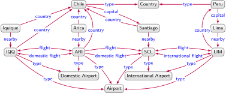
An incomplete directed edge-labelled graph describing flights between airports
An alternative (sometimes complementary) approach is to adopt symbolic learning in order to learn hypotheses in a symbolic (logical) language that “explain” a given set of positive and negative edges. These edges are typically generated from the knowledge graph in an automatic manner (similar to the case of knowledge graph embeddings). The hypotheses then serve as interpretable models that can be used for further deductive reasoning. Given the graph of Figure 5.8, we may, for example, learn the rule ?xflight?y \(\Rightarrow\) ?yflight?x from observing that flight routes tend to be return routes. Alternatively, we might learn a DL axiom stating that airports are either domestic, international, or both: Airport \(\sqsubseteq\) DomesticAirport \(\sqcup\) InternationalAirport. Such rules and axioms can then be used for deductive reasoning, and offer an interpretable model for new knowledge that is entailed/predicted; for example, from the aforementioned rule for return flights, one can interpret why a novel edge SCLflightARI is predicted. This further offers domain experts the opportunity to verify the models – e.g., the rules and axioms – derived by such processes. Finally, rules/axioms are quantified (all flights have a return flight, all airports are domestic or international, etc.), so they can be applied to unseen examples (e.g., with the aforementioned rule, we can derive CDGflightSCL from a new edge SCLflightCDG with the unseen node CDG).
In this section, we discuss two forms of symbolic learning: rule mining, which learns rules from a knowledge graph, and axiom mining, which learns other forms of logical axioms. We refer to Appendix B.6.4 for a more formal treatment of these two tasks.
Rule mining
Rule mining, in the general sense, refers to discovering meaningful patterns in the form of rules from large collections of background knowledge. In the context of knowledge graphs, we assume a set of positive and negative edges as given. Typically positive edges are observed edges (i.e., those given or entailed by a knowledge graph) while negative edges are defined according to a given assumption of completeness (discussed later). The goal of rule mining is to identify new rules that entail a high ratio of positive edges from other positive edges, but entail a low ratio of negative edges from positive edges. The types of rules considered may vary from more simple cases, such as ?xflight?y \(\Rightarrow\) ?yflight?x mentioned previously, to more complex rules, such as ?xcapital?ynearby?ztypeAirport \(\Rightarrow\) ?ztypeInternational Airport, indicating that airports near capitals tend to be international airports; or \(\Rightarrow\) ?xdomestic flight?y, indicating that flights within the same country denote domestic flights (as seen in Section 4.3.1).
Per the international airport example, rules are not assumed to hold in all cases, but rather are associated with measures of how well they conform to the positive and negative edges. In more detail, we call the edges entailed by a rule and the set of positive edges (not including the entailed edge itself), the positive entailments of that rule. The number of entailments that are positive is called the support for the rule, while the ratio of a rules’ entailments that are positive is called the confidence for the rule [198]. As such, support and confidence indicate, respectively, the number and ratio of entailments “confirmed” to be true for the rule, where the goal is to identify rules that have both high support and high confidence. In fact, techniques for rule mining in relational settings have long been explored in the context of Inductive Logic Programming (ILP) [199]. However, knowledge graphs present novel challenges due to the scale of the data and the frequent assumption of incomplete data (OWA), where dedicated techniques have been proposed to address these issues [200].
When dealing with an incomplete knowledge graph, it is not immediately clear how to define negative edges. A common heuristic – also used for knowledge graph embeddings – is to adopt a Partial Completeness Assumption (PCA) [200], which considers the set of positive edges to be those contained in the data graph, and the set of negative examples to be the set of all edges \(x\)\(p\)\(y'\) not in the graph but where there exists a node \(y\) such that \(x\)\(p\)\(y'\) is in the graph. Taking Figure 5.8, an example of a negative edge under PCA would be SCLflightARI (given the presence of SCLflightLIM); conversely, SCLdomestic flightARI is neither positive nor negative. The PCA confidence measure is then the ratio of the support to all entailments in the positive or negative set [200]. For example, the support for the rule ?xdomestic flight?y \(\Rightarrow\) ?ydomestic flight?x is \(2\) (since it entails IQQdomestic flightARI and ARIdomestic flightIQQ in the graph), while the confidence is \(\frac{2}{2} = 1\) (noting that SCLdomestic flightARI, though entailed, is neither positive nor negative, and is thus ignored by the measure). The support for the rule ?xflight?y \(\Rightarrow\) ?yflight?x is analogously 4, while the confidence is \(\frac{4}{5} = 0.8\) (noting that SCLflightARI is negative).
The goal then, is to find rules satisfying given support and confidence thresholds. An influential rule-mining system for graphs is AMIE [200, 201], which adopts the PCA measure of confidence, and builds rules in a top-down fashion [198] starting with rule heads like \(\Rightarrow\) ?xcountry?y. For each rule head of this form (one for each edge label), three types of refinements are considered, each of which adds a new edge to the body of the rule. This new edge takes an edge label from the graph and may otherwise use fresh variables not appearing previously in the rule, existing variables that already appear in the rule, or nodes from the graph. The three refinements may then:
add an edge with one existing variable and one fresh variable; for example, refining the aforementioned rule head might give: ?zflight?x \(\Rightarrow\) ?xcountry?y;
add an edge with an existing variable and a node from the graph; for example, refining the above rule might give: Domestic Airporttype?zflight?x \(\Rightarrow\) ?xcountry?y;
add an edge with two existing variables; for example, refining the above rule might give: \(\Rightarrow\) ?xcountry?y.
These refinements can be combined arbitrarily, which gives rise to a potentially exponential search space, where rules meeting given thresholds for support and confidence are maintained. To improve efficiency, the search space can be pruned; for example, these three refinements always decrease support, so if a rule does not meet the support threshold, there is no need to explore its refinements. Further restrictions are imposed on the types of rules generated. First, only rules up to a certain fixed size are considered. Second, a rule must be closed, meaning that each variable appears in at least two edges of the rule, which ensures that rules are safe, meaning that each variable in the head appears in the body; for example, the rules produced previously by the first and second refinements are neither closed (variable y appears once) nor safe (variable y appears only in the head).33note 33 Safe rules like ?xcapital?ynearby?ztypeAirport \(\Rightarrow\) ?ztypeInternational Airport are not closed as ?x appears only in one edge. Hence the condition that rules are closed is strictly stronger than the condition that they are safe. To ensure closed rules, the third refinement is applied until a rule is closed. For further discussion of possible optimisations based on pruning and indexing, we refer to the paper on AMIE+ [201].
Later works have built on these techniques for mining rules from knowledge graphs. Mohamed H. Gad-Elrab, et al. [202] propose a method to learn non-monotonic rules – rules with negated edges in the body – in order to capture exceptions to base rules; for example, the approach may learn a rule \(\Rightarrow\) ?xcountry?y, indicating that flights are within the same country except when the (departure) airport is international, where the exception is shown dotted and we use \(\neg\) to negate an edge. The RuLES system [203] – which is also capable of learning non-monotonic rules – proposes to mitigate the limitations of the PCA heuristic by extending the confidence measure to consider the plausibility scores of knowledge graph embeddings for entailed edges not appearing in the graph. Where available, explicit statements about the completeness of the knowledge graph (such as expressed in shapes; see Section 3.1.2) can be used in lieu of PCA for identifying negative edges. Along these lines, CARL [204] exploits additional knowledge about the cardinalities of relations to refine the set of negative examples and the confidence measure for candidate rules. Alternatively, where available, ontologies can be used to derive logically-certain negative edges under OWA through, for example, disjointness axioms. The system proposed by d’Amato et al. [205, 206] leverages ontologically-entailed negative edges for determining the confidence of rules generated through an evolutionary algorithm.
While the previous works involve discrete expansions of candidate rules for which a fixed confidence scoring function is applied, another line of research is on a technique called differentiable rule mining [207, 208, 209], which allows end-to-end learning of rules. The core idea is that the joins in rule bodies can be represented as matrix multiplication. More specifically, we can represent the relations of an edge label \(p\) by the adjacency matrix \(\mathbf{A}_p\) (of size \(|V| \times |V|\)) such that the value on the \(i\)th row of the \(j\)th column is \(1\) if there is an edge labelled \(p\) from the \(i\)th entity to the \(j\)th entity; otherwise the value is \(0\). Now we can represent a join in a rule body as matrix multiplication; for example, given ?xdomestic flight?ycountry?z \(\Rightarrow\) ?xcountry?z, we can denote the body by the matrix multiplication \(\mathbf{A}\)df.\(\mathbf{A}\)c., which gives an adjacency matrix representing entailed country edges, where we should expect the \(1\)’s in \(\mathbf{A}\)df.\(\mathbf{A}\)c. to be covered by the head’s adjacency matrix \(\mathbf{A}\)c.. Since we are given adjacency matrices for all edge labels, we are left to learn confidence scores for individual rules, and to learn rules (of varying length) with a threshold confidence. Along these lines, NeuralLP [208] uses an attention mechanism to select a variable-length sequence of edge labels for path-like rules of the form ?xp\(1\)y\(1\)p\(2\)…p\(n\)y\(n\)p\(n+1\)?z \(\Rightarrow\) ?xp?z, for which confidences are likewise learnt. DRUM [209] also learns path-like rules, where, observing that some edge labels are more/less likely to follow others in the rules – for example, flight will not be followed by capital in the graph of Figure 5.2 as the join will be empty – the system uses bidirectional recurrent neural networks (a popular technique for learning over sequential data) to learn sequences of relations for rules, and their confidences. These differentiable rule mining techniques are, however, currently limited to learning path-like rules.
Axiom mining
Aside from rules, more general forms of axioms – expressed in logical languages such as DLs (see Section 4.3.2) – can be mined from a knowledge graph. We can divide these approaches into two categories: those mining specific axioms and more general axioms.
Among systems mining specific types of axioms, disjointness axioms are a popular target; for example, the disjointness axiom DomesticAirport \(\sqcap\) InternationalAirport \(\equiv \bot\) states that the intersection of the two classes is equivalent to the empty class, or in simpler terms, no node can be simultaneously of type Domestic Airport and International Airport. The system proposed by Johanna Völker, et al. [210] extracts disjointness axioms based on (negative) association rule mining [211], which finds pairs of classes where each has many instances in the knowledge graph but there are relatively few (or no) instances of both classes. Gerald Töpper, et al. [212] rather extract disjointness for pairs of classes that have a cosine similarity below a fixed threshold. For computing this cosine similarity, class vectors are computed using a TF–IDF analogy, where the “document” of each class is constructed from all of its instances, and the “terms” of this document are the properties used on the class instances (preserving multiplicities). While the previous two approaches find disjointness constraints between named classes (e.g., city is disjoint with airport), Giuseppe Rizzo, et al. [213] propose an approach that can capture disjointness constraints between class descriptions (e.g., city without an airport nearby is disjoint with city that is the capital of a country). The approach first clusters similar nodes of the knowledge base. Next, a terminological cluster tree is extracted, where each leaf node indicates a cluster extracted previously, and each internal (non-leaf) node is a class definition (e.g., cities) where the left child is either a cluster having all nodes in that class or a sub-class description (e.g., cities without airports) and the right child is either a cluster having no nodes in that class or a disjoint-class description (e.g., non-cities with events). Finally, candidate disjointness axioms are proposed for pairs of class descriptions in the tree that are not entailed to have a subclass relation.
Other systems propose methods to learn more general axioms. A prominent such system is DL-Learner [214], which is based on algorithms for class learning (aka concept learning), whereby given a set of positive nodes and negative nodes, the goal is to find a logical class description that divides the positive and negative sets. For example, given \(\{\)Iquique, Arica\(\}\) as the positive set and \(\{\)Santiago\(\}\) as the negative set, we may learn a (DL) class description \(\exists\)nearby.Airport \(\sqcap \neg(\exists\) capital\(^-.\top)\), denoting entities near to an airport that are not capitals, of which all positive nodes are instances and no negative nodes are instances. Such class descriptions are learnt in an analogous manner to how aforementioned systems like AMIE learn rules, with a refinement operator used to move from more general classes to more specific classes (and vice-versa), a confidence scoring function, and a search strategy. The system further supports learning more general axioms through a scoring function that uses count queries to determine what ratio of expected edges – edges that would be entailed were the axiom true – are indeed found in the graph; for example, to score the axiom \(\exists\)flight\(^{-}\).DomesticAirport \(\sqsubseteq\) InternationalAirport over Figure 5.8, we can use a graph query to count how many nodes have incoming flights from a domestic airport (there are \(3\), and how many nodes have incoming flights from a domestic airport and are international airports (there is \(1\), where the greater the difference between both counts, the weaker the evidence for the axiom.
We provide some abstract formal definitions for the tasks of rule mining and axiom mining over graphs, which we generically call hypothesis mining. First we introduce hypothesis induction: a task that captures a more abstract (ideal) case for hypothesis mining.
Hypothesis induction
The task of hypothesis induction assumes a particular graph entailment relation \(\models_\Phi\) (see Definition 29; hereafter simply \(\models\)). Given background knowledge in the form of a knowledge graph \(G\) (a directed edge-labelled graph, possibly extended with rules or ontologies), a set of positive edges \(E^{+}\) such that \(G\) does not entail any edge in \(E^{+}\) (i.e., for all \(e^{+} \in E^{+}\), \(G \not\models e^{+}\)) and \(E^{+}\) does not contradict \(G\) (i.e., there is a model of \(G \cup E^{+}\)), and a set of negative edges \(E^{-}\) such that \(G\) does not entail any edge in \(E^-\) (i.e., for all \(e^{-} \in E^{-}\), \(G \not\models e^{-}\)), the task is to find a set of hypotheses (i.e., a set of directed edge-labelled graphs) \(\Psi\) such that:
\(G \not\models \psi\) for all \(\psi \in \Psi\) (the background knowledge does not entail any hypothesis);
\(G \cup \Psi^* \models E^{+}\) (the background knowledge and hypotheses entail all positive edges);
for all \(e^{-} \in E^{-}\), \(G \cup \Psi^* \not\models e^{-}\) (the background knowledge and hypotheses do not entail any negative edge);
\(G \cup \Psi^* \cup E^{+}\) has a model (the background knowledge, hypotheses and positive edges taken together do not contain a contradiction);
for all \(e^{+} \in E^{+}\), \(\Psi^* \not\models e^{+}\) (the hypotheses alone do not entail a positive edge).
where by \(\Psi^* \coloneqq \cup_{\psi \in \Psi} \psi\) we denote the union of all graphs in \(\Psi\).
Let us assume ontological entailment \(\models\) with semantic conditions \(\Phi\) as defined in Tables 4.1–4.3. Given the graph of Figure 5.8 as the background knowledge \(G\), along with:
a set of positive edges \(E^{+} = \{ \)SCLflightARI, SCLdomestic flightARI\( \}\), and
a set of negative edges \(E^{-} = \{ \)ARIflightLIM, SCLdomestic flightLIM\( \}\),
then a set of hypotheses \(\Psi = \{ \)flighttypeSymmetric, domestic flighttypeSymmetric\( \}\) would entail all positive edges in \(E^{+}\) and no negative edges in \(E^{-}\) when combined with \(G\).
This task represents a somewhat idealised case. Often there is no set of positive edges distinct from the background knowledge itself. Furthermore, hypotheses not entailing a few positive edges, or entailing a few negative edges, may still be useful. The task of hypothesis mining rather accepts as input the background knowledge \(G\) and a set of negative edges \(E^{-}\) (such that for all \(e^{-} \in E^{-}\), \(G \not\models e^{-}\)), and attempts to score individual hypotheses \(\psi\) (such that \(G \not\models \psi\)) in terms of their ability to “explain” \(G\) while minimising the number of elements of \(E^{-}\) entailed by \(G\) and \(\psi\).
We can now abstractly define the task of hypothesis mining.
Hypothesis mining
Given a knowledge graph \(G\), a set of negative edges \(E^{-}\), a scoring function \(\sigma\), and a threshold \(min_{\sigma}\), the goal of hypothesis mining is to identify a set of hypotheses \(\{ \psi \mid G \not\models \psi\text{ and }\sigma(\psi,G,E^{-}) \geq min_{\sigma} \}\).
There are two main scoring functions used for \(\sigma\) in the literature: support and confidence.
Hypothesis support and confidence
Given a knowledge graph \(G = (V,E,L)\) and a hypothesis \(\psi\), the positive support of \(\psi\) is defined as follows:
\[ \sigma^{+}(\psi,G) \coloneqq |\{ e \in E \mid G' \not\models e \text{ and }G' \cup \psi \models e \}| \]
where \(G'\) denotes \(G\) with the edge \(e\) removed. Further given a set of negative edges \(E^{-}\), the negative support of \(\psi\) is defined as follows:
\[ \sigma^{-}(\psi,G,E^{-}) \coloneqq |\{ e^{-} \in E^{-} \mid G \cup \psi \models e^{-} \}| \]
Finally, the confidence of \(\psi\) is defined as \(\sigma^\pm(\psi,G,E^{-}) \coloneqq \frac{\sigma^{+}(\psi,G)}{\sigma^{+}(\psi,G) + \sigma^{-}(\psi,G,E^{-})}\).
We have yet to define how the set of negative edges are defined, which, in the context of a knowledge graph \(G\), depends on which assumption is applied:
Closed world assumption (CWA): For any (positive) edge \(e\), \(G \not\models e\) if and only if \(G \models \neg e\). Under CWA, any edge \(e\) not entailed by \(G\) can be considered a negative edge.
Open world assumption: For a (positive) edge \(e\), \(G \not\models e\) does not necessarily imply \(G \models \neg e\). Under OWA, the negation of an edge must be entailed by \(G\) for it to be considered negative.
Partial completeness assumption (PCA): If there exists \((s,p,o)\) such that \(G \models (s,p,o)\), then for all \(o'\) such that \(G \not\models (s,p,o')\), it holds that \(G \models \neg(s,p,o')\). Under PCA, if \(G\) entails some outgoing edge(s) labelled \(p\) from a node \(s\), then such edges are assumed to be complete, and any edge \((s,p,o)\) not entailed by \(G\) can be considered a negative edge.
Knowledge graphs are generally incomplete – in fact, one of the main applications of hypothesis mining is to try to improve the completeness of the knowledge graph – and thus it would appear unwise to assume that any edge that is not currently entailed is false/negative. We can thus rule out CWA. Conversely, under OWA, potentially few (or no) negative edges might be entailed by the given ontologies/rules, and thus hypotheses may end up having low negative support despite entailing many edges that do not make sense in practice. Hence the PCA can be adopted as a heuristic to increase the number of negative edges and apply more sensible scoring of hypotheses.
Different implementations of hypothesis mining may consider different logical languages. Rule mining, for example, mines hypotheses expressed either as monotonic rules (with positive edges) or non-monotonic edges (possibly with negated edges). On the other hand, axiom mining considers hypotheses expressed in a logical language such as Description Logics. Particular implementations may, for practical reasons, impose further syntactic restrictions on the hypotheses generated, such as to impose thresholds on their length, on the symbols they use, or on other structural properties (such as “closed rules” in the case of the AMIE rule mining system [200]; see Section 5.4). Systems may further implement different search strategies for hypotheses. Systems such as AMIE [200], RuLES [203], CARL [204], DL-Learner [214], etc., propose discrete mining that recursively generates candidate formulae through refinement/genetic operators that are then scored and checked for threshold criteria, thus navigating a branching search space. On the other hand, systems such as NeuralLP [208] and DRUM [209] apply differentiable mining that allows for learning (path-like) rules and their scores in a more continuous fashion (e.g., using gradient descent). We refer to Section 5.4 for further discussion and examples of such techniques for mining hypotheses.
Creation and Enrichment
In this section, we discuss the principal techniques by which knowledge graphs can be created and subsequently enriched from diverse sources of legacy data that may range from plain text to structured formats (and anything in between). The appropriate methodology to follow when creating a knowledge graph depends on the actors involved, the domain, the envisaged applications, the available data sources, etc. Generally speaking, however, the flexibility of knowledge graphs lends itself to starting with an initial core that can be incrementally enriched from other sources as required (typically following an Agile [215] or “pay-as-you-go” [216] methodology). For our running example, we assume that the tourism board decides to build a knowledge graph from scratch, aiming to initially describe the main tourist attractions – places, events, etc. – in Chile in order to help visiting tourists identify those that most interest them. The board decides to postpone adding further data, like transport routes, reports of crime, etc., for a later date.
Human Collaboration
One approach for creating and enriching knowledge graphs is to solicit direct contributions from human editors. Such editors may be found in-house (e.g., employees of the tourist board), using crowd-sourcing platforms, through feedback mechanisms (e.g., tourists adding comments on attractions), through collaborative-editing platforms (e.g., an attractions wiki open to public edits), etc. Though human involvement incurs high costs [217], some prominent knowledge graphs have been primarily based on direct contributions from human editors [37, 8]. Depending on how the contributions are solicited, however, the approach has a number of key drawbacks, due primarily to human error [218], disagreement [219], bias [220], vandalism [221], etc. Successful collaborative creation further raises challenges concerning licensing, tooling, and culture [218]. Humans are sometimes rather employed to verify and curate additions to a knowledge graph extracted by other means [218] (through, e.g., video games with a purpose [222]), to define high-quality mappings from other sources [223], to define appropriate high-level schema [224, 86], and so forth.
Text Sources
Text corpora – such as sourced from newspapers, books, scientific articles, social media, emails, web crawls, etc. – are an abundant source of rich information [225, 226]. However, extracting such information with high precision and recall for the purposes of creating or enriching a knowledge graph is a non-trivial challenge. To address this, techniques from Natural Language Processing (NLP) [227, 228] and Information Extraction (IE) [229, 230, 106] can be applied. Though processes vary considerably across text extraction frameworks, in Figure 6.1 we illustrate four core tasks for text extraction on a sample sentence. We will discuss these tasks in turn.
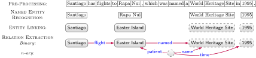
Text extraction example; nodes new to the knowledge graph are shown dashed
Pre-processing
The pre-processing task may involve applying various techniques to the input text, where Figure 6.1 illustrates Tokenisation, which parses the text into atomic terms and symbols. Other pre-processing tasks applied to a text corpus may include: Part-of-Speech (POS) tagging [227, 228] to identify terms representing verbs, nouns, adjectives, etc.; Dependency Parsing, which extracts a grammatical tree structure for a sentence where leaf nodes indicate individual words that together form phrases (e.g., noun phrases, verb phrases) and eventually clauses and sentences [227, 228]; and Word Sense Disambiguation (WSD) [231] to identify the meaning (aka sense) in which a word is used, linking words with a lexicon of senses (e.g., WordNet [232] or BabelNet [233]), where, for instance, the term flights may be linked with the WordNet sense “an instance of travelling by air” rather than “a stairway between one floor and the next”. The appropriate type of pre-processing to apply often depends on the requirements of later tasks in the pipeline.
Named Entity Recognition (NER)
The NER task identifies mentions of named entities in a text [234, 235], typically targetting mentions of people, organisations, locations, and potentially other types [236, 237, 238]. A variety of NER techniques exist, with many modern approaches based on learning frameworks that leverage lexical features (e.g., POS tags, dependency parse trees, etc.) and gazetteers (e.g., lists of common first names, last names, countries, prominent businesses, etc.). Supervised methods [239, 240, 241] require manually labelling all entity mentions in a training corpus, whereas bootstrapping-based approaches [242, 243, 237, 244] rather require a small set of seed examples of entity mentions from which patterns can be learnt and applied to unlabelled text. Distant supervision [236, 245, 238] uses known entities in a knowledge graph as seed examples through which similar entities can be detected. Aside from learning-based frameworks, manually-crafted rules [246, 247] are still sometimes used due to their more controllable and predictable behaviour [248]. The named entities identified by NER may be used to generate new candidate nodes for the knowledge graph (known as emerging entities, shown dashed in Figure 6.1), or may be linked to existing nodes per the Entity Linking task described in the following.
Entity Linking (EL)
The EL task associates mentions of entities in a text with the existing nodes of a target knowledge graph, which may be the nucleus of a knowledge graph under creation, or an external knowledge graph [249]. In Figure 6.1, we assume that the nodes Santiago and Easter Island already exist in the knowledge graph (possibly extracted from other sources). EL may then link the given mentions to these nodes. The EL task presents two main challenges. First, there may be multiple ways to mention the same entity, as in the case of Rapa Nui and Easter Island; if we created a node Rapa Nui to represent that mention, we would split the information available under both mentions across different nodes, where it is thus important for the target knowledge graph to capture the various aliases and multilingual labels by which one can refer to an entity [250]. Secondly, the same mention in different contexts can refer to distinct entities; for instance, Santiago can refer to cities in Chile, Cuba, Spain, among others. The EL task thus considers a disambiguation phase wherein mentions are associated to candidate nodes in the knowledge graph, the candidates are ranked, and the most likely node being mentioned is chosen [249]. Context can be used in this phase; for example, if Easter Island is a likely candidate for the corresponding mention alongside Santiago, we may boost the probability that this mention refers to the Chilean capital as both candidates are located in Chile. Other heuristics for disambiguation consider a prior probability, where for example, Santiago most often refers to the Chilean capital (being, e.g., the largest city with that name); centrality measures on the knowledge graph can be used for such purposes [249].
Relation Extraction (RE)
The RE task extracts relations between entities in the text [251, 252]. The simplest case is that of extracting binary relations in a closed setting wherein a fixed set of relation types are considered. While traditional approaches often used manually-crafted patterns [253], modern approaches rather tend to use learning-based frameworks [254], including supervised methods over manually-labelled examples [255, 251]. Other learning-based approaches again use bootstrapping [243, 256] and distant supervision [257, 258, 259, 260, 261, 262] to forgo the need for manual labelling; the former requires a subset of manually-labelled seed examples, while the latter finds sentences in a large corpus of text mentioning pairs of entities with a known relation/edge, which are used to learn patterns for that relation. Binary RE can also be applied using unsupervised methods in an open setting – often referred to as Open Information Extraction (OIE) [263, 264, 265, 266, 267, 268] – whereby the set of target relations is not pre-defined but rather extracted from text based on, for example, dependency parse trees from which relations are taken.
A variety of RE methods have been proposed to extract \(n\)-ary relations that capture further context for how entities are related. In Figure 6.1, we see how an \(n\)-ary relation captures additional temporal context, denoting when Rapa Nui was named a World Heritage site; in this case, an anonymous node is created to represent the higher-arity relation in the directed-labelled graph. Various methods for \(n\)-ary RE are based on frame semantics [269], which, for a given verb (e.g., “named”), captures the entities involved and how they may be interrelated. Resources such as FrameNet [270] then define frames for words, such as to identify that the semantic frame for “named” includes a speaker (the person naming something), an entity (the thing named) and a name. Optional frame elements are an explanation, a purpose, a place, a time, etc., that may add context to the relation. Other RE methods are rather based on Discourse Representation Theory (DRT) [271], which considers a logical representation of text based on existential events. Under this theory, for example, the naming of Easter Island as a World Heritage Site is considered to be an (existential) event where Easter Island is the patient (the entity affected), leading to the logical (neo-Davidsonian) formula:
Such a formula is analogous to the idea of reification, as discussed previously in Section 3.3.
Finally, while relations extracted in a closed setting are typically mapped directly to a knowledge graph, relations that are extracted in an open setting may need to be aligned with the knowledge graph; for example, if an OIE process extracts a binary relation Santiagohas flights toEaster Island, it may be the case that the knowledge graph does not have other edges labelled has flights to, where alignment may rather map such a relation to the edge SantiagoflightEaster Island assuming flight is used in the knowledge graph. A variety of methods have been applied for such purposes, including mappings [272, 273] and rules [274] for aligning \(n\)-ary relations; distributional and dependency-based similarities [275], association rule mining [276], Markov clustering [277] and linguistic techniques [278] for aligning OIE relations; amongst others.
Joint tasks
Having presented the four main tasks for building knowledge graphs from text, it is important to note that frameworks do not always follow this particular sequence of tasks. A common trend, for example, is to combine interdependent tasks, jointly performing WSD and EL [250], or NER and EL [279, 280], or NER and RE [281, 282], etc., in order to mutually improve the performance of multiple tasks. For further details on extracting knowledge from text we refer to the book by Diana Maynard, et al. [227] and the recent survey by Jose L. Martínez-Rodríguez, et al. [106].
Markup Sources
The Web was founded on interlinking markup documents wherein markers (aka tags) are used to separate elements of the document (typically for formatting purposes). Most documents on the Web use the HyperText Markup Language (HTML). Figure 6.2 presents an example HTML webpage about World Heritage Sites in Chile. Other formats of markup include Wikitext used by Wikipedia, TeX for typesetting, Markdown used by Content Management Systems, etc. One approach for extracting information from markup documents – in order to create and/or enrich a knowledge graph – is to strip the markers (e.g., HTML tags), leaving only plain text upon which the techniques from the previous section can be applied. However, markup can be useful for extraction purposes, where variations of the aforementioned tasks for text extraction have been adapted to exploit such markup [283, 284, 106]. We can divide extraction techniques for markup documents into three main categories: general approaches that work independently of the markup used in a particular format, often based on wrappers that map elements of the document to the output; focussed approaches that target specific forms of markup in a document, most typically web tables (but sometimes also lists, links, etc.); and form-based approaches that extract the data underlying a webpage, per the notion of the Deep Web. These approaches can often benefit from the regularities shared by webpages of a given website, be it due to informal conventions on how information is published across webpages, or due to the re-use of templates to automatically generate content across webpages; for example, intuitively speaking, while the webpage of Figure 6.2 is about Chile, we will likely find pages for other countries following the same structure on the same website.
<html>
<head><title>UNESCO World Heritage Sites</title></head>
<body>
<h1>World Heritage Sites</h1>
<h2>Chile</h2>
<p>Chile has 6 UNESCO World Heritage Sites.</p>
<table border="1">
<tr><th>Place</th><th>Year</th><th>Criteria</th></tr>
<tr><td>Rapa Nui</td><td>1995</td>
<td rowspan="6">Cultural</td></tr>
<tr><td>Churches of Chiloé</td><td>2000</td></tr>
<tr><td>Historical Valparaíso</td><td>2003</td></tr>
<tr><td>Saltpeter Works</td><td>2005</td></tr>
<tr><td>Sewell Mining Town</td><td>2006</td></tr>
<tr><td>Qhapaq Ñan</td><td>2014</td></tr>
</table>
</body>
</html>
UNESCO World Heritage Sites
World Heritage Sites
Chile
Chile has 6 UNESCO World Heritage Sites.
Place
Year
Criteria
Rapa Nui
1995
Cultural
Churches of Chiloé
2000
Historical Valparaíso
2003
Saltpeter Works
2005
Sewell Mining Town
2006
Qhapaq Ñan
2014
Example markup document (HTML) with source-code (left) and formatted document (right)
Wrapper-based extraction
Many general approaches are based on wrappers that locate and extract the useful information directly from the markup document. While the traditional approach was to define such wrappers manually – a task for which a variety of declarative languages and tools have been defined – such approaches are brittle to changes in a websites layout [285]. Hence other approaches allow for (semi-)automatically inducing wrappers [286]. A modern such approach – used to enrich knowledge graphs in systems such as LODIE [287] – is to apply distant supervision, whereby EL is used to identify and link entities in the webpage to nodes in the knowledge graph such that paths in the markup that connect pairs of nodes for known edges can be extracted, ranked, and applied to other examples. Taking Figure 6.2, for example, distant supervision may link Rapa Nui and World Heritage Sites to the nodes Easter Island and World Heritage Site in the knowledge graph using EL, and given the edge Easter IslandnamedWorld Heritage Site in the knowledge graph (extracted per Figure 6.1), identify the candidate path \((x,\)td\([1]^{-} \cdot \) tr\(^{-} \cdot \) table\(^- \cdot \) h1\(,y)\) as reflecting edges of the form \(x\)named\(y\), where \(t[n]\) indicates the \(n\)th child of tag \(t\), \(t^-\) its inverse, and \(t_1 \cdot t_2\) concatenation. Finally, paths with high confidence (e.g., ones “witnessed” by many known edges in the knowledge graph) can then be used to extract novel edges, such as Qhapaq ÑannamedWorld Heritage Site, both on this page and on related pages of the website with similar structure (e.g., for other countries).
Web table extraction
Other approaches target specific types of markup, most commonly web tables, i.e., tables embedded in HTML webpages. However, web tables are designed to enhance human readability, which often conflicts with machine readability. Many web tables are used for layout and page structure (e.g., navigation bars), while those that do contain data may follow different formats such as relational tables, listings, attribute-value tables, matrices, etc. [288, 289]. Hence a first step is to classify tables to find ones appropriate for the given extraction mechanism(s) [289, 290]. Next, web tables may contain column spans, row spans, inner tables, or may be split vertically to improve human aesthetics. Hence a table normalisation phase is required to identify headers, merge split tables, un-nest tables, transpose tables, etc. [291, 288, 289, 292, 293, 294]. Subsequently, approaches may need to identify the protagonist [289, 295] – the main entity that the table describes – which is rather found elsewhere in the webpages; for example, though World Heritage Sites is the protagonist of the table of Figure 6.1, it is not mentioned by the table. Finally, extraction processes can be applied, potentially associating cells with entities [296, 297], columns with types [292, 296, 297], and column pairs with relations [296, 295]. For the purposes of enriching knowledge graphs, more recent approaches again apply distant supervision, first linking table cells to knowledge graph nodes, which are used to generate candidates for type and relation extraction [296, 297, 295]. Statistical distributions can also aid in linking numerical columns [298]. Specialised extraction frameworks have also been designed for tables on specific websites, where prominent knowledge graphs, such as DBpedia [35] and YAGO [299] focus on extraction from info-box tables in Wikipedia.
Deep Web crawling
The Deep Web presents a rich source of information accessible only through searches on web forms, thus requiring Deep Web crawling techniques to access [300]. Systems have been proposed to extract knowledge graphs from Deep Web sources [301, 302, 303]. Approaches typically attempt to generate sensible form inputs – which may be based on a user query or generated from reference knowledge – and then extract data from the generated responses (markup documents) using the aforementioned techniques [301, 302, 303].
Structured Sources
Much of the legacy data available within organisations and on the Web is represented in structured formats, primarily tables – in the form of relational databases, CSV files, etc. – but also tree-structured formats such as JSON, XML etc. Unlike text and markup documents, structured sources can often be mapped to knowledge graphs whereby the structure is (precisely) transformed according to a mapping rather than (imprecisely) extracted. The mapping process involves two steps: 1) create a mapping from the source to a graph, and 2) use the mapping in order to materialise the source data as a graph or to virtualise the source (creating a graph view over the legacy data).
Mapping from tables
Tabular sources of data are prevalent, where, for example, the structured content underlying many organisations, websites, etc., are housed in relational databases. In Figure 6.3 we present an example of a relational database instance that we would like to integrate into our knowledge graph under construction. There are then two approaches for mapping content from tables to knowledge graphs: a direct mapping, and a custom mapping.
Report
crime
claimant
station
date
Pickpocketing
XY12SDA
Viña del Mar
2019-04-12
Assault
AB9123N
Arica
2019-04-12
Pickpocketing
XY12SDA
Rapa Nui
2019-04-12
Fraud
FI92HAS
Arica
2019-04-13
Claimant
id
name
country
XY12SDA
John Smith
U.S.
AB9123N
Joan Dubois
France
XI92HAS
Jorge Hernández
Chile
Example relational database instance with two tables describing crime data
Possible result of applying a direct mapping to the first rows of both tables in Figure 6.3
A direct mapping automatically generates a graph from a table. We present in Figure 6.4 the result of a standard direct mapping [304], which creates an edge xyz for each (non-header, non-empty, non-null) cell of the table, such that x represents the row of the cell, y the column name of the cell, and z the value of the cell. In particular, x typically encodes the values of the primary key for a row (e.g., Claimant.id); otherwise, if no primary key is defined (e.g., per the Report table), x can be an anonymous node or a node based on the row number. The node x and edge label y further encode the name of the table to avoid clashes across tables that have the same column names used with different meanings. For each row x, we may add a type edge based on the name of its table. The value z may be mapped to datatype values in the corresponding graph model based on the source domain (e.g., a value in an SQL column of type Date can be mapped to xsd:date in the RDF data model). If the value is null (or empty), typically the corresponding edge will be omitted.34note 34 One might consider representing nulls with anonymous nodes. However, nulls in SQL can be used to mean that there is no such value, which conflicts with the existential semantics of anonymous nodes in models such as RDF (i.e., blank nodes). With respect to Figure 6.4, we highlight the difference between the nodes Claimant-XY12SDA and XY12SDA, where the former denotes the row (or entity) identified by the latter primary key value. In case of a foreign key between two tables – such as Report.claimant referencing Claimant.id – we can link, for example, to Claimant-XY12SDA rather than XY12SDA, where the former node also has the name and country of the claimant. A direct mapping along these lines has been standardised for mapping relational databases to RDF [304], where Radu Stoica, et al. [305] have recently proposed an analogous direct mapping for property graphs. Another direct mapping has been defined for CSV and other tabular data [306] that further allows for specifying column names, primary/foreign keys, and data types – which are often missing in such data formats – as part of the mapping itself.
Although a direct mapping can be applied automatically on tabular sources of data and preserve the information of the original source – i.e., allowing a deterministic inverse mapping that reconstructs the tabular source from the output graph [307] – in many cases it is desirable to customise a mapping, such as to align edge labels or nodes with a knowledge graph under enrichment, etc. Along these lines, declarative mapping languages allow for manually defining custom mappings from tabular sources to graphs. A standard language along these lines is the RDB2RDF Mapping Language (R2RML) [223], which allows for mapping from individual rows of a table to one or more custom edges, with nodes and edges defined either as constants, as individual cell values, or using templates that concatenate multiple cell values from a row and static substrings into a single term; for example, a template {id}-{country} may produce nodes such as XY12SDA-U.S. from the Claimant table. In case that the desired output edges cannot be defined from a single row, R2RML allows for (SQL) queries to generate tables from which edges can be extracted where, for example, edges such as U.S.crimes2 can be generated by defining the mapping with respect to a query that joins the Report and Claimant tables on claimant=id, grouping by country, and applying a count. A mapping can then be defined on the results table such that the source node denotes the value of country, the edge label is the constant crimes, and the target node is the count value. An analogous standard also exists for mapping CSV and other tabular data to RDF graphs, again allowing keys, column names, and datatypes to be chosen as part of the mapping [308].
Once the mappings have been defined, one option is to use them to materialise graph data following an Extract-Transform-Load (ETL) approach, whereby the tabular data are transformed and explicitly serialised as graph data using the mapping. A second option is to use virtualisation through a Query Rewriting (QR) approach, whereby queries on the graph (using, e.g., SPARQL, Cypher, etc.) are translated to queries over the tabular data (typically using SQL). Comparing these two options, ETL allows the graph data to be used as if they were any other data in the knowledge graph. However, ETL requires updates to the underlying tabular data to be explicitly propagated to the knowledge graph, whereas a QR approach only maintains one copy of data to be updated. The area of Ontology-Based Data Access (OBDA) [309] is then concerned with QR approaches that support ontological entailments as discussed in Section ?. Although most QR approaches only support non-recursive entailments expressible as a single (non-recursive) query, some QR approaches support recursive entailments through rewritings to recursive queries [310].
Mapping from trees
A number of popular data formats are based on trees, including XML and JSON. While one could imagine – leaving aside issues such as the ordering of children in a tree – a trivial direct mapping from trees to graphs by simply creating edges of the form \(x\)child\(y\) for each node \(y\) that is a child of \(x\) in the source tree, such an approach is not typically used, as it represents the literal structure of the source data. Instead, the content of tree-structured data can be more naturally represented as a graph using a custom mapping. Along these lines, the GRDLL standard [311] allows for mapping from XML to (RDF) graphs, while the JSON-LD standard [312] allows for mapping from JSON to (RDF) graphs. In contrast, hybrid query languages such as XSPARQL [156] allow for querying XML and RDF in an integrated fashion, thus supporting both materialisation and virtualisation of graphs over tree-structured sources of legacy data.
Mapping from other knowledge graphs
Another route to construct or enrich knowledge graphs is to leverage existing knowledge graphs as a source. In our scenario, for instance, a large number of points of interest for the Chilean tourist board may be available in existing knowledge graphs such as DBpedia [35], LinkedGeoData [42], Wikidata [37], YAGO [38], BabelNet [233], etc. However, depending on the knowledge graph under construction, not all entities and/or relations may be of interest. A standard option to extract a relevant sub-graph of data is to use SPARQL construct-queries that generate graphs as output [313]. Entity and schema alignment between the knowledge graphs may be further necessary to better integrate (parts of) external knowledge graphs; this may be done using linking tools for graphs [314, 315], based on the use of external identifiers [218], or indeed may be done manually [218]. For instance, Wikidata [37] uses Freebase [36, 218] as a source; Simon Gottschalk, et al. [316] extract an event-centric knowledge graph from Wikidata, DBpedia and YAGO; while Sebastian Neumaier, et al. [313] construct a spatio-temporal knowledge graph from Geonames, Wikidata, and PeriodO [317] (as well as tabular data).
Schema/Ontology Creation
The discussion thus far has focussed on extracting data from external sources in order to create and enrich a knowledge graph. In this section, we discuss some of the principal methods for generating a schema based on external sources of data, including human knowledge. For discussion on extracting a schema from the knowledge graph itself, we refer back to Section 3.1.3. In general, much of the work in this area has focussed on the creation of ontologies using either ontology engineering methodologies, and/or ontology learning. We discuss these two approaches in turn.
Ontology engineering
Ontology engineering refers to the development and application of methodologies for building ontologies, proposing principled processes by which better quality ontologies can be constructed and maintained with less effort. Early methodologies [318, 319, 320] were often based on a waterfall-like process, where requirements and conceptualisation were fixed before starting to implement the ontology in a logical language, using, for example, an ontology engineering tool [321, 224, 322]. However, for situations involving large or ever-evolving ontologies, more iterative and agile ways of building and maintaining ontologies have been proposed.
DILIGENT [323] was an early example of an agile methodology, proposing a complete process for ontology life-cycle management and knowledge evolution, as well as separating local changes (local views on knowledge) from global updates of the core part of the ontology, using a review process to authorise the propagation of changes from the local to the global level. This methodology is similar to how, for instance, the large clinical reference terminology SNOMED CT [324] (also available as an ontology) is maintained and evolved, where the (international) core terminology is maintained based on global requirements, while national or local extensions to SNOMED CT are maintained based on local requirements. A group of authors then decides which national or local extensions to propagate to the core terminology. More modern agile methodologies include eXtreme Design (XD) [325, 326], Modular Ontology Modelling (MOM) [327, 328], Simplified Agile Methodology for Ontology Development (SAMOD) [329], etc. Such methodologies typically include two key elements: ontology requirements and (more recently) ontology design patterns.
Ontology requirements specify the intended task of the resulting ontology – or indeed the knowledge graph itself – based on the ontology as its schema. A common way to express ontology requirements is through Competency Questions (CQ) [330], which are natural language questions illustrating the typical knowledge that one would require the ontology (or the knowledge graph) to provide. Such CQs can then be complemented with additional restrictions, and reasoning requirements, in case that the ontology should also contain restrictions and general axioms for inferring new knowledge or checking data consistency. A common way of testing ontologies (or knowledge graphs based on them) is then to formalise the CQs as queries over some test set of data, and make sure the expected results are entailed [331, 332]. We may, for example, consider the CQ “What are all the events happening in Santiago?”, which can be represented as a graph query Eventtype?eventlocationSantiago. Taking the data graph of Figure 2.1 and the axioms of Figure 3.2, we can check to see if the expected result EID15 is entailed by the ontology and the data, and since it is not, we may consider expanding the axioms to assert that locationtypeTransitive.
Ontology Design Patterns (ODPs) are another common feature of modern methodologies [333, 334], specifying generalisable ontology modelling patterns that can be used as inspiration for modelling similar patterns, as modelling templates [335, 336], or as directly reusable components [337, 338]. Several pattern libraries have been made available online, ranging from carefully curated ones [339, 338] to open and community moderated ones [337]. As an example, in modelling an ontology for our scenario, we may decide to follow the Core Event ontology pattern proposed by Adila Krisnadhi, et al. [340], which specifies a spatio-temporal extent, sub-events, and participants of an event, further suggesting competency questions, formal definitions, etc., to support this pattern.
Ontology learning
The previous methodologies outline methods by which ontologies can be built and maintained manually. Ontology learning, in contrast, can be used to (semi-)automatically extract information from text that is useful for the ontology engineering process [341, 342]. Early methods focussed on extracting terminology from text that may represent the relevant domain’s classes; for example, from a collection of text documents about tourism, a terminology extraction tool – using measures of unithood that determine how cohesive an \(n\)-gram is as a unitary phrase, and termhood that determine how relevant the phrase is to a domain [278] – may identify \(n\)-grams such as “visitor visa”, “World Heritage Site”, “off-peak rate”, etc., as terminology of particular importance to the tourist domain, and that thus may merit inclusion in such an ontology. Axioms may also be extracted from text, where subclass axioms are commonly targetted, based on modifying nouns and adjectives that incrementally specialise concepts (e.g., extracting Visitor Visasubc. ofVisa from the noun phrase “visitor visa” and isolated appearances of “visa” elsewhere), or using Hearst patterns [253] (e.g., extracting Off-Peak Ratesubc. ofDiscount from “many discounts, such as off-peak rates, are available” based on the pattern “X, such as Y”). Textual definitions can also be harvested from large texts to extract hypernym relations and induce a taxonomy from scratch [343]. More recent works aim to extract more expressive axioms from text, including disjointness axioms [210]; and axioms involving the union and intersection of classes, along with existential, universal, and qualified-cardinality restrictions [344]. The results of an ontology learning process can then serve as input to a more general ontology engineering methodology, allowing us to validate the terminological coverage of an ontology, to identify new classes and axioms, etc.
Quality Assessment
Independently of the (kinds of) source(s) from which a knowledge graph is created, data extracted for the initial knowledge graph will usually be incomplete, and will contain duplicate, contradictory or even incorrect statements – especially when taken from multiple sources. After the initial creation and enrichment of a knowledge graph from external sources, a crucial step is thus to assess the quality of the resulting knowledge graph. By quality, we here refer to fitness for purpose. Quality assessment then helps to ascertain for which purposes a knowledge graph can be reliability used.
In the following we discuss quality dimensions that capture aspects of multifaceted data quality which evolves from the traditional domain of databases to the domain of knowledge graphs [345], some of which are general, others of which are more particular to knowledge graphs [346]. While quality dimensions aim to capture qualitative aspects of the data, we also discuss quality metrics that provide ways to measure quantitative aspects of these dimensions. We discuss groupings of dimensions and metrics as inspired by Carlo Batini, et al. [347].
Accuracy
Accuracy refers to the extent to which entities and relations – encoded by nodes and edges in the graph – correctly represent real-life phenomena. Accuracy can be further sub-divided into three dimensions: syntactic accuracy, semantic accuracy, and timeliness.
Syntactic accuracy
Syntactic accuracy is the degree to which the data are accurate with respect to the grammatical rules defined for the domain and/or data model. A prevalent example of syntactic inaccuracies occurs with datatype nodes, which may be incompatible with a defined range or be malformed. For example, assuming that a property start is defined with the range xsd:dateTime, taking a value such as "March 29, 2019, 20:00"^^xsd:string would be incompatible with the defined range, while a value "March 29, 2019, 20:00"^^xsd:dateTime would be malformed (a value such as "2019-11-12T20:00:00"^^xsd:dateTime is rather expected). A corresponding metric for syntactic accuracy is the ratio between the number of incorrect values of a given property and the total number of values for the same property [346]. Such forms of syntactic accuracy can typically be assessed using validation tools [348, 349].
Semantic accuracy
Semantic accuracy is the degree to which data values correctly represent real world phenomena, which may be affected by imprecise extraction results, imprecise entailments, vandalism, etc. For instance, given that the National Congress of Chile is located in Valparaíso, this may give rise to the edge ChilecapitalValparaiso (through entailment, extraction, completion, etc.), which is in fact semantically inaccurate: the Chilean capital is Santiago. Assessing the level of semantic inaccuracies is challenging. While one option is to apply manual verification, an automatic option may be to check the stated relation against several sources [350, 351]. Another option is to rather validate the quality of individual processes used to generate the knowledge graph, based on measures such as precision, possibly with the help of human experts or gold standards [106].
Timeliness
Timeliness is the degree to which the knowledge graph is currently up-to-date with the real world state [352]; in other words, a knowledge graph may be semantically accurate now, but may quickly become inaccurate (outdated) if no procedures are in place to keep it up-to-date in a timely manner. For example, consider a user checking the tourist knowledge graph for flights from one city to another. Suppose that the flight timetable is updated every minute with current flight statuses, but the knowledge graph is only updated every hour. In this case, we see that there is a quality issue regarding timeliness in the knowledge graph. Timeliness can be assessed based on how frequently the knowledge graph is updated with respect to underlying sources [352, 353], which can be done using temporal annotations of changes in the knowledge graph [354, 355], as well as contextual representations that capture the temporal validity of data (see Section 3.3).
Coverage
Coverage refers to avoiding the omission of domain-relevant elements, which otherwise may yield incomplete query results or entailments, biased models, etc.
Completeness
Completeness refers to the degree to which all required information is present in a particular dataset. Completeness comprises the following aspects: (i) schema completeness refers to the degree to which the classes and properties of a schema are represented in the data graph, (ii) property completeness refers to the ratio of missing values for a specific property, (iii) population completeness provides the percentage of all real-world entities of a particular type that are represented in the datasets, and (iv) linkability completeness refers to the degree to which instances in the data set are interlinked. Measuring completeness directly is non-trivial as it requires knowledge of a hypothetical ideal knowledge graph [356] that contains all the elements that the knowledge graph in question should “ideally” represent. Concrete strategies involve comparison with gold standards that provide samples of the ideal knowledge graph (possibly based on completeness statements [356]), or measuring the recall of extraction methods from complete sources [106], and so forth.
Representativeness
Representativeness is a related dimension that, instead of focusing on the ratio of domain-relevant elements that are missing, rather focuses on assessing high-level biases in what is included/excluded from the knowledge graph [357]. As such, this dimension assumes that the knowledge graph is incomplete – i.e., that it is a sample of the ideal knowledge graph – and asks how biased this sample is. Biases may occur in the data, in the schema, or during reasoning [220]. Examples of data biases include geographic biases that under-represent entities/relations from certain parts of the world [220], linguistic biases that under-represent multilingual resources (e.g., labels and descriptions) for certain languages [358], social biases that under-represent people of particular genders or races [359], and so forth. In contrast, schema biases may result from high-level definitions extracted from biased data [220], semantic definitions that do not cover uncommon cases, etc. Unrecognised biases may lead to adverse effects; for example, if our tourism knowledge graph has a geographic bias towards events and attractions close to Santiago city – due perhaps to the sources used for creation, the employment of curators from the city, etc. – then this may lead to tourism in and around Santiago being disproportionally promoted (potentially compounding future biases). Measures of representativeness involve comparison of known statistical distributions with those of the knowledge graph, for example, comparing geolocated entities with known population densities [220], linguistic distributions with known distributions of speakers [358], etc. Another option is to compare the knowledge graph with general statistical laws, where Arnaud Soulet, et al. [360] use (non-)conformance with Benford’s law35note 35 Benford’s law states that the leading significant digit in many collections of numbers is more likely to be small. to measure representativeness in knowledge graphs.
Coherency
Coherency refers to how well the knowledge graph conforms to – or is coherent with – the formal semantics and constraints defined at the schema-level.
Consistency
Consistency means that a knowledge graph is free of (logical/formal) contradictions with respect to the particular logical entailment considered. For example, in the ontology of our knowledge graph, we may define that flightrangeAirportdisj. c.City, which when combined with the edges AricaflightSantiagotypeCity, gives rise to an inconsistency, entailing that Santiago is a member of the disjoint classes City and Airport. More generally, any semantic feature in Tables 4.1–4.3 with a “not” condition can give rise to inconsistencies if the negated condition is entailed. A measure of consistency can be the number of inconsistencies found in a knowledge graph, possibly sub-divided into the number of such inconsistencies identified by each semantic feature [71].
Validity
Validity means that the knowledge graph is free of constraint violations, such as captured by shape expressions [90] (see Section 3.1.2. We may, for example, specify a shape City whose target nodes have at most one country. Then, given the edges ChilecountrySantiagocountryCuba, and assuming that Santiago becomes a target of City, we have a constraint violation. Conversely, even if we defined analogous cardinality restrictions in an ontology, this would not necessarily cause an inconsistency since, without UNA, we would first infer that Chile and Cuba refer to the same entity. A straightforward measure of validity is to count the number of violations per constraint.
Succinctness
Succinctness refers to the inclusion only of relevant content (avoiding “information overload”) that is represented in a concise and intelligible manner.
Conciseness
Conciseness refers to avoiding the inclusion of schema and data elements that are irrelevant to the domain. Pablo N. Mendes, et al. [361] distinguish intensional conciseness (schema level), which refers to the case when the data does not contain redundant schema elements (properties, classes, shapes, etc.), and extensional conciseness (data level), when the data does not contain redundant entities and relations. For example, including events in Santiago de Cuba in our knowledge graph dedicated to tourism in Chile may affect the extensional conciseness of the knowledge graph, potentially returning irrelevant results for the given domain. In general, conciseness can be measured in terms of the ratio of properties, classes, shapes, entities, relations, etc., of relevance to the domain, which may in turn require a gold standard, or techniques to assess domain-relevance.
Representational-conciseness
Representational-consieness refers to the extent to which content is compactly represented in the knowledge graph, which may again be intensional or extensional [346]. For example, having two properties flight and flies to serving the same purpose would negatively affect the intensional form of representational conciseness, while having two nodes Santiago and Santiago de Chile representing the capital of Chile (with neither linked to the other) would affect the extensional form of representational conciseness. Another example of representational conciseness is the unnecessary use of complex modelling constructs, such as using reification unnecessarily, or using linked lists when the order of elements is not important [362]. Though representational conciseness is challenging to assess, measures such as the number of redundant nodes can be used [348].
Understandability
Understandability refers to the ease with which data can be interpreted without ambiguity by human users, which involves – at least – the provision of human-readable labels and descriptions (preferably in different languages [358]) that allow them to understand what is being spoken about [362]. Referring back to Figure 2.1, though the nodes EID15 and EID16 are used to ensure unique identifiers for events, they should also be associated with labels such as Ñam and Food Truck. Ideally the human readable information is sufficient to disambiguate a particular node, such as associating a description "Santiago, the capital of Chile"@en with Santiago to disambiguate the city from synonymous ones. Measures of understandability may include the ratio of nodes with human-readable labels and descriptions, the uniqueness of such labels and descriptions, the languages supported, etc.
Other Quality Dimensions
We have discussed some key quality dimensions that have been discussed for – and apply generally to – knowledge graphs. Further dimensions may be pertinent in the context of specific domains, specific applications, or specific graph data models. For further details, we refer to the survey by Amrapali Zaveri, et al. [346] and to the book by Carlo Batini, et al. [347].
Refinement
Beyond assessing the quality of a knowledge graph, there exist techniques to refine the knowledge graph, in particular to (semi-)automatically complete and correct the knowledge graph [19], aka knowledge graph completion and knowledge graph correction, respectively. As distinguished from the creation and enrichment tasks outlined in Section ?, refinement typically does not involve applying extraction or mapping techniques over external sources in order to ingest their content into the local knowledge graph. Instead, refinement typically targets improvement of the local knowledge graph as given (but potentially using external sources to verify local content [19]).
Completion
Knowledge graphs are characterised by incompleteness [363]. As such, knowledge graph completion aims at filling in the missing edges (aka missing links) of a knowledge graph, i.e., edges that are deemed correct but are neither given nor entailed by the knowledge graph. This task is often addressed with link prediction techniques proposed in the area of Statistical Relational Learning [364], which predict the existence – or sometimes more generally, predict the probability of correctness – of missing edges. For instance, one might predict that the edge Moon ValleybusSan Pedro is a probable missing edge for the graph of Figure 5.2, given that most bus routes observed are return services (i.e., bus is typically symmetric). Link prediction may target three settings: general links involving edges with arbitrary labels, e.g., bus, flight, type, etc.; type links involving edges with label type, indicating the type of an entity; and identity links involving edges with label same as, indicating that two nodes refer to the same entity (cf. Section 3.2.2). While type and identity links can be addressed using general link prediction techniques, the particular semantics of type and identity links can be addressed with custom techniques. (The related task of generating links across knowledge graphs – referred to as link discovery [365] – will be discussed later in Section 9.1.)
General link prediction
Link prediction, in the general case, is often addressed with inductive techniques as discussed in Section ?, and in particular, knowledge graph embeddings and rule/axiom mining. For example, given Figure 5.2, using knowledge graph embeddings, we may detect that given an edge of the form \(x\)bus\(y\), a (missing) edge \(y\)bus\(x\) has high plausibility, while using symbol-based approaches, we may learn the high-level rule ?xbus?y \(\Rightarrow\) ?ybus?x. Either such approach would help us to predict the missing link Moon ValleybusSan Pedro.
Type-link prediction
Type links are of particular importance to a knowledge graph, where dedicated techniques can be leveraged taking into account the specific semantics of such links. In the case of type prediction, there is only one edge label (type) and typically fewer distinct values (classes) than in other cases, such that the task can be reduced to a traditional classification task [19], training models to identify each semantic class based on features such as outgoing and/or incoming edge labels on their instances in the knowledge graph [366, 367]. For example, assume that in Figure 5.2 we also know that Arica, Calama, Puerto Montt, Punta Arenas and Santiago are of typeCity. We may then predict that Iquique and Easter Island are also of typeCity based on the presence of edges labelled flight to/from these nodes, which (we assume) are learnt to be a good feature for prediction of that class (the former prediction is correct, while the latter is incorrect). Graph neural networks (see Section 5.3) can also be used for node classification/type prediction.
Identity-link prediction
Predicting identity links involves searching for nodes that refer to the same entity; this is analogous to the task of entity matching (aka record linkage, deduplication, etc.) considered in more general data integration settings [368]. Such techniques are generally based on two types of matchers: value matchers determine how similar the values of two entities on a given property are, which may involve similarity metrics on strings, numbers, dates, etc.; while context matchers consider the similarity of entities based on various nodes and edges [368]. An illustrative example is given in Figure 8.1, where value matchers will compute similarity between values such as 7400 and 7500, while context matchers will compute similarity between Easter Island and Rapa Ñui based on their surrounding information, such as their having similar latitudes, longitudes, populations, and the same seat (by way of comparison, a value matcher on this pair of nodes would measure string similarity between “Easter Island” and “Rapa Ñui”).
Identity linking example, where Rapa Ñui and Easter Island refer to the same island
A major challenge in this setting is efficiency, where a pairwise matching would require \(O(n^2)\) comparisons for \(n\) the number of nodes. To address this issue, blocking can be used to group similar entities into (possibly overlapping, possibly disjoint) “blocks” based on similarity-preserving keys, with matching performed within each block [369, 368, 370]; for example, if matching places based on latitude/longitude, blocks may represent geographic regions. An alternative to discrete blocking is to use windowing over entities in a similarity-preserving ordering [370], or to consider searching for similar entities within multi-dimensional spaces (e.g., spacetime [371], spaces with Minkowski distances [372], orthodromic spaces [373], etc. [374]). The results can either be pairs of nodes with a computed confidence of them referring to the same entity, or crisp identity links extracted based on a fixed threshold, binary classification, etc. [368]. For confident identity links, the nodes’ edges may then be consolidated [375]; for example, we may select Easter Island as the canonical node and merge the edges of Rapa Ñui onto it, enabling us to find, e.g., World Heritage Sites in the Pacific Ocean from Figure 8.1 based on the (consolidated) sub-graph World Heritage SitenamedEaster IslandoceanPacific.
Correction
As opposed to completion – which finds new edges in a knowledge graph – correction identifies and removes existing incorrect edges in the knowledge graph. We here divide the principal approaches for knowledge graph correction into two main lines: fact validation, which assigns a plausibility score to a given edge, typically in reference to external sources; and inconsistency repairs, which aim to resolve inconsistencies found in the knowledge graph through ontological axioms.
Fact validation
The task of fact validation (aka fact checking) [376, 377, 378, 379, 351, 380, 381, 175, 58] involves assigning plausibility or veracity scores to facts/edges, typically between \(0\) and \(1\). An ideal fact-checking function assumes a hypothetical reference universe (an ideal knowledge graph) and would return \(1\) for the fact Santa LucíacitySantiago (being true) while returning \(0\) for SotomayorcitySantiago (being false). There is a clear relation between fact validation and link prediction – with both relying on assessing the plausibility of edges/facts/links – and indeed the same numeric- and symbol-based techniques can be applied for both cases. However, fact validation often considers online assessment of edges given as input, whereas link prediction is often an offline task that generates novel candidate edges to be assessed from the knowledge graph. Furthermore, works on fact validation are characterised by their consideration of external reference sources, which may be unstructured sources [376, 377, 382, 378] or structured sources [379, 380, 381, 175, 58].
Approaches based on unstructured sources assume that they are given a verbalisation function – using, for example, rule-based approaches [383, 384], encoder–decoder architectures [385], etc. – that is able to translate edges into natural language. Thereafter, approaches for computing the plausibility of facts in natural language – called fact finders [386, 387] – can be directly employed. Many fact finding algorithms construct an \(n\)-partite (often bipartite) graph whose nodes are facts and sources, where a source is connected to a fact if the source “evidences” the fact, i.e., if it contains a text snippet that matches – with sufficient confidence – the verbalisation of the input edge. Two mutually-dependent scores, namely the trustworthiness of sources and the plausibility of facts, are then calculated based on this graph, where fact finders differ on how they compute these scores [387]. Here we mention three scores proposed by Jeff Pasternack, et al. [386]
Sums [386] adapts the HITS algorithm [388] by defining sources as hubs (with 0 authority score) and facts as authorities (with 0 hub score).
Average Log [386] extends HITS with a normalisation factor that prevents a single source from receiving a high trustworthiness score by evidencing many facts (that may be false).
Investment [386] lets the scores of facts grow with a non-linear function based on “investments” coming from the connected sources. The score a source receives from a fact is based on the individual facts in this particular source compared to the other connected sources.
Jeff Pasternack, et al. [387] then show that these three algorithms can be generalised into a single multi-layered graph-based framework within which (1) a source can support a fact with a weight expressing uncertainty, (2) similar facts can support each other, and (3) sources can be grouped together leading to an implicit support between sources of the same group. Other approaches for fact checking of knowledge graphs later extended this framework [389, 382]. Alternative approaches based on classifiers have also emerged, where commonly-used features include trust scores for information sources, co-occurrences of facts in sources, and so forth [376, 377].
Approaches for fact validation based on structured data typically assume external knowledge graphs as reference sources and are based on finding paths that evidence the input edge being validated. Unsupervised approaches search for undirected [380, 390] or directed [379] paths up to a given threshold length that evidence the input edge. The relatedness between input edges and paths is computed using a mutual information function, such as normalized pointwise mutual information [391]. Supervised approaches rather extract features for input edges from external knowledge graphs [65, 392, 393] and use these features to train a classification model to label the edges as true or false. An important set of features are metapaths, which encode sequences of predicates that correlate positively with the edge label of the input edge. Amongst such works, PredPath [381] automatically extracts metapaths based on type information. Several approaches rather encode the reference nodes and edges using graph embeddings (see Section 5.2), which are then used to estimate the plausibility of the input edge being validated.
Inconsistency repairs
Ontologies can contain axioms – such as disjointness – that lead to inconsistencies. While such axioms can be provided by experts, they can can also be derived through symbolic learning, as discussed in Section 5.4. Such axioms can then be used to detect inconsistencies. With respect to correcting a knowledge graph, however, detecting inconsistencies is not enough: techniques are also required to repair such inconsistencies, which itself is not a trivial task. In the simplest case, we may have an instance of two disjoint classes, such as that Santiago is of type City and Airport, which are stated or found to be disjoint. To repair the inconsistency, it would be preferable to remove only the “incorrect” class, but which should we remove? This is not a trivial question, particularly if we consider that one edge can be involved in many inconsistencies, and one inconsistency can involve many edges. The issue of computing repairs becomes more complex when entailment is considered, where we not only need to remove the stated type, but also all of the ways in which it might be entailed; for example, removing the edge SantiagotypeAirport is insufficient if we further have an edge AricaflightSantiago combined with an axiom flightrangeAirport. Gerald Töpper, et al. [212] suggest potential repairs for such violations – remove a domain/range constraint, remove a disjointness constraint, remove a type edge, remove an edge with a domain/range constraint – where one is chosen manually. In contrast, Piero A. Bonatti, et al. [71] propose an automated method to repair inconsistencies based on minimal hitting sets [394], where each set is a minimal explanation for an inconsistency. The edges to remove are chosen based on scores of the trustworthiness of their sources and how many minimal hitting sets they are either elements of or help to entail an element of, where the knowledge graph is revised to avoid re-entailment of the removed edges. Rather than repairing the data, another option is to evaluate queries under inconsistency-aware semantics, such as returning consistent answers valid under every possible repair [395].
Other Refinement Tasks
In comparison to the quality clusters discussed in Section ?, the refinement methods discussed here address particular aspects of the accuracy, coverage, and coherency aspects. Beyond these, one could conceive of further refinement methods to address further quality issues of knowledge graphs, such as succinctness. In general, however, the refinement tasks of knowledge graph completion and knowledge graph correction have received the majority of attention until now. For further details on knowledge graph refinement, we refer to the survey by Heiko Paulheim [19].
Publication
While it may not be desirable to publish, for example, enterprise knowledge graphs that offer a competitive advantage to a company [6], it may be desirable – or even required – to publish other knowledge graphs, such as those produced by volunteers [37, 396, 35], by publicly-funded research [47, 397, 398], by governmental organisations [40, 41], etc. Publishing refers to making the knowledge graph (or part thereof) accessible to the public, often over the Web. Knowledge graphs published as open data are then called open knowledge graphs (discussed in Section 10.1).
In the following, we first discuss two sets of principles that have been proposed to guide the publication of data on the Web. We next discuss access protocols that constitute the interfaces by which the public can interact with the content of a knowledge graph. Finally, we consider techniques to restrict the access or usage of (parts of) a knowledge graph, as appropriate.
Best Practices
We now discuss two key sets of principles for publishing data, namely the FAIR Principles proposed by Mark D. Wilkinson, et al. [399], and the Linked Data Principles proposed by Tim Berners-Lee [102].
FAIR Principles
The FAIR Principles were originally proposed in the context of publishing scientific data [399] – particularly motivated by maximising the impact of publicly-funded research – but the principles generally apply to other situations where data are to be published in a manner that facilitates their re-use by external agents, with particular emphasis on machine-readability.
FAIR itself is an acronym for four foundational principles, each with particular goals [399], that may apply to data, metadata, or both – the latter being denoted (meta)data.36note 36 Metadata are data about data. The distinction is often important in observational sciences, where in astronomy, for example, data may include raw image data, while metadata may include the celestial coordinates and time of the image. We now describe the FAIR principles (slightly rephrasing the original wording in some cases for brevity [399]).
Findability refers to the ease with which external agents who might benefit from the dataset can initially locate the dataset. Four sub-goals should be met:
F1: (meta)data are assigned a globally unique and persistent identifier.
F2: data are described with rich metadata (see R1).
F3: metadata clearly and explicitly include the identifier of the data they describe.
F4: (meta)data are registered or indexed in a searchable resource.
Accessibility refers to the ease with which external agents (once they have located the dataset) can access the dataset. Two goals are defined, the first with two sub-goals:
A1: (meta)data are retrievable by their identifier using a standard protocol.
A1.1: the protocol is open, free, and universally implementable.
A1.2: the protocol allows for authentication and authorisation, where necessary.
A2. metadata are accessible, even when the data are no longer available.
Interoperability refers to the ease with which the dataset can be exploited (in conjunction with other datasets) using standard tools. Three goals are defined:
I1: (meta)data use an accessible, shared, and general knowledge representation formalism.
I2: (meta)data use vocabularies that follow FAIR principles.
I3: (meta)data include qualified references to other (meta)data.
Reusability refers to the ease with which the dataset can be re-used in conjunction with other datasets. One goal is defined (with three sub-goals):
R1: meta(data) are richly described with a plurality of accurate and relevant attributes.
R1.1. (meta)data are released with a clear and accessible data usage license.
R1.2. (meta)data are associated with detailed provenance.
R1.3. (meta)data meet domain-relevant community standards.
In the context of knowledge graphs, a variety of vocabularies, tools, and services have been proposed that both directly and indirectly help to satisfy the FAIR principles. In terms of Findability, as discussed in Section ?, IRIs are built into the RDF model, providing a general schema for global identifiers. In addition, resources such as the Vocabulary of Interlinked Datasets (VoID) [400] allow for representing meta-data about graphs, while services such as DataHub [401] provide a central repository of such dataset descriptions. Access protocols that enable Accessibility will be discussed in Section ?, while mechanisms for authorisation will be discussed in Section 9.3. With respect to Interoperability, as discussed in Section ?, ontologies serve as a general knowledge representation formalism, and can in turn be used to describe vocabularies that follow FAIR principles. Finally, regarding Reusability, licensing will be discussed in Section 9.3, while the PROV Data Model [113] discussed in Section ? allows for capturing detailed provenance.
A number of knowledge graphs have been published using FAIR principles, where Mark D. Wilkinson, et al. [399] explicitly mention Open PHACTS [397], a data integration platform for drug discovery, and UniProt [398], a large collection of protein sequence and annotation data, as conforming to FAIR principles. Both datasets offer graph views of their content through the RDF data model.
Linked Data Principles
Mark D. Wilkinson, et al. [399] state that FAIR Principles “precede implementation choices”, meaning that the principles do not cover how they can or should be achieved. Preceding the FAIR Principles by almost a decade are the Linked Data Principles, proposed by Tim Berners-Lee [102], which provide a technical basis for one possible way in which these FAIR Principles can be achieved. Specifically the Linked Data Principles are as follows:
Use IRIs as names for things.
Use HTTP IRIs so those names can be looked up.
When a HTTP IRI is looked up, provide useful content about the entity that the IRI names using standard data formats.
Include links to the IRIs of related entities in the content returned.
These principles were proposed in a Semantic Web setting, where for principle (3), the standards based on RDF (including RDFS, OWL, etc.) are currently recommended for use, particularly because they allow for naming entities using HTTP IRIs, which further paves the way for satisfying all four principles. As such, these principles outline a way in which (RDF) graph-structured data can be published on the Web such that these graphs are interlinked to form what Tim Berners-Lee [102] calls a “Web of Data”, whose goal is to increase automation on the Web by making content available not only in (HTML) documents intended for human consumption, but also as (RDF) structured data that machines can locate, retrieve, combine, validate, reason over, query over, etc., towards solving tasks automatically. Conceptually, the Web of Data is then composed of graphs of data published on individual web-pages, where one can click on a node or edge-label – or more precisely perform a HTTP lookup on an IRI of the graph – to be transported to another graph elsewhere on the Web with relevant content on that node or edge-label, and so on recursively.
In Figure 9.1, we show a simple example with two Linked Data documents published on the Web, with each containing an RDF graph. As discussed in Section 3.2, terms such as clv:Concert, wd:Q142701, rdfs:label, etc., are abbreviations for IRIs, where, for example, wd:Q142701 expands to http://www.wikidata.org/entity/Q142701. Prefixes beginning with cl are fictitious prefixes we assume to have been created by the Chilean tourist board. The IRIs prefixed with \(\hookrightarrow\) indicate the document returned if the node is looked up. The leftmost document is published by the tourist board and describes Lollapalooza 2018 (identified by the node cle:LP2018), which links to the headlining act Pearl Jam (wd:Q142701) described by an external knowledge graph, namely Wikidata. By looking up the node wd:Q142701 in the leftmost graph, the IRI dereferences (i.e., returns via HTTP) the document with the RDF graph on the right describing that entity in more detail. From the rightmost document, the node wd:Q221535 can be looked up, in turn, to find a graph about Eddie Vedder (not shown in the example). The IRIs for entities and documents are distinguished to ensure that we do not confuse data about the entity and the document; for example, while wd:Q221535 refers to Eddie Vedder, the IRI wdd:Q221535 refers to the document about Eddie Vedder; if we were to assign a last-modified date to the document, we should use wdd:Q221535 not wd:Q221535. In Figure 9.1, we can further observe that edge labels (which are also IRIs) and nodes representing classes (e.g., clv:Concert) can also be dereferenced, typically returning semantic definitions of the respective terms.
Two example Linked Data documents from two websites, each containing an RDF graph, where wd:Q142701 refers to Pearl Jam in Wikidata while wdd:Q142701 to the RDF graph about Pearl Jam, and where wd:Q221535 refers to Eddie Vedder while wdd:Q221535 refers to the RDF graph about Eddie Vedder; the edge-label wdt:571 refers to “inception” in Wikidata, while wdt:527 refers to “has part”
A key challenge is posed by the fourth principle – include links to related entities – as illustrated in Figure 9.1, where wd:Q221535 in the leftmost graph constitutes a link to related content about Pearl Jam in an external knowledge graph. Specifically, the link discovery task considers adding such links from one knowledge graph to another, which may involve inclusion of IRIs that dereference to external graphs (per Figure 9.1), or links with special semantics such as identity links. In comparison with the link prediction task discussed in Section 8.1, which is used to complete links within a knowledge graph, link discovery aims to discover links across knowledge graphs, which involves unique aspects: first, link discovery typically considers disjoint sets of source (local) nodes and target (remote) nodes; second, the knowledge graphs may often use different vocabularies; third, while in link prediction there already exist local examples of the links to predict, in link discovery, there are often no existing links between knowledge graphs to learn from. A common technique is to define manually-crafted linkage rules (aka link specifications) that apply heuristics for defining links that potentially incorporate similarity measures [315, 314]. Link discovery is greatly expedited by the provision of standard identifier schemes within knowledge graphs, such as ISBNs for books, alpha-2 and alpha-3 codes for countries (e.g., cl, clp), or even links to common knowledge graphs such as DBpedia [35] or Wikidata [37] (that themselves include standard identifiers). We refer to the survey on link discovery by Markus Nentwig, et al. [365] for more details.
Further guidelines have been proposed that provide finer-grained recommendations for publishing Linked Data, relating to how best to implement dereferencing, what kinds of links to include, how to publish and interlink vocabularies, amongst other considerations [103, 402]. We refer to the book by Tom Heath, et al. [103] for more discussion on how to publish Linked Data on the Web.
Access Protocols
Publishing involves allowing the public to interact with the knowledge graph, which implies the provision of access protocols that define the requests that agents can make and the response that they can expect as a result. Per the Accessibility principle of FAIR (specifically A1.1), this protocol should be open, free, and universally implementable. In the context of knowledge graphs, as shown in Figure 9.2, there are a number of access protocols to choose from, varying from simple protocols that allow users to simply download all content, towards protocols that accept and evaluate increasingly complex requests. While simpler protocols require less computation on the server that publishes the data, more complex protocols allow agents to request more specific data, thus reducing bandwidth. A knowledge graph may also offer a variety of access protocols catering to different agents with different requirements [403]. We now discuss such access protocols.
Access protocols for knowledge graphs, from simple protocols (left) to more complex protocols (right)
Dumps
A dump is a file or collection of files containing the content of the knowledge graph available for download. The request in this case is for the file(s) and the response is the content of the file(s). In order to publish dumps, first of all, concrete – and ideally standard – syntaxes are required to serialise the graph. While for RDF graphs there are various standard syntaxes available based on XML [404], JSON [312], custom syntaxes [405], and more besides, currently there are only non-standard syntaxes available for property graphs [406]. Second, to reduce bandwidth, compression methods can be applied. While standard compression such as GZIP or BZip2 can be straightforwardly applied on any file, custom compression methods have been proposed for graphs that not only offer better compression ratios than these standard methods, but also offer additional functionalities, such as compact indexes for performing efficient lookups once the file is downloaded [407]. Finally, to further reduce bandwidth, when the knowledge graph is updated, “diffs” can be computed and published to obviate the need for agents to download all data from scratch (see [408, 409, 410]). Still, however, dumps are only suited to certain use-cases, in particular for agents that wish to maintain a full local copy of a knowledge graph. If an agent were rather only interested in, for example, all food festivals in Santiago, downloading the entire dump would require transferring and processing a lot of irrelevant data.
Node lookups
Protocols for performing node lookups accept a node (id) request (e.g., cle:LP2018 in Figure 9.1) and return a (sub-)graph describing that node (e.g., the document cld:LP2018). Such a protocol is the basis for the Linked Data principles outlined previously, where node lookups are implemented through HTTP dereferencing, which further allows nodes in remote graphs to be referenced from across the Web. Although there are varying definitions on what content should be returned for a node [411], a common convention is to return a sub-graph containing either all outgoing edges for that node or all incident edges (both outgoing and incoming) for that node [362]. Though simple, mechanisms for answering graph patterns can be implemented on top of a node lookup interface by traversing from node to node according to the particular graph pattern [412]; for example, to find all food festivals in Santiago – represented by the graph pattern Food Festivaltype?fflocationSantiago – we may perform a node lookup for Santiago, subsequently performing a node lookup for each node connected by a location edge to Santiago, returning those nodes declared to be of type Food Festival. However, such an approach may not be feasible if no starting node is declared (e.g., if all nodes are variables), if the node lookup service does not return incoming edges, etc. Furthermore, the client agent may need to request more data than necessary, where the document returned for Santiago may return a lot of irrelevant data, and where nodes with a location in Santiago that do not represent instances of Food Festival still need to be looked up to check their type. On the plus side, node lookups are relatively inexpensive for servers to support.
Edge patterns
Edge patterns – also known as triple patterns in the case of directed, edge-labelled graphs – are singleton graph patterns, i.e., graph patterns with a single edge. Examples of edge patterns are ?fftypeFood Festival or ?fflocationSantiago, etc., where any term can be a variable or a constant. A protocol for edge patterns accepts such a pattern and returns all solutions for the pattern. Edge patterns provide more flexibility than node lookups, where graph patterns are more readily decomposed into edge patterns than node lookups. With respect to the agent interested in food festivals in Santiago, they can first, for example, request solutions for the edge pattern ?fflocationSantiago and locally join/intersect these solutions with those of ?fftypeFood Festival. Given that some edge patterns (e.g., ?x?y?z) can return many solutions, protocols for edge patterns may offer additional practical features such as iteration or pagination over results [413]. Much like node lookups, the server cost of responding to a request is relatively low and easy to predict. However, the server may often need to transfer irrelevant intermediate results to the client, which in the previous example may involve returning nodes located in Santiago that are not food festivals. This issue is further aggravated if the client does not have access to statistics about the knowledge graph in order to plan how to best perform the join; for example, if there are relatively few food festivals but many things located in Santiago, rather than intersecting the solutions of the two aforementioned edge patterns, it should be more efficient to send a request for each food festival to see if it is in Santiago, but deciding this requires statistics about the knowledge graph. Extensions to the edge-pattern protocol have thus been proposed to allow for more efficient joins [414], such as allowing batches of solutions to be sent alongside the edge pattern, returning only solutions compatible with the solutions in the request [415] (e.g., sending a batch of solutions for ?fftypeFood Festival to join with the solutions for the request ?fflocationSantiago).
(Complex) graph patterns
Another alternative is to let client agents make requests based on (complex) graph patterns (see Section 2.2), with the server returning (only) the final solutions. In our running example, this involves the client issuing a request for Food Festivaltype?fflocationSantiago and directly receiving the relevant results. Compared with the previous protocols, this protocol is much more efficient in terms of bandwidth: it allows clients to make more specific requests and the server to return more specific responses. However, this reduction in bandwidth use comes at the cost of the server having to evaluate much more complex requests, where, furthermore, the costs of a single request are much more difficult to anticipate. While a variety of optimised engines exist for evaluating (complex) graph patterns (e.g., [416, 67, 417] amongst many others), the problem of evaluating such queries is known to be intractable [23]. Perhaps for this reason, public services offering such a protocol (most often supporting SPARQL queries [78]) have been found to often exhibit downtimes, timeouts, partial results, slow performance, etc. [418]. Even considering such issues, however, popular services continue to receive – and successfully evaluate – millions of requests/queries per day [419, 420], with difficult (worst-case) instances being rare in practice [421].
Other protocols
While Figure 9.2 makes explicit reference to some of the most commonly-encountered access protocols found for knowledge graphs in practice, one may of course imagine other protocols lying almost anywhere on the spectrum from more simple to more complex interfaces. To the right of (Complex) Graph Patterns, one could consider supporting even more complex requests, such as queries with entailments [422], queries that allow recursion [157], federated queries that can join results from remote services [423], or even (hypothetically) supporting Turing-complete requests that allow running arbitrary procedural code on a knowledge graph. As mentioned at the outset, a server may also choose to support multiple, complementary protocols [403].
Usage Control
Considering our hypothetical tourism knowledge graph, at first glance, one might assume that the knowledge required to deliver the envisaged services is public and thus can be used both by the tourism board and the tourists. On closer inspection, however, we may see the need for usage control in various forms:
both the tourist board and its partners should associate an appropriate license with knowledge that they contribute to the knowledge graph, such that the terms of use are clear to all parties;
a tourist might opt to install an app on their mobile phone that could be used to recommend tourist attractions based on their location, bringing with it potential privacy concerns;
the tourist board may be required to report criminal activities to the police services and thus may need to encrypt personal information; and
the tourist board could potentially share information relating to tourism demographics in an anonymous format to allow for improving transport infrastructure on strategic routes.
Thus in this section, we examine the state of the art in terms of knowledge graph licensing, usage policies, encryption, and anonymisation.
Licensing
When it comes to associating machine readable licenses with knowledge graphs, the W3C Open Digital Rights Language (ODRL) [424] provides an information model and related vocabularies that can be used to specify permissions, duties, and prohibitions with respect to actions relating to assets. ODRL supports fine-grained descriptions of digital rights that are represented as – and thus can be embedded within – graphs. Figure 9.3 illustrates a license granting the assignee the permission to Modify, Distribute, and Derive work from the EventGraph (e.g., Figure 2.1); however the assignee is obliged to Attribute the copyright holder. From a modelling perspective, ODRL can be used to model several well known license families, for instance Apache, Creative Commons (CC), and Berkeley Software Distribution (BSD), to name but a few [425, 426]. Additionally, Elena Cabrio, et al. [425] propose methods to automatically extract machine-readable licenses from unstructured text. From a reasoning perspective, license compatibility validation and composition techniques [427, 428, 429] can be used to combine knowledge graphs that are governed by different licenses. Such techniques are employed by the the Data Licenses Clearance Center (DALICC), which includes a library of standard machine readable licenses, and tools that enable users both to compose arbitrary custom licenses and also to verify the compatibility of different licenses [430].
Associating licenses with event data, along with permissions, actions, and obligations
Usage policies
Access control policies based on edge patterns can be used to restrict access to parts of a knowledge graph [431, 432, 433]. WebAccessControl (WAC)37note 37 WAC, http://www.w3.org/wiki/WebAccessControl is an access control framework for graphs that uses WebID for authentication and provides a vocabulary for specifying access control policies. Extensions of this WAC vocabulary have been proposed to capture privacy preferences [434] and to cater for contextual constraints [435, 436]. Although ODRL is primarily used to specify licenses, profiles to specify access policies [437] and regulatory obligations [438, 439] have also been proposed in recent years, as discussed in the survey by Sabrina Kirrane, et al. [440].
As a generalisation of access policies, usage policies specify how data can be used: what kinds of processing can be applied, by whom, for what purpose, etc. The example usage policy presented in Figure 9.4 states that the process Analyse of LocationGraph can be performed on InternalServers by members of CompanyStaff in order to provide EventRecommendations. Vocabularies for usage policies have been proposed by the SPECIAL H2020 project [441] and the W3C Data Privacy Vocabularies and Controls Community Group (DPVCG) [442, 443]. Once specified, usage policies can then be used to verify that data processing conforms to legal norms and the consent provided by subjects [444, 443].
A policy for the usage of a sub-graph of location data in the knowledge graph
Encryption
Rather than internally controlling usage, the tourist board could use encryption mechanisms on parts of the published knowledge graph, for example relating to reports of crimes, and provide keys to partners who should have access to the plaintext. While a straightforward approach is to encrypt the entire graph (or sub-graphs) with one key, more fine-grained encryption can be performed for individual nodes or edge-labels in a graph, potentially providing different clients access to different information through different keys [445]. The CryptOntology [446] can further be used to embed details about the encryption mechanism used within the knowledge graph. Figure 9.5 illustrates how this could be used to encrypt the names of claimants from Figure 6.4, storing the ciphertext zhk…kjg, as well as the key-length and encryption algorithm used. In order to grant access to the plaintext, one approach is to encrypt individual edges with symmetric keys so as to allow specific types of edge patterns to only be executed by clients with the appropriate key [447]. This approach can be used, for example, to allow clients who know a claimant ID (e.g., Claimant-XY12SDA) and have the appropriate key to find (only) the name of the claimant through an edge pattern Claimant-XY12SDAClaimant-name?name. A key limitation of this approach, however, is that it requires attempting to decrypt all edges to find all possible solutions. A more efficient alternative is to combine functional encryption and specialised indexing to retrieve solutions from the encrypted graph without attempting to decrypt all edges [448].
Directed edge-labelled graph with the name of the claimant encrypted; plaintext elements are dashed and may be omitted from published data (possibly along with encryption details)
Anonymisation
Consider that the tourist board acquires information on transport taken by individuals within the country, which can be used to understand trajectories taken by tourists. However, from a data-protection perspective, it would be advisable to remove any personal data from the knowledge graph to avoid leaks of information about each individual’s travel.
A first approach to anonymisation is to suppress and generalise knowledge in a graph such that individuals cannot be identified, based on \(k\)-anonymity [449]38note 38 \(k\)-anonymity guarantees that the data of an individual is indistinguishable from at least \(k-1\) other individuals., \(l\)-diversity [450]39note 39 \(l\)-diversity guarantees that sensitive data fields have at least \(l\) diverse values within each group of individuals; this avoids leaks such as that all tourists from Austria (a group of individuals) in the data have been pick-pocketed (a sensitive attribute)., etc. Approaches to apply \(k\)-anonymity on graphs identify and suppress “quasi-identifiers” that would allow a given individual to be distinguished from fewer than \(k-1\) other individuals [451, 452]. Figure 9.6 illustrates a possible result of \(k\)-anonymisation for a sub-graph describing a flight passenger, where quasi-identifiers (passport, plane ticket) have been converted into blank nodes, ensuring that the passenger (the dashed blank node) cannot be distinguished from \(k-1\) other individuals. In the context of a graph, however, neighbourhood attacks [453] – using information about neighbours – can also break \(k\)-anonymity, where we also suppress the day and time of the flight, which, though not sensitive information per se, could otherwise break \(k\)-anonymity for passengers (if, for example, a particular flight had fewer than \(k\) males from the U.S. onboard).
Anonymised sample of a directed edge-labelled graph describing a passenger (dashed) of a flight
More complex neighbourhood attacks may rely on more abstract graph patterns, observing that individuals can be deanonymised purely from knowledge of the graph structure, even if all nodes and edge labels are left blank; for example, if we know that a team of \(k-1\) players take flights together for a particular number of away games, we could use this information for a neighbourhood attack that reveals the set of players in the graph. Hence a number of guarantees specific to graphs have been proposed, including \(k\)-degree anonymity [454], which ensures that individuals cannot be deanonymised by attackers with knowledge of the degree of particular individuals. The approach is based on minimally modifying the graph to ensure that each node has at least \(k-1\) other nodes with the same degree. A stronger guarantee, called \(k\)-isomorphic neighbour anonymity [455], avoids neighbourhood attacks where an attacker knows how an individual is connected to nodes in their neighbourhood; this is done by modifying the graph to ensure that for each node, there exist at least \(k-1\) nodes with isomorphic (i.e., identically structured) neighbourhoods elsewhere in the graph. Both approaches only protect against attackers with knowledge of bounded neighbourhoods. An even stronger notion is that of \(k\)-automorphism [456], which ensures that for every node, it is structurally indistinguishable from \(k-1\) other nodes, thus avoiding any attack based on structural information (as a trivial example, a \(k\)-clique or a \(k\)-cycle satisfy \(k\)-automorphism). Many of these techniques for anonymisation of graph data were originally motivated by social networks [457], though they can also be applied to knowledge graphs, per the work of Zhiyuan Lin, et al. [458], who adapt \(k\)-automorphism for directed edge-labelled graphs (specifically RDF graphs).
While the aforementioned approaches anonymise data, a second approach is to apply anonymisation when answering queries, such as adding noise to the solutions in a way that preserves privacy. One approach is to apply \(\varepsilon\)-differential privacy [459]40note 40 \(\varepsilon\)-differential privacy ensures that the probability of achieving a given result from some process (e.g., query) applied to data, to which random noise is added, differs no more than \(e^\varepsilon\) when the data includes or excludes any individual. for querying graphs [460]. Such mechanisms are typically used for aggregate (e.g., count) queries, where noise is added to avoid leaks about individuals. To illustrate, differential privacy may allow for counting the number of passengers of specified nationalities taking specified flights, adding (just enough) random noise to the count to ensure that we cannot tell, within a certain probability (controlled by \(\varepsilon\)), whether or not a particular individual took a flight, where we would require (proportionally) less noise for common nationalities, but more noise to “hide” individuals from more uncommon nationalities.
These approaches require information loss for stronger guarantees of privacy; which to choose is thus heavily application dependent. If the anonymised data are to be published in their entirety “dump”, then an approach based on \(k\)-anonymity can be used to protect individuals, while \(l\)-diversity can be used to protect groups. On the other hand, if the data are to be made available, in part, through a query interface, then \(\varepsilon\)-differential privacy is a more suitable framework.
Knowledge Graphs in Practice
In this section, we discuss some of the most prominent knowledge graphs that have emerged in the past years. We begin by discussing open knowledge graphs, which have been published on the Web per the guidelines and protocols described in Section ?. We later discuss enterprise knowledge graphs that have been created by companies for a diverse range of applications.
Open Knowledge Graphs
By open knowledge graphs, we specifically refer to knowledge graphs published under the Open Data philosophy, namely that “open means anyone can freely access, use, modify, and share for any purpose (subject, at most, to requirements that preserve provenance and openness)”.41note 41 See http://opendefinition.org/ Many open knowledge graphs have been published in the form of Linked Open Datasets [103], which are (RDF) graphs published under the Linked Data principles (see Section 9.1.2) following the Open Data philosophy. Many of the most prominent open knowledge graphs – including DBpedia [35], YAGO [461], Freebase [36], and Wikidata [37] – cover multiple domains, representing a broad diversity of entities and relationships; we first discuss these in turn. Later we discuss some of the other (specific) domains for which open knowledge graphs are currently available. Most of the open knowledge graphs we discuss in this section are modelled in RDF, published following Linked Data principles, and offer access to their data through dumps (RDF), node lookups (Linked Data), graph patterns (SPARQL) and, in some cases, edge patterns (Triple Pattern Fragments).
DBpedia
The DBpedia project was developed to extract a graph-structured representation of the semi-structured data embedded in Wikipedia articles [462], enabling the integration, processing, and querying of these data in a unified manner. The resulting knowledge graph is further enriched by linking to external open resources, including images, webpages, and external datasets such as DailyMed, DrugBank, GeoNames, MusicBrainz, New York Times, and WordNet [35]. The DBpedia extraction framework consists of several components, corresponding to abstractions of Wikipedia article sources, graph storage and serialisation destinations, wiki-markup extractors, parsers, and extraction managers [463]. Specific extractors are designed to process labels, abstracts, interlanguage links, images, redirects, disambiguation pages, external links, internal pagelinks, homepages, categories, and geocoordinates. The content in the DBpedia knowledge graph is not only multidomain, but also multilingual: as of 2012, DBpedia contained labels and abstracts in up to 97 different languages [464]. Entities within DBpedia are classified using four different schemata in order to address varying application requirements [463]. These schemata include a Simple Knowledge Organization System (SKOS) representation of Wikipedia categories, a Yet Another Great Ontology (YAGO) classification schema (discussed in the following), an Upper Mapping and Binding Exchange Layer (UMBEL) ontology categorisation schema, and a custom schema called the DBpedia ontology with classes such as Person, Place, Organisation, and Work [35]. DBpedia also supports live synchronisation in order to remain consistent with dynamic Wikipedia article [35].
Yet Another Great Ontology
YAGO likewise extracts graph-structured data from Wikipedia, which are then unified with the hierarchical structure of WordNet to create a “light-weight and extensible ontology with high quality and coverage” [461]. This knowledge graph aims to be applied for various information technology tasks, such as machine translation, word sense disambiguation, query expansion, document classification, data cleaning, information integration, etc. While earlier approaches automatically extracted structured knowledge from text using pattern matching, natural language processing (NLP), and statistical learning, the resulting content tended to lack in quality when compared with what was possible through manual construction [461]. However, manual construction is costly, making it challenging to achieve broad coverage and keep the data up-to-date. In order to extract data with high coverage and quality, YAGO (like DBpedia) mostly extracts data from Wikipedia infoboxes and category pages, which contain basic entity information and lists of articles for a specific category, respectively; these, in turn are unified with hierarchical concepts from WordNet [299]. A schema – called the YAGO model – provides a vocabulary defined in RDFS; this model allows for representing words as entities, capturing synonymy and ambiguity [461]. The model further supports reification, \(n\)-ary relations, and data types [299]. Refinement mechanisms employed within YAGO include canonicalisation, where each edge and node is mapped to a unique identifier and duplicate elements are removed, and type checking, where nodes that cannot be assigned to a class by deductive or inductive methods are eliminated [299]. YAGO would be extended in later years to support spatio-temporal context [38] and multilingual Wikipedias [396].
Freebase
Freebase was a general collection of human knowledge that aimed to address some of the large scale information integration problems associated with the decentralised nature of the Semantic Web, such as uneven adoption, implementation challenges, and distributed query performance limitations [465]. Unlike DBpedia and YAGO – which are mostly extracted from Wikipedia/WordNet – Freebase solicited contributions directly from human editors. Included in the Freebase platform were a scalable data store with versioning mechanisms; a large data object store (LOB) for the storage of text, image, and media files; an API that could be queried using the Metaweb Query Language (MQL); a Web user interface; and a lightweight typing system [465]. The latter typing system was designed to support collaborative processes. Rather than forcing ontological correctness or logical consistency, the system was implemented as a loose collection of structuring mechanisms – based on datatypes, semantic classes, properties, schema definitions, etc. – that allowed for incompatible types and properties to coexist simultaneously [465]. Content could be added to Freebase interactively through the Web user interface or in an automated way by leveraging the API’s write functionality. Freebase had been acquired by Google in 2010, where the content of Freebase formed an important part of the Google Knowledge Graph announced in 2012 [2]. When Freebase became read-only as of March 2015, the knowledge graph contained over three billion edges. Much of this content was subsequently migrated to Wikidata [218].
Wikidata
As exploited by DBpedia and YAGO, Wikipedia contains a wealth of semi-structured data embedded in info-boxes, lists, tables, etc. However, these data have traditionally been curated and updated manually across different articles and languages; for example, a goal scored by a Chilean football player may require manual updates in the player’s article, the tournament article, the team article, lists of top scorers, and so forth, across hundreds of language versions. Manual curation has led to a variety of data quality issues, including contradictory data in different articles, languages, etc. The Wikimedia Foundation thus proposed Wikidata as a centralised, collaboratively-edited knowledge graph to supply Wikipedia – and arbitrary other clients – with data. Under this vision, a fact could be added to Wikidata once, triggering the automatic update of potentially multitudinous articles in Wikipedia across different languages [37]. Like Wikipedia, Wikidata is also considered a secondary source containing claims that should reference primary sources, though claims can also be initially added without reference [466]. Wikidata further allows for different viewpoints in terms of potentially contradictory (referenced) claims [37]. Wikidata is multilingual, where nodes and edges are assigned language-agnostic Qxx and Pxx codes (see Figure 9.1) and are subsequently associated with labels, aliases, and descriptions in various languages [358], allowing claims to be surfaced in these languages. Collaborative editing is not only permitted on the data level, but also on the schema level, allowing users to add or modify lightweight semantic axioms [467] – including sub-classes, sub-properties, inverse properties, etc. – as well as shapes [468]. Wikidata offers various access protocols [419] and has received broad adoption, being used by Wikipedia to generate infoboxes in certain domains [469], being supported by Google [218], and having been used as a data source for prominent applications such as Apple’s Siri, amongst others [419].
Other open cross-domain knowledge graphs
A number of other cross-domain knowledge graphs have been developed down through the years. BabelNet [233] – in a similar fashion to YAGO – is based on unifying WordNet and Wikipedia, but with the integration of additional knowledge graphs such as Wikidata, and a focus on creating a knowledge graph of multilingual lexical forms (organized into multilingual synsets) by transforming lexicographic resources such as Wiktionary and OmegaWiki into knowledge graphs. Compared to other knowledge graphs, lexicalized knowledge graphs such as BabelNet bring together the encyclopedic information found in Wikipedia with the lexicographic information usually found in monolingual and bilingual dictionaries. The Cyc project [470] aims to encode common-sense knowledge in a machine-readable way, where over 900 person-years of effort [471] have, since 1986, gone into the creation of 2.2 million facts and rules. Though Cyc is proprietary, an open subset called OpenCyc has been published, where we refer to the comparison by Michael Färber, et al. [472] of DBpedia, Freebase, OpenCyc, and YAGO for further details. The Never Ending Language Learning (NELL) project [268] has, since 2010, extracted a graph of 120 million edges from the text of web pages using OIE methods (see Section ?). Each such open knowledge graph applies different combinations of the languages and techniques discussed in this paper over different sources with differing results.
Domain-specific open knowledge graphs
Open knowledge graphs have been published in a variety of specific domains. Max Schmachtenberg, et al. [473] identify the most prominent domains in the context of Linked Data as follows: media, relating to news, television, radio, etc. (e.g., the BBC World Service Archive [39]); government, relating to the publication of data for transparency and development (e.g., by the U.S. [40] and U.K. [41] governments); publications, relating to academic literature in various disciplines (e.g., OpenCitations [474], SciGraph [475], Microsoft Academic Knowledge Graph [476]); geographic, relating to places and regions of interest (e.g., LinkedGeoData [42]); life sciences, relating to proteins, genes, drugs, diseases, etc. (e.g., Bio2RDF [47]); and user-generated content, relating to reviews, open source projects, etc. (e.g., Revyu [477]). Open knowledge graphs have also been published in other domains, including cultural heritage [478], music [479], law [480], theology [481], and even tourism [43, 44, 45, 46]. The envisaged applications for such knowledge graphs are as varied as the domains from which they emanate, but often relate to integration [479, 47], recommendation [479, 43], transparency [40, 41], archiving [478, 39], decentralisation [477], multilingual support [481], regulatory compliance [480], etc.
Enterprise Knowledge Graphs
A variety of companies have announced the creation of proprietary “enterprise knowledge graphs” with a variety of goals in mind, which include: improving search capabilities [2, 9, 4, 3, 10], providing user recommendations [3, 10], implementing conversational/personal agents [5], enhancing targetted advertising [8], empowering business analytics [8], connecting users [8, 6], extending multilingual support [8], facilitating research and discovery [482], assessing and mitigating risk [54, 55], tracking news events [51], and increasing transport automation [56], amongst (many) others. Though highly diverse, these enterprise knowledge graphs do follow some high-level trends, as reflected in the discussion by Natasha Noy, et al. [6]: (1) data are typically integrated into the knowledge graph from a variety of both external and internal sources (often involving text); (2) the enterprise knowledge graph is often very large, with millions or even billions of nodes and edges, posing challenges in terms of scalability; (3) refinement of the initial knowledge graph – adding new links, consolidating duplicate entities, etc. – is important to improve quality; (4) techniques to keep the knowledge graph up-to-date with the domain are often crucial; (5) a mix of ontological and machine learning representations are often combined or used in different situations in order to draw conclusions from the enterprise knowledge graph; (6) the ontologies used tend to be lightweight, often simple taxonomies representing a hierarchy of classes or concepts.
We now discuss the main industries in which enterprise knowledge graphs have been deployed.
Web search
Web search engines have traditionally focused on matching a query string with sub-strings in web documents. The Google Knowledge Graph [2, 6] rather promoted a paradigm of “things not strings” – analogous to semantic search [483] – where the search engine would now try to identify the entities that a particular search may be expressing interest in. The knowledge graph itself describes these entities and how they interrelate. One of the main user-facing applications of the Google Knowledge Graph is the “Knowledge Panel”, which presents a pane on the right-hand side of (some) search results describing the principal entity that the search appears to be seeking, including some images, attribute–value pairs, and a list of related entities that users also search for. The Google Knowledge Graph was key to popularising the modern usage of the phrase “knowledge graph” (see Appendix ?). Other major search engines, such as Microsoft Bing42note 42 Microsoft’s Knowledge Graph was previously called “Satori” (meaning understanding in Japanese). [9], would later announce knowledge graphs along similar lines.
Commerce
Enterprise knowledge graphs have also been announced by companies that are principally concerned with selling or renting goods and services. A prominent example of such a knowledge graph is that used by Amazon [4, 48], which describes the products on sale in their online marketplace. One of the main stated goals of this knowledge graph is to enable more advanced (semantic) search features for products, as well as to improve product recommendations to users of its online marketplace. Another knowledge graph for commerce was announced by eBay [5], which encodes product descriptions and shopping behaviour patterns, and is used to power conversational agents that aid users to find relevant products through a natural language interface. Airbnb [3] have also described a knowledge graph that encodes accommodation for rent, places, events, experiences, neighbourhoods, users, tags, etc., on top of which a taxonomic schema is defined. This knowledge graph is used to offer potential clients recommendations of attractions, events, and activities available in the neighbourhood of a particular home for rent. Uber [10] have similarly announced a knowledge graph focused on food and restaurants for their “Uber Eats” delivery service. The goals are again to offer semantic search features and recommendations to users who are uncertain precisely what kind of food they are looking for.
Social networks
Enterprise knowledge graphs have also emerged in the context of social networking services. Facebook [6] have gathered together a knowledge graph describing not only social data about users, but also the entities they are interested in, including celebrities, places, movies, music, etc., in order to connect people, understand their interests, and provide recommendations. LinkedIn [8] announced a knowledge graph containing users, jobs, skills, companies, places, schools, etc., on top of which a taxonomic schema is defined. The knowledge graph is used to provide multilingual translations of important concepts, to improve targetted advertising, to provide advanced features for job search and people search, and likewise to provide recommendations matching jobs to people (and vice versa). Another knowledge graph has been created by Pinterest [484], describing users and their interests, the latter being organised into a taxonomy. The main use-cases for the knowledge graph are to aid users to more easily find content of interest to them, as well as to enhance revenue through targetted advertisements.
Finance
The financial sector has also seen deployment of enterprise knowledge graphs. Amongst these, Bloomberg [51] has proposed a knowledge graph that powers financial data analytics, including sentiment analysis for companies based on current news reports and tweets, a question answering service, as well as detecting emerging events that may affect stock values. Thompson Reuters (Refinitiv) [54] have likewise announced a knowledge graph encoding “the financial ecosystem” of people, organisations, equity instruments, industry classifications, joint ventures and alliances, supply chains, etc., using a taxonomic schema to organise these entities. Some of the applications they mention for the knowledge graph include supply chain monitoring, risk assessment, and investment research. Knowledge graphs have also been explored in academic settings with Banca d’Italia [50], using rule-based reasoning to determine, for example, the percentage of ownership of a company by various stakeholders. Other companies exploring financial knowledge graphs include Accenture [49], Capital One [52], Wells Fargo [53], amongst others.
Other industries
Enterprises have also been actively developing knowledge graphs to enable novel applications in a variety of other industries, including: health-care, where IBM are exploring use-cases for drug discovery [6] and information extraction from package inserts [485], while AstraZeneca [482] are using a knowledge graph to advance genomics research and disease understanding; transport, where Bosch are exploring a knowledge graph of scenes and locations for driving automation [56]; oil & gas, where Maana [55] are using knowledge graphs to perform data integration for risk mitigation regarding oil wells and drilling; and more besides.
Summary and Conclusion
We have provided a comprehensive introduction to knowledge graphs, which have been receiving more and more attention in recent years. Under the definition of a knowledge graph as a graph of data intended to accumulate and convey knowledge of the real world, whose nodes represent entities of interest and whose edges represent relations between these entities, we have discussed models by which data can be structured as graphs; representations of schema, identity and context; techniques for leveraging deductive and inductive knowledge; methods for the creation, enrichment, quality assessment and refinement of knowledge graphs; principles and standards for publishing knowledge graphs; and finally, the adoption of knowledge graphs in the real world.
Future directions. Research on knowledge graphs can become a confluence of techniques arising from different areas with the common objective of maximising the knowledge – and thus value – that can be distilled from diverse sources at large scale using a graph-based data abstraction [486]. Pursuing this objective will benefit from expertise on graph databases, knowledge representation, logic, machine learning, graph algorithms and theory, ontology engineering, data quality, natural language processing, information extraction, privacy and security, and more besides.
While advances in these individual disciplines are sure to continue and to generate further impact, particularly interesting topics arise also from their intersections. In the intersection of data graphs and deductive knowledge, we emphasise emerging topics such as formal semantics for property graphs, with languages that can take into account the meaning of labels and property–value pairs on nodes and edges [487]; and reasoning and querying over contextual data, in order to derive conclusions and results valid in a particular setting [120, 72, 121]. In the intersection of data graphs and inductive knowledge, we highlight topics such as similarity-based query relaxation, allowing to find approximate answers to exact queries based on numerical representations (e.g., embeddings) [162]; shape induction, in order to extract and formalise inherent patterns in the knowledge graph as constraints [488]; and contextual knowledge graph embeddings that provide numeric representations of nodes and edges that vary with time, place, etc. [489]. Finally, in the intersection of deductive and inductive knowledge, we mention the topics of entailment-aware knowledge graph embeddings [185, 187], that incorporate rules and/or ontologies when computing plausibility; expressive graph neural networks proven capable of complex classification analogous to expressive ontology languages [197]; as well as further advances on rule and axiom mining, allowing to extract symbolic, deductive representations from the knowledge graphs [201, 214].
Aside from specific topics, more general challenges for knowledge graphs include scalability, particularly for deductive and inductive reasoning; quality, not only in terms of data, but also the models induced from knowledge graphs; diversity, such as managing contextual or multi-modal data; dynamicity, considering temporal or streaming data; and finally usability, which is key to increasing adoption. Though techniques are continuously being proposed to address precisely these challenges, they are unlikely to ever be completely “solved”; rather they serve as dimensions along which knowledge graphs, and their techniques, tools, etc., will continue to mature.
Given the availability of open knowledge graphs whose quality continue to improve, as well as the growing adoption of enterprise knowledge graphs in various industries, future research on knowledge graphs has the potential to foster key advancements in broad aspects of society. Here we have highlighted just some examples of future research directions of importance to this pursuit.
[15] Lisa Ehrlinger. 2016. Towards a Definition of Knowledge Graphs. In Joint Proceedings of the Posters and Demos Track of the 12th International Conference on Semantic Systems - SEMANTiCS2016 and the 1st International Workshop on Semantic Change & Evolving Semantics (SuCCESS'16) co-located with the 12th International Conference on Semantic Systems (SEMANTiCS 2016), Leipzig, Germany, September 12-15, 2016, Michael Martin, Martí Cuquet and Erwin Folmer (Eds.). CEUR Workshop Proceedings, vol. 1695. Sun SITE Central Europe (CEUR). 4 pages.
[16] Jay Pujara, Hui Miao, Lise Getoor and William W. Cohen. 2013. Knowledge Graph Identification. In The Semantic Web - ISWC 2013 - 12th International Semantic Web Conference, Sydney, NSW, Australia, October 21-25, 2013, Proceedings, Part I, Harith Alani, Lalana Kagal, Achille Fokoue, Paul Groth, Chris Biemann, Josian Xavier Parreira, Lora Aroyo, Natasha Noy, Chris Welty and Krzysztof Janowicz (Eds.). Lecture Notes in Computer Science, vol. 8218. Springer, 542–557.
[17] Zhen Wang, Jianwen Zhang, Jianlin Feng and Zheng Chen. 2014. Knowledge Graph Embedding by Translating on Hyperplanes. In Proceedings of the Twenty-Eighth AAAI Conference on Artificial Intelligence, July 27 -31, 2014, Québec City, Québec, Canada, Carla E. Brodley and Peter Stone (Eds.). AAAI Press, 1112–1119.
[18] Yankai Lin, Zhiyuan Liu, Maosong Sun, Yang Liu and Xuan Zhu. 2015. Learning entity and relation embeddings for knowledge graph completion. In Proceedings of the Twenty-Ninth AAAI Conference on Artificial Intelligence, January 25-30, 2015, Austin, Texas, USA, Blai Bonet and Sven Koenig (Eds.). AAAI Press, 2181–2187.
[22] Serge Abiteboul. 1997. Querying Semi-Structured Data. In Database Theory - ICDT '97, 6th International Conference, Delphi, Greece, January 8-10, 1997, Proceedings, Foto N. Afrati and Phokion G. Kolaitis (Eds.). Lecture Notes in Computer Science, vol. 1186. Springer, 1–18.
[24] Pascal Hitzler, Markus Krötzsch, Bijan Parsia, Peter F. Patel-Schneider and Sebastian Rudolph. 2012. OWL 2 Web Ontology Language Primer (Second Edition). W3C Recommendation. World Wide Web Consortium. December 11, 2012.
[25] Dan Brickley and R. V. Guha. 2014. RDF Schema 1.1. W3C Recommendation. World Wide Web Consortium. February 25, 2014.
[28] Michael Kifer and Harold Boley. 2013. RIF Overview (Second Edition). W3C Working Group Note. World Wide Web Consortium. February 5, 2013.
[29] Grzegorz Malewicz, Matthew H. Austern, Aart J. C. Bik, James C. Dehnert, Ilan Horn, Naty Leiser and Grzegorz Czajkowski. 2010. Pregel: a system for large-scale graph processing. In Proceedings of the ACM SIGMOD International Conference on Management of Data, SIGMOD 2010, Indianapolis, Indiana, USA, June 6-10, 2010, Ahmed K. Elmagarmid and Divyakant Agrawal (Eds.). ACM Press, 135–146.
[30] Reynold S. Xin, Joseph E. Gonzalez, Michael J. Franklin and Ion Stoica. 2013. GraphX: a resilient distributed graph system on Spark. In First International Workshop on Graph Data Management Experiences and Systems, GRADES 2013, co-loated with SIGMOD/PODS 2013, New York, NY, USA, June 24, 2013, Peter A. Boncz and Thomas Neumann (Eds.). CWI/ACM, 2:1–2:6.
[31] Philip Stutz, Daniel Strebel and Abraham Bernstein. 2016. Signal/Collect12. Semantic Web Journal 7(2), 139–166.
[34] Michael K. Bergman. 2019. A Common Sense View of Knowledge Graphs. Adaptive Information, Adaptive Innovation, Adaptive Infrastructure Blog. July 1, 2019.
[38] Johannes Hoffart, Fabian M. Suchanek, Klaus Berberich, Edwin Lewis-Kelham, Gerard de Melo and Gerhard Weikum. 2011. YAGO2: Exploring and Querying World Knowledge in Time, Space, Context, and Many Languages. In Proceedings of the 20th International Conference on World Wide Web, WWW 2011, Hyderabad, India, March 28 - April 1, 2011 (Companion Volume), Sadagopan Srinivasan, Krithi Ramamritham, Arun Kumar, M. P. Ravindra, Elisa Bertino and Ravi Kumar (Eds.). ACM Press, 229–232.
[43] Chun Lu, Philippe Laublet and Milan Stankovic. 2016. Travel Attractions Recommendation with Knowledge Graphs. In Knowledge Engineering and Knowledge Management - 20th International Conference, EKAW 2016, Bologna, Italy, November 19-23, 2016, Proceedings, Eva Blomqvist, Paolo Ciancarini, Francesco Poggi and Fabio Vitali (Eds.). Lecture Notes in Computer Science, vol. 10024. Springer, 416–431.
[45] Ricardo Alonso Maturana, Elena Alvarado-Cortes, Susana López-Sola, María Ortega Martínez-Losa and Pablo Hermoso-González. 2018. La Rioja Turismo: The Construction and Exploitation of a Queryable Tourism Knowledge Graph. In Current Trends in Web Engineering - ICWE 2018 International Workshops, MATWEP, EnWot, KD-WEB, WEOD, TourismKG, Cáceres, Spain, June 5, 2018, Revised Selected Papers, Cesare Pautasso, Fernando Sánchez-Figueroa, Kari Systä and Juan Manuel Murillo Rodriguez (Eds.). Lecture Notes in Computer Science, vol. 11153. Springer, 213–220.
[46] Weizhen Zhang, Han Cao, Fei Hao, Lu Yang, Muhib Ahmad and Yifei Li. 2019. The Chinese Knowledge Graph on Domain-Tourism. In Advanced Multimedia and Ubiquitous Engineering, MUE/FutureTech 2019, James J. Park, Laurence T. Yang, Young-Sik Jeong and Fei Hao (Eds.). Lecture Notes in Electrical Engineering, vol. 590. Springer, 20–27.
[47] Alison Callahan, Jose Cruz-Toledo, Peter Ansell and Michel Dumontier. 2013. Bio2RDF Release 2: Improved Coverage, Interoperability and Provenance of Life Science Linked Data. In The Semantic Web: Semantics and Big Data, 10th International Conference, ESWC 2013, Montpellier, France, May 26-30, 2013. Proceedings, Philipp Cimiano, Óscar Corcho, Valentina Presutti, Laura Hollink and Sebastian Rudolph (Eds.). Lecture Notes in Computer Science, vol. 7882. Springer, 200–212.
[48] Xin Luna Dong. 2019. Building a Broad Knowledge Graph for Products. In 35th IEEE International Conference on Data Engineering, ICDE 2019, Macao, China, April 8-11, 2019. IEEE Computer Society, 25–25.
[49] Ekpe Okorafor and Atish Ray. 2019. The path from data to knowledge. Accenture Applied Intelligence Blog. June 19, 2019.
[51] Edgar Meij. 2019. Understanding News using the Bloomberg Knowledge Graph. Invited talk at the Big Data Innovators Gathering (TheWebConf).
[52] Patricia Branum and Bethany Sehon. 2019. Knowledge Graph Pilot Improves Data Quality While Providing a Customer 360 View. Invited talk at the Knowledge Graph Conference.
[53] David Newman. 2019. Knowledge Graphs and AI: The Future of Financial Data.
[56] Cory Henson, Stefan Schmid, Anh Tuan Tran and Antonios Karatzoglou. 2019. Using a Knowledge Graph of Scenes to Enable Search of Autonomous Driving Data. In Proceedings of the ISWC 2019 Satellite Tracks (Posters & Demonstrations, Industry, and Outrageous Ideas) co-located with 18th International Semantic Web Conference (ISWC 2019), Auckland, New Zealand, October 26-30, 2019, Mari Carmen Suárez-Figueroa, Gong Cheng, Anna Lisa Gentile, Christophe Guéret, C. Maria Keet and Abraham Bernstein (Eds.). CEUR Workshop Proceedings, vol. 2456. Sun SITE Central Europe (CEUR), 313–314.
[57] Maximilian Nickel and Volker Tresp. 2013. Tensor factorization for multi-relational learning. In Machine Learning and Knowledge Discovery in Databases - European Conference, ECML PKDD 2013, Prague, Czech Republic, September 23-27, 2013, Proceedings, Part III, Hendrik Blockeel, Kristian Kersting, Siegfried Nijssen and Filip Zelezný (Eds.). Lecture Notes in Computer Science, vol. 8190. Springer, 617–621.
[58] Antoine Bordes, Nicolas Usunier, Alberto García-Durán, Jason Weston and Oksana Yakhnenko. 2013. Translating Embeddings for Modeling Multi-relational Data. In Advances in Neural Information Processing Systems 26: 27th Annual Conference on Neural Information Processing Systems 2013. Proceedings of a meeting held December 5-8, 2013, Lake Tahoe, Nevada, United States, Christopher J. C. Burges, Léon Bottou, Zoubin Ghahramani and Kilian Q. Weinberger (Eds.), 2787–2795.
[59] Ivana Balazevic, Carl Allen and Timothy M. Hospedales. 2019. Multi-relational Poincaré Graph Embeddings. In Advances in Neural Information Processing Systems 32: Annual Conference on Neural Information Processing Systems 2019, NeurIPS 2019, 8–14 December 2019, Vancouver, BC, Canada, Hanna M. Wallach, Hugo Larochelle, Alina Beygelzimer, Florence d'Alché-Buc, Emily B. Fox and Roman Garnett (Eds.), 4465–4475.
[60] Richard Cyganiak, David Wood and Markus Lanthaler. 2014. RDF 1.1 Concepts and Abstract Syntax. W3C Recommendation. World Wide Web Consortium. February 25, 2014.
[62] Rana Hussein and Dingqi Yang. 2018. Are Meta-Paths Necessary?: Revisiting Heterogeneous Graph Embeddings. In Proceedings of the 27th ACM International Conference on Information and Knowledge Management, CIKM 2018, Torino, Italy, October 22-26, 2018, Alfredo Cuzzocrea, James Allan, Norman W. Paton, Divesh Srivastava, Rakesh Agrawal, Andrei Z. Broder, Mohammed J. Zaki, K. Selçuk Candan, Alexandros Labrinidis, Assaf Schuster and Haixun Wang (Eds.). ACM Press, 437–446.
[63] Xiao Wang, Houye Ji, Chuan Shi, Bai Wang, Yanfang Ye, Peng Cui and Philip S. Yu. 2019. Heterogeneous Graph Attention Network. In The World Wide Web Conference, WWW 2019, San Francisco, CA, USA, May 13-17, 2019, Ling Liu, Ryen W. White, Amin Mantrach, Fabrizio Silvestri, Julian J. McAuley, Ricardo Baeza-Yates and Leila Zia (Eds.). ACM Press, 2022–2032.
[64] Luwei Yang, Zhibo Xiao, Wen Jiang, Yi Wei, Yi Hu and Hao Wang. 2020. Dynamic Heterogeneous Graph Embedding Using Hierarchical Attentions. In Advances in Information Retrieval - 42nd European Conference on IR Research, ECIR 2020, Lisbon, Portugal, April 14-17, 2020, Proceedings, Part II, Joemon M. Jose, Emine Yilmaz, João Magalhães, Pablo Castells, Nicola Ferro, Mário J. Silva and Flávio Martins (Eds.). Lecture Notes in Computer Science, vol. 12036. Springer, 425–432.
[67] Justin J. Miller. 2013. Graph Database Applications and Concepts with Neo4j. In Proceedings of the Southern Association for Information Systems Conference, Atlanta, GA, USA March 23rd-24th, 2013. AIS eLibrary, 141–147.
[68] Daniel Hernández and Aidan Hogan. 2015. Reifying RDF: What Works Well With Wikidata?. In Proceedings of the 11th International Workshop on Scalable Semantic Web Knowledge Base Systems co-located with 14th International Semantic Web Conference (ISWC 2015), Bethlehem, PA, USA, October 11, 2015, Thorsten Liebig and Achille Fokoue (Eds.). CEUR Workshop Proceedings, vol. 1457. Sun SITE Central Europe (CEUR), 32–47.
[69] Renzo Angles, Harsh Thakkar and Dominik Tomaszuk. 2019. RDF and Property Graphs Interoperability: Status and Issues. In Proceedings of the 13th Alberto Mendelzon International Workshop on Foundations of Data Management, Asunción, Paraguay, June 3-7, 2019, Aidan Hogan and Tova Milo (Eds.). CEUR Workshop Proceedings, vol. 2369. Sun SITE Central Europe (CEUR). 11 pages.
[75] Mark Levene and Alexandra Poulovassilis. 1989. The Hypernode Model: A Graph-Theoretic Approach to Integrating Data and Computation. In Workshop on Foundations of Models and Languages for Data and Objects, Aigen, Austria, 25.-29. September 1989, Andreas Heuer (Ed.). Informatik-Berichte des IfI, vol. 89-2. Technische Universität Clausthal, 55–77.
[77] Daniel Janke and Steffen Staab. 2018. Storing and Querying Semantic Data in the Cloud. In Reasoning Web. Learning, Uncertainty, Streaming, and Scalability - 14th International Summer School 2018, Esch-sur-Alzette, Luxembourg, September 22-26, 2018, Tutorial Lectures, Claudia d'Amato and Martin Theobald (Eds.). Lecture Notes in Computer Science, vol. 11078. Springer, 173–222.
[78] Steve Harris, Andy Seaborne and Eric Prud'hommeaux. 2013. SPARQL 1.1 Query Language. W3C Recommendation. World Wide Web Consortium. March 21, 2013.
[79] Nadime Francis, Alastair Green, Paolo Guagliardo, Leonid Libkin, Tobias Lindaaker, Victor Marsault, Stefan Plantikow, Mats Rydberg and Petra Selmer. 2018. Cypher: An Evolving Query Language for Property Graphs. In Proceedings of the 2018 International Conference on Management of Data, SIGMOD Conference 2018, Houston, TX, USA, June 10-15, 2018, Gautam Das, Christopher M. Jermaine and Philip A. Bernstein (Eds.). ACM Press, 1433–1445.
[80] Marko A. Rodriguez. 2015. The Gremlin graph traversal machine and language. In Proceedings of the 15th Symposium on Database Programming Languages, Pittsburgh, PA, USA, October 25-30, 2015, James Cheney and Thomas Neumann (Eds.). ACM Press, 1–10.
[81] Renzo Angles, Marcelo Arenas, Pablo Barceló, Peter A. Boncz, George H. L. Fletcher, Claudio Gutierrez, Tobias Lindaaker, Marcus Paradies, Stefan Plantikow, Juan F. Sequeda, Oskar van Rest and Hannes Voigt. 2018. G-CORE: A Core for Future Graph Query Languages. In Proceedings of the 2018 International Conference on Management of Data, SIGMOD Conference 2018, Houston, TX, USA, June 10-15, 2018, Gautam Das, Christopher M. Jermaine and Philip A. Bernstein (Eds.). ACM Press, 1421–1432.
[82] Philipp Seifer, Johannes Härtel, Martin Leinberger, Ralf Lämmel and Steffen Staab. 2019. Empirical study on the usage of graph query languages in open source Java projects. In Proceedings of the 12th ACM SIGPLAN International Conference on Software Language Engineering, SLE 2019, Athens, Greece, October 20-22, 2019, Oscar Nierstrasz, Jeff Gray and Bruno C. d. S. Oliveira (Eds.). ACM Press, 152–166.
[83] Mariano P. Consens and Alberto O. Mendelzon. 1990. GraphLog: a Visual Formalism for Real Life Recursion. In Proceedings of the Ninth ACM SIGACT-SIGMOD-SIGART Symposium on Principles of Database Systems, April 2-4, 1990, Nashville, Tennessee, USA, Daniel J. Rosenkrantz and Yehoshua Sagiv (Eds.). ACM Press, 404–416.
[84] Holger Knublauch and Dimitris Kontokostas. 2017. Shapes Constraint Language (SHACL). W3C Recommendation. World Wide Web Consortium. June 20, 2017.
[85] Eric Prud'hommeaux, Jose Emilio Labra Gayo and Harold Solbrig. 2014. Shape Expressions: An RDF Validation and Transformation Language. In Proceedings of the 10th International Conference on Semantic Systems, SEMANTICS 2014, Leipzig, Germany, September 4-5, 2014, Harald Sack, Agata Filipowska, Jens Lehmann and Sebastian Hellmann (Eds.). ACM Press, 32–40.
[86] Jose Emilio Labra Gayo, Eric Prud'hommeaux, Iovka Boneva and Dimitris Kontokostas. 2018. Validating RDF Data. Synthesis Lectures on the Semantic Web: Theory and Technology, vol. 7. Morgan & Claypool.
[87] Iovka Boneva, Jose Emilio Labra Gayo and Eric G. Prud'hommeaux. 2017. Semantics and Validation of Shapes Schemas for RDF. In The Semantic Web - ISWC 2017 - 16th International Semantic Web Conference, Vienna, Austria, October 21-25, 2017, Proceedings, Part I, Claudia d'Amato, Miriam Fernández, Valentina A. M. Tamma, Freddy Lécué, Philippe Cudré-Mauroux, Juan F. Sequeda, Christoph Lange and Jeff Heflin (Eds.). Lecture Notes in Computer Science, vol. 10587. Springer, 104–120.
[88] Julien Corman and Juan L. Reutter. 2018. Semantics and Validation of Recursive SHACL. In The Semantic Web - ISWC 2018 - 17th International Semantic Web Conference, Monterey, CA, USA, October 8-12, 2018, Proceedings, Part I, Denny Vrandečić, Kalina Bontcheva, Mari Carmen Suárez-Figueroa, Valentina Presutti, Irene Celino, Marta Sabou, Lucie-Aimée Kaffee and Elena Simperl (Eds.). Lecture Notes in Computer Science, vol. 11136. Springer, 318–336.
[89] Michael Gelfond and Vladimir Lifschitz. 1988. The Stable Model Semantics for Logic Programming. In Logic Programming, Proceedings of the Fifth International Conference and Symposium, Seattle, Washington, USA, August 15-19, 1988 (2 Volumes), Robert A. Kowalski and Kenneth A. Bowen (Eds.). The MIT Press, 1070–1080.
[90] Katherine Thornton, Harold Solbrig, Gregory S. Stupp, José Emilio Labra Gayo, Daniel Mietchen, Eric Prud'hommeaux and Andra Waagmeester. 2019. Using Shape Expressions (ShEx) to Share RDF Data Models and to Guide Curation with Rigorous Validation. In The Semantic Web - 16th International Conference, ESWC 2019, Portorož, Slovenia, June 2-6, 2019, Proceedings, Pascal Hitzler, Miriam Fernández, Krzysztof Janowicz, Amrapali Zaveri, Alasdair J. G. Gray, Vanessa López, Armin Haller and Karl Hammar (Eds.). Lecture Notes in Computer Science, vol. 11503. Springer, 606–620.
[91] Tony Hammond, Michele Pasin and Evangelos Theodoridis. 2017. Data integration and disintegration: Managing Springer Nature SciGraph with SHACL and OWL. In Proceedings of the ISWC 2017 Posters & Demonstrations and Industry Tracks co-located with 16th International Semantic Web Conference (ISWC 2017), Vienna, Austria, October 23rd - to - 25th, 2017, Nadeschda Nikitina, Dezhao Song, Achille Fokoue and Peter Haase (Eds.). CEUR Workshop Proceedings, vol. 1963. Sun SITE Central Europe (CEUR). 2 pages.
[92] Nicholas J. Car, Paul J. Box and Ashley Sommer. 2019. The Location Index: A Semantic Web Spatial Data Infrastructure. In The Semantic Web - 16th International Conference, ESWC 2019, Portorož, Slovenia, June 2-6, 2019, Proceedings, Pascal Hitzler, Miriam Fernández, Krzysztof Janowicz, Amrapali Zaveri, Alasdair J. G. Gray, Vanessa López, Armin Haller and Karl Hammar (Eds.). Lecture Notes in Computer Science, vol. 11503. Springer, 543–557.
[93] Jose Emilio Labra Gayo, Herminio García-González, Daniel Fernández-Alvarez and Eric Prud'hommeaux. 2019. Challenges in RDF Validation. In Current Trends in Semantic Web Technologies: Theory and Practice, Giner Alor-Hernández, José Luis Sánchez-Cervantes, Alejandro Rodríguez-González and Rafael Valencia-García (Eds.). Studies in Computational Intelligence. Springer, 121–151.
[94] Renzo Angles. 2018. The Property Graph Database Model. In Proceedings of the 12th Alberto Mendelzon International Workshop on Foundations of Data Management, Cali, Colombia, May 21–25, 2018, Dan Olteanu and Barbara Poblete (Eds.). CEUR Workshop Proceedings, vol. 2100. Sun SITE Central Europe (CEUR). 10 pages.
[95] Julien Corman, Fernando Florenzano, Juan L. Reutter and Ognjen Savkovic. 2019. Validating SHACL Constraints over a SPARQL Endpoint. In The Semantic Web - ISWC 2019 - 18th International Semantic Web Conference, Auckland, New Zealand, October 26-30, 2019, Proceedings, Part I, Chiara Ghidini, Olaf Hartig, Maria Maleshkova, Vojtech Svátek, Isabel F. Cruz, Aidan Hogan, Jie Song, Maxime Lefrançois and Fabien Gandon (Eds.). Lecture Notes in Computer Science, vol. 11778. Springer, 145–163.
[96] Minh-Duc Pham, Linnea Passing, Orri Erling and Peter A. Boncz. 2015. Deriving an Emergent Relational Schema from RDF Data. In Proceedings of the 24th International Conference on World Wide Web, WWW 2015, Florence, Italy, May 18-22, 2015, Aldo Gangemi, Stefano Leonardi and Alessandro Panconesi (Eds.). ACM Press, 864–874.
[98] Šejla Čebirić, François Goasdoué, Haridimos Kondylakis, Dimitris Kotzinos, Ioana Manolescu, Georgia Troullinou and Mussab Zneika. 2019. Summarizing semantic graphs: a survey. The Very Large Data Base Journal 28(3), 295–327.
[99] Blerina Spahiu, Riccardo Porrini, Matteo Palmonari, Anisa Rula and Andrea Maurino. 2016. ABSTAT: Ontology-Driven Linked Data Summaries with Pattern Minimalization. In The Semantic Web - ESWC 2016 Satellite Events, Heraklion, Crete, Greece, May 29 - June 2, 2016, Revised Selected Papers, Harald Sack, Giuseppe Rizzo, Nadine Steinmetz, Dunja Mladenic, Sören Auer and Christoph Lange (Eds.). Lecture Notes in Computer Science, vol. 9989. Springer, 381–395.
[100] Larry González and Aidan Hogan. 2018. Modelling Dynamics in Semantic Web Knowledge Graphs with Formal Concept Analysis. In Proceedings of the 2018 World Wide Web Conference on World Wide Web, WWW 2018, Lyon, France, April 23-27, 2018, Pierre-Antoine Champin, Fabien L. Gandon, Mounia Lalmas and Panagiotis G. Ipeirotis (Eds.). ACM Press, 1175–1184.
[110] John McCarthy. 1993. Notes on Formalizing Context. In Proceedings of the 13th International Joint Conference on Artificial Intelligence. Chambéry, France, August 28 - September 3, 1993, Ruzena Bajcsy (Ed.). Morgan Kaufmann, 555–562.
[111] Ramanathan V. Guha, Rob McCool and Richard Fikes. 2004. Contexts for the Semantic Web. In The Semantic Web - ISWC 2004: Third International Semantic Web Conference, Hiroshima, Japan, November 7-11, 2004. Proceedings, Frank van Harmelen, Sheila McIlraith and Dimitri Plexousakis (Eds.). Lecture Notes in Computer Science, vol. 3298. Springer, 32–46.
[112] Simon Cox, Chris Little, Jerry R. Hobbs and Feng Pan. 2017. Time Ontology in OWL. W3C Recommendation / OGC 16-071r2. World Wide Web Consortium and Open Geospatial Consortium. October 19, 2017.
[113] Yolanda Gil, Simon Miles, Khalid Belhajjame, Daniel Garijo, Graham Klyne, Paolo Missier, Stian Soiland-Reyes and Stephan Zednik. 2013. PROV Model Primer. W3C Working Group Note. World Wide Web Consortium. April 30, 2013.
[115] José M. Giménez-García, Antoine Zimmermann and Pierre Maret. 2017. NdFluents: An Ontology for Annotated Statements with Inference Preservation. In The Semantic Web - 14th International Conference, ESWC 2017, Portorož, Slovenia, May 28 - June 1, 2017, Proceedings, Part I, Eva Blomqvist, Diana Maynard, Aldo Gangemi, Rinke Hoekstra, Pascal Hitzler and Olaf Hartig (Eds.). Lecture Notes in Computer Science, vol. 10249. Springer, 638–654.
[116] Olaf Hartig. 2017. Foundations of RDF* and SPARQL* – An Alternative Approach to Statement-Level Metadata in RDF. In Proceedings of the 11th Alberto Mendelzon International Workshop on Foundations of Data Management and the Web, Montevideo, Uruguay, June 7-9, 2017, Juan L. Reutter and Divesh Srivastava (Eds.). CEUR Workshop Proceedings, vol. 1912. Sun SITE Central Europe (CEUR). 11 pages.
[117] Claudio Gutiérrez, Carlos A. Hurtado and Alejandro A. Vaisman. 2007. Introducing Time into RDF. IEEE Transactions on Knowledge and Data Engineering 19(2), 207–218.
[118] Umberto Straccia. 2009. A Minimal Deductive System for General Fuzzy RDF. In Web Reasoning and Rule Systems, Third International Conference, RR 2009, Chantilly, VA, USA, October 25-26, 2009, Proceedings, Axel Polleres and Terrance Swift (Eds.). Lecture Notes in Computer Science, vol. 5837. Springer, 166–181.
[119] Octavian Udrea, Diego Reforgiato Recupero and V. S. Subrahmanian. 2010. Annotated RDF. ACM Transactions on Computational Logics 11(2), 10:1–10:4.
[122] John McCarthy. 1990. Formalizing Common Sense: Papers by John McCarthy. Greenwood Publishing Group.
[123] Michael Schneider and Geoff Sutcliffe. 2011. Reasoning in the OWL 2 Full Ontology Language Using First-Order Automated Theorem Proving. In Automated Deduction - CADE-23 - 23rd International Conference on Automated Deduction, Wroclaw, Poland, July 31 - August 5, 2011. Proceedings, Nikolaj Bjørner and Viorica Sofronie-Stokkermans (Eds.). Lecture Notes in Computer Science, vol. 6803. Springer, 461–475.
[126] John W. Lloyd. 1984. Foundations of logic programming. Springer.
[127] Sergio Muñoz, Jorge Pérez and Claudio Gutiérrez. 2009. Simple and Efficient Minimal RDFS. Journal of Web Semantics 7(3), 220–234.
[128] Boris Motik, Bernardo Cuenca Grau, Ian Horrocks, Zhe Wu, Achille Fokoue and Carsten Lutz. 2012. OWL 2 Web Ontology Language Profiles (Second Edition). W3C Recommendation. World Wide Web Consortium. December 11, 2012.
[130] Sebastian Rudolph, Markus Krötzsch and Pascal Hitzler. 2008. Description Logic Reasoning with Decision Diagrams: Compiling SHIQ to Disjunctive Datalog. In The Semantic Web - ISWC 2008, 7th International Semantic Web Conference, ISWC 2008, Karlsruhe, Germany, October 26-30, 2008. Proceedings, Amit P. Sheth, Steffen Staab, Mike Dean, Massimo Paolucci, Diana Maynard, Timothy W. Finin and Krishnaprasad Thirunarayan (Eds.). Lecture Notes in Computer Science, vol. 5318. Springer, 435–450.
[133] Alessandro Artale, Diego Calvanese, Roman Kontchakov and Michael Zakharyaschev. 2009. The DL-Lite Family and Relations. Journal of Artificial Intelligence Research 36, p.
[134] Holger Knublauch, James A. Hendler and Kingsley Idehen. 2011. SPIN – Overview and Motivation. W3C Member Submission. February 22, 2011.
[136] Ross Quillian. 1963. A notation for representing conceptual information: An application to semantics and mechanical English paraphrasing. Systems Development Corp..
[142] Alexandru Iosup, Tim Hegeman, Wing Lung Ngai, Stijn Heldens, Arnau Prat-Pérez, Thomas Manhardt, Hassan Chafi, Mihai Capota, Narayanan Sundaram, Michael J. Anderson, Ilie Gabriel Tanase, Yinglong Xia, Lifeng Nai and Peter A. Boncz. 2016. LDBC Graphalytics: A Benchmark for Large-Scale Graph on Parallel and Distributed Platforms. Proceedings of the VLDB Endowment 9(13), 1317–1328.
[143] Pierre Maillot and Carlos Bobed. 2018. Measuring structural similarity between RDF graphs. In Proceedings of the 33rd Annual ACM Symposium on Applied Computing, SAC 2018, Pau, France, April 09-13, 2018, Hisham M. Haddad, Roger L. Wainwright and Richard Chbeir (Eds.). ACM Press, 1960–1967.
[144] Ankur Dave, Alekh Jindal, Li Erran Li, Reynold Xin, Joseph Gonzalez and Matei Zaharia. 2016. GraphFrames: an integrated API for mixing graph and relational queries. In Proceedings of the Fourth International Workshop on Graph Data Management Experiences and Systems, Redwood Shores, CA, USA, June 24 - 24, 2016, Peter A. Boncz and Josep-Lluís Larriba-Pey (Eds.). ACM Press, 2:1–2:8.
[146] Reynold S. Xin, Josh Rosen, Matei Zaharia, Michael J. Franklin, Scott Shenker and Ion Stoica. 2013. Shark: SQL and rich analytics at scale. In Proceedings of the ACM SIGMOD International Conference on Management of Data, SIGMOD 2013, New York, NY, USA, June 22-27, 2013, Kenneth A. Ross, Divesh Srivastava and Dimitris Papadias (Eds.). ACM Press, 13–24.
[149] Keyulu Xu, Weihua Hu, Jure Leskovec and Stefanie Jegelka. 2019. How Powerful are Graph Neural Networks?. In 7th International Conference on Learning Representations, ICLR 2019, New Orleans, LA, USA, May 6-9, 2019. OpenReview.net. 17 pages.
[151] Adnan Akhter, Axel-Cyrille Ngonga Ngomo and Muhammad Saleem. 2018. An Empirical Evaluation of RDF Graph Partitioning Techniques. In Knowledge Engineering and Knowledge Management - 21st International Conference, EKAW 2018, Nancy, France, November 12-16, 2018, Proceedings, Catherine Faron-Zucker, Chiara Ghidini, Amedeo Napoli and Yannick Toussaint (Eds.). Lecture Notes in Computer Science, vol. 11313. Springer, 3–18.
[153] Andreas Wagner, Duc Thanh Tran, Günter Ladwig, Andreas Harth and Rudi Studer. 2012. Top-$k$ Linked Data Query Processing. In The Semantic Web: Research and Applications - 9th Extended Semantic Web Conference, ESWC 2012, Heraklion, Crete, Greece, May 27-31, 2012. Proceedings, Elena Simperl, Philipp Cimiano, Axel Polleres, Óscar Corcho and Valentina Presutti (Eds.). Lecture Notes in Computer Science, vol. 7295. Springer, 56–71.
[156] Stefan Bischof, Stefan Decker, Thomas Krennwallner, Nuno Lopes and Axel Polleres. 2012. Mapping between RDF and XML with XSPARQL. Journal of Web Semantics 1(3), 147–185.
[157] Juan L. Reutter, Adrián Soto and Domagoj Vrgoc. 2015. Recursion in SPARQL. In The Semantic Web - ISWC 2015 - 14th International Semantic Web Conference, Bethlehem, PA, USA, October 11-15, 2015, Proceedings, Part I, Marcelo Arenas, Óscor Corcho, Elena Paslaru Bontas Simperl, Markus Strohmaier, Mathieu d'Aquin, Kavitha Srinivas, Paul T. Groth, Michel Dumontier, Jeff Heflin, Krishnaprasad Thirunarayan and Stephen Staab (Eds.). Lecture Notes in Computer Science, vol. 9366. Springer, 19–35.
[158] Dylan Hutchison, Bill Howe and Dan Suciu. 2017. LaraDB: A Minimalist Kernel for Linear and Relational Algebra Computation. In Proceedings of the 4th ACM SIGMOD Workshop on Algorithms and Systems for MapReduce and Beyond, BeyondMR@SIGMOD 2017, Chicago, IL, USA, May 19, 2017, Foto N. Afrati and Jacek Sroka (Eds.). ACM Press, 2:1–2:10.
[160] Shikhar Vashishth, Prince Jain and Partha Talukdar. 2018. CESI: Canonicalizing Open Knowledge Bases using Embeddings and Side Information. In Proceedings of the 2018 World Wide Web Conference on World Wide Web, WWW 2018, Lyon, France, April 23-27, 2018, Pierre-Antoine Champin, Fabien L. Gandon, Mounia Lalmas and Panagiotis G. Ipeirotis (Eds.). ACM Press, 1317–1327.
[161] Xiao Huang, Jingyuan Zhang, Dingcheng Li and Ping Li. 2019. Knowledge Graph Embedding Based Question Answering. In Proceedings of the Twelfth ACM International Conference on Web Search and Data Mining, WSDM 2019, Melbourne, VIC, Australia, February 11-15, 2019, J. Shane Culpepper, Alistair Moffat, Paul N. Bennett and Kristina Lerman (Eds.). ACM Press, 105–113.
[162] Meng Wang, Ruijie Wang, Jun Liu, Yihe Chen, Lei Zhang and Guilin Qi. 2018. Towards Empty Answers in SPARQL: Approximating Querying with RDF Embedding. In The Semantic Web - ISWC 2018 - 17th International Semantic Web Conference, Monterey, CA, USA, October 8-12, 2018, Proceedings, Part I, Denny Vrandečić, Kalina Bontcheva, Mari Carmen Suárez-Figueroa, Valentina Presutti, Irene Celino, Marta Sabou, Lucie-Aimée Kaffee and Elena Simperl (Eds.). Lecture Notes in Computer Science, vol. 11136. Springer, 513–529.
[163] William L. Hamilton, Payal Bajaj, Marinka Zitnik, Dan Jurafsky and Jure Leskovec. 2018. Embedding Logical Queries on Knowledge Graphs. In Advances in Neural Information Processing Systems 31: Annual Conference on Neural Information Processing Systems 2018, NeurIPS 2018, 3-8 December 2018, Montréal, Canada, Samy Bengio, Hanna M. Wallach, Hugo Larochelle, Kristen Grauman, Nicolò Cesa-Bianchi and Roman Garnett (Eds.), 2030–2041.
[164] Guoliang Ji, Shizhu He, Liheng Xu, Kang Liu and Jun Zhao. 2015. Knowledge graph embedding via dynamic mapping matrix. In Proceedings of the 53rd Annual Meeting of the Association for Computational Linguistics and the 7th International Joint Conference on NaturalLanguage Processing of the Asian Federation of Natural Language Processing, ACL 2015, July 26-31, 2015, Beijing, China, Volume 1: Long Papers. The Association for Computational Linguistics, 687–696.
[168] Bishan Yang, Wen-tau Yih, Xiaodong He, Jianfeng Gao and Li Deng. 2015. Embedding Entities and Relations for Learning and Inference in Knowledge Bases. In 3rd International Conference on Learning Representations, ICLR 2015, San Diego, CA, USA, May 7-9, 2015, Conference Track Proceedings, Yoshua Bengio and Yann LeCun (Eds.). 12 pages.
[169] Maximilian Nickel, Lorenzo Rosasco and Tomaso A. Poggio. 2016. Holographic Embeddings of Knowledge Graphs. In Proceedings of the Thirtieth AAAI Conference on Artificial Intelligence, February 12-17, 2016, Phoenix, Arizona, USA, Dale Schuurmans and Michael P. Wellman (Eds.). AAAI Press, 1955–1961.
[170] Théo Trouillon, Johannes Welbl, Sebastian Riedel, Éric Gaussier and Guillaume Bouchard. 2016. Complex Embeddings for Simple Link Prediction. In Proceedings of the 33nd International Conference on Machine Learning, ICML 2016, New York City, NY, USA, June 19-24, 2016, Maria-Florina Balcan and Kilian Q. Weinberger (Eds.). JMLR Workshop and Conference Proceedings, vol. 48. JMLR.org, 2071–2080.
[171] Seyed Mehran Kazemi and David Poole. 2018. SimplE Embedding for Link Prediction in Knowledge Graphs. In Advances in Neural Information Processing Systems 31: Annual Conference on Neural Information Processing Systems 2018, NeurIPS 2018, 3-8 December 2018, Montréal, Canada, Samy Bengio, Hanna M. Wallach, Hugo Larochelle, Kristen Grauman, Nicolò Cesa-Bianchi and Roman Garnett (Eds.), 4289–4300.
[172] Ivana Balazevic, Carl Allen and Timothy M. Hospedales. 2019. TuckER: Tensor Factorization for Knowledge Graph Completion. In Proceedings of the 2019 Conference on Empirical Methods in Natural Language Processing and the 9th International Joint Conference on Natural Language Processing, EMNLP-IJCNLP 2019, Hong Kong, China, November 3-7, 2019, Kentaro Inui, Jing Jiang, Vincent Ng and Xiaojun Wan (Eds.). The Association for Computational Linguistics, 5184–5193.
[173] Ledyard R. Tucker. 1964. The extension of factor analysis to three-dimensional matrices. In Contributions to Mathematical Psychology, H. Gulliksen and N. Frederiksen (Eds.). Holt, Rinehart and Winston, 110–127.
[174] Xavier Glorot, Antoine Bordes, Jason Weston and Yoshua Bengio. 2013. A Semantic Matching Energy Function for Learning with Multi-relational Data. In 1st International Conference on Learning Representations, ICLR 2013, Scottsdale, Arizona, USA, May 2-4, 2013, Workshop Track Proceedings, Yoshua Bengio and Yann LeCun (Eds.). OpenReview.net. 4 pages.
[175] Richard Socher, Danqi Chen, Christopher D Manning and Andrew Ng. 2013. Reasoning with neural tensor networks for knowledge base completion. In Advances in Neural Information Processing Systems 26: 27th Annual Conference on Neural Information Processing Systems 2013. Proceedings of a meeting held December 5-8, 2013, Lake Tahoe, Nevada, United States, Christopher J. C. Burges, Léon Bottou, Zoubin Ghahramani and Kilian Q. Weinberger (Eds.), 926–934.
[176] Xin Dong, Evgeniy Gabrilovich, Geremy Heitz, Wilko Horn, Ni Lao, Kevin Murphy, Thomas Strohmann, Shaohua Sun and Wei Zhang. 2014. Knowledge vault: a web-scale approach to probabilistic knowledge fusion. In The 20th ACM SIGKDD International Conference on Knowledge Discovery and Data Mining, KDD '14, New York, NY, USA - August 24 - 27, 2014, Sofus A. Macskassy, Claudia Perlich, Jure Leskovec, Wei Wang and Rayid Ghani (Eds.). ACM Press, 601–610.
[177] Tim Dettmers, Pasquale Minervini, Pontus Stenetorp and Sebastian Riedel. 2018. Convolutional 2D Knowledge Graph Embeddings. In Proceedings of the Thirty-Second AAAI Conference on Artificial Intelligence, (AAAI-18), the 30th innovative Applications of Artificial Intelligence (IAAI-18), and the 8th AAAI Symposium on Educational Advances in Artificial Intelligence (EAAI-18), New Orleans, Louisiana, USA, February 2-7, 2018, Sheila A. McIlraith and Kilian Q. Weinberger (Eds.). AAAI Press, 1811–1818.
[178] Ivana Balazevic, Carl Allen and Timothy M. Hospedales. 2019. Hypernetwork Knowledge Graph Embeddings. In Artificial Neural Networks and Machine Learning - ICANN 2019 - 28th International Conference on Artificial Neural Networks, Munich, Germany, September 17-19, 2019, Proceedings - Workshop and Special Sessions, Igor V. Tetko, Vera Kurková, Pavel Karpov and Fabian J. Theis (Eds.). Lecture Notes in Computer Science, vol. 11731. Springer, 553–565.
[179] Tomas Mikolov, Kai Chen, Greg Corrado and Jeffrey Dean. 2013. Efficient estimation of word representations in vector space. In 1st International Conference on Learning Representations, ICLR 2013, Scottsdale, Arizona, USA, May 2-4, 2013, Workshop Track Proceedings, Yoshua Bengio and Yann LeCun (Eds.). OpenReview.net. 12 pages.
[180] Jeffrey Pennington, Richard Socher and Christopher Manning. 2014. Glove: Global vectors for word representation. In Proceedings of the 2014 Conference on Empirical Methods in Natural Language Processing, EMNLP 2014, October 25-29, 2014, Doha, Qatar, A meeting of SIGDAT, a Special Interest Group of the ACL, Alessandro Moschitti, Bo Pang and Walter Daelemans (Eds.). The Association for Computational Linguistics, 1532–1543.
[181] Petar Ristoski and Heiko Paulheim. 2016. RDF2Vec: RDF Graph Embeddings for Data Mining. In The Semantic Web - ISWC 2016 - 15th International Semantic Web Conference, Kobe, Japan, October 17-21, 2016, Proceedings, Part I, Paul T. Groth, Elena Simperl, Alasdair J. G. Gray, Marta Sabou, Markus Krötzsch, Freddy Lécué, Fabian Flöck and Yolanda Gil (Eds.). Lecture Notes in Computer Science, vol. 9981. Springer, 498–514.
[182] Michael Cochez, Petar Ristoski, Simone Paolo Ponzetto and Heiko Paulheim. 2017. Biased Graph Walks for RDF Graph Embeddings. In Proceedings of the 7th International Conference on Web Intelligence, Mining and Semantics, WIMS 2017, Amantea, Italy, June 19-22, 2017, Rajendra Akerkar, Alfredo Cuzzocrea, Jannong Cao and Mohand-Said Hacid (Eds.). ACM Press, 21:1–21:12.
[183] Michael Cochez, Petar Ristoski, Simone Paolo Ponzetto and Heiko Paulheim. 2017. Global RDF Vector Space Embeddings. In The Semantic Web - ISWC 2017 - 16th International Semantic Web Conference, Vienna, Austria, October 21-25, 2017, Proceedings, Part I, Claudia d'Amato, Miriam Fernández, Valentina A. M. Tamma, Freddy Lécué, Philippe Cudré-Mauroux, Juan F. Sequeda, Christoph Lange and Jeff Heflin (Eds.). Lecture Notes in Computer Science, vol. 10587. Springer, 190–207.
[184] Quan Wang, Bin Wang and Li Guo. 2015. Knowledge Base Completion Using Embeddings and Rules. In Proceedings of the Twenty-Fourth International Joint Conference on Artificial Intelligence, IJCAI 2015, Buenos Aires, Argentina, July 25-31, 2015, Qiang Yang and Michael J. Wooldridge (Eds.). IJCAI/AAAI, 1859–1866.
[185] Shu Guo, Quan Wang, Lihong Wang, Bin Wang and Li Guo. 2016. Jointly Embedding Knowledge Graphs and Logical Rules. In Proceedings of the 2016 Conference on Empirical Methods in Natural Language Processing, EMNLP 2016, Austin, Texas, USA, November 1-4, 2016, Jian Su, Xavier Carreras and Kevin Duh (Eds.). The Association for Computational Linguistics, 192–202.
[186] Shu Guo, Quan Wang, Lihong Wang, Bin Wang and Li Guo. 2018. Knowledge Graph Embedding With Iterative Guidance From Soft Rules. In Proceedings of the Thirty-Second AAAI Conference on Artificial Intelligence, (AAAI-18), the 30th innovative Applications of Artificial Intelligence (IAAI-18), and the 8th AAAI Symposium on Educational Advances in Artificial Intelligence (EAAI-18), New Orleans, Louisiana, USA, February 2-7, 2018, Sheila A. McIlraith and Kilian Q. Weinberger (Eds.). AAAI Press, 4816–4823.
[187] Thomas Demeester, Tim Rocktäschel and Sebastian Riedel. 2016. Lifted Rule Injection for Relation Embeddings. In Proceedings of the 2016 Conference on Empirical Methods in Natural Language Processing, EMNLP 2016, Austin, Texas, USA, November 1-4, 2016, Jian Su, Xavier Carreras and Kevin Duh (Eds.). The Association for Computational Linguistics, 1389–1399.
[188] Franco Scarselli, Marco Gori, Ah Chung Tsoi, Markus Hagenbuchner and Gabriele Monfardini. 2009. The Graph Neural Network Model. IEEE Transactions on Neural Networks 20(1), 61–80.
[189] Namyong Park, Andrey Kan, Xin Luna Dong, Tong Zhao and Christos Faloutsos. 2019. Estimating Node Importance in Knowledge Graphs Using Graph neural Networks. In Proceedings of the 25th ACM SIGKDD International Conference on Knowledge Discovery & Data Mining, KDD 2019, Anchorage, AK, USA, August 4-8, 2019, Ankur Teredesai, Vipin Kumar, Ying Li, Rómer Rosales, Evimaria Terzi and George Karypis (Eds.). ACM Press, 596–606.
[190] Namyong Park, Andrey Kan, Xin Luna Dong, Tong Zhao and Christos Faloutsos. 2020. MultiImport: Inferring Node Importance in a Knowledge Graph from Multiple Input Signals. In KDD '20: The 26th ACM SIGKDD Conference on Knowledge Discovery and Data Mining, Virtual Event, CA, USA, August 23-27, 2020, Rajesh Gupta, Yan Liu, Jiliang Tang and B. Aditya Prakash (Eds.). ACM Press, 503–512.
[193] Joan Bruna, Wojciech Zaremba, Arthur Szlam and Yann LeCun. 2014. Spectral Networks and Locally Connected Networks on Graphs. In 2nd International Conference on Learning Representations, ICLR 2014, Banff, AB, Canada, April 14-16, 2014, Conference Track Proceedings, Yoshua Bengio and Yann LeCun (Eds.). OpenReview.net.
[194] Thomas N. Kipf and Max Welling. 2017. Semi-Supervised Classification with Graph Convolutional Networks. In 5th International Conference on Learning Representations, ICLR 2017, Toulon, France, April 24-26, 2017, Conference Track Proceedings. OpenReview.net. 14 pages.
[195] Federico Monti, Davide Boscaini, Jonathan Masci, Emanuele Rodolà, Jan Svoboda and Michael M. Bronstein. 2017. Geometric Deep Learning on Graphs and Manifolds Using Mixture Model CNNs. In 2017 IEEE Conference on Computer Vision and Pattern Recognition, CVPR 2017, Honolulu, HI, USA, July 21-26, 2017. IEEE Computer Society, 5425–5434.
[196] Petar Velickovic, Guillem Cucurull, Arantxa Casanova, Adriana Romero, Pietro Liò and Yoshua Bengio. 2018. Graph Attention Networks. In 6th International Conference on Learning Representations, ICLR 2018, Vancouver, BC, Canada, April 30 - May 3, 2018, Conference Track Proceedings. OpenReview.net. 12 pages.
[197] Pablo Barceló, Egor V. Kostylev, Mikael Monet, Jorge Peréz, Juan Reutter and Juan Pablo Silva. 2020. The Logical Expressiveness of Graph Neural Networks. In 8th International Conference on Learning Representations, ICLR 2020, Addis Ababa, Ethiopia, April 26–30, 2020. OpenReview.net. 20 pages.
[198] Fabian M. Suchanek, Jonathan Lajus, Armand Boschin and Gerhard Weikum. 2019. Knowledge Representation and Rule Mining in Entity-Centric Knowledge Bases. In Reasoning Web. Explainable Artificial Intelligence - 15th International Summer School 2019, Bolzano, Italy, September 20-24, 2019, Tutorial Lectures, Markus Krötzsch and Daria Stepanova (Eds.). Lecture Notes in Computer Science, vol. 11810. Springer, 110–152.
[200] Luis Antonio Galárraga, Christina Teflioudi, Katja Hose and Fabian Suchanek. 2013. AMIE: association rule mining under incomplete evidence in ontological knowledge bases. In 22nd International World Wide Web Conference, WWW '13, Rio de Janeiro, Brazil, May 13-17, 2013, Daniel Schwabe, Virgílio A. F. Almeida, Hartmut Glaser, Ricardo Baeza-Yates and Sue B. Moon (Eds.). ACM Press, 413–422.
[202] Mohamed H. Gad-Elrab, Daria Stepanova, Jacopo Urbani and Gerhard Weikum. 2016. Exception-Enriched Rule Learning from Knowledge Graphs. In The Semantic Web - ISWC 2016 - 15th International Semantic Web Conference, Kobe, Japan, October 17-21, 2016, Proceedings, Part I, Paul T. Groth, Elena Simperl, Alasdair J. G. Gray, Marta Sabou, Markus Krötzsch, Freddy Lécué, Fabian Flöck and Yolanda Gil (Eds.). Lecture Notes in Computer Science, vol. 9981. Springer, 234–251.
[203] Vinh Thinh Ho, Daria Stepanova, Mohamed H. Gad-Elrab, Evgeny Kharlamov and Gerhard Weikum. 2018. Rule Learning from Knowledge Graphs Guided by Embedding Models. In The Semantic Web - ISWC 2018 - 17th International Semantic Web Conference, Monterey, CA, USA, October 8-12, 2018, Proceedings, Part I, Denny Vrandečić, Kalina Bontcheva, Mari Carmen Suárez-Figueroa, Valentina Presutti, Irene Celino, Marta Sabou, Lucie-Aimée Kaffee and Elena Simperl (Eds.). Lecture Notes in Computer Science, vol. 11136. Springer, 72–90.
[204] Thomas Pellissier Tanon, Daria Stepanova, Simon Razniewski, Paramita Mirza and Gerhard Weikum. 2017. Completeness-Aware Rule Learning from Knowledge Graphs. In The Semantic Web - ISWC 2017 - 16th International Semantic Web Conference, Vienna, Austria, October 21-25, 2017, Proceedings, Part I, Claudia d'Amato, Miriam Fernández, Valentina A. M. Tamma, Freddy Lécué, Philippe Cudré-Mauroux, Juan F. Sequeda, Christoph Lange and Jeff Heflin (Eds.). Lecture Notes in Computer Science, vol. 10587. Springer, 507–525.
[205] Claudia d'Amato, Andrea G. B. Tettamanzi and Minh Duc Tran. 2016. Evolutionary Discovery of Multi-relational Association Rules from Ontological Knowledge Bases. In Knowledge Engineering and Knowledge Management - 20th International Conference, EKAW 2016, Bologna, Italy, November 19-23, 2016, Proceedings, Eva Blomqvist, Paolo Ciancarini, Francesco Poggi and Fabio Vitali (Eds.). Lecture Notes in Computer Science, vol. 10024. Springer, 113–128.
[207] Tim Rocktäschel and Sebastian Riedel. 2017. End-to-end Differentiable Proving. In Advances in Neural Information Processing Systems 30: Annual Conference on Neural Information Processing Systems 2017, 4–9 December 2017, Long Beach, CA, USA, Isabelle Guyon, Ulrike von Luxburg, Samy Bengio, Hanna M. Wallach, Rob Fergus, S. V. N. Vishwanathan and Roman Garnett (Eds.), 3788–3800.
[208] Fan Yang, Zhilin Yang and William W. Cohen. 2017. Differentiable Learning of Logical Rules for Knowledge Base Reasoning. In Advances in Neural Information Processing Systems 30: Annual Conference on Neural Information Processing Systems 2017, 4–9 December 2017, Long Beach, CA, USA, Isabelle Guyon, Ulrike von Luxburg, Samy Bengio, Hanna M. Wallach, Rob Fergus, S. V. N. Vishwanathan and Roman Garnett (Eds.), 2319–2328.
[209] Ali Sadeghian, Mohammadreza Armandpour, Patrick Ding and Patrick Wang. 2019. DRUM: End-To-End Differentiable Rule Mining On Knowledge Graphs. In Advances in Neural Information Processing Systems 32: Annual Conference on Neural Information Processing Systems 2019, NeurIPS 2019, 8–14 December 2019, Vancouver, BC, Canada, Hanna M. Wallach, Hugo Larochelle, Alina Beygelzimer, Florence d'Alché-Buc, Emily B. Fox and Roman Garnett (Eds.), 15321–15331.
[211] Rakesh Agrawal, Tomasz Imieliński and Arun Swami. 1993. Mining association rules between sets of items in large databases. In Proceedings of the 1993 ACM SIGMOD International Conference on Management of Data, Washington, DC, USA, May 26-28, 1993, Peter Buneman and Sushil Jajodia (Eds.). ACM Press, 207–216.
[212] Gerald Töpper, Magnus Knuth and Harald Sack. 2012. DBpedia ontology enrichment for inconsistency detection. In I-SEMANTICS 2012 - 8th International Conference on Semantic Systems, I-SEMANTICS '12, Graz, Austria, September 5-7, 2012, Valentina Presutti and Helena Sofia Pinto (Eds.). ACM Press, 33–40.
[213] Giuseppe Rizzo, Claudia d'Amato, Nicola Fanizzi and Floriana Esposito. 2017. Terminological Cluster Trees for Disjointness Axiom Discovery. In The Semantic Web - 14th International Conference, ESWC 2017, Portorož, Slovenia, May 28 - June 1, 2017, Proceedings, Part I, Eva Blomqvist, Diana Maynard, Aldo Gangemi, Rinke Hoekstra, Pascal Hitzler and Olaf Hartig (Eds.). Lecture Notes in Computer Science, vol. 10249. Springer, 184–201.
[215] Andy Hunt and Dave Thomas. 2003. The Trip-Packing Dilemma. IEEE Software 20(3), 106–107.
[216] Juan F. Sequeda, Willard J. Briggs, Daniel P. Miranker and Wayne P. Heideman. 2019. A Pay-as-you-go Methodology to Design and Build Enterprise Knowledge Graphs from Relational Databases. In The Semantic Web - ISWC 2019 - 18th International Semantic Web Conference, Auckland, New Zealand, October 26-30, 2019, Proceedings, Part II, Chiara Ghidini, Olaf Hartig, Maria Maleshkova, Vojtech Svátek, Isabel F. Cruz, Aidan Hogan, Jie Song, Maxime Lefrançois and Fabien Gandon (Eds.). Lecture Notes in Computer Science, vol. 11779. Springer, 526–545.
[217] Heiko Paulheim. 2018. How much is a Triple? Estimating the Cost of Knowledge Graph Creation. In Proceedings of the ISWC 2018 Posters & Demonstrations, Industry and Blue Sky Ideas Tracks co-located with 17th International Semantic Web Conference (ISWC 2018), Monterey, USA, October 8th - to - 12th, 2018, Marieke van Erp, Medha Atre, Vanessa López, Kavitha Srinivas and Carolina Fortuna (Eds.). CEUR Workshop Proceedings, vol. 2180. Sun SITE Central Europe (CEUR). 4 pages.
[218] Thomas Pellissier Tanon, Denny Vrandečić, Sebastian Schaffert, Thomas Steiner and Lydia Pintscher. 2016. From Freebase to Wikidata: The Great Migration. In Proceedings of the 25th International Conference on World Wide Web, WWW 2016, Montreal, Canada, April 11-15, 2016, Jacqueline Bourdeau, Jim Hendler, Roger Nkambou, Ian Horrocks and Ben Y. Zhao (Eds.). ACM Press, 1419–1428.
[219] Taha Yasseri, Robert Sumi, András Rung, András Kornai and János Kertész. 2012. Dynamics of Conflicts in Wikipedia. PLOS One 7(6). 12 pages.
[220] Krzysztof Janowicz, Bo Yan, Blake Regalia, Rui Zhu and Gengchen Mai. 2018. Debiasing Knowledge Graphs: Why Female Presidents are not like Female Popes. In Proceedings of the ISWC 2018 Posters & Demonstrations, Industry and Blue Sky Ideas Tracks co-located with 17th International Semantic Web Conference (ISWC 2018), Monterey, USA, October 8th - to - 12th, 2018, Marieke van Erp, Medha Atre, Vanessa López, Kavitha Srinivas and Carolina Fortuna (Eds.). CEUR Workshop Proceedings, vol. 2180. Sun SITE Central Europe (CEUR). 5 pages.
[221] Stefan Heindorf, Martin Potthast, Benno Stein and Gregor Engels. 2016. Vandalism Detection in Wikidata. In Proceedings of the 25th ACM International Conference on Information and Knowledge Management, CIKM 2016, Indianapolis, IN, USA, October 24-28, 2016, Snehasis Mukhopadhyay, ChengXiang Zhai, Elisa Bertino, Fabio Crestani, Javed Mostafa, Jie Tang, Luo Si, Xiaofang Zhou, Yi Chang, Yunyao Li and Parikshit Sondhi (Eds.). ACM Press, 327–336.
[222] David Jurgens and Roberto Navigli. 2014. It's All Fun and Games until Someone Annotates: Video Games with a Purpose for Linguistic Annotation. Transactions of the Association for Computational Linguistics 2, 449–464.
[224] C. Maria Keet. 2018. An Introduction to Ontology Engineering. College Publications.
[225] Sebastian Hellmann, Jens Lehmann and Sören Auer. 2013. Integrating NLP Using Linked Data. In The Semantic Web - ISWC 2013 - 12th International Semantic Web Conference, Sydney, NSW, Australia, October 21-25, 2013, Proceedings, Part II, Harith Alani, Lalana Kagal, Achille Fokoue, Paul Groth, Chris Biemann, Josian Xavier Parreira, Lora Aroyo, Natasha Noy, Chris Welty and Krzysztof Janowicz (Eds.). Lecture Notes in Computer Science, vol. 8219. Springer, 98–113.
[226] Marco Rospocher, Marieke van Erp, Piek Vossen, Antske Fokkens, Itziar Aldabe, German Rigau, Aitor Soroa, Thomas Ploeger and Tessel Bogaard. 2016. Building event-centric knowledge graphs from news. Journal of Web Semantics 37–38, 132–151.
[229] Gerhard Weikum and Martin Theobald. 2010. From information to knowledge: harvesting entities and relationships from web sources. In Proceedings of the Twenty-Ninth ACM SIGMOD-SIGACT-SIGART Symposium on Principles of Database Systems, PODS 2010, June 6-11, 2010, Indianapolis, Indiana, USA, Jan Paredaens and Dirk Van Gucht (Eds.). ACM Press, 65–76.
[230] Ralph Grishman. 2012. Information Extraction: Capabilities and Challenges. NYU Dept. CS.
[231] Roberto Navigli. 2009. Word Sense Disambiguation: A Survey. ACM Computing Surveys 41(2), p.
[232] George A. Miller and Christiane Fellbaum. 2007. WordNet then and now. Language Resources and Evaluation (LRE) 41(2), 209–214.
[233] Roberto Navigli and Simone Paolo Ponzetto. 2012. BabelNet: The automatic construction, evaluation and application of a wide-coverage multilingual semantic network. Artificial Intelligence 193, 217–250.
[234] David Nadeau and Satoshi Sekine. 2007. A survey of named entity recognition and classification. Lingvisticae Investigationes 30(1), p.
[235] Lev-Arie Ratinov and Dan Roth. 2009. Design Challenges and Misconceptions in Named Entity Recognition. In Proceedings of the Thirteenth Conference on Computational Natural Language Learning, CoNLL 2009, Boulder, Colorado, USA, June 4-5, 2009, Suzanne Stevenson and Xavier Carreras (Eds.). The Association for Computational Linguistics, 147–155.
[236] Xiao Ling and Daniel S. Weld. 2012. Fine-Grained Entity Recognition. In Proceedings of the Twenty-Sixth AAAI Conference on Artificial Intelligence, July 22-26, 2012, Toronto, Ontario, Canada, Jörg Hoffmann and Bart Selman (Eds.). AAAI Press, 94–100.
[237] Ndapandula Nakashole, Tomasz Tylenda and Gerhard Weikum. 2013. Fine-grained Semantic Typing of Emerging Entities. In Proceedings of the 51st Annual Meeting of the Association for Computational Linguistics, ACL 2013, 4-9 August 2013, Sofia, Bulgaria, Volume 1: Long Papers. The Association for Computational Linguistics, 1488–1497.
[238] Dani Yogatama, Daniel Gillick and Nevena Lazic. 2015. Embedding Methods for Fine Grained Entity Type Classification. In Proceedings of the 53rd Annual Meeting of the Association for Computational Linguistics and the 7th International Joint Conference on NaturalLanguage Processing of the Asian Federation of Natural Language Processing, ACL 2015, July 26-31, 2015, Beijing, China, Volume 1: Short Papers. The Association for Computational Linguistics, 291–296.
[239] Daniel M. Bikel, Richard M. Schwartz and Ralph M. Weischedel. 1999. An Algorithm that Learns What's in a Name. Machine Learning 34(1–3), 211–231.
[240] Jenny Rose Finkel, Trond Grenager and Christopher D. Manning. 2005. Incorporating Non-local Information into Information Extraction Systems by Gibbs Sampling. In ACL 2005, 43rd Annual Meeting of the Association for Computational Linguistics, Proceedings of the Conference, 25-30 June 2005, University of Michigan, USA, Kevin Knight, Hwee Tou Ng and Kemal Oflazer (Eds.). The Association for Computational Linguistics, 363–370.
[241] Guillaume Lample, Miguel Ballesteros, Sandeep Subramanian, Kazuya Kawakami and Chris Dyer. 2016. Neural Architectures for Named Entity Recognition. In NAACL HLT 2016, The 2016 Conference of the North American Chapter of the Association for Computational Linguistics: Human Language Technologies, San Diego California, USA, June 12-17, 2016, Kevin Knight, Ani Nenkova and Owen Rambow (Eds.). The Association for Computational Linguistics, 260–270.
[242] Michael Collins and Yoram Singer. 1999. Unsupervised Models for Named Entity Classification. In Joint SIGDAT Conference on Empirical Methods in Natural Language Processing and Very Large Corpora, EMNLP 1999, College Park, MD, USA, June 21-22, 1999. The Association for Computational Linguistics. 11 pages.
[243] Oren Etzioni, Michael J. Cafarella, Doug Downey, Stanley Kok, Ana-Maria Popescu, Tal Shaked, Stephen Soderland, Daniel S. Weld and Alexander Yates. 2004. Web-scale information extraction in knowitall: (preliminary results). In Proceedings of the 13th international conference on World Wide Web, WWW 2004, New York, NY, USA, May 17-20, 2004, Stuart I. Feldman, Mike Uretsky, Marc Najork and Craig E. Wills (Eds.). ACM Press, 100–110.
[244] Sonal Gupta and Christopher D. Manning. 2014. Improved Pattern Learning for Bootstrapped Entity Extraction. In Proceedings of the Eighteenth Conference on Computational Natural Language Learning, CoNLL 2014, Baltimore, Maryland, USA, June 26-27, 2014, Roser Morante and Wen-tau Yih (Eds.). The Association for Computational Linguistics, 98–108.
[245] Xiang Ren, Ahmed El-Kishky, Chi Wang, Fangbo Tao, Clare R. Voss and Jiawei Han. 2015. ClusType: Effective Entity Recognition and Typing by Relation Phrase-Based Clustering. In Proceedings of the 21th ACM SIGKDD International Conference on Knowledge Discovery and Data Mining, Sydney, NSW, Australia, August 10-13, 2015, Longbing Cao, Chengqi Zhang, Thorsten Joachims, Geoffrey I. Webb, Dragos D. Margineantu and Graham Williams (Eds.). ACM Press, 995–1004.
[246] Peter Kluegl, Martin Atzmueller and Frank Puppe. 2009. TextMarker: A Tool for Rule-Based Information Extraction. In UIMA-GSCL Workshop, 233–240.
[247] Laura Chiticariu, Marina Danilevsky, Yunyao Li, Frederick Reiss and Huaiyu Zhu. 2018. SystemT: Declarative Text Understanding for Enterprise. In Proceedings of the 2018 Conference of the North American Chapter of the Association for Computational Linguistics: Human Language Technologies, NAACL-HLT 2018, New Orleans, Louisiana, USA, June 1-6, 2018, Volume 3 (Industry Papers), Srinivas Bangalore, Jennifer Chu-Carroll and Yunyao Li (Eds.). The Association for Computational Linguistics, 76–83.
[248] Laura Chiticariu, Yunyao Li and Frederick R. Reiss. 2013. Rule-Based Information Extraction is Dead! Long Live Rule-Based Information Extraction Systems!. In Proceedings of the 2013 Conference on Empirical Methods in Natural Language Processing, EMNLP 2013, 18-21 October 2013, Grand Hyatt Seattle, Seattle, Washington, USA, A meeting of SIGDAT, a Special Interest Group of the ACL. The Association for Computational Linguistics, 827–832.
[249] Gong-Qing Wu, Ying He and Xuegang Hu. 2018. Entity Linking: An Issue to Extract Corresponding Entity With Knowledge Base. IEEE Access 6, 6220–6231.
[250] Andrea Moro, Alessandro Raganato and Roberto Navigli. 2014. Entity Linking meets Word Sense Disambiguation: a Unified Approach. Transactions of the Association for Computational Linguistics 2, 231–244.
[251] Guodong Zhou, Jian Su, Jie Zhang and Min Zhang. 2005. Exploring Various Knowledge in Relation Extraction. In ACL 2005, 43rd Annual Meeting of the Association for Computational Linguistics, Proceedings of the Conference, 25-30 June 2005, University of Michigan, USA, Kevin Knight, Hwee Tou Ng and Kemal Oflazer (Eds.). The Association for Computational Linguistics, 427–434.
[252] Nguyen Bach and Sameer Badaskar. 2007. A Review of Relation Extraction. Carnegie Mellon University.
[254] Stephen Roller, Douwe Kiela and Maximilian Nickel. 2018. Hearst Patterns Revisited: Automatic Hypernym Detection from Large Text Corpora. In Proceedings of the 56th Annual Meeting of the Association for Computational Linguistics, ACL 2018, Melbourne, Australia, July 15-20, 2018, Volume 2: Short Papers, Iryna Gurevych and Yusuke Miyao (Eds.). The Association for Computational Linguistics, 358–363.
[255] Razvan C. Bunescu and Raymond J. Mooney. 2005. Subsequence Kernels for Relation Extraction. In Advances in Neural Information Processing Systems 18 [Neural Information Processing Systems, NIPS 2005, December 5-8, 2005, Vancouver, British Columbia, Canada], Christopher J. C. Burges, Léon Bottou, Zoubin Ghahramani and Kilian Q. Weinberger (Eds.), 171–178.
[256] Razvan C. Bunescu and Raymond J. Mooney. 2007. Learning to Extract Relations from the Web using Minimal Supervision. In ACL 2007, Proceedings of the 45th Annual Meeting of the Association for Computational Linguistics, June 23-30, 2007, Prague, Czech Republic, John A. Carroll, Antal van den Bosch and Annie Zaenen (Eds.). The Association for Computational Linguistics, 576–583.
[257] Mike Mintz, Steven Bills, Rion Snow and Daniel Jurafsky. 2009. Distant supervision for relation extraction without labeled data. In ACL 2009, Proceedings of the 47th Annual Meeting of the Association for Computational Linguistics and the 4th International Joint Conference on Natural Language Processing of the AFNLP, 2-7 August 2009, Singapore, Keh-Yih Su, Jian Su and Janyce Wiebe (Eds.). The Association for Computational Linguistics, 1003–1011.
[258] Sebastian Riedel, Limin Yao and Andrew McCallum. 2010. Modeling Relations and Their Mentions without Labeled Text. In Machine Learning and Knowledge Discovery in Databases, European Conference, ECML PKDD 2010, Barcelona, Spain, September 20-24, 2010, Proceedings, Part III, José L. Balcázar, Francesco Bonchi, Aristides Gionis and Michèle Sebag (Eds.). Lecture Notes in Computer Science, vol. 6323. Springer, 148–163.
[259] Raphael Hoffmann, Congle Zhang, Xiao Ling, Luke S. Zettlemoyer and Daniel S. Weld. 2011. Knowledge-Based Weak Supervision for Information Extraction of Overlapping Relations. In The 49th Annual Meeting of the Association for Computational Linguistics: Human Language Technologies, Proceedings of the Conference, 19-24 June, 2011, Portland, Oregon, USA, Dekang Lin, Yuji Matsumoto and Rada Mihalcea (Eds.). The Association for Computational Linguistics, 541–550.
[260] Mihai Surdeanu, Julie Tibshirani, Ramesh Nallapati and Christopher D. Manning. 2012. Multi-instance Multi-label Learning for Relation Extraction. In Proceedings of the 2012 Joint Conference on Empirical Methods in Natural Language Processing and Computational Natural Language Learning, EMNLP-CoNLL 2012, July 12-14, 2012, Jeju Island, Korea, Jun'ichi Tsujii, James Henderson and Marius Pasca (Eds.). The Association for Computational Linguistics, 455–465.
[261] Wei Xu, Raphael Hoffmann, Le Zhao and Ralph Grishman. 2013. Filling Knowledge Base Gaps for Distant Supervision of Relation Extraction. In Proceedings of the 51st Annual Meeting of the Association for Computational Linguistics, ACL 2013, 4-9 August 2013, Sofia, Bulgaria, Volume 2: Short Papers. The Association for Computational Linguistics, 665–670.
[262] Alisa Smirnova. 2019. Relation Extraction Using Distant Supervision: A Survey. ACM Computing Surveys 51(5), 106:1–106:3.
[263] Michele Banko, Michael J. Cafarella, Stephen Soderland, Matthew Broadhead and Oren Etzioni. 2007. Open Information Extraction from the Web. In IJCAI 2007, Proceedings of the 20th International Joint Conference on Artificial Intelligence, Hyderabad, India, January 6-12, 2007, Manuela M. Veloso (Ed.). AAAI Press, 2670–2676.
[264] Oren Etzioni, Anthony Fader, Janara Christensen, Stephen Soderland and Mausam. 2011. Open Information Extraction: The Second Generation. In IJCAI 2011, Proceedings of the 22nd International Joint Conference on Artificial Intelligence, Barcelona, Catalonia, Spain, July 16-22, 2011, Toby Walsh (Ed.). IJCAI/AAAI, 3–10.
[265] Anthony Fader, Stephen Soderland and Oren Etzioni. 2011. Identifying Relations for Open Information Extraction. In Proceedings of the 2011 Conference on Empirical Methods in Natural Language Processing, EMNLP 2011, 27-31 July 2011, John McIntyre Conference Centre, Edinburgh, UK, A meeting of SIGDAT, a Special Interest Group of the ACL. The Association for Computational Linguistics, 1535–1545.
[266] Mausam, Michael Schmitz, Stephen Soderland, Robert Bart and Oren Etzioni. 2012. Open Language Learning for Information Extraction. In Proceedings of the 2012 Joint Conference on Empirical Methods in Natural Language Processing and Computational Natural Language Learning, EMNLP-CoNLL 2012, July 12-14, 2012, Jeju Island, Korea, Jun'ichi Tsujii, James Henderson and Marius Pasca (Eds.). The Association for Computational Linguistics, 523–534.
[267] Mausam. 2016. Open Information Extraction Systems and Downstream Applications. In Proceedings of the Twenty-Fifth International Joint Conference on Artificial Intelligence, IJCAI 2016, New York, NY, USA, 9-15 July 2016, Subbarao Kambhampati (Ed.). IJCAI/AAAI, 4074–4077.
[268] Tom M. Mitchell, William W. Cohen, Estevam R. Hruschka Jr., Partha P. Talukdar, Bo Yang, Justin Betteridge, Andrew Carlson, Bhavana Dalvi Mishra, Matt Gardner, Bryan Kisiel, Jayant Krishnamurthy, Ni Lao, Kathryn Mazaitis, Thahir Mohamed, Ndapandula Nakashole, Emmanouil A. Platanios, Alan Ritter, Mehdi Samadi, Burr Settles, Richard C. Wang, Derry Wijaya, Abhinav Gupta, Xinlei Chen, Abulhair Saparov, Malcolm Greaves and Joel Welling. 2018. Never-ending learning. Communications of the ACM 61(5), 103–115.
[269] Charles J. Fillmore. 1976. Frame semantics and the nature of language. Annals of the New York Academy of Sciences 280(1), 20–32.
[270] Collin F. Baker, Charles J. Fillmore and John B. Lowe. 1998. The Berkeley FrameNet Project. In 36th Annual Meeting of the Association for Computational Linguistics and 17th International Conference on Computational Linguistics, COLING-ACL'98, August 10-14, 1998, Université de Montréal, Montréal, Quebec, Canada. Proceedings of the Conference, Christian Boitet and Pete Whitelock (Eds.). Morgan Kaufmann, 86–90.
[271] Hans Kamp. 1981. A Theory of Truth and Semantic Representation. In Formal Semantics – the Essential Readings, Paul H. Portner and Barbara H. Partee (Eds.). Blackwell, 189–222.
[272] Francesco Corcoglioniti, Marco Rospocher and Alessio Palmero Aprosio. 2016. Frame-Based Ontology Population with PIKES. IEEE Transactions on Knowledge and Data Engineering 28(12), 3261–3275.
[273] Aldo Gangemi, Valentina Presutti, Diego Reforgiato Recupero, Andrea Giovanni Nuzzolese and Francesco Draicchio. 2017. Semantic Web Machine Reading with FRED. Semantic Web Journal 8(6), 873–893.
[274] Jacobo Rouces, Gerard de Melo and Katja Hose. 2015. Framebase: Representing $n$-ary relations using semantic frames. In The Semantic Web. Latest Advances and New Domains - 12th European Semantic Web Conference, ESWC 2015, Portoroz, Slovenia, May 31 - June 4, 2015. Proceedings, Fabien Gandon, Marta Sabou, Harald Sack, Claudia d'Amato, Philippe Cudré-Mauroux and Antoine Zimmermann (Eds.). Lecture Notes in Computer Science, vol. 9088. Springer, 505–521.
[275] Andrea Moro and Roberto Navigli. 2013. Integrating Syntactic and Semantic Analysis into the Open Information Extraction Paradigm. In IJCAI 2013, Proceedings of the 23rd International Joint Conference on Artificial Intelligence, Beijing, China, August 3-9, 2013, Francesca Rossi (Ed.). IJCAI/AAAI, 2148–2154.
[276] Arnab Dutta, Christian Meilicke and Heiner Stuckenschmidt. 2014. Semantifying Triples from Open Information Extraction Systems. In STAIRS 2014 - Proceedings of the 7th European Starting AI Researcher Symposium, Prague, Czech Republic, August 18-22, 2014, Ulle Endriss and João Leite (Eds.). Frontiers in Artificial Intelligence and Applications, vol. 264. IOS Press, 111–120.
[277] Arnab Dutta, Christian Meilicke and Heiner Stuckenschmidt. 2015. Enriching Structured Knowledge with Open Information. In Proceedings of the 24th International Conference on World Wide Web, WWW 2015, Florence, Italy, May 18-22, 2015, Aldo Gangemi, Stefano Leonardi and Alessandro Panconesi (Eds.). ACM Press, 267–277.
[278] Jose L. Martínez-Rodríguez, Ivan López-Arévalo and Ana B. Rios-Alvarado. 2018. OpenIE-based approach for Knowledge Graph construction from text. Expert Systems With Applications 113, 339–355.
[279] Gang Luo, Xiaojiang Huang, Chin-Yew Lin and Zaiqing Nie. 2015. Joint Entity Recognition and Disambiguation. In Proceedings of the 2015 Conference on Empirical Methods in Natural Language Processing, EMNLP 2015, Lisbon, Portugal, September 17-21, 2015, Lluís Màrquez, Chris Callison-Burch, Jian Su, Daniele Pighin and Yuval Marton (Eds.). The Association for Computational Linguistics, 879–888.
[280] Dat Ba Nguyen, Martin Theobald and Gerhard Weikum. 2016. J-NERD: Joint Named Entity Recognition and Disambiguation with Rich Linguistic Features. Transactions of the Association for Computational Linguistics 4, 215–229.
[281] Xiang Ren, Zeqiu Wu, Wenqi He, Meng Qu, Clare R. Voss, Heng Ji, Tarek F. Abdelzaher and Jiawei Han. 2017. CoType: Joint Extraction of Typed Entities and Relations with Knowledge Bases. In Proceedings of the 26th International Conference on World Wide Web, WWW 2017, Perth, Australia, April 3-7, 2017, Rick Barrett, Rick Cummings, Eugene Agichtein and Evgeniy Gabrilovich (Eds.). ACM Press, 1015–1024.
[282] Suncong Zheng, Feng Wang, Hongyun Bao, Yuexing Hao, Peng Zhou and Bo Xu. 2017. Joint Extraction of Entities and Relations Based on a Novel Tagging Scheme. In Proceedings of the 55th Annual Meeting of the Association for Computational Linguistics, ACL 2017, Vancouver, Canada, July 30 - August 4, Volume 1: Long Papers, Regina Barzilay and Min-Yen Ka (Eds.). The Association for Computational Linguistics, 1227–1236.
[283] Chunliang Lu, Lidong Bing, Wai Lam, Ki Chan and Yuan Gu. 2013. Web Entity Detection for Semi-structured Text Data Records with Unlabeled Data. International Journal of Computational Linguistics and Applications 4(2), 135–150.
[284] Colin Lockard, Xin Luna Dong, Prashant Shiralkar and Arash Einolghozati. 2018. CERES: Distantly Supervised Relation Extraction from the Semi-Structured Web. Proceedings of the VLDB Endowment 11(10), 1084–1096.
[285] Emilio Ferrara, Pasquale De Meo, Giacomo Fiumara and Robert Baumgartner. 2014. Web data extraction, applications and techniques: A survey. Knowledge-based Systems 70, 301–323.
[286] Sergio Flesca, Giuseppe Manco, Elio Masciari, Eugenio Rende and Andrea Tagarelli. 2004. Web wrapper induction: a brief survey. AI Communications 17(2), 57–61.
[287] Anna Lisa Gentile, Ziqi Zhang and Fabio Ciravegna. 2014. Self Training Wrapper Induction with Linked Data. In Text, Speech and Dialogue - 17th International Conference, TSD 2014, Brno, Czech Republic, September 8-12, 2014. Proceedings, Petr Sojka, Ales Horák, Ivan Kopecek and Karel Pala (Eds.). Lecture Notes in Computer Science, vol. 8655. Springer, 285–292.
[288] Michael J. Cafarella, Alon Y. Halevy, Daisy Zhe Wang, Eugene Wu and Yang Zhang. 2008. WebTables: exploring the power of tables on the web. Proceedings of the VLDB Endowment 1(1), 538–549.
[289] Eric Crestan and Patrick Pantel. 2011. Web-scale table census and classification. In Proceedings of the Forth International Conference on Web Search and Web Data Mining, WSDM 2011, Hong Kong, China, February 9-12, 2011, Irwin King, Wolfgang Nejdl and Hang Li (Eds.). ACM Press, 545–554.
[290] Julian Eberius, Katrin Braunschweig, Markus Hentsch, Maik Thiele, Ahmad Ahmadov and Wolfgang Lehner. 2015. Building the Dresden Web Table Corpus: A Classification Approach. In 2nd IEEE/ACM International Symposium on Big Data Computing, BDC 2015, Limassol, Cyprus, December 7-10, 2015, Ioan Raicu, Omer F. Rana and Rajkumar Buyya (Eds.). IEEE Computer Society, 41–50.
[291] Aleksander Pivk, Philipp Cimiano, York Sure, Matjaz Gams, Vladislav Rajkovic and Rudi Studer. 2007. Transforming arbitrary tables into logical form with TARTAR. Data and Knowledge Engineering 60(3), 567–595.
[292] Dong Deng, Yu Jiang, Guoliang Li, Jian Li and Cong Yu. 2013. Scalable Column Concept Determination for Web Tables Using Large Knowledge Bases. Proceedings of the VLDB Endowment 6(13), 1606–1617.
[293] Ivan Ermilov and Axel-Cyrille Ngonga Ngomo. 2016. TAIPAN: Automatic Property Mapping for Tabular Data. In Knowledge Engineering and Knowledge Management - 20th International Conference, EKAW 2016, Bologna, Italy, November 19-23, 2016, Proceedings, Eva Blomqvist, Paolo Ciancarini, Francesco Poggi and Fabio Vitali (Eds.). Lecture Notes in Computer Science, vol. 10024. Springer, 163–179.
[294] Oliver Lehmberg, Dominique Ritze, Robert Meusel and Christian Bizer. 2016. A Large Public Corpus of Web Tables containing Time and Context Metadata. In Proceedings of the 25th International Conference on World Wide Web, WWW 2016, Montreal, Canada, April 11-15, 2016, Companion Volume, Jacqueline Bourdeau, Jim Hendler, Roger Nkambou, Ian Horrocks and Ben Y. Zhao (Eds.). ACM Press, 75–76.
[295] Emir Muñoz, Aidan Hogan and Alessandra Mileo. 2014. Using Linked Data to mine RDF from Wikipedia's tables. In Seventh ACM International Conference on Web Search and Data Mining, WSDM 2014, New York, NY, USA, February 24-28, 2014, Ben Carterette, Fernando Diaz, Carlos Castillo and Donald Metzler (Eds.). ACM Press, 533–542.
[296] Girija Limaye, Sunita Sarawagi and Soumen Chakrabarti. 2010. Annotating and Searching Web Tables Using Entities, Types and Relationships. Proceedings of the VLDB Endowment 3(1), 1338–1347.
[297] Varish Mulwad, Tim Finin and Anupam Joshi. 2013. Semantic Message Passing for Generating Linked Data from Tables. In The Semantic Web - ISWC 2013 - 12th International Semantic Web Conference, Sydney, NSW, Australia, October 21-25, 2013, Proceedings, Part I, Harith Alani, Lalana Kagal, Achille Fokoue, Paul Groth, Chris Biemann, Josian Xavier Parreira, Lora Aroyo, Natasha Noy, Chris Welty and Krzysztof Janowicz (Eds.). Lecture Notes in Computer Science, vol. 8218. Springer, 363–378.
[298] Sebastian Neumaier, Jürgen Umbrich, Josiane Xavier Parreira and Axel Polleres. 2016. Multi-level Semantic Labelling of Numerical Values. In The Semantic Web - ISWC 2016 - 15th International Semantic Web Conference, Kobe, Japan, October 17-21, 2016, Proceedings, Part I, Paul T. Groth, Elena Simperl, Alasdair J. G. Gray, Marta Sabou, Markus Krötzsch, Freddy Lécué, Fabian Flöck and Yolanda Gil (Eds.). Lecture Notes in Computer Science, vol. 9981. Springer, 428–445.
[299] Fabian M. Suchanek, Gjergji Kasneci and Gerhard Weikum. 2008. YAGO: A Large Ontology from Wikipedia and WordNet. Journal of Web Semantics 6(3), 203–217.
[300] Jayant Madhavan, David Ko, Lucja Kot, Vignesh Ganapathy, Alex Rasmussen and Alon Y. Halevy. 2008. Google's Deep Web crawl. Proceedings of the VLDB Endowment 1(2), 1241–1252.
[301] James Geller, Soon Ae Chun and Yoo Jung An. 2008. Toward the Semantic Deep Web. IEEE Computer 41(9), 95–97.
[302] Jens Lehmann, Tim Furche, Giovanni Grasso, Axel-Cyrille Ngonga Ngomo, Christian Schallhart, Andrew Jon Sellers, Christina Unger, Lorenz Bühmann, Daniel Gerber, Konrad Höffner and David Liu. 2012. deqa: Deep Web Extraction for Question Answering. In The Semantic Web - ISWC 2012 - 11th International Semantic Web Conference, Boston, MA, USA, November 11-15, 2012, Proceedings, Part II, Philippe Cudré-Mauroux, Jeff Heflin, Evren Sirin, Tania Tudorache, Jérôme Euzenat, Manfred Hauswirth, Josiane Xavier Parreira, Jim Hendler, Guus Schreiber, Abraham Bernstein and Eva Blomqvist (Eds.). Lecture Notes in Computer Science, vol. 7650. Springer, 131–147.
[303] Diego Collarana, Mikhail Galkin, Christoph Lange, Irlán Grangel-González and Maria-Esther Vidal. 2016. FuhSen: A Federated Hybrid Search Engine for Building a Knowledge Graph On-Demand (Short Paper). In On the Move to Meaningful Internet Systems: OTM 2016 Conferences - Confederated International Conferences: CoopIS, C&TC, and ODBASE 2016, Rhodes, Greece, October 24-28, 2016, Proceedings, Christophe Debruyne, Hervé Panetto, Robert Meersman, Tharam S. Dillon, eva Kühn, Declan O'Sullivan and Claudio Agostino Ardagna (Eds.). Lecture Notes in Computer Science, vol. 10033. Springer, 752–761.
[305] Radu Stoica, George H. L. Fletcher and Juan F. Sequeda. 2019. On Directly Mapping Relational Databases to Property Graphs. In Proceedings of the 13th Alberto Mendelzon International Workshop on Foundations of Data Management, Asunción, Paraguay, June 3-7, 2019, Aidan Hogan and Tova Milo (Eds.). CEUR Workshop Proceedings, vol. 2369. Sun SITE Central Europe (CEUR). 4 pages.
[306] Jeremy Tandy, Ivan Herman and Gregg Kellogg. 2015. Generating RDF from Tabular Data on the Web, W3C Recommendation 17 December 2015. W3C Recommendation. World Wide Web Consortium. December 17, 2015.
[307] Juan F. Sequeda, Marcelo Arenas and Daniel P. Miranker. 2012. On directly mapping relational databases to RDF and OWL. In Proceedings of the 21st World Wide Web Conference 2012, WWW 2012, Lyon, France, April 16-20, 2012, Alain Mille, Fabien L. Gandon, Jacques Misselis, Michael Rabinovich and Steffen Staab (Eds.). ACM Press, 649–658.
[309] Guohui Xiao, Diego Calvanese, Roman Kontchakov, Domenico Lembo, Antonella Poggi, Riccardo Rosati and Michael Zakharyaschev. 2018. Ontology-Based Data Access: A Survey. In Proceedings of the Twenty-Seventh International Joint Conference on Artificial Intelligence, IJCAI 2018, July 13-19, 2018, Stockholm, Sweden, Jérôme Lang (Ed.). IJCAI/AAAI, 5511–5519.
[310] Juan F. Sequeda, Marcelo Arenas and Daniel P. Miranker. 2014. OBDA: Query Rewriting or Materialization? In Practice, Both!. In The Semantic Web - ISWC 2014 - 13th International Semantic Web Conference, Riva del Garda, Italy, October 19-23, 2014. Proceedings, Part I, Peter Mika, Tania Tudorache, Abraham Bernstein, Christopher A. Welty, Craig A. Knoblock, Denny Vrandecic, Paul T. Groth, Natasha Fridman Noy, Krzysztof Janowicz and Carole A. Goble (Eds.). Lecture Notes in Computer Science, vol. 8796. Springer, 535–551.
[312] Manu Sporny, Gregg Kellogg, Markus Lanthaler, Dave Longley and Niklas Lindström. 2014. JSON-LD 1.0, A JSON-based Serialization for Linked Data, W3C Recommendation 16 January 2014. W3C Recommendation. World Wide Web Consortium. January 16, 2014.
[314] Julius Volz, Christian Bizer, Martin Gaedke and Georgi Kobilarov. 2009. Discovering and Maintaining Links on the Web of Data. In The Semantic Web - ISWC 2009, 8th International Semantic Web Conference, ISWC 2009, Chantilly, VA, USA, October 25-29, 2009. Proceedings, Abraham Bernstein, David R. Karger, Tom Heath, Lee Feigenbaum, Diana Maynard, Enrico Motta and Krishnaprasad Thirunarayan (Eds.). Lecture Notes in Computer Science, vol. 5823. Springer, 650–665.
[315] Axel-Cyrille Ngonga Ngomo. 2011. LIMES - A Time-Efficient Approach for Large-Scale Link Discovery on the Web of Data. In IJCAI 2011, Proceedings of the 22nd International Joint Conference on Artificial Intelligence, Barcelona, Catalonia, Spain, July 16-22, 2011, Toby Walsh (Ed.). IJCAI/AAAI, 2312–2317.
[316] Simon Gottschalk and Elena Demidova. 2018. EventKG: A Multilingual Event-Centric Temporal Knowledge Graph. In The Semantic Web - 15th International Conference, ESWC 2018, Heraklion, Crete, Greece, June 3-7, 2018, Proceedings, Aldo Gangemi, Roberto Navigli, Maria-Esther Vidal, Pascal Hitzler, Troncy Raphaël, Laura Hollink, Anna Tordai and Mehwish Alam (Eds.). Lecture Notes in Computer Science, vol. 10843. Springer, 272–287.
[317] Patrick Golden and Ryan B. Shaw. 2016. Nanopublication beyond the sciences: the PeriodO period gazetteer. PeerJ Computer Science 2, p.
[318] Michael Grüninger and Mark S. Fox. 1995. Methodology for the Design and Evaluation of Ontologies. In Workshop on Basic Ontological Issues in Knowledge Sharing, IJCAI-95, Montreal.
[319] Mariano Fernández, Asuncón Gómez-Pérez and Natalia Juristo. 1997. METHONTOLOGY: from Ontological Art towards Ontological Engineering. In Proceedings of the AAAI97 Spring Symposium Series on Ontological Engineering.
[321] Asunción Gómez-Pérez, Mariano Fernández-López and Oscar Corcho. 2006. Ontological Engineering: with examples from the areas of Knowledge Management, e-Commerce and the Semantic Web. Springer.
[322] Elisa F. Kendall and Deborah L. McGuinness. 2019. Ontology Engineering. Synthesis Lectures on the Semantic Web: Theory and Technology, vol. 9. Morgan & Claypool.
[323] H. Sofia Pinto, C. Tempich and Steffen Staab. 2009. Ontology Engineering and Evolution in a Distributed World Using DILIGENT. In Handbook on Ontologies, Steffen Staab and Rudi Studer (Eds.). International Handbooks on Information Systems. Springer, 153–176.
[324] International Health Terminology Standards Development Organisation. 2019. SNOMED CT Editorial Guide. July 31, 2019.
[325] Valentina Presutti, Enrico Daga, Aldo Gangemi and Eva Blomqvist. 2009. eXtreme Design with Content Ontology Design Patterns. In Proceedings of the Workshop on Ontology Patterns (WOP 2009) , collocated with the 8th International Semantic Web Conference ( ISWC-2009 ), Washington D.C., USA, 25 October, 2009, Eva Blomqvist, Kurt Sandkuhl, François Scharffe and Vojtech Svátek (Eds.). CEUR Workshop Proceedings, vol. 516. Sun SITE Central Europe (CEUR). 15 pages.
[326] Eva Blomqvist, Karl Hammar and Valentina Presutti. 2016. Engineering Ontologies with Patterns – The eXtreme Design Methodology. In Ontology Engineering with Ontology Design Patterns, Pascal Hitzler, Aldo Gangemi, Krzysztof Janowicz, Adila Krisnadhi and Valentina Presutti (Eds.). Studies on the Semantic Web, vol. 25. IOS Press.
[327] Adila Krisnadhi and Pascal Hitzler. 2016. Modeling With Ontology Design Patterns: Chess Games As a Worked Example. In Ontology Engineering with Ontology Design Patterns: Foundations and Applications, Pascal Hitzler, Aldo Gangemi, Krysztof Janowicz, Adila Krisnadhi and Valentina Presutti (Eds.). Studies on the Semantic Web, vol. 25. IOS Press, p.
[329] Silvio Peroni. 2016. A simplified agile methodology for ontology development. In OWL: - Experiences and Directions - Reasoner Evaluation - 13th International Workshop, OWLED 2016, and 5th International Workshop, ORE 2016, Bologna, Italy, November 20, 2016, Revised Selected Papers, Mauro Dragoni, María Poveda-Villalón and Ernesto Jiménez-Ruiz (Eds.). Lecture Notes in Computer Science, vol. 10161. Springer, 55–69.
[330] Michael Grüninger and Mark S. Fox. 1995. The role of competency questions in enterprise engineering. In Benchmarking—Theory and practice, Asbjorn Rolstadas (Ed.). Springer, 22–31.
[331] Eva Blomqvist, Azam Seil Sepour and Valentina Presutti. 2012. Ontology Testing - Methodology and Tool. In Knowledge Engineering and Knowledge Management - 18th International Conference, EKAW 2012, Galway City, Ireland, October 8-12, 2012. Proceedings, Annette ten Teije, Johanna Völker, Siegfried Handschuh, Heiner Stuckenschmidt, Mathieu d'Aquin, Andriy Nikolov, Nathalie Aussenac-Gilles and Nathalie Hernandez (Eds.). Lecture Notes in Computer Science, vol. 7603. Springer, 216–226.
[332] C. Maria Keet. 2016. Test-driven development of ontologies. In The Semantic Web. Latest Advances and New Domains - 13th International Conference, ESWC 2016, Heraklion, Crete, Greece, May 29 - June 2, 2016, Proceedings, Harald Sack, Eva Blomqvist, Mathieu d'Aquin, Chiara Ghidini, Simone Paolo Ponzetto and Christoph Lange (Eds.). Lecture Notes in Computer Science, vol. 9678. Springer, 642–657.
[333] Aldo Gangemi. 2005. Ontology design patterns for semantic web content. In The Semantic Web - ISWC 2005, 4th International Semantic Web Conference, ISWC 2005, Galway, Ireland, November 6-10, 2005, Proceedings, Yolanda Gil, Enrico Motta, V. Richard Benjamins and Mark A. Musen (Eds.). Lecture Notes in Computer Science, vol. 3729. Springer, 262–276.
[334] Eva Blomqvist and Kurt Sandkuhl. 2005. Patterns in Ontology Engineering: Classification of Ontology Patterns. In ICEIS 2005, Proceedings of the Seventh International Conference on Enterprise Information Systems, Miami, USA, May 25-28, 2005, Chin-Sheng Chen, Joaquim Filipe, Isabel Seruca and José Cordeiro (Eds.), vol. 3, 413–416.
[335] Mikel Egaña, Alan Rector, Robert Stevens and Erick Antezana. 2008. Applying Ontology Design Patterns in Bio-ontologies. In Knowledge Engineering: Practice and Patterns, 16th International Conference, EKAW 2008, Acitrezza, Italy, September 29 - October 2, 2008. Proceedings, Aldo Gangemi and Jérôme Euzenat (Eds.). Lecture Notes in Computer Science, vol. 5268. Springer, 7–16.
[336] Martin G. Skjæveland, Daniel P. Lupp, Leif Harald Karlsen and Henrik Forssell. 2018. Practical Ontology Pattern Instantiation, Discovery, and Maintenance with Reasonable Ontology Templates. In The Semantic Web - ISWC 2018 - 17th International Semantic Web Conference, Monterey, CA, USA, October 8-12, 2018, Proceedings, Part I, Denny Vrandečić, Kalina Bontcheva, Mari Carmen Suárez-Figueroa, Valentina Presutti, Irene Celino, Marta Sabou, Lucie-Aimée Kaffee and Elena Simperl (Eds.). Lecture Notes in Computer Science, vol. 11136. Springer, 477–494.
[339] Mikel Egaña Aranguren, Erick Antezana, Martin Kuiper and Robert Stevens. 2008. Ontology Design Patterns for bio-ontologies: a case study on the Cell Cycle Ontology. BMC Bioinformatics 9(5), p.
[340] Adila Krisnadhi and Pascal Hitzler. 2016. A Core Pattern for Events. In Advances in Ontology Design and Patterns [revised and extended versions of the papers presented at the 7th edition of the Workshop on Ontology and Semantic Web Patterns, WOP@ISWC 2016, Kobe, Japan, 18th October 2016], Karl Hammar, Pascal Hitzler, Adila Krisnadhi, Agnieszka Lawrynowicz, Andrea Giovanni Nuzzolese and Monika Solanki (Eds.). Studies on the Semantic Web, vol. 32. IOS Press, 29–37.
[341] Paul Buitelaar, Philipp Cimiano and Bernardo Magnini (Eds.). 2005. Ontology learning from text: methods, evaluation and applications. Frontiers in Artificial Intelligence and Applications, vol. 123. IOS Press.
[342] Philipp Cimiano. 2006. Ontology Learning from Text. In Ontology Learning and Population from Text: Algorithms, Evaluation and Applications. Springer, 19–34.
[343] Paola Velardi, Stefano Faralli and Roberto Navigli. 2013. OntoLearn Reloaded: A Graph-Based Algorithm for Taxonomy Induction. Computational Linguistics 39(3), 665–707.
[344] Giulio Petrucci, Chiara Ghidini and Marco Rospocher. 2016. Ontology learning in the deep. In Knowledge Engineering and Knowledge Management - 20th International Conference, EKAW 2016, Bologna, Italy, November 19-23, 2016, Proceedings, Eva Blomqvist, Paolo Ciancarini, Francesco Poggi and Fabio Vitali (Eds.). Lecture Notes in Computer Science, vol. 10024. Springer, 480–495.
[345] Carlo Batini, Anisa Rula, Monica Scannapieco and Gianluigi Viscusi. 2015. From Data Quality to Big Data Quality. Journal of Database Management 26(1), 60–82.
[348] Christian Fürber and Martin Hepp. 2011. SWIQA - a semantic web information quality assessment framework. In 19th European Conference on Information Systems, ECIS 2011, Helsinki, Finland, June 9-11, 2011, Virpi Kristiina Tuunainen, Matti Rossi and Joe Nandhakumar (Eds.), 76.
[349] Aidan Hogan, Andreas Harth, Alexandre Passant, Stefan Decker and Axel Polleres. 2010. Weaving the Pedantic Web. In Proceedings of the WWW2010 Workshop on Linked Data on the Web, LDOW 2010, Raleigh, USA, April 27, 2010, Christian Bizer, Tom Heath, Tim Berners-Lee and Michael Hausenblas (Eds.). CEUR Workshop Proceedings, vol. 628. Sun SITE Central Europe (CEUR). 10 pages.
[350] Yuangui Lei, Victoria Uren and Enrico Motta. 2007. A framework for evaluating semantic metadata. In Proceedings of the Fourth International Conference on Knowledge Capture, Derek Sleeman and Ken Barker (Eds.). ACM Press, 135–142.
[351] Diego Esteves, Anisa Rula, Aniketh Janardhan Reddy and Jens Lehmann. 2018. Toward Veracity Assessment in RDF Knowledge Bases: An Exploratory Analysis. Journal of Data and Information Quality 9(3), 16:1–16:2.
[352] Tobias Käfer, Ahmed Abdelrahman, Jürgen Umbrich, Patrick O'Byrne and Aidan Hogan. 2013. Observing Linked Data Dynamics. In The Semantic Web: Semantics and Big Data, 10th International Conference, ESWC 2013, Montpellier, France, May 26-30, 2013. Proceedings, Philipp Cimiano, Óscar Corcho, Valentina Presutti, Laura Hollink and Sebastian Rudolph (Eds.). Lecture Notes in Computer Science, vol. 7882. Springer, 213–227.
[353] Anisa Rula, Luca Panziera, Matteo Palmonari and Andrea Maurino. 2014. Capturing the Currency of DBpedia Descriptions and Get Insight into their Validity. In Proceedings of the 5th International Workshop on Consuming Linked Data, COLD 2014 co-located with the 13th International Semantic Web Conference (ISWC 2014), Riva del Garda, Italy, October 20, 2014, Olaf Hartig, Aidan Hogan and Juan F. Sequeda (Eds.). CEUR Workshop Proceedings, vol. 1264. Sun SITE Central Europe (CEUR).
[354] Anisa Rula, Matteo Palmonari, Andreas Harth, Steffen Stadtmüller and Andrea Maurino. 2012. On the Diversity and Availability of Temporal Information in Linked Open Data. In The Semantic Web - ISWC 2012 - 11th International Semantic Web Conference, Boston, MA, USA, November 11-15, 2012, Proceedings, Part I, Philippe Cudré-Mauroux, Jeff Heflin, Evren Sirin, Tania Tudorache, Jérôme Euzenat, Manfred Hauswirth, Josiane Xavier Parreira, Jim Hendler, Guus Schreiber, Abraham Bernstein and Eva Blomqvist (Eds.). Lecture Notes in Computer Science, vol. 7649. Springer, 492–507.
[355] Anisa Rula, Matteo Palmonari, Simone Rubinacci, Axel-Cyrille Ngonga Ngomo, Jens Lehmann, Andrea Maurino and Diego Esteves. 2019. TISCO: Temporal scoping of facts. Journal of Web Semantics 54, 72–86.
[356] Fariz Darari, Werner Nutt, Giuseppe Pirrò and Simon Razniewski. 2018. Completeness Management for RDF Data Sources. ACM Transactions on the Web 12(3), 18:1–18:5.
[357] Ricardo Baeza-Yates. 2018. Bias on the Web. Communications of the ACM 61(6), 54–61.
[358] Lucie-Aimée Kaffee, Alessandro Piscopo, Pavlos Vougiouklis, Elena Simperl, Leslie Carr and Lydia Pintscher. 2017. A Glimpse into Babel: An Analysis of Multilinguality in Wikidata. In Proceedings of the 13th International Symposium on Open Collaboration, OpenSym 2017, Galway, Ireland, August 23-25, 2017, Lorraine Morgan (Ed.). ACM Press, 14:1–14:5.
[359] Claudia Wagner, Eduardo Graells-Garrido, David García and Filippo Menczer. 2016. Women through the glass ceiling: gender asymmetries in Wikipedia. EPJ Data Science 5(1), p.
[360] Arnaud Soulet, Arnaud Giacometti, Béatrice Markhoff and Fabian M. Suchanek. 2018. Representativeness of Knowledge Bases with the Generalized Benford's Law. In The Semantic Web - ISWC 2018 - 17th International Semantic Web Conference, Monterey, CA, USA, October 8-12, 2018, Proceedings, Part I, Denny Vrandečić, Kalina Bontcheva, Mari Carmen Suárez-Figueroa, Valentina Presutti, Irene Celino, Marta Sabou, Lucie-Aimée Kaffee and Elena Simperl (Eds.). Lecture Notes in Computer Science, vol. 11136. Springer, 374–390.
[361] Pablo N. Mendes, Hannes Mühleisen and Christian Bizer. 2012. Sieve: linked data quality assessment and fusion. In Proceedings of the 2012 Joint EDBT/ICDT Workshops, Berlin, Germany, March 30, 2012, Divesh Srivastava and Ismail Ari (Eds.). Journal of the ACM, 116–123.
[362] Aidan Hogan, Jürgen Umbrich, Andreas Harth, Richard Cyganiak, Axel Polleres and Stefan Decker. 2012. An empirical survey of Linked Data conformance. Journal of Web Semantics 14, 14–44.
[363] Robert West, Evgeniy Gabrilovich, Kevin Murphy, Shaohua Sun, Rahul Gupta and Dekang Lin. 2014. Knowledge Base Completion via Search-Based Question Answering. In 23rd International World Wide Web Conference, WWW '14, Seoul, Republic of Korea, April 7-11, 2014, Chin-Wan Chung, Andrei Z. Broder, Kyuseok Shim and Torsten Suel (Eds.). ACM Press, 515–526.
[364] Lise Getoor and Ben Taskar (Eds.). 2007. Introduction to Statistical Relational Learning. The MIT Press.
[366] Heiko Paulheim and Christian Bizer. 2013. Type inference on noisy RDF data. In The Semantic Web - ISWC 2013 - 12th International Semantic Web Conference, Sydney, NSW, Australia, October 21-25, 2013, Proceedings, Part II, Harith Alani, Lalana Kagal, Achille Fokoue, Paul Groth, Chris Biemann, Josian Xavier Parreira, Lora Aroyo, Natasha Noy, Chris Welty and Krzysztof Janowicz (Eds.). Lecture Notes in Computer Science, vol. 8219. Springer, 510–525.
[367] Jennifer Sleeman and Tim Finin. 2013. Type Prediction for Efficient Coreference Resolution in Heterogeneous Semantic Graphs. In 2013 IEEE Seventh International Conference on Semantic Computing, Irvine, CA, USA, September 16-18, 2013. IEEE Computer Society, 78–85.
[368] Hanna Köpcke and Erhard Rahm. 2010. Frameworks for entity matching: A comparison. Data and Knowledge Engineering 69(2), 197–210.
[369] Robert Isele, Anja Jentzsch and Christian Bizer. 2011. Efficient multidimensional blocking for link discovery without losing recall. In Proceedings of the 14th International Workshop on the Web and Databases 2011, WebDB 2011, Athens, Greece, June 12, 2011, Amélie Marian and Vasilis Vassalos (Eds.). 6 pages.
[370] Uwe Draisbach and Felix Naumann. 2011. A generalization of blocking and windowing algorithms for duplicate detection. In 2011 International Conference on Data and Knowledge Engineering, ICDKE 2011, Milano, Italy, September 6, 2011, Ji Zhang and Giovanni Livraga (Eds.). IEEE Computer Society, 18–24.
[371] Georgios M. Santipantakis, Apostolos Glenis, Christos Doulkeridis, Akrivi Vlachou and George A. Vouros. 2019. stLD: towards a spatio-temporal link discovery framework. In Proceedings of the International Workshop on Semantic Big Data, SBD@SIGMOD 2019, Amsterdam, The Netherlands, July 5, 2019, Sven Groppe and Le Gruenwald (Eds.). ACM Press, 4:1–4:6.
[372] Axel-Cyrille Ngonga Ngomo. 2012. Link discovery with guaranteed reduction ratio in affine spaces with Minkowski measures. In The Semantic Web - ISWC 2012 - 11th International Semantic Web Conference, Boston, MA, USA, November 11-15, 2012, Proceedings, Part I, Philippe Cudré-Mauroux, Jeff Heflin, Evren Sirin, Tania Tudorache, Jérôme Euzenat, Manfred Hauswirth, Josiane Xavier Parreira, Jim Hendler, Guus Schreiber, Abraham Bernstein and Eva Blomqvist (Eds.). Lecture Notes in Computer Science, vol. 7649. Springer, 378–393.
[373] Axel-Cyrille Ngonga Ngomo. 2013. ORCHID–reduction-ratio-optimal computation of geo-spatial distances for link discovery. In The Semantic Web - ISWC 2013 - 12th International Semantic Web Conference, Sydney, NSW, Australia, October 21-25, 2013, Proceedings, Part I, Harith Alani, Lalana Kagal, Achille Fokoue, Paul Groth, Chris Biemann, Josian Xavier Parreira, Lora Aroyo, Natasha Noy, Chris Welty and Krzysztof Janowicz (Eds.). Lecture Notes in Computer Science, vol. 8218. Springer, 395–410.
[374] Mohamed Ahmed Sherif and Axel-Cyrille Ngonga Ngomo. 2018. A systematic survey of point set distance measures for link discovery. Semantic Web Journal 9(5), 589–604.
[375] Aidan Hogan, Antoine Zimmermann, Jürgen Umbrich, Axel Polleres and Stefan Decker. 2012. Scalable and distributed methods for entity matching, consolidation and disambiguation over Linked Data corpora. Journal of Web Semantics 10, 76–110.
[376] Daniel Gerber, Diego Esteves, Jens Lehmann, Lorenz Bühmann, Ricardo Usbeck, Axel-Cyrille Ngonga Ngomo and René Speck. 2015. DeFacto–temporal and multilingual deep fact validation. Journal of Web Semantics 35, 85–101.
[377] Zafar Habeeb Syed, Michael Röder and Axel-Cyrille Ngonga Ngomo. 2018. FactCheck: Validating RDF Triples Using Textual Evidence. In Proceedings of the 27th ACM International Conference on Information and Knowledge Management, CIKM 2018, Torino, Italy, October 22-26, 2018, Alfredo Cuzzocrea, James Allan, Norman W. Paton, Divesh Srivastava, Rakesh Agrawal, Andrei Z. Broder, Mohammed J. Zaki, K. Selçuk Candan, Alexandros Labrinidis, Assaf Schuster and Haixun Wang (Eds.). ACM Press, 1599–1602.
[378] Xiaoxin Yin, Jiawei Han and Philip S. Yu. 2008. Truth discovery with multiple conflicting information providers on the web. IEEE Transactions on Knowledge and Data Engineering 20(6), 796–808.
[379] Zafar Habeeb Syed, Michael Röder and Axel-Cyrille Ngonga Ngomo. 2019. Unsupervised Discovery of Corroborative Paths for Fact Validation. In The Semantic Web - ISWC 2019 - 18th International Semantic Web Conference, Auckland, New Zealand, October 26-30, 2019, Proceedings, Part I, Chiara Ghidini, Olaf Hartig, Maria Maleshkova, Vojtech Svátek, Isabel F. Cruz, Aidan Hogan, Jie Song, Maxime Lefrançois and Fabien Gandon (Eds.). Lecture Notes in Computer Science, vol. 11778. Springer, 630–646.
[380] Prashant Shiralkar, Alessandro Flammini, Filippo Menczer and Giovanni Luca Ciampaglia. 2017. Finding streams in knowledge graphs to support fact checking. In 2017 IEEE International Conference on Data Mining, ICDM 2017, New Orleans, LA, USA, November 18-21, 2017, Vijay Raghavan, Srinivas Aluru, George Karypis, Lucio Miele and Xindong Wu (Eds.). IEEE Computer Society, 859–864.
[381] Baoxu Shi and Tim Weninger. 2016. Discriminative predicate path mining for fact checking in knowledge graphs. Knowledge-based Systems 104, 123–133.
[383] Axel-Cyrille Ngonga Ngomo, Lorenz Bühmann, Christina Unger, Jens Lehmann and Daniel Gerber. 2013. Sorry, I don't speak SPARQL: translating SPARQL queries into natural language. In 22nd International World Wide Web Conference, WWW '13, Rio de Janeiro, Brazil, May 13-17, 2013, Daniel Schwabe, Virgílio A. F. Almeida, Hartmut Glaser, Ricardo Baeza-Yates and Sue B. Moon (Eds.). ACM Press, 977–988.
[384] Basil Ell, Andreas Harth and Elena Simperl. 2014. SPARQL Query Verbalization for Explaining Semantic Search Engine Queries. In The Semantic Web: Trends and Challenges - 11th International Conference, ESWC 2014, Anissaras, Crete, Greece, May 25-29, 2014. Proceedings, Valentina Presutti, Claudia d'Amato, Fabien Gandon, Mathieu d'Aquin, Stephen Staab and Anna Tordia (Eds.). Lecture Notes in Computer Science, vol. 8465. Springer, 426–441.
[385] Claire Gardent, Anastasia Shimorina, Shashi Narayan and Laura Perez-Beltrachini. 2017. The WebNLG challenge: Generating text from RDF data. In Proceedings of the 10th International Conference on Natural Language Generation, INLG 2017, Santiago de Compostela, Spain, September 4-7, 2017, José M. Alonso, Alberto Bugarín and Ehud Reiter (Eds.). The Association for Computational Linguistics, 124–133.
[386] Jeff Pasternack and Dan Roth. 2010. Knowing What to Believe (when You Already Know Something). In COLING 2010, 23rd International Conference on Computational Linguistics, Proceedings of the Conference, 23-27 August 2010, Beijing, China, Chu-Ren Huang and Dan Jurafsky (Eds.). Tsinghua University Press, 877–885.
[387] Jeff Pasternack and Dan Roth. 2011. Making Better Informed Trust Decisions with Generalized Fact-Finding. In IJCAI 2011, Proceedings of the 22nd International Joint Conference on Artificial Intelligence, Barcelona, Catalonia, Spain, July 16-22, 2011, Toby Walsh (Ed.). IJCAI/AAAI, 2324–2329.
[388] Jon M. Kleinberg. 1999. Hubs, authorities, and communities. ACM Computing Surveys 31(4es), p.
[389] Alban Galland, Serge Abiteboul, Amélie Marian and Pierre Senellart. 2010. Corroborating Information from Disagreeing Views. In Proceedings of the Third International Conference on Web Search and Web Data Mining, WSDM 2010, New York, NY, USA, February 4-6, 2010, Brian D. Davison, Torsten Suel, Nick Craswell and Bing Liu (Eds.). ACM Press, 131–140.
[390] Giovanni Luca Ciampaglia, Prashant Shiralkar, Luis M Rocha, Johan Bollen, Filippo Menczer and Alessandro Flammini. 2015. Computational fact checking from knowledge networks. PLOS One 10(6), 01281–93.
[391] Gerlof Bouma. 2009. Normalized (Pointwise) Mutual Information in Collocation Extraction. In Von der Form zur Bedeutung: Texte automatisch verarbeiten - From Form to Meaning: Processing Texts Automatically, Proceedings of the Biennial GSCL Conference 2009, Christian Chiarcos, Richard Eckart de Castilho and Manfred Stede (Eds.). Gunter Narr Verlag, 31–40.
[392] Mingbo Zhao, Tommy WS Chow, Zhao Zhang and Bing Li. 2015. Automatic image annotation via compact graph based semi-supervised learning. Knowledge-based Systems 76, 148–165.
[393] Ni Lao and William W. Cohen. 2010. Relational retrieval using a combination of path-constrained random walks. Machine Learning 81(1), 53–67.
[394] Raymond Reiter. 1987. A Theory of Diagnosis from First Principles. Artificial Intelligence 32(1), 57–95.
[395] Thomas Lukasiewicz, Maria Vanina Martinez and Gerardo I. Simari. 2013. Complexity of Inconsistency-Tolerant Query Answering in Datalog+/-. In Informal Proceedings of the 26th International Workshop on Description Logics, Ulm, Germany, July 23 - 26, 2013, Thomas Eiter, Birte Glimm, Yevgeny Kazakov and Markus Krötzsch (Eds.). CEUR Workshop Proceedings, vol. 1014. Sun SITE Central Europe (CEUR), 791–803.
[397] Paul T. Groth, Antonis Loizou, Alasdair J. G. Gray, Carole A. Goble, Lee Harland and Steve Pettifer. 2014. API-centric Linked Data integration: The Open PHACTS Discovery Platform case study. Journal of Web Semantics 29, 12–18.
[398] The UniProt Consortium. 2014. UniProt: a hub for protein information. Nucleic Acids Research 43(D1), 204–212.
[399] Mark D. Wilkinson, Michel Dumontier, IJsbrand Jan Aalbersberg, Gabrielle Appleton, Myles Axton, Arie Baak, Niklas Blomberg, Jan-Willem Boiten, Luiz Bonino da Silva Santos, Philip E. Bourne, Jildau Bouwman, Anthony J. Brookes, Tim Clark, Mercè Crosas, Ingrid Dillo, Olivier Dumon, Scott Edmunds, Chris T. Evelo, Richard Finkers, Alejandra Gonzalez-Beltran, Alasdair J.G. Gray, Paul Groth, Carole Goble, Jeffrey S. Grethe, Jaap Heringa, Peter A.C ’t Hoen, Rob Hooft, Tobias Kuhn, Ruben Kok, Joost Kok, Scott J. Lusher, Maryann E. Martone, Albert Mons, Abel L. Packer, Bengt Persson, Philippe Rocca-Serra, Marco Roos, Rene van Schaik, Susanna-Assunta Sansone, Erik Schultes, Thierry Sengstag, Ted Slater, George Strawn, Morris A. Swertz, Mark Thompson, Johan van der Lei, Erik van Mulligen, Jan Velterop, Andra Waagmeester, Peter Wittenburg, Katherine Wolstencroft, Jun Zhao and Barend Mons. 2016. The FAIR Guiding Principles for scientific data management and stewardship. Scientific Data 3. 9 pages.
[400] Keith Alexander, Richard Cyganiak, Michael Hausenblas and Jun Zhao. 2009. Describing Linked Datasets. In Proceedings of the WWW2009 Workshop on Linked Data on the Web, LDOW 2009, Madrid, Spain, April 20, 2009, Christian Bizer, Tom Heath, Tim Berners-Lee and Michael Hausenblas (Eds.). CEUR Workshop Proceedings, vol. 538. Sun SITE Central Europe (CEUR). 10 pages.
[402] Krzysztof Janowicz, Pascal Hitzler, Benjamin Adams, Dave Kolas and Charles Vardeman. 2014. Five stars of Linked Data vocabulary use. Semantic Web Journal 5(3), 173–176.
[403] Ruben Verborgh, Miel Vander Sande, Pieter Colpaert, Sam Coppens, Erik Mannens and Rik Van de Walle. 2014. Web-Scale Querying through Linked Data Fragments. In Proceedings of the Workshop on Linked Data on the Web, co-located with the 23rd International World Wide Web Conference (WWW 2014), Seoul, Korea, April 8, 2014, Christian Bizer, Tom Heath, Sören Auer and Tim Berners-Lee (Eds.). CEUR Workshop Proceedings, vol. 1184. Sun SITE Central Europe (CEUR). 10 pages.
[406] Dominik Tomaszuk, Renzo Angles, Lukasz Szeremeta, Karol Litman and Diego Cisterna. 2019. Serialization for Property Graphs. In Beyond Databases, Architectures and Structures. Paving the Road to Smart Data Processing and Analysis - 15th International Conference, BDAS 2019, Ustroń, Poland, May 28-31, 2019, Proceedings, Stanislaw Kozielski, Dariusz Mrozek, Pawel Kasprowski, Bozena Malysiak-Mrozek and Daniel Kostrzewa (Eds.). Communications in Computer and Information Science, vol. 1018. Springer, 57–69.
[407] Javier D. Fernández, Miguel A. Martínez-Prieto, Claudio Gutiérrez, Axel Polleres and Mario Arias. 2013. Binary RDF representation for publication and exchange (HDT). Journal of Web Semantics 19, 22–41.
[408] Giovanni Tummarello, Christian Morbidoni, Reto Bachmann-Gmür and Orri Erling. 2007. RDFSync: Efficient Remote Synchronization of RDF Models. In The Semantic Web, 6th International Semantic Web Conference, 2nd Asian Semantic Web Conference, ISWC 2007 + ASWC 2007, Busan, Korea, November 11-15, 2007, Karl Aberer, Key-Sun Choi, Natasha Fridman Noy, Dean Allemang, Kyung-Il Lee, Lyndon J. B. Nixon, Jennifer Golbeck, Peter Mika, Diana Maynard, Riichiro Mizoguchi, Guus Schreiber and Philippe Cudré-Mauroux (Eds.). Lecture Notes in Computer Science, vol. 4825. Springer, 537–551.
[409] Vicky Papavasileiou, Giorgos Flouris, Irini Fundulaki, Dimitris Kotzinos and Vassilis Christophides. 2013. High-level change detection in RDF(S) KBs. ACM Transactions on Database Systems 38(1), 1:1–1:4.
[410] Jinhyun Ahn, Dong-Hyuk Im, Jae-Hong Eom, Nansu Zong and Hong-Gee Kim. 2015. G-Diff: A Grouping Algorithm for RDF Change Detection on MapReduce. In Semantic Technology - 4th Joint International Conference, JIST 2014, Chiang Mai, Thailand, November 9-11, 2014. Revised Selected Papers, Thepchai Supnithi, Takahira Yamaguchi, Jeff Z. Pan, Vilas Wuwongse and Marut Buranarach (Eds.). Lecture Notes in Computer Science, vol. 8943. Springer, 230–235.
[412] Olaf Hartig, Christian Bizer and Johann Christoph Freytag. 2009. Executing SPARQL Queries over the Web of Linked Data. In The Semantic Web - ISWC 2009, 8th International Semantic Web Conference, ISWC 2009, Chantilly, VA, USA, October 25-29, 2009. Proceedings, Abraham Bernstein, David R. Karger, Tom Heath, Lee Feigenbaum, Diana Maynard, Enrico Motta and Krishnaprasad Thirunarayan (Eds.). Lecture Notes in Computer Science, vol. 5823. Springer, 293–309.
[413] Ruben Verborgh, Miel Vander Sande, Olaf Hartig, Joachim Van Herwegen, Laurens De Vocht, Ben De Meester, Gerald Haesendonck and Pieter Colpaert. 2016. Triple Pattern Fragments: A low-cost knowledge graph interface for the Web. Journal of Web Semantics 37–38, 184–206.
[414] Olaf Hartig and Ian Letter. 2017. A Formal Framework for Comparing Linked Data Fragments. In The Semantic Web - ISWC 2017 - 16th International Semantic Web Conference, Vienna, Austria, October 21-25, 2017, Proceedings, Part I, Claudia d'Amato, Miriam Fernández, Valentina A. M. Tamma, Freddy Lécué, Philippe Cudré-Mauroux, Juan F. Sequeda, Christoph Lange and Jeff Heflin (Eds.). Lecture Notes in Computer Science, vol. 10587. Springer, 364–382.
[415] Olaf Hartig and Carlos Buil Aranda. 2016. Bindings-Restricted Triple Pattern Fragments. In On the Move to Meaningful Internet Systems: OTM 2016 Conferences - Confederated International Conferences: CoopIS, C&TC, and ODBASE 2016, Rhodes, Greece, October 24-28, 2016, Proceedings, Christophe Debruyne, Hervé Panetto, Robert Meersman, Tharam S. Dillon, eva Kühn, Declan O'Sullivan and Claudio Agostino Ardagna (Eds.). Lecture Notes in Computer Science, vol. 10033. Springer, 762–779.
[416] Orri Erling. 2012. Virtuoso, a Hybrid RDBMS/Graph Column Store. IEEE Data Engineering Bulletin 35(1), p.
[417] Bryan B. Thompson, Mike Personick and Martyn Cutcher. 2014. The Bigdata® RDF Graph Database. In Linked Data Management, Andreas Harth, Katja Hose and Ralf Schenkel (Eds.). CRC Press, 193–237.
[418] Carlos Buil-Aranda, Aidan Hogan, Jürgen Umbrich and Pierre-Yves Vandenbussche. 2013. SPARQL Web-Querying Infrastructure: Ready for Action?. In The Semantic Web - ISWC 2013 - 12th International Semantic Web Conference, Sydney, NSW, Australia, October 21-25, 2013, Proceedings, Part II, Harith Alani, Lalana Kagal, Achille Fokoue, Paul Groth, Chris Biemann, Josian Xavier Parreira, Lora Aroyo, Natasha Noy, Chris Welty and Krzysztof Janowicz (Eds.). Lecture Notes in Computer Science, vol. 8219. Springer, 277–293.
[419] Stanislav Malyshev, Markus Krötzsch, Larry González, Julius Gonsior and Adrian Bielefeldt. 2018. Getting the most out of Wikidata: Semantic technology usage in Wikipedia’s knowledge graph. In The Semantic Web - ISWC 2018 - 17th International Semantic Web Conference, Monterey, CA, USA, October 8-12, 2018, Proceedings, Part II, Denny Vrandecic, Kalina Bontcheva, Mari Carmen Suárez-Figueroa, Valentina Presutti, Irene Celino, Marta Sabou, Lucie-Aimée Kaffee and Elena Simperl (Eds.). Lecture Notes in Computer Science, vol. 11137. Springer, 376–394.
[420] Muhammad Saleem, Muhammad Intizar Ali, Aidan Hogan, Qaiser Mehmood and Axel-Cyrille Ngonga Ngomo. 2015. LSQ: The Linked SPARQL Queries Dataset. In The Semantic Web - ISWC 2015 - 14th International Semantic Web Conference, Bethlehem, PA, USA, October 11-15, 2015, Proceedings, Part II, Marcelo Arenas, Óscor Corcho, Elena Paslaru Bontas Simperl, Markus Strohmaier, Mathieu d'Aquin, Kavitha Srinivas, Paul T. Groth, Michel Dumontier, Jeff Heflin, Krishnaprasad Thirunarayan and Stephen Staab (Eds.). Lecture Notes in Computer Science, vol. 9367. Springer, 261–269.
[421] Angela Bonifati, Wim Martens and Thomas Timm. 2017. An Analytical Study of Large SPARQL Query Logs. Proceedings of the VLDB Endowment 11(2), 149–161.
[422] Birte Glimm. 2011. Using SPARQL with RDFS and OWL Entailment. In Reasoning Web. Semantic Technologies for the Web of Data - 7th International Summer School 2011, Galway, Ireland, August 23-27, 2011, Tutorial Lectures, Axel Polleres, Claudia d'Amato, Marcelo Arenas, Siegfried Handschuh, Paula Kroner, Sascha Ossowski and Peter F. Patel-Schneider (Eds.). Lecture Notes in Computer Science, vol. 6848. Springer, 137–201.
[423] Carlos Buil Aranda, Marcelo Arenas, Óscar Corcho and Axel Polleres. 2013. Federating queries in SPARQL 1.1: Syntax, semantics and evaluation. Journal of Web Semantics 18(1), p.
[424] Renato Iannella and Serena Villata. 2018. ODRL Information Model 2.2. W3C Recommendation. World Wide Web Consortium. February 15, 2018.
[425] Elena Cabrio, Alessio Palmero Aprosio and Serena Villata. 2014. These Are Your Rights - A Natural Language Processing Approach to Automated RDF Licenses Generation. In The Semantic Web: Trends and Challenges - 11th International Conference, ESWC 2014, Anissaras, Crete, Greece, May 25-29, 2014. Proceedings, Valentina Presutti, Claudia d'Amato, Fabien Gandon, Mathieu d'Aquin, Stephen Staab and Anna Tordia (Eds.). Lecture Notes in Computer Science, vol. 8465. Springer, 255–269.
[426] Oleksandra Panasiuk, Simon Steyskal, Giray Havur, Anna Fensel and Sabrina Kirrane. 2018. Modeling and Reasoning over Data Licenses. In The Semantic Web: ESWC 2018 Satellite Events - ESWC 2018 Satellite Events, Heraklion, Crete, Greece, June 3-7, 2018, Revised Selected Papers, Aldo Gangemi, Anna Lisa Gentile, Andrea Giovanni Nuzzolese, Sebastian Rudolph, Maria Maleshkova, Heiko Paulheim, Jeff Z. Pan and Mehwish Alam (Eds.). Lecture Notes in Computer Science, vol. 11155. Springer, 218–222.
[427] Serena Villata and Fabien Gandon. 2012. Licenses Compatibility and Composition in the Web of Data. In Proceedings of the Third International Workshop on Consuming Linked Data, COLD 2012, Boston, MA, USA, November 12, 2012, Juan F. Sequeda, Andreas Harth and Olaf Hartig (Eds.). CEUR Workshop Proceedings, vol. 905. Sun SITE Central Europe (CEUR). 12 pages.
[428] Guido Governatori, Ho-Pun Lam, Antonino Rotolo, Serena Villata and Fabien Gandon. 2013. Heuristics for Licenses Composition. In Legal Knowledge and Information Systems - JURIX 2013: The Twenty-Sixth Annual Conference, December 11-13, 2013, University of Bologna, Italy, Kevin D. Ashley (Ed.). Frontiers in Artificial Intelligence and Applications, vol. 259. IOS Press, 77–86.
[429] Benjamin Moreau, Patricia Serrano-Alvarado, Matthieu Perrin and Emmanuel Desmontils. 2019. Modelling the Compatibility of Licenses. In The Semantic Web - 16th International Conference, ESWC 2019, Portorož, Slovenia, June 2-6, 2019, Proceedings, Pascal Hitzler, Miriam Fernández, Krzysztof Janowicz, Amrapali Zaveri, Alasdair J. G. Gray, Vanessa López, Armin Haller and Karl Hammar (Eds.). Lecture Notes in Computer Science, vol. 11503. Springer, 255–269.
[430] Tassilo Pellegrini, Giray Havur, Simon Steyskal, Oleksandra Panasiuk, Anna Fensel, Victor Mireles, Thomas Thurner, Axel Polleres, Sabrina Kirrane and Andrea Schönhofer. 2019. DALICC: A License Management Framework for Digital Assets. In Proceedings of the Internationales Rechtsinformatik Symposion (IRIS). 10 pages.
[431] Pavan Reddivari, Tim Finin and Anupam Joshi. 2005. Policy-based access control for an RDF store. In Policy Management for the Web, A workshop held at the 14th International World Wide Web Conference Tuesday 10 May 2005, Chiba Japan, Lalana Kagal, Tim Finin and James Hendler (Eds.), 78–81.
[432] Giorgos Flouris, Irini Fundulaki, Maria Michou and Grigoris Antoniou. 2010. Controlling Access to RDF Graphs. In Future Internet - FIS 2010 - Third Future Internet Symposium, Berlin, Germany, September 20-22, 2010. Proceedings, Arne-Jørgen Berre, Asunción Gómez-Pérez, Kurt Tutschku and Dieter Fensel (Eds.). Lecture Notes in Computer Science, vol. 6369. Springer, 107–117.
[433] Sabrina Kirrane, Ahmed Abdelrahman, Alessandra Mileo and Stefan Decker. 2013. Secure Manipulation of Linked Data. In The Semantic Web - ISWC 2013 - 12th International Semantic Web Conference, Sydney, NSW, Australia, October 21-25, 2013, Proceedings, Part I, Harith Alani, Lalana Kagal, Achille Fokoue, Paul Groth, Chris Biemann, Josian Xavier Parreira, Lora Aroyo, Natasha Noy, Chris Welty and Krzysztof Janowicz (Eds.). Lecture Notes in Computer Science, vol. 8218. Springer, 248–263.
[434] Owen Sacco and Alexandre Passant. 2011. A Privacy Preference Ontology (PPO) for Linked Data. In WWW2011 Workshop on Linked Data on the Web, Hyderabad, India, March 29, 2011, Christian Bizer, Tom Heath, Tim Berners-Lee and Michael Hausenblas (Eds.). CEUR Workshop Proceedings, vol. 813. Sun SITE Central Europe (CEUR). 5 pages.
[435] Serena Villata, Nicolas Delaforge, Fabien Gandon and Amelie Gyrard. 2011. An Access Control Model for Linked Data. In On the Move to Meaningful Internet Systems: OTM 2011 Workshops - Confederated International Workshops and Posters: EI2N+NSF ICE, ICSP+INBAST, ISDE, ORM, OTMA, SWWS+MONET+SeDeS, and VADER 2011, Hersonissos, Crete, Greece, October 17-21, 2011. Proceedings, Robert Meersman, Tharam S. Dillon and Pilar Herrero (Eds.). Lecture Notes in Computer Science, vol. 7046. Springer, 454–463.
[436] Luca Costabello, Serena Villata, Nicolas Delaforge and Fabien Gandon. 2012. Linked Data Access Goes Mobile: Context-Aware Authorization for Graph Stores. In WWW2012 Workshop on Linked Data on the Web, Lyon, France, 16 April, 2012, Christian Bizer, Tom Heath, Tim Berners-Lee and Michael Hausenblas (Eds.). CEUR Workshop Proceedings, vol. 937. Sun SITE Central Europe (CEUR). 8 pages.
[437] Simon Steyskal and Axel Polleres. 2014. Defining expressive access policies for linked data using the ODRL ontology 2.0. In Proceedings of the 10th International Conference on Semantic Systems, SEMANTICS 2014, Leipzig, Germany, September 4-5, 2014, Harald Sack, Agata Filipowska, Jens Lehmann and Sebastian Hellmann (Eds.). ACM Press, 20–23.
[438] Sushant Agarwal, Simon Steyskal, Franjo Antunovic and Sabrina Kirrane. 2018. Legislative Compliance Assessment: Framework, Model and GDPR Instantiation. In Privacy Technologies and Policy - 6th Annual Privacy Forum, APF 2018, Barcelona, Spain, June 13-14, 2018, Revised Selected Papers, Manel Medina, Andreas Mitrakas, Kai Rannenberg, Erich Schweighofer and Nikolaos Tsouroulas (Eds.). Lecture Notes in Computer Science, vol. 11079. Springer, 131–149.
[439] Marina De Vos, Sabrina Kirrane, Julian Padget and Ken Satoh. . ODRL policy modelling and compliance checking, 36–51.
[441] Piero Bonatti, Sabrina Kirrane, Iliana Mineva Petrova, Luigi Sauro and Eva Schlehahn. 2019. The SPECIAL Usage Policy Language, V1.0. Draft. Vienna University of Economics and Business. December 31, 2019.
[442] Harshvardhan J. Pandit, Axel Polleres, Bert Bos, Rob Brennan, Bud Bruegger, Fajar J. Ekaputra, Javier D. Fernández, Ramisa Gachpaz Hamed, Elmar Kiesling, Mark Lizar, Eva Schlehahn, Simon Steyskal and Rigo Wenning. 2019. Data Privacy Vocabulary v0.1. Draft Community Group Report. World Wide Web Consortium. November 28, 2019.
[443] Piero A. Bonatti and Sabrina Kirrane. 2019. Big Data and Analytics in the Age of the GDPR. In 2019 IEEE International Congress on Big Data, BigData Congress 2019, Milan, Italy, July 8-13, 2019, Elisa Bertino, Carl K. Chang, Peter Chen, Ernesto Damiani, Michael Goul and Katsunori Oyama (Eds.). IEEE Computer Society, 7–16.
[444] Remy Delanaux, Angela Bonifati, Marie-Christine Rousset and Romuald Thion. 2018. Query-Based Linked Data Anonymization. In The Semantic Web - ISWC 2018 - 17th International Semantic Web Conference, Monterey, CA, USA, October 8-12, 2018, Proceedings, Part I, Denny Vrandečić, Kalina Bontcheva, Mari Carmen Suárez-Figueroa, Valentina Presutti, Irene Celino, Marta Sabou, Lucie-Aimée Kaffee and Elena Simperl (Eds.). Lecture Notes in Computer Science, vol. 11136. Springer, 530–546.
[445] Mark Giereth. 2005. On Partial Encryption of RDF-Graphs. In The Semantic Web - ISWC 2005, 4th International Semantic Web Conference, ISWC 2005, Galway, Ireland, November 6-10, 2005, Proceedings, Yolanda Gil, Enrico Motta, V. Richard Benjamins and Mark A. Musen (Eds.). Lecture Notes in Computer Science, vol. 3729. Springer, 308–322.
[446] Sabrina Gerbracht. 2008. Possibilities to Encrypt an RDF-Graph. In 2008 3rd International Conference on Information and Communication Technologies: From Theory to Applications. IEEE Computer Society.
[447] Andreas Kasten, Ansgar Scherp, Frederik Armknecht and Matthias Krause. 2013. Towards Search on Encrypted Graph Data. In Proceedings of the Workshop on Society, Privacy and the Semantic Web - Policy and Technology (PrivOn2013) co-located with the 12th International Semantic Web Conference (ISWC 2013), Sydney, Australia, October 22, 2013, Stefan Decker, Jim Hendler and Sabrina Kirrane (Eds.). CEUR Workshop Proceedings, vol. 1121. Sun SITE Central Europe (CEUR), 46–57.
[448] Javier D. Fernández, Sabrina Kirrane, Axel Polleres and Simon Steyskal. 2017. Self-Enforcing Access Control for Encrypted RDF. In The Semantic Web - 14th International Conference, ESWC 2017, Portorož, Slovenia, May 28 - June 1, 2017, Proceedings, Part I, Eva Blomqvist, Diana Maynard, Aldo Gangemi, Rinke Hoekstra, Pascal Hitzler and Olaf Hartig (Eds.). Lecture Notes in Computer Science, vol. 10249. Springer, 607–622.
[450] Ninghui Li, Tiancheng Li and Suresh Venkatasubramanian. 2007. t-closeness: Privacy beyond k-anonymity and l-diversity. In Proceedings of the 23rd International Conference on Data Engineering, ICDE 2007, The Marmara Hotel, Istanbul, Turkey, April 15-20, 2007, Rada Chirkova, Asuman Dogac, M. Tamer Özsu and Timos K. Sellis (Eds.). IEEE Computer Society, 106–115.
[451] Filip Radulovic and Raúl García-Castro. 2015. Towards the Anonymisation of RDF Data. In The 27th International Conference on Software Engineering and Knowledge Engineering, SEKE 2015, Wyndham Pittsburgh University Center, Pittsburgh, PA, USA, July 6-8, 2015, Haiping Xu (Ed.). KSI Research Inc. and Knowledge Systems Institute Graduate School, 646–651.
[452] Benjamin Heitmann, Felix Hermsen and Stefan Decker. 2017. k-RDF-Neighbourhood Anonymity: Combining Structural and Attribute-based Anonymisation for Linked Data. In Proceedings of the 5th Workshop on Society, Privacy and the Semantic Web - Policy and Technology (PrivOn2017) co-located with 16th International Semantic Web Conference (ISWC 2017), Vienna, Austria, October 22, 2017, Christopher Brewster, Michelle Cheatham, Mathieu d'Aquin, Stefan Decker and Sabrina Kirrane (Eds.). CEUR Workshop Proceedings, vol. 1951. Sun SITE Central Europe (CEUR). 16 pages.
[453] Bin Zhou and Jian Pei. 2011. The k-anonymity and l-diversity approaches for privacy preservation in social networks against neighborhood attacks. Knowledge and Information Systems 28(1), 47–77.
[454] Kun Liu and Evimaria Terzi. 2008. Towards identity anonymization on graphs. In Proceedings of the ACM SIGMOD International Conference on Management of Data, SIGMOD 2008, Vancouver, BC, Canada, June 10-12, 2008, Jason Tsong-Li Wang (Ed.). ACM Press, 93–106.
[455] Bin Zhou and Jian Pei. 2008. Preserving Privacy in Social Networks Against Neighborhood Attacks. In Proceedings of the 24th International Conference on Data Engineering, ICDE 2008, April 7-12, 2008, Cancún, Mexico, Gustavo Alonso, José A. Blakeley and Arbee L. P. Chen (Eds.). IEEE Computer Society, 506–515.
[456] Lei Zou and Lei Chen. 2009. K-Automorphism: A General Framework For Privacy Preserving Network Publication. Proceedings of the VLDB Endowment 2(1), 946–957.
[457] Arvind Narayanan and Vitaly Shmatikov. 2009. De-anonymizing Social Networks. In 30th IEEE Symposium on Security and Privacy (S&P 2009), 17-20 May 2009, Oakland, California, USA. IEEE Computer Society, 173–187.
[459] Cynthia Dwork. 2006. Differential Privacy. In Automata, Languages and Programming, 33rd International Colloquium, ICALP 2006, Venice, Italy, July 10-14, 2006, Proceedings, Part II, Michele Bugliesi, Bart Preneel, Vladimiro Sassone and Ingo Wegener (Eds.). Lecture Notes in Computer Science, vol. 4052. Springer, 1–12.
[460] Rôney Reis C. Silva, Bruno C. Leal, Felipe T. Brito, Vânia M. P. Vidal and Javam C. Machado. 2017. A Differentially Private Approach for Querying RDF Data of Social Networks. In Proceedings of the 21st International Database Engineering & Applications Symposium, IDEAS 2017, Bristol, United Kingdom, July 12-14, 2017, Bipin C. Desai, Jun Hong and Richard McClatchey (Eds.). ACM Press, 74–81.
[461] Fabian M. Suchanek, Gjergji Kasneci and Gerhard Weikum. 2007. YAGO: A core of semantic knowledge unifying WordNet and Wikipedia. In Proceedings of the 16th International Conference on World Wide Web, WWW 2007, Banff, Alberta, Canada, May 8-12, 2007, Carey L. Williamson, Mary Ellen Zurko, Peter F. Patel-Schneider and Prashant J. Shenoy (Eds.). ACM Press, 697–706.
[462] Sören Auer, Christian Bizer, Georgi Kobilarov, Jens Lehmann, Richard Cyganiak and Zachary Ives. 2007. DBpedia: A Nucleus for a Web of Open Data. In The Semantic Web, 6th International Semantic Web Conference, 2nd Asian Semantic Web Conference, ISWC 2007 + ASWC 2007, Busan, Korea, November 11-15, 2007, Karl Aberer, Key-Sun Choi, Natasha Fridman Noy, Dean Allemang, Kyung-Il Lee, Lyndon J. B. Nixon, Jennifer Golbeck, Peter Mika, Diana Maynard, Riichiro Mizoguchi, Guus Schreiber and Philippe Cudré-Mauroux (Eds.). Lecture Notes in Computer Science, vol. 4825. Springer, 722–735.
[463] Christian Bizer, Jens Lehmann, Georgi Kobilarov, Sören Auer, Christian Becker, Richard Cyganiak and Sebastian Hellmann. 2009. DBpedia-A crystallization point for the Web of Data. Journal of Web Semantics 7(3), 154–165.
[464] Pablo N. Mendes, Max Jakob and Christian Bizer. 2012. DBpedia: A Multilingual Cross-domain Knowledge Base. In Proceedings of the Eighth International Conference on Language Resources and Evaluation, LREC 2012, Istanbul, Turkey, May 23-25, 2012, Nicoletta Calzolari, Khalid Choukri, Thierry Declerck, Mehmet Ugur Dogan, Bente Maegaard, Joseph Mariani, Jan Odijk and Stelios Piperidis (Eds.). European Language Resources Association (ELRA), 1813–1817.
[465] Kurt Bollacker, Patrick Tufts, Tomi Pierce and Robert Cook. 2007. A platform for scalable, collaborative, structured information integration. In Intl. Workshop on Information Integration on the Web (IIWeb’07), Ullas Nambiar and Zaiqing Nie (Eds.). 6 pages.
[466] Alessandro Piscopo, Lucie-Aimée Kaffee, Chris Phethean and Elena Simperl. 2017. Provenance Information in a Collaborative Knowledge Graph: An Evaluation of Wikidata External References. In The Semantic Web - ISWC 2017 - 16th International Semantic Web Conference, Vienna, Austria, October 21-25, 2017, Proceedings, Part I, Claudia d'Amato, Miriam Fernández, Valentina A. M. Tamma, Freddy Lécué, Philippe Cudré-Mauroux, Juan F. Sequeda, Christoph Lange and Jeff Heflin (Eds.). Lecture Notes in Computer Science, vol. 10587. Springer, 542–558.
[467] Alessandro Piscopo and Elena Simperl. 2018. Who Models the World?: Collaborative Ontology Creation and User Roles in Wikidata. Proceedings of the ACM on Human-Computer Interaction 2(CSCW), 141:1–141:1.
[468] Iovka Boneva, Jérémie Dusart and Daniel Fernández-Álvarez. 2019. Shape Designer for ShEx and SHACL constraints. In Proceedings of the ISWC 2019 Satellite Tracks (Posters & Demonstrations, Industry, and Outrageous Ideas) co-located with 18th International Semantic Web Conference (ISWC 2019), Auckland, New Zealand, October 26-30, 2019, Mari Carmen Suárez-Figueroa, Gong Cheng, Anna Lisa Gentile, Christophe Guéret, C. Maria Keet and Abraham Bernstein (Eds.). CEUR Workshop Proceedings, vol. 2456. Sun SITE Central Europe (CEUR), 269–272.
[469] Tomás Sáez and Aidan Hogan. 2018. Automatically Generating Wikipedia Info-boxes from Wikidata. In Companion of the The Web Conference 2018 on The Web Conference 2018, WWW 2018, Lyon , France, April 23-27, 2018, Pierre-Antoine Champin, Fabien L. Gandon, Mounia Lalmas and Panagiotis G. Ipeirotis (Eds.). ACM Press, 1823–1830.
[470] Douglas B. Lenat. 1995. CYC: A large-scale investment in knowledge infrastructure. Communications of the ACM 38(11), 33–38.
[471] Cynthia Matuszek, John Cabral, Michael J. Witbrock and John De Oliveira. 2006. An Introduction to the Syntax and Content of Cyc. In Formalizing and Compiling Background Knowledge and Its Applications to Knowledge Representation and Question Answering, Papers from the 2006 AAAI Spring Symposium, Technical Report SS-06-05, Stanford, California, USA, March 27-29, 2006. AAAI Press, 44–49.
[473] Max Schmachtenberg, Christian Bizer and Heiko Paulheim. 2014. Adoption of the Linked Data Best Practices in Different Topical Domains. In The Semantic Web - ISWC 2014 - 13th International Semantic Web Conference, Riva del Garda, Italy, October 19-23, 2014. Proceedings, Part I, Peter Mika, Tania Tudorache, Abraham Bernstein, Christopher A. Welty, Craig A. Knoblock, Denny Vrandecic, Paul T. Groth, Natasha Fridman Noy, Krzysztof Janowicz and Carole A. Goble (Eds.). Lecture Notes in Computer Science, vol. 8796. Springer, 245–260.
[474] Silvio Peroni, David M. Shotton and Fabio Vitali. 2017. One Year of the OpenCitations Corpus – Releasing RDF-Based Scholarly Citation Data into the Public Domain. In The Semantic Web - ISWC 2017 - 16th International Semantic Web Conference, Vienna, Austria, October 21-25, 2017, Proceedings, Part II, Claudia d'Amato, Miriam Fernández, Valentina A. M. Tamma, Freddy Lécué, Philippe Cudré-Mauroux, Juan F. Sequeda, Christoph Lange and Jeff Heflin (Eds.). Lecture Notes in Computer Science, vol. 10588. Springer, 184–192.
[475] Andreea Iana, Steffen Jung, Philipp Naeser, Aliaksandr Birukou, Sven Hertling and Heiko Paulheim. 2019. Building a Conference Recommender System Based on SciGraph and WikiCFP. In Semantic Systems. The Power of AI and Knowledge Graphs - 15th International Conference, SEMANTiCS 2019, Karlsruhe, Germany, September 9-12, 2019, Proceedings, Maribel Acosta, Philippe Cudré-Mauroux, Maria Maleshkova, Tassilo Pellegrini, Harald Sack and York Sure-Vetter (Eds.). Lecture Notes in Computer Science, vol. 11702. Springer, 117–123.
[476] Michael Färber. 2019. The Microsoft Academic Knowledge Graph: A Linked Data Source with 8 Billion Triples of Scholarly Data. In The Semantic Web - ISWC 2019 - 18th International Semantic Web Conference, Auckland, New Zealand, October 26-30, 2019, Proceedings, Part II, Chiara Ghidini, Olaf Hartig, Maria Maleshkova, Vojtech Svátek, Isabel F. Cruz, Aidan Hogan, Jie Song, Maxime Lefrançois and Fabien Gandon (Eds.). Lecture Notes in Computer Science, vol. 11779. Springer, 113–129.
[477] Tom Heath and Enrico Motta. 2008. Revyu: Linking reviews and ratings into the Web of Data. Journal of Web Semantics 6(4), 266–273.
[478] Eero Hyvönen, Eetu Mäkelä, Tomi Kauppinen, Olli Alm, Jussi Kurki, Tuukka Ruotsalo, Katri Seppälä, Joeli Takala, Kimmo Puputti, Heini Kuittinen, Kim Viljanen, Jouni Tuominen, Tuomas Palonen, Matias Frosterus, Reetta Sinkkilä, Panu Paakkarinen, Joonas Laitio and Katariina Nyberg. 2009. CultureSampo: A National Publication System of Cultural Heritage on the Semantic Web 2.0. In The Semantic Web: Research and Applications, 6th European Semantic Web Conference, ESWC 2009, Heraklion, Crete, Greece, May 31-June 4, 2009, Proceedings, Lora Aroyo, Paolo Traverso, Fabio Ciravegna, Philipp Cimiano, Tom Heath, Eero Hyvönen, Riichiro Mizoguchi, Eyal Oren, Marta Sabou and Elena Paslaru Bontas Simperl (Eds.), vol. 5554. Springer, 851–856.
[479] Yves Raimond, Christopher Sutton and Mark B. Sandler. 2009. Interlinking Music-Related Data on the Web. IEEE MultiMedia 16(2), 52–63.
[480] Elena Montiel-Ponsoda, Víctor Rodríguez-Doncel and Jorge Gracia. 2017. Building the Legal Knowledge Graph for Smart Compliance Services in Multilingual Europe. In Proceedings of the 1st Workshop on Technologies for Regulatory Compliance co-located with the 30th International Conference on Legal Knowledge and Information Systems (JURIX 2017), Luxembourg, December 13, 2017, Víctor Rodríguez-Doncel, Pompeu Casanovas and Jorge González-Conejero (Eds.). CEUR Workshop Proceedings, vol. 2049. Sun SITE Central Europe (CEUR), 15–17.
[481] Mohamed Ahmed Sherif and Axel-Cyrille Ngonga Ngomo. 2015. Semantic Quran. Semantic Web Journal 6(4), 339–345.
[482] Claus Bendtsen and Slavé Petrovski. 2019. How data and AI are helping unlock the secrets of disease. AstraZeneca Blog. November, 2019.
[483] Ramanathan V. Guha, Rob McCool and Eric Miller. 2003. Semantic search. In Proceedings of the Twelfth International World Wide Web Conference, WWW2003, Budapest, Hungary, 20-24 May 2003, Gusztáv Hencsey, Bebo White, Yih-Farn Robin Chen, László Kovács and Steve Lawrence (Eds.). ACM Press, 700–709.
[484] Rafael S. Gonçalves, Matthew Horridge, Rui Li, Yu Liu, Mark A. Musen, Csongor I. Nyulas, Evelyn Obamos, Dhananjay Shrouty and David Temple. 2019. Use of OWL and Semantic Web Technologies at Pinterest. In The Semantic Web - ISWC 2019 - 18th International Semantic Web Conference, Auckland, New Zealand, October 26-30, 2019, Proceedings, Part II, Chiara Ghidini, Olaf Hartig, Maria Maleshkova, Vojtech Svátek, Isabel F. Cruz, Aidan Hogan, Jie Song, Maxime Lefrançois and Fabien Gandon (Eds.). Lecture Notes in Computer Science, vol. 11779. Springer, 418–435.
[485] Anna Lisa Gentile, Daniel Gruhl, Petar Ristoski and Steve Welch. 2019. Personalized Knowledge Graphs for the Pharmaceutical Domain. In The Semantic Web - ISWC 2019 - 18th International Semantic Web Conference, Auckland, New Zealand, October 26-30, 2019, Proceedings, Part II, Chiara Ghidini, Olaf Hartig, Maria Maleshkova, Vojtech Svátek, Isabel F. Cruz, Aidan Hogan, Jie Song, Maxime Lefrançois and Fabien Gandon (Eds.). Lecture Notes in Computer Science, vol. 11779. Springer, 400–417.
[486] Aidan Hogan. 2020. Knowledge Graphs: Research Directions. In Reasoning Web. Declarative Artificial Intelligence – 16th International Summer School 2020, Oslo, Norway, June 24–26, 2020, Tutorial Lectures, Marco Manna and Andreas Pieris (Eds.). Lecture Notes in Computer Science, vol. 12258. Springer, 223–253.
[487] Markus Krötzsch, Maximilian Marx, Ana Ozaki and Veronika Thost. 2018. Attributed Description Logics: Reasoning on Knowledge Graphs. In Proceedings of the Twenty-Seventh International Joint Conference on Artificial Intelligence, IJCAI 2018, July 13-19, 2018, Stockholm, Sweden, Jérôme Lang (Ed.). IJCAI/AAAI, 5309–5313.
[488] Nandana Mihindukulasooriya, Mohammad Rifat Ahmmad Rashid, Giuseppe Rizzo, Raúl García-Castro, Óscar Corcho and Marco Torchiano. 2018. RDF shape induction using knowledge base profiling. In Proceedings of the 33rd Annual ACM Symposium on Applied Computing, SAC 2018, Pau, France, April 09-13, 2018, Hisham M. Haddad, Roger L. Wainwright and Richard Chbeir (Eds.). ACM Press, 1952–1959.
[492] Richard H. Ritchens. 1956. General program for mechanical translation between any two languages via an algebraic interlingua. Mechanical Translation 3(2), p.
[493] Jeffrey Travers and Stanley Milgram. 1969. An Experimental Study of the Small World Problem. Sociometry 32(4), 425–443.
[494] Ronald J. Brachman. 1977. A structural paradigm for representing knowledge. Ph.D. dissertation. Harvard University.
[495] William A. Woods. 1975. What's in a Link: Foundations for Semantic Networks. In Representation and Understanding, Daniel G. Bobrow and Allan Collins (Eds.). Studies in Cognitive Science. Elsevier, 35–82.
[496] John Sowa. 1979. Semantics of Conceptual Graphs. In 17th Annual Meeting of the Association for Computational Linguistics, 29 June - 1 July 1979, University of California at San Diego, La Jolla, CA, USA, Norman K. Sondheimer (Ed.). The Association for Computational Linguistics, 39–44.
[497] John Sowa. 1987. Semantic Networks. In Encyclopedia of Cognitive Science, Stuart C. Shapiro (Ed.). John Wiley & Sons.
[498] Ronald J. Brachman and James G. Schmolze. 1985. An Overview of the KL-ONE Knowledge Representation System. Cognitive Science 9(2), 171–216.
[499] Tim Berners-Lee, James Hendler and Ora Lassila. 2001. The Semantic Web. Scientific American 284(5), 34–43.
[500] Peter Kümmel. 1973. An Algorithm of Limited Syntax Based on Language Universals. In Computational And Mathematical Linguistics: Proceedings of the 5th International Conference on Computational Linguistics, COLING 1973, Pisa, Italy, August 27 - September 1, 1973, Antonio Zampolli and Nicoletta Calzolari (Eds.). The Association for Computational Linguistics, 225–248.
[501] Roy Rada. 1986. Gradualness eases refinement of medical knowledge. Medical Informatics 11(1), 59–73.
[502] René Ronald Bakker. 1987. Knowledge Graphs: Representation and Structuring of Scientific Knowledge. Ph.D. dissertation. University of Twente.
[503] Frans N. Stokman and Pieter H. de Vries. 1988. Structuring knowledge in a graph. In Human-Computer Interaction, Gerrit C. van der Veer and Gijsbertus Mulder (Eds.). Springer, 186–206.
[504] P. James. 1992. Knowledge Graphs. Linguistic Instruments in Knowledge Engineering.
[505] Cornelis Hoede. 1995. On the ontology of knowledge graphs. In Conceptual Structures: Applications, Implementation and Theory, Third International Conference on Conceptual Structures, ICCS '95, Santa Cruz, California, USA, August 14-18, 1995, Proceedings, Gerard Ellis, Robert Levinson, William Rich and John F. Sowa (Eds.). Lecture Notes in Computer Science, vol. 954. Springer, 308–322.
[506] Roel Popping. 2003. Knowledge Graphs and Network Text Analysis. Social Science Information 42(91), 91–106.
[507] Lei Zhang. 2002. Knowledge Graph Theory and Structural Parsing. Ph.D. dissertation. University of Twente.
[509] Alain T. Rappaport and Albert M. Gouyet. 1988. Dynamic, interactive display system for a knowledge base. US Patent US4752889A. June 21, 1988.
[510] Rajan Srikanth and Matthias Jarke. 1989. The Design of Knowledge-Based Systems for Managing Ill-Structured Software Projects. Decision Support Systems 5(4), 425–447.
[511] Luc De Raedt, Bart Vandersmissen, Marc Denecker and Maurice Bruynooghe. 1990. A hybrid approach to learning and its knowledge representation. In Proceedings of the third COGNITIVA symposium on At the crossroads of artificial intelligence, cognitive science, and neuroscience. Elsevier, 409–416.
[512] Ricardo José Machado and Armando Freitas da Rocha. 1990. The Combinatorial Neural Network: A Connectionist Model for Knowledge Based Systems. In Uncertainty in Knowledge Bases, 3rd International Conference on Information Processing and Management of Uncertainty in Knowledge-Based Systems, IPMU '90, Paris, France, July 2-6, 1990, Proceedings, Bernadette Bouchon-Meunier, Ronald R. Yager and Lotfi A. Zadeh (Eds.). Lecture Notes in Computer Science, vol. 521. Springer, 578–587.
[513] Rose Dieng, Alain Giboin, Paul-André Tourtier and Olivier Corby. 1992. Knowledge Acquisition for Explainable, Multi-Expert, Knowledge-Based Design Systems. In Current Developments in Knowledge Acquisition - EKAW'92, 6th European Knowledge Acquisition Workshop, Heidelberg and Kaiserslautern, Germany, May 18-22, 1992, Thomas Wetter, Klaus-Dieter Althoff, John H. Boose, Brian R. Gaines and Marc Linster (Eds.). Lecture Notes in Computer Science, vol. 599. Springer, 298–317.
[514] Solomon Eyal Shimony, Carmel Domshlak and Eugene Santos Jr.. 1997. Cost-Sharing in Bayesian Knowledge Bases. In UAI '97: Proceedings of the Thirteenth Conference on Uncertainty in Artificial Intelligence, Brown University, Providence, Rhode Island, USA, August 1-3, 1997, Dan Geiger and Prakash P. Shenoy (Eds.). Morgan Kaufmann, 421–428.
[515] Eugene Santos Jr. and Eugene S. Santos. 1999. A framework for building knowledge-bases under uncertainty. Journal of Experimental & Theoretical Artificial Intelligence 11(2), 265–286.
[516] Yun-fei Jiang and Ning Ma. 2002. A Plan Recognition Algorithm Based on Plan Knowledge Graph. Journal of Software 13.
[518] Gjergji Kasneci, Fabian M. Suchanek, Georgiana Ifrim, Maya Ramanath and Gerhard Weikum. 2008. NAGA: Searching and Ranking Knowledge. In Proceedings of the 24th International Conference on Data Engineering, ICDE 2008, April 7-12, 2008, Cancún, Mexico, Gustavo Alonso, José A. Blakeley and Arbee L. P. Chen (Eds.). IEEE Computer Society, 953–962.
[519] Shady Elbassuoni, Maya Ramanath, Ralf Schenkel, Marcin Sydow and Gerhard Weikum. 2009. Language-model-based ranking for queries on RDF-graphs. In Proceedings of the 18th ACM Conference on Information and Knowledge Management, CIKM 2009, Hong Kong, China, November 2-6, 2009, David Wai-Lok Cheung, Il-Yeol Song, Wesley W. Chu, Xiaohua Hu and Jimmy J. Lin (Eds.). ACM Press, 977–986.
[520] Kino Coursey and Rada Mihalcea. 2009. Topic Identification Using Wikipedia Graph Centrality. In Human Language Technologies: Conference of the North American Chapter of the Association of Computational Linguistics, Proceedings, May 31 - June 5, 2009, Boulder, Colorado, USA, Short Papers. The Association for Computational Linguistics, 117–120.
[521] Chaveevan Pechsiri and Rapepun Piriyakul. 2010. Explanation Knowledge Graph Construction Through Causality Extraction from Texts. Journal of Computer Science and Technology 25(5), 1055–1070.
[522] Olivier Corby and Catherine Faron-Zucker. 2010. The KGRAM Abstract Machine for Knowledge Graph Querying. In 2010 IEEE/WIC/ACM International Conference on Web Intelligence, WI 2010, Toronto, Canada, August 31 - September 3, 2010, Main Conference Proceedings, Jimmy Xiangji Huang, Irwin King, Vijay V. Raghavan and Stefan Rueger (Eds.). IEEE Computer Society, 338–341.
[523] Ezio Marchi and Osvaldo Miguel. 1974. On the structure of the teaching-learning interactive process. International Journal of Game Theory 3, 83–99.
[524] Maximilian Nickel, Kevin Murphy, Volker Tresp and Evgeniy Gabrilovich. 2016. A Review of Relational Machine Learning for Knowledge Graphs. Proceedings of the IEEE 104(1), 11–33.
[525] Stephan Seufert, Patrick Ernst, Srikanta J. Bedathur, Sarath Kumar Kondreddi, Klaus Berberich and Gerhard Weikum. 2016. Instant Espresso: Interactive Analysis of Relationships in Knowledge Graphs. In Proceedings of the 25th International Conference on World Wide Web, WWW 2016, Montreal, Canada, April 11-15, 2016, Companion Volume, Jacqueline Bourdeau, Jim Hendler, Roger Nkambou, Ian Horrocks and Ben Y. Zhao (Eds.). ACM Press, 251–254.
[526] Bruce G. Buchanan and Edward A. Feigenbaum. 1978. Dendral and Meta-Dendral: Their Applications Dimension. Artificial Intelligence 11(1–2), p.
[527] Nicola Guarino, Daniel Oberle and Steffen Staab. 2009. What Is an Ontology?. In Handbook on Ontologies, Steffen Staab and Rudi Studer (Eds.). International Handbooks on Information Systems. Springer, p.
[528] Patrick J. Hayes and Peter F. Patel-Schneider. 2014. RDF 1.1 Semantics. W3C Recommendation. World Wide Web Consortium. February 25, 2014.
[529] Ronald J. Brachman and Hector J. Levesque. 1986. The Knowledge Level of a KBMS. In On Knowledge Base Management Systems: Integrating Artificial Intelligence and Database Technologies, Book resulting from the Islamorada Workshop 1985 (Islamorada, FL, USA), Michael L. Brodie and John Mylopoulos (Eds.). Topics in Information Systems. Springer, 9–12.
[530] James Joseph Sylvester. 1878. Chemistry and Algebra. Nature 17, p.
Background
We now discuss the broader historical context that has paved the way for the modern advent of knowledge graphs, as well as the definitions of the notion of “knowledge graph” that have been proposed both before and after the announcement of the Google Knowledge Graph [2]. We remark that the discussion presented here builds upon (but does not subsume) previous discussion by Lisa Ehrlinger [15] and by Michael K. Bergman [34], which we refer to for further details. Though our goal is to be comprehensive, the list of historical references should not be considered exhaustive.
Historical Perspective
The lineage of knowledge graphs can be traced back to the origins of diagrammatic forms of knowledge representation: a tradition going back at least to Aristotle (\(\sim\)350 BC), followed by notions such as Euler circles and Venn diagrams that helped humans to reason through visual insights. Later researchers – particularly James Joseph Sylvester (1878) [530], Charles S. Peirce (1878) [490] and Gottlob Frege (1879) [491] – independently devised formal diagrammatic systems that not only help reasoning, but also codify reasoning; in other words, their goal was to use diagrams as formal systems.
With the advent of digital computers, programs began to be used to perform formal reasoning and to code representations of knowledge. These developments can be traced back to works such as those of Richard H. Ritchens (1956) [492], Ross Quillian (1963) [136], and Jeffrey Travers, et al. (1969) [493], which focused on formal representations for natural language, information, and knowledge. These early works faced limitations (at least by modern standards) in terms of the poor computational resources available. From the formal (logical) point of view, a number of influential developments took place in the 70’s, including the introduction of frames by Marvin Minsky (1974) [135], the formalisation of semantic networks by Ronald J. Brachman (1977) [494] and William A. Woods (1975) [495], and the proposal of conceptual graphs by John Sowa (1979) [496]. These works tried to integrate formal logic with diagrammatic representations of knowledge by giving a (more-or-less) formal semantics to graph representations. But as Sowa later wrote in the entry “Semantic networks” in the Encyclopedia of Cognitive Science (1987) [497]: “Woods (1975) and McDermott (1976) observed, the semantic networks themselves have no well-defined semantics. Standard predicate calculus does have a precisely defined, model theoretic semantics; it is adequate for describing mathematical theories with a closed set of axioms. But the real world is messy, incompletely explored, and full of unexpected surprises.”
From this era of exploration and attempts to define programs to simulate the visual and formal reasoning of humans, the following key notions were established that are still of relevance today:
knowledge representation through diagrams (specifically graphs) and visual means;
computational procedures and algorithms to perform formal reasoning;
combinations of formal (logical) and statistical forms of reasoning;
relevance of different types of data (e.g., images, sound) as sources of knowledge.
These works on conceptual graphs, semantic networks, and frames were direct predecessors of Description Logics, which aimed to give a well-defined semantics to these earlier notions towards building practical reasoning systems for decidable logics. Description Logics stem from the KL-ONE system proposed by Ronald J. Brachman, et al. (1985) [498], and the “attributive concept descriptions with complements” language (aka \(\mathcal{ALC}\)) proposed by Manfred Schmidt-Schauß, et al. (1991) [140]. Description Logics would be further explored in later years (see Section B.5.3), and formed the underpinnings of the Web Ontology Language (OWL) standard [24]. Together with the Resource Description Framework (RDF) [60], OWL would become one of the building blocks of the Semantic Web [499], within which many of the formative ideas and standards underlying knowledge graphs would later be developed, including not only RDF and OWL, but also RDFS [25], SPARQL [78], Linked Data principles [102], Shape Expressions [25, 90], and indeed, many of the other concepts, standards and techniques discussed in this paper. Most of the open knowledge graphs discussed in Section 10.1 – including BabelNet [233], DBpedia [35], Freebase [465], Wikidata [37], YAGO [461], etc. – have either emerged from the Semantic Web community, or would later adopt its standards.
“Knowledge Graphs”: Pre 2012
Long before the 2012 announcement of the Google Knowledge Graph, various authors had used the phrase “knowledge graph” in publications stretching back to the 40’s, but with unrelated meaning. To the best of our knowledge, the first reference to a “knowledge graph” of relevance to the modern meaning was in a paper by E. W. Schneider (1973) [1] in the area of computerised instructional systems for education, where a knowledge graph – in his case a directed graph whose nodes are units of knowledge (concepts) that a student should acquire, and whose edges denote dependencies between such units of knowledge – is used to represent and store an instructional course on a computer. An analogous notion of a “knowledge graph” was used by Ezio Marchi, et al. (1974) [523] to study paths through the knowledge units of an instructional course that yield the highest payoffs for teachers and students in a game-theoretic sense. Around the same time, in a paper on linguistics, Peter Kümmel (1973) [500] describes a numerical representation of knowledge, with “radicals” – referring to some symbol with meaning – forming the nodes of a knowledge graph.
Further authors were to define instantiations of knowledge graphs in the 80’s. Roy Rada (1986) [501] defines a knowledge graph in the context of medical expert systems, where domain knowledge is defined as a weighted graph, over which a “gradual” learning process is applied to refine knowledge by making small change to weights. René Ronald Bakker (1987) [502] defines a knowledge graph with the purpose of accumulatively representing content gleaned from medical and sociological texts, with a focus on causal relationships. Work on knowledge graphs from the same group would continue over the years, with contributions by Frans N. Stokman, et al. (1988) [503] further introducing mereological (part of) and instantiation (is a) relations to the knowledge graph, and thereafter by P. James [504], Cornelis Hoede [505], Roel Popping [506], Lei Zhang [507], amongst others, in the decades that followed [508]. The notion of knowledge graph used in such works considered a fixed number of relations. Other authors pursued their own parallel notions of knowledge graphs towards the end of the 80’s. Alain T. Rappaport, et al. (1988) [509] describe a user interface for visualising a knowledge-base – composed of facts and rules – using a knowledge graph that connects related elements of the knowledge-base. Rajan Srikanth, et al. (1989) [510] use the notion of a knowledge graph to represent the entities and relations involved in projects, particularly software projects, where partitioning techniques are applied to the knowledge graph to modularise the knowledge required in the project.
Continuing to the 90’s, the notion of a “knowledge graph” would again arise in different, seemingly independent settings. Luc De Raedt, et al. (1990) [511] propose a knowledge graph as a directed graph composed of a taxonomy of instances being related with weighted edges to a taxonomy of classes; they use symbolic learning to extract such knowledge graphs from examples. Ricardo José Machado, et al. (1990) [512] define a knowledge graph as an acyclic, weighted and–or graph,43note 43 An and–or graph denotes dependency relations, where and denotes a conjunction of sub-goals on which a goal depends, while or denotes a disjunction of sub-goals. defining fuzzy dependencies that connect observations to hypotheses through intermediary nodes. These knowledge graphs are elicited from domain experts and can be used to generate neural networks for selecting hypotheses from input observations. Knowledge graphs were again later used by Rose Dieng, et al. (1992) [513] to represent the results of knowledge acquisition from experts. Solomon Eyal Shimony, et al. (1997) [514] rather define a knowledge graph based on a Bayesian knowledge base – i.e., a Bayesian network that permits directed cycles – over which Bayesian inference can be applied. This definition was further built upon in a later work by Eugene Santos Jr., et al. (1999) [515].
Moving to the 00’s, Yun-fei Jiang, et al. (2002) [516] introduce the notion of “plan knowledge graphs” where nodes represent goals and edges dependencies between goals, further encoding supporting degrees that can change upon further evidence. Search algorithms are then defined on the graph to determine a plan for a particular goal. Remko Helms, et al. (2005) [517] propose a knowledge graph to represent the flow of knowledge in an organisation, with nodes representing knowledge actors (creators, sharers, users), edges representing knowledge flow from one actor to another, and edge weights indicating the “velocity” (delay of flow) and “viscosity” (the depth of knowledge transferred). Graph algorithms are then proposed to find bottlenecks in knowledge flow. Gjergji Kasneci, et al. (2008) [518] propose a search engine for knowledge graphs, defined to be weighted directed edge-labelled graphs, where weights denote confidence scores based on the centrality of source documents from which the edge/relation was extracted. From the same group, Shady Elbassuoni, et al. (2009) [519] adopt a similar notion of a knowledge graph, adding edge attributes to include keywords from the source, a count of supporting sources, etc., showing how the graph can be queried. Kino Coursey, et al. (2009) [520] construct a knowledge graph from Wikipedia, where nodes represent Wikipedia articles and categories, while edges represent the proximity of nodes. Subsequently, given an input text, entity linking and centrality measures are applied over the knowledge graph to determine relevant Wikipedia categories for the text.
Concluding with the 10’s (prior to 2012), Chaveevan Pechsiri, et al. (2010) [521] use knowledge graphs to capture “explanation knowledge” – the knowledge of why something is the way it is – by representing events as nodes and causal relationships as edges, claiming that this graphical notation offers more intuitive explanations to users; their work focuses on extracting such knowledge graphs from text. Olivier Corby, et al. (2010) [522] use the phrase “knowledge graph” in a general way to denote any graph encoding knowledge, proposing an abstract machine for querying such graphs.
Other phrases were used to represent similar notions by other authors, including “information graphs” [500], “information networks” [65], “knowledge networks” [390], as well as “semantic networks” [494, 495, 233] and “conceptual graphs” [496], as mentioned previously. Here we exclusively considered works that (happen to) use the phrase “knowledge graph” prior to Google’s announcement of their knowledge graph in 2012, where we see that many works had independently coined this phrase for different purposes. Similar to the current practice, all of the works of this period consider a knowledge graph to be formed of a set of nodes denoting entities of interest and a set of edges denoting relations between those entities, with different entities and relations being considered in different works. Some works add extra elements to these knowledge graphs, such as edge weights, edge labels, or other meta-data [519]. Other trends include knowledge acquisition from experts [501, 512, 513] and knowledge extraction from text [502, 503, 504, 505], combinations of symbolic and inductive methods [512, 511, 514, 515], as well as the use of rules [509], ontologies [505], graph analytics [510, 517, 518], learning [501, 511, 514, 515], and so forth. Later papers (2008–2010) by Gjergji Kasneci, et al. [518], Shady Elbassuoni, et al. [519], Kino Coursey, et al. [520] and Olivier Corby, et al. [522] introduce notions of knowledge graph similar to current practice.
However, some trends are not reflected in current practice. Of particular note, quite a lot of the knowledge graphs defined in this period consider edges as denoting a form of dependence or causality, where \(x\)\(y\) may denote that \(x\) is a prerequisite for \(y\) [1, 523, 516] or that \(x\) leads to \(y\) [501, 502, 509, 512, 514, 516]. In some cases and–or graphs are used to denote conjunctions or disjunctions of such relations [512], while in other cases edges are weighted to assign a belief to a relation [512, 516, 501]. In addition, papers from 1970–2000 tend to have worked with small graphs, which contrasts with modern practice where knowledge graphs can reach scales of millions or billions of nodes [6]: during this period, computational resources were more limited [1], and fewer sources of structured data were readily available meaning that the knowledge graphs were often sourced solely from human experts [501, 512, 513] or from text [502, 503, 504, 505].
“Knowledge Graphs”: 2012 Onwards
Google Knowledge Graph was announced in 2012 [2]. This initial announcement was targeted at a broad audience, mainly motivating the knowledge graph and describing applications that it would enable, where the knowledge graph itself is described as “[a graph] that understands real-world entities and their relationships to one another” [2]. Mentions of “knowledge graphs” quickly gained momentum in the research literature from that point. As noted by Michael K. Bergman [34], this announcement by Google was a watershed moment in terms of adopting the phrase “knowledge graph”. However, given the informal nature of the announcement, a technical definition was lacking [15, 33].
Given that knowledge graphs were gaining more and more attention in the academic literature, formal definitions were becoming a necessity in order to precisely characterise what they were, how they were structured, how they could be used, etc., and more generally to facilitate their study in a precise manner. We can determine four general categories of definitions.
The first category simply defines the knowledge graph as a graph where nodes represent entities, and edges represent relationships between those entities. Often a directed edge-labelled graph is assumed (or analogously, a set of binary relations, or a set of triples). This simple and direct definition was popularised by some of the seminal papers on knowledge graph embeddings [17, 18] (2014–2015), being sufficient to represent the data structure upon which these embeddings would operate. As reflected in the survey by Quan Wang, et al. [20], the multitude of works that would follow on knowledge graph embeddings have continued to use this definition. Though simple, the Category I definition raises some doubts: How is a knowledge graph different from a graph (database)? Where does knowledge come into play?
A second common definition goes as follows: “a knowledge graph is a graph-structured knowledge base”, where, to the best of our knowledge, the earliest usages of this definition in the academic literature were by Maximilian Nickel, et al. [524] (2016) and Stephan Seufert, et al. (2016) [525] (interestingly in the formal notation of these initial papers, a knowledge graph is defined analogously to a directed edge-labelled graph). Such a definition raises the question: what, then is a “knowledge base”? The phrase “knowledge base” was popularised in the 70’s (possibly earlier) in the context of rule-based expert systems [526], and later were used in the context of ontologies and other logical formalisms [498]. The follow-up question then is whether or not one can have a knowledge base (graph-structured or not) without a logical formalism while staying true to the original definitions. Looking in further detail, similar ambiguities have also existed regarding the definition of a “knowledge base” (KB). Of note: Ronald J. Brachman, et al. (1986) [529] – reporting after a workshop on this issue – state that “if we ask what the KB tells us about the world, we are asking about its Knowledge Level”.
The third category of definitions define additional, technical characteristics that a “knowledge graph” should comply with, where we list some prominent definitions.
In an influential survey on knowledge graph refinement, Heiko Paulheim [19] lists four criteria that characterise the knowledge graphs considered for the paper. Specifically, that a knowledge graph “mainly describes real world entities and their interrelations, organized in a graph; defines possible classes and relations of entities in a schema; allows for potentially interrelating arbitrary entities with each other; covers various topical domains”; he thus rules out ontologies without instances (e.g., DOLCE) and graphs of word senses (e.g., WordNet) as not meeting the first two criteria, while relational databases do not meet the third criterion (due to schema restrictions), and domain-specific graphs (e.g., Geonames) are considered to not meet the fourth criterion; this leaves graphs such as DBpedia, YAGO, Freebase, etc.
Lisa Ehrlinger [15] also review definitions of “knowledge graph”, where they criticise the Category II definitions based on the argument that knowledge bases are often synonymous with ontologies44note 44 Prior definitions of an ontology – such as by Nicola Guarino, et al. [527] – would seem to contradict this conclusion., while knowledge graphs are not; they further criticise Google for calling its knowledge graph a “knowledge base”. After reviewing prior definitions of terms such as “knowledge base”, “ontology”, and “knowledge graph”, they propose their definition: “A knowledge graph acquires and integrates information into an ontology and applies a reasoner to derive new knowledge”. In the subsequent discussion, they remark that a knowledge graph is distinguished from an ontology (considered synonymous with a knowledge base) by the provision of reasoning capabilities.
One of the most detailed technical definitions for a “knowledge graph” is provided by Luigi Bellomarini, et al. [50], who state: “A knowledge graph is a semi-structured data model characterized by three components: (i) a ground extensional component, that is, a set of relational constructs for schema and data (which can be effectively modeled as graphs or generalizations thereof); (ii) an intensional component, that is, a set of inference rules over the constructs of the ground extensional component; (iii) a derived extensional component that can be produced as the result of the application of the inference rules over the ground extensional component (with the so-called “reasoning” process).” They remark that ontologies and rules represent analogous structures, and that a knowledge graph is then a knowledge base extended with reasoning along similar lines to the definition provided by Lisa Ehrlinger [15].
We refer to Michael K. Bergman [34] for a list of further definitions that fit this category. While having a specific, technical definition for knowledge graphs provides a more solid grounding for their study, as Michael K. Bergman [34] remarks, many of these definitions do not seem to fit the current practice of knowledge graphs. For example, it is not clear which of these definitions the Google Knowledge Graph itself – responsible for popularising the idea – would meet (if any). Furthermore, many of the criteria proposed by such definitions are orthogonal to the multitude of works in the area of knowledge graph embeddings [20].
While the previous three categories involve (sometimes conflicting) intensional definitions, the fourth category adopts an extensional definition of knowledge graphs, defining them by example. Knowledge graphs are then characterised by examples such as DBpedia, Google’s Knowledge Graph, Freebase, YAGO, amongst others [33]. Arguably this category sidesteps the issue of defining a knowledge graph, rather than providing such a definition.
These categories refer to definitions that have appeared in the academic literature. In terms of enterprise knowledge graphs, an important reference is the paper of Natasha Noy, et al. [6], which has been co-authored by leaders of knowledge graph projects from eBay, Facebook, Google, IBM, and Microsoft, and thus can be seen as representing a form of consensus amongst these companies on what is a knowledge graph – a concept these companies have played a key role in popularising. Specifically this paper states that “a knowledge graph describes objects of interest and connections between them”, and goes on to state that “many practical implementations impose constraints on the links in knowledge graphs by defining a schema or ontology”. They later add “Knowledge graphs and similar structures usually provide a shared substrate of knowledge within an organization, allowing different products and applications to use similar vocabulary and to reuse definitions and descriptions that others create. Furthermore, they usually provide a compact formal representation that developers can use to infer new facts and build up the knowledge”. We interpret this definition as corresponding to Category I, but further acknowledging that while not a necessary condition for a knowledge graph, ontologies and formal representations usually play a key role. The definition we provide at the outset of the paper is largely compatible with that of Natasha Noy, et al. [6].
Author’s Biography
Aidan Hogan
Aidan Hogan is an Associate Professor at the Department of Computer Science, Universidad de Chile, where he also holds the position of Associate Researcher in the Millennium Institute for Foundational Research on Data (IMFD). He received a B.Eng. and Ph.D. from the National University of Ireland, Galway, in 2006 and 2011, respectively. His primary research interests centre on the Semantic Web and Knowledge Graphs. He is the author of over one hundred research publications on these topics, including two other books: “Reasoning Techniques for the Web of Data” and “The Web of Data”.
Michael Cochez
Michael Cochez is an Assistant Professor in the Knowledge Representation and Reasoning Group at the Computer Science department of the Vrije Universiteit, Amsterdam. He received his B.Sc. from the University of Antwerp, Belgium and his M.Sc. and Ph.D. degrees from the University of Jyväskylä, Finland. His research interests are in the intersection of Machine Learning and Knowledge Graphs.
Claudia d’Amato
Claudia d’Amato is an Associate Professor at the Department of Computer Science, University of Bari, Italy and a member of the Knowledge Acquisition and Machine Learning Lab. She also holds a habilitation as Full Professor for the scientific sectors: INF/01 and ING-INF/05. She received her Masters Degree and Ph.D. from the University of Bari, Italy, in 2003 and 2007, respectively. Over the years, she has also spent several invited-researcher stays in different international universities and research institutes. Her primary research interests centre on Machine Learning for the Semantic Web and Knowledge Graphs. She is the author of over one hundred research publications on these topics.
Gerard de Melo
Gerard de Melo is a Full Professor at the Hasso Plattner Institute for Digital Engineering and at the University of Potsdam, where he holds the Chair for Artificial Intelligence and Intelligent Systems and heads the corresponding research group. Previously, he was a faculty member at Rutgers University in New Jersey and at Tsinghua University in Beijing, and a Post-Doctoral Research Scholar at ICSI/UC Berkeley. He has published over 150 papers on natural language processing, knowledge graphs, and AI, and received a number of best paper awards.
Claudio Gutierrez
Claudio Gutierrez is Full Professor at the Department of Computer Science, Universidad de Chile. He is also a Senior Researcher in the Millennium Institute for Foundational Research on Data (IMFD). His main research interests are the computational foundations of data and knowledge. He has worked and published extensively in the areas of the Semantic Web and Databases, fields in which he received test of time awards (ISWC and PODS). He also devotes time to research in the field of the History of Science and Technology.
Sabrina Kirrane
Sabrina Kirrane is an Assistant Professor at the Vienna University of Economics and Business Institute for Information Systems and New Media, where she is also a member of the Research Institute for Cryptoeconomics and the Sustainable Computing Lab. Her research interests include Security, Privacy, and Policy aspects of the Next Generation Internet (NGI), Distributed and Decentralised Systems, Big Data and Data Science, with a particular focus on policy representation and reasoning (e.g., access constraints, usage policies, regulatory obligations, societal norms, business processes), and the development of transparency and trust techniques for the Web.
Jose Emilio Labra Gayo
Jose Emilio Labra Gayo is an Associate Professor at the University of Oviedo, Spain. He founded the WESO (Web Semantics Oviedo) research group in 2004, which has the main goal of applying semantic technologies to solve practical problems. He was a member of the W3C Data Shapes working group and is a member of the W3C Community Groups: Shape Expressions and SHACL. He is coauthor of the “Validating RDF data” book and maintains the ShEx and SHACL library SHaclEX as well as the online tools RDFShape and Wikishape. Previously, he was coordinator of the Master in Web Engineering and Dean of the School of Computer Science Engineering at the University of Oviedo (2004–2012).
Roberto Navigli
Roberto Navigli is a Full Professor of Computer Science at the Sapienza University of Rome, where he leads the Sapienza NLP Group. His research is focused on multilingual Natural Language Understanding, a field in which he received two grants of the European Research Council. In 2015 he received the META prize for groundbreaking work in overcoming language barriers with the BabelNet lexical-semantic knowledge graph, a project also highlighted in The Guardian and Time magazine, and winner of the Artificial Intelligence Journal prominent paper award 2017. He is the co-founder of Babelscape, a successful company which enables Natural Language Understanding in dozens of languages.
Sebastian Neumaier
Sebastian Neumaier is a researcher in the Data Intelligence group at the St. Poelten University of Applied Sciences, Austria. He received an M.Sc. and Ph.D. from the Vienna University of Technology, in 2015 and 2019, respectively. His Ph.D. thesis is centred around methods to facilitate the integration and semantic enrichment of Open Data sources using Knowledge Graph technologies. His current research focuses on different aspects of semantic data management.
Axel-Cyrille Ngonga Ngomo
Axel-Cyrille Ngonga Ngomo is a Full Professor for Data Science at Paderborn University. He obtained his M.Sc., Ph.D. and habilitation from the University of Leipzig, where he also led the Agile Knowledge Engineering and Semantic Web Group. His research focuses on the automation of the lifecycle of knowledge graphs. Thus, his works include the development of approaches for the extraction, integration, fusion, storage, analysis and exploitation of knowledge graphs.
Axel Polleres
Axel Polleres heads the Institute for Data, Process and Knowledge Management of Vienna University of Economics and Business (WU Wien), which he joined in September 2013 as a Full Professor in the area of “Data and Knowledge Engineering”. He is also a faculty member of the Complexity Science Hub Vienna and was a visiting professor at Stanford University in 2018. He obtained his Ph.D. and habilitation from Vienna University of Technology. His research focuses on ontologies, query languages, logic programming, configuration technologies, Artificial Intelligence, Semantic Web, Linked Open Data, Knowledge Graphs and their applications for Knowledge Management. Moreover, he actively contributed to international standardisation efforts within the World Wide Web Consortium (W3C) where he co-chaired the W3C SPARQL working group.
Sabbir M. Rashid
Sabbir M. Rashid is a Ph.D. candidate at Rensselaer Polytechnic Institute (RPI) working with Deborah L. McGuinness on research related to data annotation and harmonization, ontology engineering, knowledge representation, and various forms of reasoning. Prior to attending RPI, Sabbir completed a double major at Worcester Polytechnic Institute, where he received B.Sc. degrees in both Physics and Electrical \& Computer Engineering. Much of his graduate studies at RPI have involved research related to data annotation and transformation using Semantic Data Dictionaries. His current work includes the application of deductive and abductive inference techniques over Linked Health Data, such as in the context of chronic diseases like diabetes.
Lukas Schmelzeisen
Lukas Schmelzeisen is a PhD candidate working with Steffen Staab in the Analytic Computing group at the University of Stuttgart, Germany. He holds a B.Sc. in Computer Science, which he received in 2015 at University of Koblenz–Landau. His main research interests are continuous representations of both natural language corpora and knowledge graphs. In particular, his current focus is on how such representations can be updated over time.
Steffen Staab
Steffen Staab holds a Cyber Valley endowed chair for Analytic Computing at the University of Stuttgart, Germany, and a chair for Web and Computer Science at the University of Southampton, UK. Steffen is a fellow of the European Association for Artificial Intelligence. His research interests range from knowledge graphs and machine learning to the semantics of human-computer interaction. He is co-director of the Interchange Forum for Reflecting on Intelligent Systems (IRIS) at the University of Stuttgart.
Antoine Zimmermann
Antoine Zimmermann is an Associate Professor at Mines Saint-Étienne in France. He received an M.Sc. and Ph.D. degree from the university of Grenoble, France in 2004 and 2008 respectively. He spent two years at the Digital Enterprise Research Institute in Galway, Ireland, from 2009 to 2010, then one year at INSA Lyon, France, before getting a position at Mines Saint-Étienne, where he has been a permanent researcher since 2012. In 2021, he received his habilitation from Université Jean Monnet, Saint-Étienne. His research interests are related to the Semantic Web, more specifically on knowledge representation, knowledge engineering, reasoning, data management and context on the Web.
 ⋯
⋯


![On the left a sub-graph of Figure 24 highlighting the neighbourhood of Punta Arenas, where nodes are annotated with feature vectors (n_x) and hidden states at step t (h_x^{(t)}), and edges are annotated with feature vectors (a_{xy}); on the right, the GNN transition and output functions proposed by Scarselli et al. and an example for Punta Arenas (x = 1), where N(x) denotes the neighbouring nodes of x, f_w(·)\) denotes the transition function with parameters w and g_{w'}(·) denotes the output function with parameters w'](images/fig-gnn.svg)
 \(\Rightarrow\)
\(\Rightarrow\)